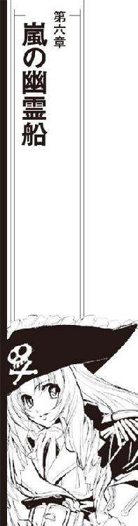

| ミニスカ宇宙海賊 02 黄金の幽霊船 | |
| 笹本祐一 | |
| 朝日新聞出版 (2012) | |
イラスト／松本規之
「船長は？」
「まだ着替え中」
「ごめん、遅れた！」
袖を通す時間も惜しんだ上着を両腕で抱いて、宇宙海賊船弁天丸船長の加藤茉莉香はブリッジに飛び込んできた。
「遅い！」
自動操縦装置に船を任せた操舵席のケイン・マクドゥガルが、頭の後ろで手を組んだままシートごと振り向いた。
「ブリッジに船長不在のまんまで仕事はじめるところだぜ」
「だってさっきまで部活やってたのよ、今日はお仕事なしって話じゃなかったの!?」
あたふたと上着に袖を通しながら、茉莉香は船長席のディスプレイに映し出されていた飛行計画を覗き込んだ。
「急ぎの仕事が特急料金先払いで入ってきたのよ」
船医のミーサ・グランドウッドが、白衣を翻してオブザーバー席から立ち上がった。
「客船相手のいつもの海賊商売だけど、今回はオプション付きだから気をつけて」
「オプション？ 誘拐ツアーかそれとも格闘戦付き？」
ミーサは操舵手のケインに目を走らせた。
「まだ、時間はある？」
「通常空間への復帰にあと二分三〇秒」
「手短に説明します。今回の獲物は、フレガート・ラインの超大型客船シンフォニー・エンジェル、護衛艦が三隻付いてるから対艦戦交えてからの乗り込みになります」
「大事ね」
茉莉香はジャケットの前ボタンをかけながら船長席に腰掛けた。ミーサは説明を続ける。
「シンフォニー・エンジェルに付いている護衛艦は小型が三隻、自治軍向けの安物だから戦力は問題にならないわ。適当にお相手して差し上げてから圧倒して降服勧告。獲物に取りついてからの海賊行為はいつもどおり。何か質問はあります？」
茉莉香は、船長席のディスプレイに必要な資料をずらーっとスクロールさせた。
「打ち合わせは済んでるの？」
「フレガート・ライン相手の海賊は何度もやってますからね。オプションの対艦戦もこっちから奇襲を仕掛けるパターンで手順書を航路管制局経由で廻してますから、実戦気分の演習を乗客にお披露目ってことで話がついてるはずです」
「それじゃ、乗りつけてお座敷かかるまではあたしの出番はなしね」
茉莉香は、宇宙海賊船弁天丸のブリッジを見廻した。決して広いとはいえないブリッジのすべての席には担当の乗組員が詰め、準備を完了している。茉莉香はにっこりと手を上げた。
「じゃ、お仕事、はじめましょう」
「通常空間に復帰する」
両手を打ち合わせたケインが、シートを前進位置に戻して繰舵輪を握った。
特有の衝撃を船体に受け、弁天丸は超空間から通常空間に復帰した。即座にレーダーとセンサー系を開放、現在位置と周辺状況を確定する。
「目標確認！」
レーダー、センサー系担当の百眼が、捉えられた艦影を即座に対照する。
「エンジェル級大型客船、及びコーバック級護衛艦三隻。装備が統一されてないのは、一度に揃える予算が下りずにちまちま買い足したからかな？」
「あちらさんの台所事情の詮索はあとでいいわ」
茉莉香は、船長席を囲むディスプレイに表示されている船体各部の現在状況を確認した。異常は出ていない。
「お仕事の準備は、いい？」
「レーダー、センサー系、異常なし！」
「推進系、機動系問題なし、いつでも撃てるぜえ」
「電子戦準備完了」
「火器及び管制系、戦闘準備完了」
その巨体を窮屈そうに戦闘指揮官席に沈めている、スキンヘッドの戦闘サイボーグであるシュニッツァーが復唱する。百眼が追加の報告を放った。
「コーバック級から照射確認。こっちの位置とトランスポンダーが向こうに捉えられた」
「つまり、こっちの位置も名前も向こうが確認してくれたってことね」
「ああ、ばっちりだ」
百眼の報告を聞いて、茉莉香はうなずいた。
「弁天丸、行きましょう」
弁天丸は、護衛艦三隻と豪華客船に向けて妨害電波を発射しながら前進を開始した。
豪華客船シンフォニー・エンジェルとそれを守るように三方に位置したコーバック級護衛艦三隻のレーダー、センサーが同時に機能を失った。三隻の護衛艦は強力な妨害電波の照射を受けて電子戦を開始、周波数を変更しながらレーダー波の出力を上げると同時に前進を開始する。
「護衛艦三隻、かかったわよお」
ぼさぼさ髪に瓶底メガネのようなヘッドセットを付けて電子戦席に沈み込んでいる電子戦オペレーター、クーリエが、眠そうな声で報告した。
「こっちの妨害波にニセ反応乗せてるから、そのうち撃ってくると思うけどお」
「戦闘手順は、と」
茉莉香は、あらかじめ敵艦に伝達されているはずの予定表をディスプレイ上に映し出した。戦闘用の高出力高周波レーダーの照射開始後電子戦に移行、接近して対艦砲撃戦、シンフォニー・エンジェルへ接舷。通常の海賊行為の前段に護衛艦との戦闘が追加されているが、通常の営業とそれほど違いはない。
「やはり、お座敷に乗り込むまで出番はなしね」
獲物に乗り込んでの海賊行為を営業にたとえて、茉莉香はブリッジを見廻した。物心がつくどころか、茉莉香が生まれる前から弁天丸に乗っている乗組員もいるブリッジでの対艦戦闘となると、船長の出番はない。
「形どおり、降服勧告は送っておいてね」
「送ってるわあ」
クーリエがおっとりした声で応じた。
「だから、もうすぐ撃ってくる」
「おーおー、敵艦エネルギー値急速上昇」
百眼がセンサーのデータを伝えた。
「やる気満々だぜ」
「降服勧告は無視か......」
海賊船弁天丸と堂々と名乗っており、なおかつ敵方の戦力が隻数で三倍となれば、それが毎回の反応とはいえ、茉莉香は不服そうにつぶやいた。
「どうしてみんな、何がなんでも射ちたがるのかしら」
「力を持っているからだ」
低い声で、戦闘担当のシュニッツァーが答えた。
「照準データを得た。コーバック級の射撃開始を待って応戦する」
「ちゃんと手加減してあげるのよ」
茉莉香は、もう一度戦闘手順書を見直した。敵艦に損傷を与えることは今回の予定表には載っていない。
「大量生産の護衛艦でも、うっかり傷つけたら、また保険会社経由で修理代金請求されたりしてめんどくさいことになるんだから」
「努力はする」
「おし、撃ってきた！」
百眼の報告と同時に、シンフォニー・エンジェル護衛のために前進してきた三隻の護衛艦は、前方に向けた一隻あたり二連装主砲二基、あわせて一二条のビーム砲を放った。徹甲のために誘導砲身の許す限り鋭く絞り込まれたエネルギービームが宇宙空間を切り裂く。
弁天丸の電子妨害のおかげか、それとも護衛艦側の長距離精密射撃の限界か、一二条のビームはどれもはるかに離れた空間をむなしく通過した。
「統制は取れている」
シュニッツァーが敵護衛艦三隻の同時射撃についての所見を述べた。
「だが、腕も装備もよくない」
「だから、手加減してあげるのよ」
茉莉香は、立体ディスプレイ上に模式表示される彼我の現在位置を見た。
「護衛艦隊は海賊相手の実戦経験、こっちはちょっとした報酬っていういつものお仕事なんだから」
「コーバック級がパターン変えてきた」
クーリエの声から、ほんのわずか眠気が消えている。
「力押しの電子戦じゃなくて、受動態勢取りながら散開してる。いいわ、ネットワークでつないだセンサーの間隔を拡げるのが索敵精度を上げる一番の正解よ」
「へえ？」
いつもの護衛艦隊とは違う動きに、茉莉香は興味深そうに散開した三隻の軌跡を追った。
「こっちの現在位置見透かされちゃう？」
「量産品の艦載コンピューターじゃ速度が足りないから大丈夫」
クーリエはのんびり答えた。
「センサーのデータが馬鹿みたいに増えていくから、計算だけで反応が遅くなる。並みの指揮官なら、ヤマを張った特定空間だけのデータにセンサー集中するほどの度胸もないから、心配ない」
「とはいえ、こっちも商売だ。少しはサービスして相手の経験値上げてやるかい？」
百眼が軽口を叩く。
「ここから相手をかすめる程度のビームを撃ってやれば、敵さんもこっちを見つけやすくなる」
「手早く済ませちゃって」
茉莉香は手を振った。
「明日だって、あたし学校あるんだから」
「へいへい」
「敵コーバック級、一隻目、二隻目、三隻目現在位置確認」
シュニッツァーは、三隻の護衛艦に仮称をつけて射撃データを確認した。第一主砲塔の三連装砲のそれぞれに、別々の艦のデータを送り込む。
「威嚇射撃準備完了。発射する」
最初から命中を目的としない威嚇射撃であることを宣言して、シュニッツァーは弁天丸の主砲を発射した。上甲板に二つ装備されている三連装主砲塔から、凝集されたプラズマエネルギーが亜光速にまで加速されて宇宙空間を切り裂く。
三つの砲身を精密に調整して放たれた斉射は、三方向に散開する護衛艦の前方空間を正確に貫いた。狙撃されているような強電子妨害下でも、どれほどの精度の艦砲射撃を受けたのか、まともな観測設備を持っている軍艦なら解析可能なはずである。
予測されていたとおり、三隻のコーバック級護衛艦の動きは奇襲を受けたかのように停止した。しかし、形どおりの対電子戦を続行しながら、護衛艦隊は再び見えない海賊船へ向けての艦砲射撃を開始した。
「降服勧告に応じない？」
初期の三隻同時斉射は、相変わらず精度を上げぬままに波状掃射に移っていた。いつもより長めの砲撃戦に痺れを切らせて、船長席の茉莉香はアームレストに肘をついた。
「聞こえなかったんじゃないの？」
「受信確認付きのメッセージアラートよ。通信係がサボってるんじゃなきゃ、聞こえてないはずないわよお」
クーリエの報告を聞いて、茉莉香は束の間考え込んだ。
「電子戦の実力差はあっても、数で勝てると思ってるのかしら？ だとしたら、実力差を目に見える形で教えてやらなきゃならないわね。シュニッツァー、三隻同時に挟叉できる？」
挟叉とは、二条以上のビームで敵艦を挟むことをいう。一方向への至近弾なら観測誤差が期待できるが、斉射されるビームの間に挟まれたら次は正確な射撃が来ると撃たれている方にもわかる。
「可能だ」
返答はすぐに来た。
「出力はどうする？ 連射するなら、挟叉させるビームは出力を落として次の射撃のためにチャージしておくか？」
「対艦用の徹甲射撃のまんまで構わないわ」
茉莉香は、護衛艦隊の後方にいるシンフォニー・エンジェルの現在位置を見た。
「お客さんが見てるんだもの、サービスはしてあげなきゃ」
「了解。目標コーバック級アルファ、ブラボー、チャーリー、全砲塔斉射する」
精密射撃のために、それまで回避機動をとっていた弁天丸が姿勢を安定させて直進する。上甲板に二つだけある三連装の主砲塔が、同時に六条のエネルギービームを放った。
狙いは違わず、六条のビームは弁天丸の推定位置に対して戦闘機動しながら艦砲射撃を続ける三隻の護衛艦を正確に挟叉した。
「もう一度降服勧告を。次の艦砲射撃はシンフォニー・エンジェルへの威嚇になる、って付け加えて」
「はい、送った」
「主砲塔、次弾チャージ中。威嚇目的なら、もう射てる」
「まあ待って、予定表を見直す時間くらいはあげないと」
「......返答来たわ」
クーリエが、メッセージを船長席に転送した。
「護衛艦じゃなくて、シンフォニー・エンジェルからだけど、降服勧告を受諾するって」
「シンフォニー・エンジェルから？ いつもと手順が違うわね？」
護衛が付いている獲物を海賊する場合、護衛艦隊が降服してから獲物が白旗を揚げるのが通常の手順である。
「ううん、護衛艦隊の方からも艦隊司令名義で降服受諾が来た。時間差だけど、なんかあったのかしら？」
「今回のお仕事が急な依頼ってことは、連絡に手違いでもあったのかしら？」
船長席の茉莉香は、オブザーバー席のミーサを見た。戦況の推移を見守っていたミーサは肩を竦めて両手のひらを上に向けた。
「手違いなんて、この宇宙のどこででも起きてるわ。護衛艦が頑張りすぎたのか、シンフォニー・エンジェルの指揮系統が乱れてるのか、推測だけならいくらでもできるけど、都合のいい解釈ばっかりだと危険なのは知ってるわよね？」
「だからって現場放棄して逃げ出したら、海賊免許取り上げられちゃう。護衛艦は戦闘態勢を解除した？」
「ああ、対電子戦も打ち切って戦闘機動も止めてる」
ありったけのセンサーを切り換えながら百眼が答えた。
「エネルギー反応は相変わらず高いまんまだが、まあその程度はよくあることだ」
「シンフォニー・エンジェルの管制系統を確保したわよ」
クーリエが情報回線を通じて得たシンフォニー・エンジェルの現在状況を船長席に廻してきた。
「シンフォニー・エンジェルは今こっちの手にあります。いつでもお仕事できるわよ」
護衛艦三隻と目の前の豪華客船の位置関係を見て、茉莉香はブリッジを見廻した。
「非常事態なんていつだって起こるんでしょ。こっちの気のせいならいいけど、そうでなかったら商売どころか命に関わるんだから。それじゃ、いつもどおり弁天丸を獲物にドッキングさせて、乗り込みましょ」
護衛艦隊に対する電子防御を継続したまま前進した弁天丸は、コントロールを乗っ取ったシンフォニー・エンジェルに強制ドッキングしてエアロックを開いた。
茉莉香自ら名乗りを上げての海賊行為は、いつもどおり待ち構えていた乗客たちの喝采を浴びた。契約どおり、乗客の宝飾品と貴重品扱いの積荷の一部を強奪して、弁天丸は本日の営業を終了した。
「終わった......」
乗り込んだ海賊どもが全員弁天丸に戻り、獲物とのドッキングを解除してからの逃走はブリッジに残った乗組員に任されている。豪華客船の乗客たちの目の前に立ったミニスカートの派手な船長服のまま船長室に引っ込んだ茉莉香は、いつものように姿見に片手をついてがっくり首を折っていた。
「今日もまた、ノリノリで宇宙海賊してしまった」
のろのろと顔を上げると、大胆なミニスカートの船長服に薄化粧して紅まで引いた自分の顔と向かい合う。
「一回やるごとに抵抗がなくなっていくような気がする......どうしよう、普通の生活に戻れなくなったら大変だわ」
茉莉香は、デスクの上に置いた船長帽に目をやった。
「絶対、こんな仕事向いてないと思ってたのに」
今日の仕事とその経過を思い出しかけて、茉莉香はふるふると首を振った。
「思い出さなくていい！ どーせ今のうちだけなんだから、こんな格好で海賊やってられるのなんて！」
言い訳気味に叫んでから、茉莉香はゆらーっと船長室の続きの間のクローゼットに向かった。
「着替えよっと」
細かく定められた服務規定によれば、海賊免許の保持者たる船長は、実際に敵船に乗り込んでの海賊行為の最中こそ身分を示す船長服の着用を求められる。しかし、通常運航中にまで船長服を着ていなければならないわけではない。今日はもう海賊船長としての仕事はないはずである。
デスクのインターホンが、呼び出し音を鳴らした。くるりと廻ってデスクに戻った茉莉香は、デスクの向こうから応答ボタンを押さえた。
「はい、茉莉香です」
『あ、ども、ブリッジの百眼でやんす。お寛ぎのところ申し訳ないんですが、ちょいとブリッジにおいで願えないでしょうか』
茉莉香は眉をひそめた。百眼が持ってまわった言い方をするときは、だいたい厄介事が発生していると相場が決まっている。
「わかった、すぐ行く」
わざわざ呼び出されるということは、インターホンで事情を聞いたところで判断できるような状況ではないということである。
「船長服、脱ぐ前でよかった」
現役女子高生が制服のまま海賊船のブリッジにいると、船長としての説得力がないこと夥しい。茉莉香は、すぐに船長室を出てブリッジに向かった。
ブリッジでは、茉莉香が初めて遭遇する非常事態が待っていた。
「密航者ああ!?」
現実世界では久しく聞いたことのない言葉に、茉莉香は思わず声を上げた。
「いつ、どこから、どうやって!? この宇宙船、海賊船のくせに密航者なんて前時代的な犯罪者に潜り込まれるほど甘い保安警備してるの!?」
「こっちが海賊をしている間に、シンフォニー・エンジェルから」
百眼が最初から順に質問に答えて簡潔に状況を要約した。
「どうやってかは、現在調査中だ」
「シンフォニー・エンジェルと強制ドッキングして乗っ取りを有線に切り換えたときに、変なノイズがあったとは思ったのよお」
電子戦席にはまり込んだままのクーリエが、申し訳なさそうに言い訳する。
「こっちのプロテクトに引っ掛からなかったから、民間用の会社間通信の暗号でも引っ掛けたかと思ったんだけど、どうやらその時に弁天丸のセキュリティが一時的に書き換えられたみたいなの。もちろん、バックアップがあるから次のチェックの時には復帰してるし、ドッキング解除するときだって確認したけど監視カメラにもセンサーにもデータ書き換えの痕跡も残ってないから、たぶんこっちから客船に殴り込んだときに向こうから忍び込まれたんだと思う」
「呆れた、完璧なハッキングじゃない」
茉莉香は、弁天丸の電子戦を一手に引き受けるクーリエと通信、センサー系を担当する百眼を見た。白兵戦要員が獲物となる客船に殴り込んでいる間、弁天丸の留守番と戸締まりはクーリエと百眼の二人に任せられる。
「そーなの」
とんとんと頭を叩きながらクーリエが認めた。
「戸締まりには自信あるつもりだったんだけど、こんなに簡単に抜かれると思わなかった」
「相手が爆弾抱えたロボットだったりしたらどうするのよ。弁天丸なんか簡単に吹き飛ばされちゃう」
「こっちの危険物センサーに引っ掛かってないから、その心配はないはずだ」
百眼が船内システムに再チェックをかけながら言った。
「エネルギー反応もでっかい金属反応も出てないから、そんなに厄介なもんは持ち込まれてないとは思うが、しかし......」
「犬や猫じゃないんだから、放っとくわけにもいかないでしょ」
「犬や猫だって放っとけるもんかい」
「それで、その密航者ってのはどこで何やってるわけ？」
茉莉香は呆れ顔でブリッジを見廻した。
「船底のドッキングコントロールに潜り込んで籠城中」
クーリエの言葉を聞いて、茉莉香は不思議そうな顔をした。
「海賊船が、密航者に船内に潜り込まれたのみならず、どこにいるか場所もわかってるのになんにもしてないの？」
「なんにもしてないわけじゃない」
百眼は肩をすくめた。
「船内に密航されたのはこっちのミスだが、ドッキングコントロールもセキュリティも今はこっちの手に戻ってる。まあ、向こうはそう思ってないかもしれないが、こっちで閉じ込めることも催眠ガスでも空気抜きでも簡単にできる。うちの陸戦隊送り込むより手間はかからねえわな」
「んじゃ、それをできない理由があるって言うのね。何？」
「密航者のデータだ」
百眼は、ブリッジのメインスクリーンに船内センサーから得られた情報を映し出した。生命反応、二酸化炭素発生量、熱量、生体質量などのデータが、リストになって表示される。
「推定身長一三五センチ、体重二九キロ!?」
わかりやすいデータだけ読み取って、茉莉香は声を上げた。
「そういうことだ」
百眼はうなずいた。
「身体の中からエネルギー反応も電子雑音も聞き取れないところを見ると、この密航者は、生身の子供の可能性が高い」
「画像は？」
茉莉香は船長席に着いた。
「ドッキングコントロールって、監視カメラくらい置いてないの？」
「ない。通信機のスイッチを入れてみたが、カメラレンズに障害物でも貼りつけられているようで、満足な画像データは得られなかった。しかし、それ以上、何かしようって動きは今のところ見られない」
「呼びかけてみたの？」
「一応、声はかけてみたわ」
クーリエがゆっくりとした声で言った。
「動きはあったけど、応答はなし。一言だけ、船長と話させろって、それ以外はね」
「それであたしの出番ってわけね」
茉莉香はヘッドセットを取って耳に当てた。
「わかった、話してみる。つないで」
百眼は、船底部ドッキングコントロールとブリッジとの回線をつないだ。船長席に回線を廻す。
深呼吸して、茉莉香は通信モニターに目を落とした。目の細かい布でも当てられているのか、カメラの視界は薄ぼんやりと曇っている。
「つながってるよ」
百眼の声を聞いて、茉莉香は口を開いた。
「こちら弁天丸ブリッジ、ドッキングコントロール聞こえますか？」
茉莉香はヘッドホンから聞こえてくる音に集中した。かすかな衣擦れが聞こえる。
相手は通信の声を聞いている。確信して、茉莉香は続けた。
「こちら弁天丸ブリッジ、喋ってくれればそちらの音声は聞こえます。そこにいるのは、誰ですか？」
『......船長と話を』
咳払いしても、通信機の向こうの声は緊張のあまりひっくり返っているように聞こえた。
『船長と直接話をさせて下さい。それ以外の人と交渉はできません』
茉莉香は、船内通信をホールドした。片手でマイクを指して、こちらの声が切れていることを確認する。
「今の声、子供に聞こえたんだけど」
「身長体重、こっちのセンサーで拾える代謝関係の数字も、同じデータを示してる。弁天丸に密航してきたのは、間違いなく子供だ」
ドッキングコントロールから聞こえてくる音に耳を傾けたまま、百眼が言った。
「だが、弁天丸に密航してくるほどの子供だ。そのつもりで相手した方がいい」
「子供だって気づいてない振りしろってことね」
茉莉香は、船内通信を回復した。
「弁天丸船長の、加藤茉莉香です。あたしがこの宇宙船の船長です。あなたは、誰ですか？」
『嘘！』
それでも低く抑えていたのか、船内通信の向こうの声がいきなり一オクターブも跳ね上った。
『弁天丸の船長は男の人よ！ それくらい知ってるわ。ゴンザエモン加藤船長を出して！』
奇妙な沈黙に覆われたブリッジを見廻して、茉莉香はそれが自分の仕事であることを確認した。
「弁天丸の先代の船長、ゴンザエモン加藤は死にました」
ちょっと待ってから、茉莉香は続けた。
「あなたは、ゴンザエモン加藤船長の知り合い？ あたしは、今の弁天丸の船長、ゴンザエモン加藤芳郎の娘で、加藤茉莉香といいます」
『嘘......』
今度の声は低かった。
『ゴンザエモンが、加藤船長が死んだなんて、聞いてない』
「私掠船免状を持つ海賊船の船長の交代は、公共ネットで公示されています」
茉莉香自身が、実感のないままそれを自分の目で確かめている。
「ニュースネットには、海賊船長の代替わりまでは載らないかも知れないけど」
『それじゃ、今の弁天丸は、誰が船長をやっているの!?』
「だから、あたし。加藤茉莉香が、現在の弁天丸の船長です」
胸の奥に複雑な感情を覚えながら、茉莉香は続けた。
「ゴンザエモン加藤芳郎の娘の、加藤茉莉香です。父の、お知り合いですか？」
幾度かの溜息のあと、応答があった。
『いきなり嘘なんて言ってごめんなさい。加藤船長がお亡くなりになっていたなんて、思いもしなかったから。わたくしは、プリンセス・グリューエル・セレニティ。セレニティ星王家の第七正統皇女、グリューエル・セレニティです』
一瞬の静寂の後、ブリッジが盛大にどよめいた。忘れずに船内通信をホールドに切り換えて、茉莉香がオブザーバー席のミーサに訊いた。
「誰？」
「雲の上の王族様よ。銀河帝国聖王家ほど古くないけど、信用できる家系図で一〇〇代以上遡れるような名門の王家の一族」
「本物？」
「確認して」
手に余る事態なのだろう。ミーサはブリッジ全体に聞こえるように声を上げた。
「それとも、誰かセレニティ星王家の最新事情に詳しい人はいる？」
「上流階級の事情なんぞ、スキャンダル専門のニュースサイトのヘッドラインくらいしかチェックしてるもんかい」
「情報収集して！ 相手が本物なら、いろいろ考えなければならないわ。船長、話を続けて」
はっと背筋を伸ばして、茉莉香はあらためて船内通信のホールドを解除した。
「プリンセス・グリューエル・セレニティ？ はじめまして、海賊船弁天丸の船長、加藤茉莉香です。ええと、もしよかったら、カメラレンズの前の障害物を取り除いて、あなたの顔を見せてもらってもいいかしら？ あたしの顔は、そちらのモニターに映ってるんじゃないかと思うけど」
茉莉香は、薄暗い画面を映し出すだけのモニターを見つめた。モニターと同軸のカメラが、ドッキングコントロールの通信モニターに自分の顔を映し出しているはずである。
海賊船長としての説得力はないだろうなあとか考えていたら、唐突に通信モニターの視界が晴れた。
『はじめまして、加藤茉莉香船長』
通信モニターの画面に、美しい人形のような少女が映し出された。
『グリューエル・セレニティです。船長の許可を得ずに乗船してしまったことをお詫びします。乗船を許可願えますか？』
緑の目を持つ、子供なのに驚くほど整った貴族らしい面立ちの少女に一瞬見とれてしまってから、茉莉香はあわてて答えた。
「乗船を許可します。弁天丸へようこそ、プリンセス・グリューエル・セレニティ。ええと」
自分の職務を思い出すのに、しばらくかかってしまう。
「もしよろしければ、直接お会いしてお話を聞きたいのですが、その前に弁天丸に乗船された理由を教えていただけますか？」
通信モニターのみならず、メインスクリーンにまで転映されていたグリューエルの表情が曇った。それを見て、茉莉香は子供が社交儀礼の笑顔を浮かべていたことに気づいた。
『幽霊船を、捕まえて欲しいんです』
「本物だ」
百眼の、めったに聞けない感嘆がブリッジに聞こえた。
「プリンセス・グリューエル・セレニティはシンフォニー・エンジェルに搭乗していた。こっちのカメラで捉えた外観データも、公表されてる彼女に一致する。あれは、本物のプリンセスだ」
「プリンセス・グリューエル、その場でお待ち下さい。ただ今から、ご案内のための人員を差し向けます」
噛みながら言って、茉莉香はブリッジを見廻した。
「シュニッツァー、大至急ドッキングコントロールに行って彼女をエスコートして差し上げて」
「おれが？」
戦闘指揮席から、小山のようなスキンヘッドの機械人が立ち上がった。
「弁天丸の船内で、おれがプリンセスのエスコートをするのはまずいんじゃないのか？」
「あああ、そうよね、この宇宙船の中で戦闘用の護衛なんか必要ないわよね。ケイン！ あなたすぐに正装してプリンセスを迎えにいきなさい！」
「えええ!?」
抗議の声を上げながら、ケインはシンフォニー・エンジェルに殴り込んだときの完全装備の戦闘服そのままに操舵席から立ち上がった。
「今から着替えろっての？ 時間かかるし、あと、ここにご案内していいのかい？」
「あああ！」
茉莉香が思わず声を上げる。
「ええと、船長室......だってプリンセスご案内できるような場所じゃないじゃない！ 食堂だって散らかってるし。ミーサ！ この宇宙船の中で賓客案内できるのっていったいどこ!?」
「誘拐した人質用の船室かしら？」
ミーサは首を傾げた。弁天丸には豪華客船からエスコートした賓客としての人質を歓待するための豪華船室が装備されている。
それまで澄まし顔で通信モニターとメインスクリーンに映し出されていたグリューエルが、堪えかねたように笑い出した。
『すみません、よろしいですか？』
「ああああああ！」
茉莉香は、それまでは切っていたつもりの船内通信が今回は筒抜けになっていたことに気づいて声を上げた。
『もしよろしければ、ブリッジにお邪魔してよろしいでしょうか。エスコートのドレスコードなど気にしないで下さい。今のわたくしは、ミッションのためにここにいるのですから』
「あああ、じゃあケイン、そのまんまでいいからプリンセスをブリッジまでご案内申し上げて！ 申し訳ありませんプリンセス、今すぐエスコートをそちらに差し向けます！」
今度は忘れずに船内通信をホールドに戻して、茉莉香はがっくりと首を折った。
「んじゃ、プリンセスのお迎えにいってきやーす」
操舵席から飛び出したケインがブリッジから出ていった。
二人を見送ってから、茉莉香は船長席からブリッジを見廻した。
「......幽霊船？ って、彼女そう言ったわね。なんのこと？」
ケインと、志願してエスコートに参加した砲手とメカニックのあわせて三人にエスコートされて、プリンセス・グリューエルはパールホワイトのロングドレス姿で弁天丸のブリッジに登場した。
「ほっそー」
透き通るような白い肌の少女の、子供なのに整った面立ちよりも、優雅な身のこなしに見とれて、茉莉香は思わずつぶやいた。
「貴船への密航をお詫びします」
船長席から立ち上がった茉莉香の前で腰を引いて、ロングドレスの少女が挨拶した。
「グリューエル・セレニティです。弁天丸への乗船をお許し下さい」
「あ、どうもわざわざご丁寧に」
授業で習ったはずの礼法なんかどっかにすっ飛んでしまった茉莉香は、あわてて一段高くなっている船長席からプリンセスの前に飛び降りた。
「今の船長の、加藤茉莉香です」
豊かなプラチナブロンドをゆるやかに結い上げたグリューエルは、船長に顔を上げた。ブルーグレイの大きな瞳が茉莉香を映した。どぎまぎしながら、茉莉香は賓客に一礼した。
「弁天丸へようこそ。プリンセスの乗船を歓迎します」
長い睫をぱちくりさせてから、やっとグリューエルの瞳が和らいだ。
「ありがとうございます、加藤船長......先代の、ゴンザエモン加藤船長のご令嬢ですか？」
「ごれいじょう......」
それが自分に向けられた言葉だと気づくのにしばらくかかって、茉莉香はあわてて笑顔を取り繕った。
「はい、先代の加藤船長はあたしの父だそうです」
「認めないわけにはいきませんね。目鼻立ちがお父上によく似てらっしゃる」
「そうですか？」
茉莉香は不思議な感覚を覚えて目の前の小さな少女を見た。
「あたしは、父を知らないんです。ときどき似てるって言われるんですけど」
「素敵なおじ様でした」
不穏な発言にブリッジがざわめいた。グリューエルはもう一度深々と頭を下げた。
「亡くなられたとは知らず、失礼を申し上げたことをお詫びいたします」
「あ、いえ、これはどうもご丁寧に」
茉莉香はブリッジを見廻した。訳知り顔を探してみるが、ブリッジの乗組員は誰もみなことの成り行きを興味津々で見守っている。茉莉香は、すぐ横のミーサに何事か知っているか目顔で訊いてみた。すぐに茉莉香の視線に気づいたミーサは、小さく首を振った。
茉莉香は、グリューエルに向き直った。
「えーと、船内をエスコートしてきた我が乗組員は、もうプリンセスに挨拶したのかしら？」
プリンセスの後ろに直立不動の姿勢をとっていたケイン、テックス、ブリガドの三人が揃って片手を振った。
「おれたちはプリンセスをブリッジにエスコートしてきただけだ、無駄話なんかしてる余裕あるかい」
「交渉ごともまとめて全部こっち任せってわけね」
茉莉香は小さな溜息をついた。
「では、プリンセスに弁天丸の主なメンバーをご紹介します。ええと......」
ブリッジを見廻して、茉莉香は手近の乗組員から紹介を開始した。
「ええと、まずプリンセスをブリッジにご案内したのは、うちの操舵手のケイン・マクドゥガルです」
「あらためて、プリンセス・グリューエルにご挨拶申し上げます」
まっすぐ前に伸ばした右手を胸に当てて、ケインは芝居がかった動作でひざまずいた。
「プリンセスを本船にお迎えできて光栄です」
「ケイン、控えて」
少女の手を取ってキスまでしかねない勢いのケインに声をかけて、茉莉香は続けた。
「その後ろが、うちの第一砲塔で砲手をやっている、テックス・エイヴェリー」
メカニカルサングラスで両眼を覆っている長身長髪の男が軽く一礼した。
「で、機械整備担当のブリガド」
ひょろりと手足の長い黒髭のターバンが、グリューエルに向けて胸の前で両手を合わせた。
「こちらは、弁天丸の船医のミーサです」
「こちらじゃないでしょ」
白衣のポケットに突っ込んでいた両手を出して、ミーサはプリンセスに微笑みかけた。
「医療担当のミーサです。だいぶストレスが溜まってるみたいね、痩せすぎよ？」
「よく言われます」
グリューエルのくちもとが緩んだ。
「それから、そこの電子戦担当が、クーリエ」
茉莉香は、船長席に背を向けたままのクーリエに声をかけた。
「クーリエ、挨拶して」
「んー」
ぼさぼさ髪に瓶底メガネのクーリエが、バックスライドさせたオペレーターシートを回転させた。膝にかけた毛布にお菓子を並べた長時間勤務態勢のまま、プリンセスに両手を振る。
「座ったままでごめんなさいねえ、立ち上がるとまた元に戻るまでタイムロスしちゃうから」
「構いません」
「で、その隣が本船の戦闘指揮担当のシュニッツァー」
プリンセスがブリッジに入ると同時に、シートから立って直立不動の姿勢をとっていた戦闘サイボーグは、ブリッジの天井スクリーンを突き破りそうに背筋をのばしたままびしっと敬礼を決めた。
「休んで下さい」
笑顔のプリンセスに言われて、シュニッツァーは芯の通った音まで聞こえてきそうな直立不動の姿勢に戻った。
「それから、彼女が航法士のルカ」
こちらを向いてシートから立ち上がった黒マントが、フードを撥ねのけて長い黒髪の上から両眼まで覆うヘッドセットをとった。マントの内側から水晶球型の立体ディスプレイを両手でかざしてみせ、頭を垂れる。
「真ん中の空いてる席が操舵手のケインの席で、その右側がレーダー・センサー系担当の百眼」
くるりと椅子を廻して立ち上がった百眼は、愛用のアポロキャップを脱いで胸に当てて一礼した。
「はじめまして、お姫様」
「右側、機関席がうちのエンジン屋の三代目」
「ども、三代目です」
すでに席から立ち上がっていた鉢巻きに作業衣の、ほとんど子供といってもいいような若い男がしゃちほこばった敬礼をした。
「最後は副長席なんだけど、残念ながら今のところ空席です。この業界も人手不足が大変なんだって」
茉莉香は、プリンセスに向き直った。
「そして、船長見習いの加藤茉莉香です」
「船長！」
ミーサがぴしりと声を上げた。
「お客さんがいるところで、自分のことを見習いなんて言わないで下さい！ 船長は事務手続き上はもう立派な弁天丸船長なんですから」
「大事なお客様だから、隠しごとはない方がいいと思ったの」
茉莉香は、グリューエルに向いたまま言った。
「今このブリッジにいるのが、弁天丸の主な乗組員です。他にもいっぱい乗り込んでいるけど、重要なことを決めようと思ったら、あたしはだいたいここにいるみんなに相談します。それでいいかしら？」
グリューエルは、もう一度ブリッジの乗組員たちを見廻した。茉莉香は言葉を重ねた。
「安心して、みんな先代のゴンザエモン加藤船長のもとで働いていた一流の海賊よ」
ひとわたりブリッジの乗員の顔を見渡してから、グリューエルは凜とした視線を茉莉香に向けた。
「わたくしは、私掠船免状を持ってこの宇宙である程度の脱法行為を許されている海賊たるあなたたちにお願いの儀があって、ここまで来ました。それは......」
口ごもるように、グリューエルが目を伏せた。
「それは？」
茉莉香に先を促されて、グリューエルは決然と顔を上げた。
「幽霊船を......さまよえる黄金の幽霊船を、見つけること」
「さまよえる黄金の、幽霊船？」
確認するように繰り返して、茉莉香はブリッジを見廻した。
ブリッジは奇妙な沈黙に包まれていた。茉莉香はプリンセスの顔を見直した。聞き間違えてはいないらしい。
「さまよえる黄金の幽霊船とは......」
声を上げた百眼は、自分の席に戻ってコントロール・パネルのキーボードを速いテンポで叩きはじめた。
「また、とんでもないもんが出てきたな」
「ちょっといいかしら？」
茉莉香の横に立っていたミーサが、組んでいた腕の片方を上げた。
「わたしたちもこんな仕事をしているから、幽霊船に限らずこの宇宙のいろんな伝説や神話は聞いたことがあるの。プリンセスが言う、さまよえる黄金の幽霊船って、つまり、古今東西の財宝を積んだままどことも知らぬ荒れた宇宙をさまよう、あの幽霊船のことかしら？」
グリューエルは、ブルーグレイの瞳でミーサを見つめた。
「正統なる王家の最初の一族が、天使の導きにより約束の地に降り立ったと言われる、星王家の神話に語られるセレニティの天使の箱船のことです」
プリンセスは、静かに言った。
「わたくしたちは、さまよえる黄金の幽霊船と呼ばれる船が、我々をセレニティの七つの宝石まで運んだ最初の宇宙船だと信じています」
銀河系には、自力で恒星間航行を達成し、星間社会を築いたいくつもの文明がある。
現在確認できるもっとも古い血統を保持しているのは銀河帝国の頂点たる聖王家だが、それ以前にも超古代星間文明は存在していたし、聖王家が歴史に登場してからも、いくつもの文明、氏族が銀河に現れては消えている。
歴史的、生物学的調査によりその血統の正統性を認められているセレニティ星王家は、三つの星系の七つもの可住惑星を故郷とする古い王家である。生命の発生のみならず、その進化まで促すほど環境が安定した二組四つの双子星を含む七つもの可住惑星が、たった三つの星系に集中している例は銀河系内でもほとんどない。そのため、セレニティ星王家が最初の版図とした七つの宝石と呼ばれる可住惑星は、超古代文明により人工的に環境を安定させられた改造惑星を含むとの説もある。
生物学的調査により、ほぼ同時期に七つの宝石に移り住んだセレニティ星王家とその領民たちの起源は、その星にないことが確認されている。宇宙全域で発生と進化、退化と絶滅を繰り返す知的生命体の出自が明らかでないのは、それほど珍しいことではない。
そして、セレニティに伝わる創世神話では、人々が天使の箱船により七つの宝石に導かれたと記されている。それ以前、星王家以下の七つの宝石に住む人々がどこで何をしていたのか、神話は語らない。さまざまな説はあるし公式の調査も行われているが、七つの宝石に到着する前に星王家とその領民がどこで発生し、発達したのかは未だ確たる証拠のない謎のままである。
創世の当初から星間文明を築くほど発達していたセレニティ星王家の穏やかな政治体制は、統合戦争終結後の銀河帝国のモデルにもなった。調整機構としての王家は内政にはほとんどかかわらず、各惑星ごとに設けられた共和制の行政府により星系が運営されている。
「幽霊船を探して、何をするつもりです？」
「正統王家の証明が必要なのです」
プリンセスは低く沈んだ声で目を伏せた。
鋭い警報がブリッジに鳴り響いた。
「お話し中のところ申し訳ない」
ヘッドセット一体型のモノアイをつけたままの百眼が茉莉香に向いた。
「セレニティ星系王宮政府がプリンセス・グリューエル・セレニティが行方不明になったと発表した。犯罪に巻き込まれた可能性も含めて行方を捜査中だそうだ」
「そんな！」
ブリッジ全員の視線を集めたグリューエルが、握り拳をくちもとに重ねて叫んだ。プリンセスの顔を見て、茉莉香はミーサに向いた。
「今回の急ぎの仕事、依頼はどこから？」
「いつもどおりよ？」
ミーサは小首を傾げた。
「ハロルド・ロイド保険組合から、いつものルートで。お姫様に密航されるのは予定外だったけど」
ハロルド・ロイド保険組合は海運からの古い歴史を持つ輸送業者同士の組合からはじまり、銀河帝国内外にまで拡がるネットワークを持つ銀河有数の巨大保険組織である。
もちろん船舶保険が主要な業務のひとつであり、海賊保険は宇宙海賊の歴史とともにはじまると言われるくらい古い。
弁天丸のもとにも、私掠船免許の取得と同時にハロルド・ロイド保険組合のエージェントが参上し、保険業務の説明と契約が行われている。以来、弁天丸とハロルド・ロイド保険組合の付き合いは長い。
「シンフォニー・エンジェルに付いていた護衛艦の所属は？」
「セレニティ星系防衛軍」
電子戦席に向いていたクーリエが即答した。
「お姫様が乗り込んでるとなれば、実質お召し艦でしょ。護衛艦三隻っていったらしょぼいけど、王族の近衛艦隊だったのね」
「保険組合のショウさんに事実関係確認して」
「あいよ」
百眼が通信回線を開く。
「ショウさん呼び出すのはいいけど、お姫様こっちに抱えてるのはどうする？」
「王族相手の星間反逆罪なんか喰らう気はないわ。保険組合敵に廻したら最後なんでしょ、訊かれたら答えて。でも、訊かれなかったら答える必要ないわ」
「反逆罪の心配なんか必要ありません！」
グリューエルが声を上げた。
「この船には、わたくしがわたくし自身の意思で乗り込んだのです！ 反逆罪など成立するはずがありません！」
「まあ、あちらさんもお姫様にそう言われる可能性を考えて、行方不明とまでしか声明してないんだろうけど」
指先でこんこんとこめかみを叩きながら、ミーサが小首を傾げた。
「でも、王宮政府がプリンセスの行方不明だけじゃなくて捜査開始まで発表したってことは......」
ミーサは茉莉香に意味ありげな視線を向けた。
「ちゃんと対策しないと、お姫様がなんと言おうと誘拐犯に仕立て上げられちゃうわよ」
「てえか、状況証拠から弁天丸を王族誘拐の大逆人に仕立て上げる気満々でしょ」
「わたくしの名誉にかけて、皆さんがそんなことにならないようにします！」
「そーは言ってもいろいろと世間の都合ってもんがあるでしょうし」
茉莉香は腕を組んで考え込んだ。
「ミーサ、今すぐ幽霊船探しにいって見つかると思う？」
グリューエルを見て、ミーサは茉莉香に目を戻した。
「無理ね」
ミーサはあっさり肩をすくめた。
「事実関係の確認と情報収集。まず幽霊船の行方を洗って、それから針路を定めなきゃならない。なにより、どこまで行かなきゃならないかもわかってないのに、この船、長距離用の補給してないわよ」
「そっか......」
茉莉香が正式に船長となってから、弁天丸は長期にわたる飛行を行なっていない。茉莉香が学業との両立を船長を引き受ける条件のひとつに挙げたため、弁天丸が海賊船として業務を遂行する時間に著しい制限が生じているためである。
必然的に、弁天丸は船長が通う女子校がある海明星の周辺空域で遊弋していることが多くなった。茉莉香が、授業終了するか、場合によっては遅刻早退を使い分けて弁天丸に到着すると同時に超光速跳躍で作戦空域に急行、営業終了とともに超特急で鯨座宮たう星系に帰還するのが通常の航行パターンである。
超光速航行を多用することになるため、船体と機関、乗組員の負担は大きくなるものの、長期航行が行われないために不満の声はない。そして、弁天丸の体制も長期航行を前提としない体制に移行している。
「それじゃあ、とにかくまず海明星に戻りましょう」
茉莉香はブリッジを見廻して宣言した。
「プリンセス・グリューエル、あたしたちが港に到着するまでに話せる限りの事情を教えて下さい。あたしたちが黄金の幽霊船を探せるのか、プリンセスを助けられるのかは、それから判断させて下さい」
「そうですね......」
プリンセスは暗く沈んだ表情のまま答えた。
「ゴンザエモン加藤船長がいない今、それが必要でしょうね」
「ねえ、ひとつ訊いてもいいかしら？」
電子戦席に向かって指を走らせながら、クーリエが横顔だけこちらに向けた。
「はい、なんでしょう？」
「もしよかったら、どうやって弁天丸のセキュリティくぐり抜けたのか教えてくれない？ クラッキングの跡も穴もどうやっても見つからないの。いったいどんな魔法を使って弁天丸に乗り込んだの？」
再びブリッジの乗組員全員の視線を集めたグリューエルはにっこり微笑んで、カクテルドレスの胸もとから何かを取り出した。
「何？」
茉莉香は、グリューエルの細い指先の銀色の髑髏の形の作り物を覗き込んだ。
「......指輪？ 頭蓋骨の？」
「髑髏の指輪!?」
声を上げて、ミーサがプリンセスの指先を覗き込んだ。下顎骨のない髑髏をデフォルメした無骨な作りの指輪が、うつろな視線を黒い眼窩からぼんやりと投げかけている。
グリューエルは、大きすぎる指輪を自分の左手の中指にはめてミーサと茉莉香に向けてみせた。
「加藤船長から貰ったんです。もし何か困ったことがあれば、これを持って弁天丸に来いって」
「あんのボケナス、なにが金庫に仕舞ってあるよ！ せっかく作った電子鍵埋め込み済みのＩＤリング、こともあろうに部外者に横流しして知らんぷりしてたの!?」
「ええええー！」
電子戦席から、膝に拡げたお菓子一式を振り落として飛んできたクーリエが、プリンセスの細い指に挟まれて浮いているごつい髑髏の指輪を覗き込んだ。
「あーほんとだ。ゴンザエモンが持っていった船長用の管理者権限入りのＩＤリングだ......」
「誰にも言っちゃいけない、秘密だよって言われてました」
子供の指には太すぎる大きな指輪を抜いて、プリンセスは掌に載せて差し出した。
「秘密を守れなかった以上、わたくしにはもうこれを持っている資格はありませんね」
クーリエもミーサも手を出さない。茉莉香は、グリューエルの白い掌の上の髑髏の指輪を見て、プリンセスに微笑んだ。
「先代の弁天丸船長が......父がそれをあなたに差し上げたのなら、あたしたちもあなたの話を聞かなければならないでしょうね。もしお邪魔でなければ、それを持っていていただけますか？」
「いいんですか？」
それまで沈んでいたプリンセスの顔がぱあっと輝いた。ミーサが船長に責めるような視線を向けたのは一瞬だけだった。
「お守りにもならないかも知れませんけど」
茉莉香はうなずいた。
「さあ、それじゃあお話を聞かせて下さい」
翌日、白凰女学院はプリンセス・グリューエル・セレニティの中等部への短期留学生としての転入を発表した。
「茉莉香ー！」
中等部以来の腐れ縁である遠藤マミが教室に駆け込んできた。まっすぐに茉莉香の机に飛んでくる。
「中等部のお姫様、見たー!?」
「......えーと......」
午前中の授業の大半を居眠りで過ごしたのにまだ寝不足の顔のまま、茉莉香はのろのろと机から顔を上げた。
「見た、というかなんというか」
「見てないんなら見といた方がいいわよ、あれは」
前席にすとんと腰を落としたマミは、横座りのまま半身を後席の茉莉香に向けて両肘をついた。
「王族の実物見るのははじめてだけど、さすが本物はオーラが凄いわねえ。うちの学校の芸能人と比べても、気品が違うっていうか育ちが違うっていうか出が違うっていうか......」
「そりゃ、まあ、そうでしょうねえ」
ふわああ、とあくびをしながら目を擦った茉莉香はうーんと伸びをした。
「あたしたちみたいな庶民と違って、世が世なら雲の上の人だもん。食堂、もう空いたかな？」
学生食堂は充分に広いが、それでも中等部、高等部の全学生が集中する昼時は大混雑する。学年、授業によってラッシュ時間は多少前後するが、おおむね昼休み開始直後を避ければそれほど苦労することはない。
「さっき昼練前の運動部がテイクアウトに大攻勢かけてたけど？」
「んじゃ、もう終わってるの期待しよう。マミはお昼は？」
「これから。急がないと、五時限目のガルガル様にまた文句言われちゃう」
昼休み開始直後の集中混雑は終わっているはずなのに、高等部旧校舎と中等部新校舎の間に建設された講堂の大食堂は、中等部、高等部入り乱れた全校生徒でまだごった返していた。
立錐の余地もない高等部側の正面入口をさっさとあきらめ、茉莉香とマミは天井裏の高層通路から尖塔経由で大食堂に入った。天井の高い大食堂をぐるり一周する回廊から降りる手段は梯子しかないが、ここからならさほど苦労しないで大食堂の中に入り込める。
そして、高い回廊の上から無数のテーブルが並ぶ大食堂を見下ろした茉莉香は混雑の原因を理解した。
中等部、高等部の制服だけではなく運動部の体操服まで入り交じった女子校生たちは、大食堂の一画に集中していた。
人混みの中心に、テーブルについてはいるものの、目の前の食事にはろくに手をつけずに囲まれている金色の髪の少女がいた。その小ささも細さも知っているのに、茉莉香は彼女が大きく見えた。
「なるほど、昼食に大食堂に来たら、全校生徒を呼び寄せちゃったわけか」
凝った意匠が施されたモルタル造りの回廊の手すりに両肘をついて、マミはしたり顔でうなずいた。
「すごいわあ、こんな離れてるのに輝いて見える」
遠目に見ても、正しい作法で片手にナイフ、片手にフォークを握りしめたお姫様はひっきりなしに話しかけられ、笑いかけられ、挨拶されているのがわかる。テーブルについたグリューエルは相手をするのに忙しくて、パンやサラダをくちもとに運んでいる暇もない。
「楽しそうね」
茉莉香は安心したようにつぶやいた。遠く離れているから会話の内容までは聞き取れないが、くるくると視線を廻す姫の表情はころころと変化する。
食器の音と音程の高い喧噪に満たされた大食堂に、楽しそうな笑い声が炸裂した。どんな冗談を言ったのか、姫を中心に笑いの輪が急速に拡がっていく。
「あれ、どうしたんだろ、なんか聞こえた？」
「こんな離れてるのに聞こえるわけないでしょ」
茉莉香は手すりから離れて回廊を歩き出した。
「早く行こ。今ならどこのカウンターも空いてるから」
茉莉香が天井を支える太い柱の裏に作り付けられている梯子に手を掛けてするすると降りはじめた時、校内放送が聞き慣れたチャイムを鳴らした。
「高等部一年へ組の加藤茉莉香さん、至急高等部保健室まで来て下さい。ミーサ・グランドウッド先生がお待ちです。繰り返します、高等部一年へ組の加藤茉莉香さん」
「んもう！」
校内放送で自分の名を読み上げられて、先に梯子を降りていた茉莉香が止まった。
「ありゃ、呼び出し」
あとから梯子に手を掛けたマミが、梯子の途中の茉莉香を見下ろした。
「どうする？ 食事してから行く？」
「なんでもいいからテイクアウトしといて」
不服そうな顔で、茉莉香は一度降りかけた梯子をするすると登りはじめた。
「あとで教室で遅弁する」
大食堂の入口は、中等部側も高等部側もまだぎっしり埋まっている。来た道を戻った方が早い。
「わかった。なんか適当に買っとく」
回廊を駆け出した茉莉香と入れ違いに、マミは梯子を降りはじめた。
不要の外来者を避けるためか、保健室には「治療中につき急患以外立入禁止」の札が掛けられていた。
ミーサのいつもの手かと思って、茉莉香はゆっくり保健室のドアをノックした。
「どうぞ」
「他のお客さんはいないの？」
ドアを半開きにして、茉莉香は保健室の中を覗き込んだ。
「寝不足の体調不良組は寮生だってんで寮に追い返したわ。あとは昼食に行かせて、今のところ誰もいないわよ」
「なら、いいけど」
もういちど廊下の左右を見廻して誰にも見られていないのを確認して、茉莉香は保健室に滑り込んだ。
「お茶呑む？ お菓子くらいならあるわよ」
「わあありがと、お昼まだなんだ」
茉莉香は診療卓のミーサの前の診察椅子に滑り込んだ。ミーサはポットをとってティーカップにお茶を注いだ。
「うまく考えたじゃない。木を隠すなら森の中って昔から言うけど、隠し場所まで公言して相手の動きを封じるなんて上出来だわ」
「どうしてたった一晩で、王族の転校どころか中等部の制服までフルオーダーでできるのよ」
茉莉香はミーサを睨み返した。
「弁天丸の乗組員が、身許検査の異常に厳しいはずのうちの学校に簡単に転入してきたり」
「あら、ケインの教員免許は知らないけど、わたしの医師免許は本物よ」
「免許が本物でも中味は偽物じゃない」
「あら、言うわね」
目を見開いてから、ミーサは笑った。
「この問題が高度に政治的である、ってハロルド・ロイド保険組合が認めたってことよ」
「......ああ、それで」
ハロルド・ロイド保険組合は、鯨座宮を含むオリオン腕の運輸保険業界では最大手の保険業者である。その活動範囲と経済規模は大手の星間企業や星系連合国家を軽く上回る。
「由緒ある王族の、第七位とはいえ正統皇女をお迎えするなんていったら、ほんとだったら立派な外交イベントなのよ。この星の行政府だってお役所仕事の慣例すっ飛ばして動くところなんだから、白凰女学院が超特急で対応するのはあたりまえでしょ」
「ふーん」
茉莉香は、ちょっと胡散臭そうにミーサの顔を睨んだ。
「それが、前回、海賊船の乗組員がうちの学校に教員として潜り込めた裏なのかしら？」
「それだけじゃないけどね」
謎めいた笑みを浮かべて、ミーサはテーブルの上のディスプレイに手を触れた。非実体ディスプレイの表示が変わる。
「裏ルートで、セレニティ王宮政府から海明星行政府に外交ルートで特書が届いたらしいのよ」
「特書？」
茉莉香は首を傾げた。
「文書にした外交メッセージのこと。もちろん、送られてきたのは紋章鍵付きの通信文だけで、実物はあとから届けられるんだろうけど、要はセレニティ王宮から海明星政府に正式な依頼があったっていうことよ」
銀河帝国に加盟する星は数十億、合従連衡を繰り返す行政府や自治体でもその数は一億を軽く越す。そのすべてがすべての星に大使館や領事館を置くのは事実上不可能であるから、外交ルートの連絡はほとんどが超光速空間を経由する情報通信によって行われる。重要なメッセージについては、あとからハードコピーが送付される。
「それって......時間はいつですか？」
「聞いてくれると思ったわ」
ミーサは満足げにうなずいた。
「銀河標準時で今日に日付が変わってからすぐ」
ミーサは、ディスプレイに映し出された通信記録をスクロールさせた。
「新奥浜は銀河標準時と同じ時間で動いてくれてるから都合がいいわね。昨日、弁天丸が海明星に入って、船長が帰ってからの発信時刻になってるわ」
プリンセスは、そのまま弁天丸にお泊まり願った。
「保険組合に連絡してからね？」
事情説明と問い合わせは百眼に任せきりだったが、もちろん茉莉香は報告を受けている。海明星に帰還するための超光速跳躍に入る前に、弁天丸はハロルド・ロイド保険組合に第一報を入れて事情を説明した。
超光速跳躍から鯨座宮の惑星間空間に復帰後、第三惑星海明星への航行中に今度はハロルド・ロイド保険組合から呼び出された。その交信では茉莉香も通信に呼び出され、専門は交渉事だという年齢不詳の保険組合代理人ショウに事情説明を行なっている。
「つまり、ショウさんがセレニティに連絡とって、お膳立てしてくれたってこと？」
「あるいは、海明星行政府にもね」
保険員は眠らない。官僚もまた眠らない。星間情勢は常に動き続けるからである。
セレニティ王宮政府と銀河標準時の時差がどれくらいあるのか、茉莉香は知らない。しかし、ハロルド・ロイド保険組合から連絡を受けた王宮政府と、深夜だったはずの海明星行政府が即座に反応したことは想像がつく。経済に直結した保険会社からの勧告は、銀河帝国のそれよりも損得に直結するからである。
「てえことは......」
延々と続く通信記録を見て、茉莉香はミーサに目を戻した。
「これって、すでに政治問題になってるってこと？」
「だから、そうならないようにハロルド・ロイド保険組合が仲介して、プリンセスの短期留学ってことで話を収めたってこと。それよりも問題は、自分の得にならないことには指一本だって動かさないロイド保険が、これほど早く動いたってことかしら」
茉莉香は、ミーサの言葉の意味を考えてみた。わからない。
「どういう意味？ 保険組合が、このことを政治問題にしない方が得だって考えたってこと？」
「そうじゃなくて、弁天丸担当のショウさんだけならともかく、遠いセレニティ星系絡みの話だってのに、保険組合があっという間に火消しに動いたってことよ。どうせプリンセスの身辺データも必要だから、ショウさんだけじゃなくて百眼とクーリエにもいろいろ調べてもらってるけど、この話、けっこうきな臭いかも」
茉莉香は眉をしかめた。
「どこの星だって多かれ少なかれいろんな問題があるものだけど、ひょっとしたらセレニティ王国の事情は知らない方がいいくらい厄介なことになってるかもってこと」
ミーサは、茉莉香を試すような視線を向けた。
「考えてご覧なさい。齢一二才、社交界デビューだってまだ先の話のプリンセスが、なんでたった一人でお召し艦から海賊船に密航してきたのか。伝説の幽霊船を探すなら、王立の捜索隊でも組織した方が早いんじゃないかしら」
「......それができない理由がある、と？」
考えながら口にした茉莉香に、ミーサは肩を竦めてみせた。
「王宮政府の事情も、お姫様の本心もわたしは知らないわ」
「あたしにそれを訊けっていうの？ 意地悪」
「弁天丸を預かる船長の仕事よ。ましてや、その上プリンセスの依頼まで聞こうって言うんなら」
「......わかってるわよ」
茉莉香はミーサから目を逸らした。
「ミーサだって、お姫様のあの思い詰めた瞳見たでしょ」
「戦争でも起こしかねない顔してたわね」
「王族の生活なんか知らないけど、あたしなんかよりよっぽどしっかりした教育受けて、権力も責任も承知してる子が、わざわざセレニティ星系と関わりのない海賊船を選んで密航してきた。そりゃあ、それなりの事情も覚悟もあるでしょう」
茉莉香は、もう一度ディスプレイに映し出されている通信記録を見た。タイトルが省略されたメッセージは、ハロルド・ロイド保険組合、セレニティ王宮政府、海明星行政府の間でひっきりなしに飛び交っていた。
「でも、グリューエル、楽しそうな顔してた」
茉莉香は、学生食堂のテーブルで同級生と談笑していたグリューエルの姿を思い出した。
「どうせ、ショウさんからの裏事情の説明もまだないんだろうし、弁天丸も今日明日出発できるなんて状況じゃないんでしょ。しばらくは、普通の学生生活させてあげたい」
「あんまりゆっくりしてもらうわけにもいかないわよ」
ミーサは、ディスプレイの表示を切り換えた。
「プリンセス・グリューエルの海明星への一時留学を発表した直後に、転校と教職員採用の申し込みと問い合わせが全銀河から殺到してるわ」
茉莉香は、呆れ顔で職員用情報スペースに表示されたウェイティングリストを眺めた。
「なんでまた......」
「いくつかはゴシップ狙いの潜入取材目的かも知れないし、野次馬かも知れない。でも、タイミングから考えて全部プリンセスを狙ってることは間違いないわ。そのうちどれくらいがどんな邪悪なこと考えてるのか、あんまり想像したくないわね」
「あたしの時は？」
ミーサは、茉莉香の顔を見た。茉莉香は言い直した。
「ミーサもケインも、それからチアキちゃんも、あたし目当てでこの学校に来たんでしょ。他にも、あたし目当ての転校生とか先生とか来たのかなーと思って」
「白凰女学院は良家の子女が通う名門よ。そんなに甘いセキュリティしてるわけないじゃない」
「どこまで信用できるのかしら」
聞こえるように呟いて、茉莉香はミーサに目を戻した。
「それで、セレニティ星系の表の事情の方は？」
「調べてみた？」
「ガイドブック程度の情報なら」
茉莉香はうなずいた。セレニティ星系は海明星からは遠い空域にあり、直接の交流はほとんどない。
「惑星改造を受けていない古い七つの星の連合王国で、星ごとに自治政府がある。王宮政府はその上に位置して、連合王国の指揮と対外的な交渉を担当。あと、自然公園や古い街やリゾートなんかの写真も載ってたけど」
「セレニティの観光向けサイトね。売り文句は覚えてる？」
「古典の王国、だったっけ。二〇〇〇年も前に最初に惑星に降り立った当時の王の建国宣言が、画像記録でそのままサイトで見られるなんてびっくりしちゃった。ミーサは行ったことあるの？」
「近所の航路を通りすがったことはあったけど、母星を見たかどうかも覚えてないわね」
弁天丸のような戦闘用宇宙船で航行していると、肉眼で宇宙空間を見渡す機会は意外なほど少ない。
あらかじめ用意しておいたのか、ミーサは短い手順だけでセレニティ連合王国観光局が宣伝用に設置したらしい美しい風景写真に飾られたサイトに移動した。
「原住の知的生命体っていったら海洋哺乳類の一部が文明以前の言語コミュニケーションしてるくらいなところに、高度技術文明を持って入植、長期計画で開発された星系だから、歴史が長い割に環境汚染も少ないし自然にも恵まれてる。連合王国の形は取ってるけれど、王宮は各地の統治はそれぞれの星に任せて君臨すれども統治せずが建前だったから、歴史はおおむね平穏。豊かだったのと王宮政府の外交手腕のおかげで、惑星が破壊されるような星間戦争にも巻き込まれずに済んでる」
「歴史があって安定してるなら、言うことないじゃない」
「歴史があるのは事実だけど、安定してるかどうかは見方によるわね。セレニティ王国は三つの恒星系に跨る連合王国として成立したけど、建国していくらもたたないうちから恒星系別、惑星ごとの独立運動で揉めてるらしいわよ」
「へえ？」
実感をもてないまま、茉莉香は相槌を打った。
「一緒になってるんなら、仲良くやってればいいのに。当時は知らないけど、今は銀河帝国の一部なんでしょ？」
「それができれば世の中平和よね。銀河帝国の一部であることには異存はないけれど、ひとつの連合王国であることよりも、惑星ごと、あるいは星系ごとに独立した方がいいって考える人も昔からいるってこと」
「なんで？」
茉莉香はますます首を傾げた。ミーサは笑って答えた。
「それこそ、大人の事情だと思うわ。詳しいことは、ショウさんか百眼の報告を待つか、それとも直接お姫様に訊いてみたら？」
茉莉香はまた考え込んだ。
「......それが、お姫様が一人で幽霊船を探しにきた理由？」
「わたしたちが推測できるような理由なら、王宮政府が幽霊船の捜索隊を組織するのに問題はないはずよ。たぶん、これは事情の一部でしかないはず」
「ふうん」
茉莉香は唸った。
「いろいろ、大変そう」
遠慮がちのノックの音が保健室のドアを叩いた。ミーサはセレニティの観光案内が映し出されていたディスプレイの表示を素早く切り換えた。
「はいどうぞ、開いてるわよ」
ドアは開かない。あれ、鍵かけてないよな、と茉莉香が考えている間に保健室のドアは遠慮がちに開いた。
「立入り禁止のところ失礼します」
心配そうな顔で、グリューエルが大きな瞳で保健室の中を覗き込んだ。
「あの、患者さんの容体、大丈夫でしょうか？」
茉莉香と顔を見合わせてから、ミーサは治療中立入り禁止の札を保健室に掛けておいたのを思い出した。
「ああ、あれはおサボり除けのお呪いみたいなものだから」
ミーサはグリューエルを手招きした。
「どお？ 学園生活、楽しんでる？」
「はい、それはもう」
一礼して保健室に入ってきたグリューエルは、うれしそうに笑って口の前で手を合わせた。
「わたくし、ずっと家庭教師と小さな学校ばかりだったもので、こんな大きな学校に憧れていたんです。午前中いっぱいかけないとクラスメイトの名前覚えきれないなんて、夢みたい！」
目を丸くしている茉莉香の前で、ミーサが助け船を出した。
「名前と顔を覚えるのはお仕事みたいなものだものね。不自由なことはない？」
「問題は、何もありません」
茉莉香は、グリューエルが社交用の微笑みを取り戻したのに気づいた。
「教師の方々も、クラスメイトの皆さんも、みんなわたくしによくして下さいます。こんなにも同年代の方々がいっぱいいて、しかも自分もその一員だということにまだ馴染めませんけど、わたくし、今、とても充実しています」
「ゆっくり楽しんでね」
グリューエルは、白衣のミーサと向かいの診察椅子に座っている茉莉香を交互に見た。
「何か、わたくしに関係のある話だったのではないですか？」
とっさにミーサと顔を見合わせてから、茉莉香はグリューエルに顔を戻した。
「昨日の今日だからね、弁天丸のみんなに頼んでいろいろ情報収集してもらってるところ」
「そうですか」
グリューエルの表情が沈み込んだ。
「今のところ、目立った情報はこっちに届いてないわ。伝説の幽霊船についても調べてもらってるけど、通り一遍の目撃報告だけで、その先の観測データや確実な情報にはまだ辿り着いてません。セレニティのさまよえる黄金の幽霊船ていったらリストでも上位の有名な幽霊船だけど、歴史があるだけに新しい確実なデータが出てこなくて、苦労してるみたい」
茉莉香は、ちらりとミーサを見た。
「で、合ってるわよね？」
ミーサはうなずいた。
「あとは情報収集と分析の勝負だけど、幽霊船なんていったら、昔から遺跡荒らしに引き揚げ業者、ものによったら賞金稼ぎや宗教団体まで入り乱れるような話の種ですから、いくら正統のお姫様がこっちに付いているといってもいったいどこまで追いかけられるか」
古来から、銀河系宇宙に幽霊船の伝説は数多く伝わっている。その正体は、単なる難破船から特殊な自然天体、無人戦艦から本物の幽霊船まで様々だが、話題になるほどのものならほぼ間違いなく金になる。
大航海時代の幽霊船、難破船や沈没船と違って、宇宙空間での宇宙船の劣化ははるかに遅くなる。単なる難破船や漂流船でも回収すれば最低限金属材料として売れるし、古代技術や骨董品、財宝が積み込まれたままさまよっている宇宙船も珍しくない。
幽霊船は、その中でも特別に正体の解明や回収の難易度が高いものに付けられる称号でもある。
コントロールを失ったりエネルギーが尽きたりして漂うだけの宇宙船なら、一度発見されれば物理法則に従った軌道を飛び続ける。しかし、幽霊船と呼ばれる宇宙船はその存在が確認されたあとでさえ現れたり消えたり、物理法則に従わずに空間や時間をねじ曲げるものも珍しくはない。
通常の法則に従わない宇宙船は、通常の宇宙船にはないものがあると考えるのが普通である。その正体は超古代の超光速宇宙船であったり暴走した秘密兵器だったりしたこともあるが、幾多の組織や業者、時には冒険家が幽霊船狩りに挑んできた。そのうちいくつかは正体を特定して知られざる技術を発見したり、仕掛けられた幾多の罠を突破して財宝を手にしたりしている。
航路が整備され、交通が密になるにつれて、幽霊船と称される宇宙船の報告も減ってきた。軍用のみならず民間の宇宙船も惑星間空間なら見通せるような走査範囲の広い強力なレーダーを装備して、周辺状況を確認しながら航行するようになって、幾度も観測される幽霊船については帝国軍の協力も得て未確認飛行物体として調査対象となっている。
それでも、今もなお幽霊船と呼ばれ、謎のままさまよい続ける宇宙船も存在する。
「情報が必要なのですね？」
しばらく考えていたプリンセスは、決然と顔を上げた。
「わかりました。なんとかしてみます」
「なんとかって......」
保健室備え付けのスピーカーに、午後の授業開始を知らせる鐘の音が鳴った。茉莉香は反射的に診察椅子から立ち上がった。
「ああ、教室戻らなきゃ！ 帰り道わかる？」
「ええ、大丈夫だと思います」
「それじゃ話の続きは放課後。ミーサ、あとでまた！」
グリューエルの細い手を引っ掴んで、茉莉香は保健室から飛び出していった。
二人の生徒の後ろ姿を見送ったミーサは、診察卓のディスプレイに向き直ってスイッチを入れた。
セレニティの自然豊かな風景をいくつも重ねた観光局のサイトが映し出された。
「なんとかするって......どうするつもりかしら、あのお姫様」
三日後。
「来週までお仕事ないって話じゃなかったの!?」
茉莉香は、旧館地下の職員用の駐車場に学生鞄とコートを抱えて駆け込んできた。
「ごめんなさい、急なお仕事が入ったのよ」
こちらは白衣のまま飛び出してきたミーサが、オープンのままのクラシックなコミューターにひらりと飛び乗った。メインスイッチを入れ、旧式なアナログ式のメーターがずらりと並ぶコンソールで異常がないことを確認する。
「場所は？ せっかくの週末なのよ、ちゃんと今日中に帰ってこれるんでしょうね」
「たう星系の中だって話よ、うまくいけば夕食までに帰ってこられるはず」
茉莉香は助手席に飛び乗った。運転席のミーサは、コミューターを発進させようとせずに懐中時計を開いた。
「行かないの？」
「もう一人遅刻してる奴が」
「ケインか」
ミーサは、助手席から腰を上げて持ってきたコートの袖に腕を通した。ケインも、プリンセス・グリューエルの転校と同時に、今度は中等部の体育教師として教職に返り咲いている。
「高等部で物理の次は中等部で体育かあ。ケインったらもててるらしいじゃない」
「彼、あれでなかなか教育熱心なのよ」
ミーサは、開いたままの懐中時計から顔を上げて、明るい照明に照らし出されている広大な地下駐車場を見渡した。太い石柱に支えられた地下駐車場には職員通勤用のコミューターが並んでいるが、スペースが有り余っているのをいいことに、一部は運動部や文化部の物置代わりに使われている。
「だから、外廻りの仕事にも向いているんでしょうけど」
地下駐車場のエレベーターが開いて、ジャージ姿のケインが駆け込んできた。体育教師らしい見事なダッシュで一直線に駐車場を駆けてくる。
「遅い！」
懐中時計をぱちんと閉じたミーサは、ケインが後席に飛び込むのを確認もしないでコミューターを発進させた。
「悪い、途中で厄介なのに捕まりかけたんだ」
見事なジャンプでフルオープンのコミューターの後席に転げ込んだケインが、前席のバックレストに手を掛けて身体を起こした。
「先廻りされてると面倒だ、急いでくれ」
「厄介なのって、あなた、中学生相手に何やってるの？」
あっという間にコミューターをスピードに乗せたミーサは、急ハンドルを切って地上に上がる石畳の傾斜路を駆け上がった。
自動で引き上げられるはずの木製の大扉はやっと動きはじめたところだった。ミーサは、大型トラックでも二台並んで通れそうな駐車場の大扉寸前でコミューターを急停車させた。
「ミーサ、運転乱暴！」
「急いでるのよ。船長だって早く帰りたいでしょ」
見た目は木製でも、中に装甲板をサンドイッチしていると噂される大扉は、大仰なモーター音のわりにゆっくりとしか開かない。開ききらないうちに突っ込んだら、フロントウィンドウから飛ばされる。
「このドア、いっつも開くの遅いんだから」
ぶつくさ言いながら、ハンドルを握るミーサはもう一度懐中時計で現在時刻を確認した。近所のインターチェンジからフリーウェイに駆け上り、空港に飛ばして自家用機エリアの連絡機に乗りつけ、そこから軌道上の弁天丸までどれくらいかかるか。
「あ！」
助手席の茉莉香と後席のケインが同時に声を上げた。人の背の半分ほども開いていない駐車場大扉から滑り込むように転がり込んできた人影が、止める間もあらばこそコミューターの後席のドアを開けて乗り込んできた。
「グリューエル!?」「プリンセス!?」
前席から振り向いた助手席の茉莉香に目礼したグリューエルは、後席隣のジャージ姿のケインを軽く睨みつけた。
「学校の中でプリンセスとは呼ばないようにお願いしたはずですけど？」
「どういうこと？」
運転席から振り向いたミーサは、ケインを睨みつけた。女性三人からの視線を浴びて、ケインは頭を抱えた。
「知らねーよ。軌道から緊急呼び出しだってんでホームルーム切り上げて飛び出してきたら、連れていけってお姫様が」
「緊急のお仕事ですわよね？」
グリューエルは相手をミーサに替えた。
「お仕事は、たう星系外縁の不審艦の動向調査。護衛艦隊司令部経由の依頼、違いますか？」
ミーサは、ケインを見て、茉莉香を見た。茉莉香が学業と海賊業の両立を宣言して以来、弁天丸からの緊急呼び出しは珍しいことではなくなった。そして、状況説明は乗組員が弁天丸に揃ってから現場への移動中に行われるようになっている。
「そうなの？」
訊いた茉莉香に、ミーサは首を振った。
「場所はその辺りらしいけど、事情までは聞いてないわ」
「王宮に、資料を持ってくるようにお願いしました。たぶん、防衛軍の戦艦が届けにきてくれたんだと思います」
「どうやって!?」
ミーサが声を上げた。
「いつの間に？」
開ききった大扉が停止した。判断を求めるように視線を走らせたミーサに、茉莉香は指示した。
「車出して。話、走りながら聞く」
肩をすくめて、ミーサはコミューターを急発進させた。
「飛ばすわよ」
高速走行するコミューターの騒音の大半は、風切り音である。次がタイヤ音であり、モーター音は騒音源としてはほとんど問題にならない。
ミーサのコミューターは、高速走行が馬車より速い程度の時代のクラシックカーのスタイルをそのままレプリカしている。通常の民間規制など無視した高出力モーターはレーサー並みの高速走行を可能としているが、流体力学が確立される以前の空気抵抗など考えないフルオープンのコミューターの居住性は、速度を出せば出すほど悪くなる。
宣言どおり、ミーサは混雑する午後のフリーウェイを手動制御の限界に挑戦するようなフルスロットルで空港まで飛ばした。時速一〇〇キロを軽く超える暴風に吹きさらしにされるコミューターの座席で、会話が成立するわけはない。
自動運転のバスとコミューターをかき分けるようにして新奥浜空港のインターチェンジを駆け降りたコミューターは、自動パスのゲートを抜けて自家用機エリアに急行した。予約を入れておいたおかげで、弁天丸専属の小型ビジネスシャトルは発進準備を整えて駐機場に入っていた。
発進前の外周チェックをずるしてミーサ運転のコミューターで一周するだけで済ませたケインは、真っ先に飛び降りてビジネスシャトルに飛び込んだ。あとに、駐機場附設の駐車場にコミューターを入れるべくハンドルを握り直したミーサと、髪の毛をぼさぼさにして助手席と後席でぐったりしている茉莉香とグリューエルが残される。
「どうする？」
「......話なんかできるわけないじゃない、あんなに飛ばされたら」
ダッシュボードに手を掛けて、ぼさぼさに乱されたロングヘアをかき上げながら茉莉香が身を起こした。
「グリューエル、生きてる？」
「大丈夫です。問題は何もありません」
力のない声で応えて、後席に沈み込んでいたグリューエルがのろのろと立ち上がった。
「お話はシャトルの中で、でよろしいでしょうか？」
茉莉香は、ハンドルを握るミーサを見た。
「そうしたら、お姫様を仕事先まで連れていくことになるわね」
軌道に上がったシャトルは弁天丸の船内に格納される。言わずもがなの予測を聞かされて、茉莉香が考え込んだのは一瞬だけだった。
「どっちにせよ、仕事先でなんかあったらプリンセスの依頼を受けられないのは一緒でしょ。わかりました、グリューエルもシャトルに乗って下さい」
茉莉香は助手席から駐機場に飛び降りた。
「船長の心遣いに感謝します」
後席のドアを開けたグリューエルは、コミューターから降りようとしてよろけた。手助けしようとした茉莉香に抱きとめられる。
「ごめん、ミーサって本気で飛ばしたらすごいから」
「大丈夫です」
「車を置いてくるわ」
あとを茉莉香に任せ、ミーサはコミューターを発進させた。茉莉香は、グリューエルの細い身体を支えながら航法灯が点灯しはじめたビジネスシャトルの乗降口に向かった。
「すみません、乗り物には強い方だと思っていたのですが」
「フルオープンのまんまってのが失敗だったわね、あれじゃ話もできやしない」
乗降ハッチの内側のステップを踏んで、茉莉香はグリューエルとともにビジネスシャトルのキャビンに乗り込んだ。送迎用にも使われるビジネスシャトルは、操縦室と客室が分けられている。
操縦室の開きっぱなしのドアから、飛行前チェックを超特急でこなすケインが声をかけた。
「弁天丸から通信が入ってる」
「キャビンで受けるわ」
数脚の豪勢なソファシートが取り付けられている小さなキャビンに入った茉莉香は、ひとつめのシートにグリューエルを座らせた。反対側のシートに腰を落とした茉莉香は、窓際のポケットに突っ込まれていた小さなワイヤレスのヘッドセットを取り出した。スイッチを入れ、チャンネルを合わせて耳に当てる。
「はいこちら茉莉香」
『あいよ、こちら弁天丸、百眼だ』
専用回線特有のデジタルノイズのあと、百眼の声がほとんどタイムラグなしにヘッドセットから流れた。
『すまんね、学校があるっていうのに急ぎで呼び出して』
「お仕事だもの、仕方ないわ」
茉莉香は、隣のシートに沈み込んで息を切らせているグリューエルをちらりと見た。
「先にこっちから報告するわね。プリンセス・グリューエル・セレニティが一緒よ」
応答は一瞬遅れた。
『そりゃあ、一段と慎重に事を運ぶ必要があるな』
「車置いてきたわ」
白衣姿のままビジネスシャトルに飛び込んできたミーサが、操縦席と客室の両方に叫んだ。乗降ハッチを閉じる。
「いつでも飛んでいいわよ」
「管制塔からは最優先の許可を貰ってる。すぐに飛ぶぞ！」
例に漏れず規格外の改造を施された主機関が、オーバーパワーの振動を客室にまで伝えてきた。操縦席のケインは乗降ハッチの密閉を確認しただけで発進した。ふわっという浮遊感とともに離陸誘導を省略したビジネスシャトルの機体が浮かび上がる。
反重力機関だけで強引に上昇回廊に飛び込んだビジネスシャトルが、通常推進機関を全開にした。対Ｇバランサーでも殺しきれない荷重が乗客に襲いかかる。
キャビンに入ってきたミーサは、荷重に身を任せるように空いているソファシートにくるりと身を沈めた。
「ケイン！ お客さんがいるんだから、もっとおしとやかに！」
「悪い、ちょっと我慢してくれ」
加速度が安定すれば、対Ｇバランサーでキャンセルしきれない荷重も安定する。茉莉香は大きく上昇姿勢を取ったビジネスシャトルの中で、身体がソファシートに押さえ込まれるのを感じながら通信に戻った。
「説明はじめて」
茉莉香は、通信回線の向こうの百眼に伝えた。
「今シャトルに乗ってるのは、あたしとミーサとプリンセス、パイロットはケインよ」
『よかったら、話はプリンセスを含む全員で聞いてくれ』
百眼の声にはいつもは感じられない緊張が含まれていた。
『今回の仕事は、デリケートな対応が必要になる可能性がある』
茉莉香は、隣の席で目を閉じているプリンセスの横顔をちらりと見た。
『艦隊司令部が訳のわからない依頼をしてくるのは珍しいことじゃないが、今回のはどうも様子がおかしい。だいたい、護衛艦隊が揃いも揃って当該空域から退去するような行動をしてる』
「了解。みんなで話を聞けるように回線を切り換えます」
茉莉香は、アームレストのコンソールで回線をプライベートからスピーカーに切り換えた。
「これで話は全員に聞こえてる」
『ありがとう船長。あらためて艦隊司令部からの依頼を伝える。予測座標は省略するが、たう星系外縁ぎりぎりに所属不明の艦艇の出現が予測されるので正体を調査するように、とのことだ』
茉莉香は、隣の席のグリューエルを見た。グリューエルはしっかりと両目を見開いて話を聞いている。茉莉香は、いつもどおり隠しごとをしないことに決めた。
「プリンセスは、それがセレニティ星系軍の戦艦だって言ってるわ。王宮から、黄金の幽霊船のための情報を持ってきたって」
成層圏を抜けてなおも高加速上昇を続けるビジネスシャトルの中で、応答はしばし途切れた。
『なるほどね、仮想敵でも敵対関係でもないとはいえ、作戦行動中の他星系の軍艦が予告もなしに防衛圏の中に乗り込んでくるとなれば、そりゃあ星系軍としてはいやでも対応せざるを得ないわな。事を大袈裟にも公にもしたくない司令部が、間すっ飛ばしてこっちに話を持ってきたってことか』
「デリケートな対応が必要になるって、そのこと？」
引っ掛かるものを感じて、茉莉香は訊いてみた。
「盗聴されるかも知れない通信回線ではっきりとしたことを言いたくない艦隊司令部が、なんかごにょごにょ聞きにくいことを言ったって、それだけ？」
『......いや、それだけじゃない』
はっきりとわかるほど、百眼の声が低くなった。
『司令部は、外縁部に出現する可能性があるのは単艦ではないこと、それから詳しい言い廻しはこいつも省くが、そいつらが戦闘状態にある可能性が高いことを示唆している。つまり、弁天丸は偵察だけじゃなくて戦闘にも巻き込まれる可能性があるそうだ』
海明星周回軌道上で弁天丸と接触したビジネスシャトルは、戦闘機が空母に着艦するような勢いで収容された。
船長及び乗員を乗り込ませた弁天丸は、民間宇宙船なら考えられないような推力まかせの飛行で海明星から離れ、たう星系外縁部に向かった。
一般に、ひとつの恒星系が占める空間は主星の重力の有効半径によって定義される。主星の重力が支配的な範囲までがその星系であり、恒星を巡る一番外側の惑星の軌道がその目安とされる。
弁天丸に乗り込んだ茉莉香は、服務規程に従って制服を船長服に着替えた。肩章付きのジャケットは引っ掛けただけでブリッジに入る。
外宇宙に向けて加速中の弁天丸のブリッジで、中等部の制服に身を包んだままのグリューエルはクルーに囲まれていた。ブリッジに入ってきた茉莉香にすぐに気づいて一礼する。
「その船長服、素敵ですね」
グリューエルに真顔で言われて、茉莉香は思わず船長服の胸もとを合わせた。
「言わないで。こんな派手なコスプレ、やりたくてしてるんじゃないんだから」
「お似合いですよ」
グリューエルの視線に憧れの色を読み取ったミーサが声をかけた。
「プリンセスも、着てみます？」
「ミーサ！」
茉莉香は思わず声を上げた。
「プリンセスになんてこと言うの！ だいたいサイズが合うわけないでしょ！」
「あら、そうでもないわよ」
ミーサはしれっと舌を出した。
「弁天丸の船長は、直系の継嗣っていう厄介な規定のおかげで年齢制限なんかないに等しいんです。船長席に座ってられるんなら赤ん坊でも船長やれるし、実際に今のプリンセスより若い船長がいたこともあるんですよ」
茉莉香は反論しようとして口をぱくぱくさせた。ミーサはわざとらしく考え込んだ。
「うちのクローゼット探したら、ちょうどプリンセスに合うようなサイズの船長服もあるんじゃないかしら？」
「やめて頂戴！ れっきとした王族のお姫様にこんな格好させたら、外交問題になっちゃう！」
「あら、素敵ですのに」
「プリンセス！」
楽しそうなグリューエルに声を上げて、茉莉香は溜息をついた。
「で、事情説明はどのあたりまで進んだの？」
「幽霊船捕獲のための調査データが足りないって茉莉香船長から聞いたプリンセスが、王宮に連絡をとったところまで」
クーリエの要約を聞いた茉莉香は、思わず声を上げた。
「セレニティの王宮に、直接メッセージを送ったんですか!?」
「セレニティは、長い歴史を持つ王家です」
白凰女学院中等部の制服のまま弁天丸のブリッジに立ったグリューエルは、穏やかな微笑みを浮かべて答えた。
「外に出た王族が、外部に知られることなく王宮に接触する方法も、また知られたとしてもその内容は王宮にしか伝わらない暗号もあります」
「そりゃあまあ、プリンセス・グリューエルが海明星に留学してるって公式発表しちゃった以上は、外部への通信は全部監視されてるって考えた方が間違いないけど。それにしたって、ほんとうに大丈夫なの？」
「大丈夫、だと思います」
グリューエルの表情から、自信が消えた。
「少なくとも、セレニティの宇宙船がここに来てくれたということは、わたくしのメッセージが正しい形で届くべきところに届いたものと考えます」
「何を、王宮にお願いしたんですか？」
船長服の上着の前を留めながら、茉莉香が船長席にも上がらないまま訊いた。
グリューエルは茉莉香に向き直って答えた。
「黄金の幽霊船に関する追跡資料を、王宮から持ってくるように言付けました」
グリューエルは茉莉香に一礼した。
「弁天丸に幽霊船の追跡をお願いするなら、わたくしが持ってくるべき情報です。準備不足のまま行動してしまったことを、お詫びいたします」
「いや、それはいいけど」
茉莉香は、ブリッジに奇妙な緊張感が漂っているのに気づいた。茉莉香はグリューエルに目を戻した。
「今のうちに訊いておいた方がいいのかしら。セレニティ王宮は、黄金の幽霊船についてどれくらいの情報を把握しているの？」
「黄金の幽霊船は、セレニティの七つの宝石に最初の民を王家とともに運んだ、セレニティのルーツともいえる伝説の宇宙船です。王家の船ですから不可侵ということになっていますが、セレニティ星系軍は黄金の幽霊船に関する正しい情報を得るため、そして伝説の幽霊船に群がる回収業者や墓泥棒からセレニティの歴史を守るために、長年にわたって調査を行なっています」
グリューエルはすらすらと説明した。
「もちろん、その調査の結果は王家の最高機密とされ、外部のものは不可触とされています。だから、もしセレニティ星系軍の戦艦が調査記録を持ってきたのだとすれば、それは王家に連なるものでなくては受け取れないのです」
「いろいろ質問があるのだけど、いいかしら？」
クーリエが手を挙げた。電子戦席に目を向けたグリューエルがうなずく。
「長年の調査を積み重ねて、それでも黄金の幽霊船は幽霊船のままなの？ 決して小さくないセレニティの宇宙艦隊が王家の名のもとに調査を積み重ねたのなら、幽霊船の正体も判明してるんじゃないの？」
「秘密は、秘密であることに価値がある」
グリューエルは謳うように言って微笑んだ。
「芝居がかった台詞ですけど、祖父の言葉です。黄金の幽霊船はかつてセレニティの民をこの地に運んだ恒星間移民宇宙船だと聞いています。けれども、超光速機関もなしに何世代もかけて星を渡った恒星間宇宙船がなぜ幽霊船と呼ばれ、いまだに飛び続けているのか、わたくしは聞いていません」
「そろそろ予定空域だ」
ケインは、惑星間空間を恒星間航行速度で飛ばしている。
「こっちのセンサーの有効半径が指定されたポジションに届く頃だが、なんか見えてきたかい？」
「見えんね」
百眼が答えた。
「たう星系の第八惑星北涯星はこの反対側だし、この辺りの空域は何度も走査されて天然物も人工物も星は全部登録済みだ。今のところ、報告に値するような現象はいっさい引っ掛かっていない」
「星系軍が指定してきたのがこの辺りなんでしょ」
船長席に上がった茉莉香は、ディスプレイのスイッチを入れた。周辺空域の平和な状況が映し出される。
「なんか手違いでもあったのかしら？」
「これから飛んでくる戦艦を、星系軍が予告してくれたんだと思う」
電子戦席にはまり込んだままのクーリエがぼそっと言った。
「だって、星系軍から仕事が飛び込んできたタイミングが、どう考えても早すぎるもの。ほんとうにこんなところに不審艦が現れたら、星系軍だって正規の対応しなきゃならないし」
「あらかじめ員数外の海賊船のために舞台を整えてくれたのだとしたら、不穏な空気を感じるわ」
航路上の空間状況を何重にもチェックしながら、航法士席のルカが両眼まで覆うヘッドセットを身につけた。
「いつもより宇宙気流が荒れてる......そろそろ来るわよ」
「来た！」
クーリエが声を上げた。
「前方に空間微動キャッチ！ なんか出る！」
「全員持ち場について！」
茉莉香は船長席に飛び込んだ。
「プリンセスはオブザーバー席に。ミーサ、案内お願い」
「こっちでも捕まえた！」
百眼が報告した。正確な座標データを必要各部署に伝達する。
「強力な軍用級のタッチダウンだ。パターン一致。こないだお相手したセレニティ防衛艦隊のコーバック級！」
宇宙船は、艦ごとに微妙に違うパターンを持つ。通常空間を航行中の宇宙船ならばトランスポンダーによって船名と現在位置、速度ベクトルなどを知ることができるが、航行時の観測データを付き合わせることによっても個艦を特定できる。
量産された完全に同じ艦体ならば、最初の頃こそ超光速跳躍時の空間異常データは一致する。しかし、年月を経るうちに同型、同級の艦体でも、超光速機関の運転歴、装備の改変、微妙な重量の変化などによりデータは細かく変化していく。
弁天丸が捉えた超光速跳躍のタッチダウンにともなう空間異常データは、先回の仕事で豪華客船シンフォニー・エンジェルをエスコートしていた護衛艦の一隻に一致した。
有り余る高出力で空間構造を歪め、超光速跳躍してきた宇宙艦が通常空間に復帰する。
「よし、見えた」
弁天丸のレーダー上にトランスポンダー付きの艦影を確認したケインが、操縦桿を握り直した。
「接近するかい？」
「ちょっと待て、様子がおかしい」
百眼はコントロール・パネルに指を走らせて、細かいスキャンを続けている。
「単純なタッチダウンにしちゃ、エネルギー放射がちょいと多い。エネルギー漏れでも起こしてるのか？」
会話の内容を理解できないグリューエルが、オブザーバー席から船長席の茉莉香を見上げた。
「レーダー波確認！ こりゃ損傷してる上に、あのコーバック級戦闘中だぞ!?」
顔色を変えたグリューエルが、オブザーバー席から腰を浮かせた。
「周辺空間に多数の微動キャッチ！」
再びクーリエが声を上げた。
「今度は多数！ やっぱり軍艦級、先のコーバックは対艦戦闘態勢だわ！」
クーリエは、最大望遠で捉えたコーバック級の艦影をモニターに転映した。エネルギー量が高いのは超光速跳躍を終えて通常空間に復帰した直後だからまだ理解できるが、全方位に鋭く放射されている高出力レーダーは間違いなく艦砲射撃の照準のため、そして遠距離走査でも艦体表面の一部が異常な高温を放射しているのがわかる。
にわかに緊迫したブリッジの空気に、グリューエルが高い声を上げた。
「セレニティの宇宙船が、いったい何を相手に戦っているのです！」
「今、わかります」
先にタッチダウンしたコーバック級を追うように、弁天丸の周辺空間までが揺らいでいる。
「軍艦級多数！」
運用コストを厳密に計算される民間船と違って、軍艦ははるかに大きな機関出力を持つ。効率よりも速度を優先して行われる超光速跳躍は、民間船のものより鋭く大きな空間異常を発生させる。弁天丸の敏感なセンサーは、超空間から通常空間に復帰した何隻もの宇宙艦とその高エネルギー反応を捉えた。
「トランスポンダーは!?」
すべての宇宙船は、航行法によりトランスポンダーで船名、現在位置及び速度ベクトルを通知することが求められる。
「反応無し！」
クーリエは即答した。
「でも、反応パターンから全艦識別完了！」
クーリエは、あっという間に作ったリストをスクリーンに貼り出した。
「全艦、セレニティの防衛軍よ」
グリューエルが悲鳴を上げた。クーリエは各部署のモニターにレポートを廻しながら口頭でも報告を続行する。
「漏れなく高エネルギー反応と戦闘用レーダー付き！ やる気満々！」
「本気ね......」
弁天丸だってトランスポンダーを消して飛んでいるから、他の船のことはとやかく言えない。しかし、他星籍の軍艦が星系領内にトランスポンダーもなしに殴り込んできたら、戦争にまで発展する可能性もある。
茉莉香が考え込んだのは一瞬だけだった。
「トランスポンダー発信！ ここに弁天丸がいることを大声で宣言して！」
ブリッジ要員の半分以上が、驚いた顔で船長席に振り向いた。クーリエは、船長の指示を忠実に実行した。
「トランスポンダー発信開始！ それから、どうする？」
「レーダーもセンサーも総動員して、今の状況をできるだけ記録して。どういうつもりか知らないけど、目撃者がいるって教えてあげなさい！」
「戦闘記録は開始してる。バックアップも飛ばしとくか」
百眼はコントロール・パネルに向かったまま忙しく両手を動かしている。
「セレニティ防衛軍が、強力な電子妨害をかけてきたわ」
クーリエが、百眼の予想どおりの手を仕掛けてきたことを伝えた。
「一番最初に出てきたコーバック級は？」
「たう星側に向けて高加速を開始してる。えーと、海明星への最短軌道かな」
「一番先に跳んできた艦を、残りの艦隊が追いかけてる。これで状況の理解に間違いはない？」
「合ってると思う。あとから集団跳躍してきたのは護衛艦四、戦艦一。戦艦が指揮を執ってるわ」
「目撃者がいるとわかれば、次に奴らがとれる手は妨害工作か口封じだ。どっちに付く？」
「どっちに付く、ですって？」
茉莉香は船長席から立ち上がった。
「宇宙海賊は正義の味方なんでしょ。弱い方に付くに決まってるじゃない。最初のコーバック級を追いかけて！ クーリエ、追跡方の戦艦隊を押さえられる？」
「まともに戦って勝てる相手じゃないわよお」
のんびり答えながら、クーリエはとっくに電子妨害に対する処置を開始している。
「護衛艦だけならまだしも、重装甲の戦艦の大口径の主砲に狙われたら、弁天丸みたいなぽんこつは簡単に吹き飛ばされちゃう」
「妨害工作だけならまだしも、口封じまでされると厄介ね」
逃亡するコーバック級と、追う戦艦隊の間に割って入ろうとする弁天丸の予想軌道をディスプレイ上に見て、茉莉香は船長席に腰を落とした。宇宙空間の戦況は超光速で推移する。打てる手があるのなら、打てるうちに打っておくに越したことはない。
「勝たなくてもいいから、最初のコーバック級が海明星まで逃げ込むだけの時間を稼ぐことはできる？」
「相手が馬鹿なら簡単だけど」
クーリエは自信なさそうに答えた。
「シンフォニー・エンジェルの時の動き方見てると、たぶんセレニティの防衛軍は馬鹿じゃないよ。よっぽどうまくはったり効かせないと時間稼ぎもさせてくれるかどうか」
「護衛艦が先のコーバック級の追撃に入った」
艦隊を組み直すのは後廻しにして、それぞれの護衛艦は現在位置から最短軌道で先行するコーバック級を追跡するための大加速を開始した。大型戦艦は強力な電子妨害を続行したまま追跡軌道に入りつつある。
「全速で向かえば接触前に追いつけるが、その先どうする？ 電子戦でごまかすっていったって、護衛艦一隻をいつまでも守りきれるもんじゃないぜ」
百眼が手際よく要約しながらメインスクリーン上に描き出した彼我の予想軌道を見て、茉莉香は考え込んだ。機動性だけなら弁天丸で圧倒できるが、それだけでは敵を止めることはできない。
「セレニティの宇宙船と話はできますか？」
茉莉香は、いつの間にか船長席の前に立っていたグリューエルに顔を上げた。
「通信回線？ クーリエ、セレニティの艦とは交信可能？」
「この程度の電子妨害なら、指向性の通信ビーム狙い撃ちすれば、相手の耳もとに怒鳴りつけられるわよお」
「わたくしに、話をさせて下さいませんか？」
「え？」
茉莉香はグリューエルの顔を見直した。
「船長帽と、船長服を貸して下さい。わたくしが、弁天丸のブリッジからセレニティの宇宙船乗りどもを直接叱りつけてやります」
茉莉香はさらに大きく目を見開いてプリンセスの顔を見直した。
最初にたう星系外縁部にタッチダウンしたコーバック級は、最大加速で第三惑星海明星を目指す軌道を取った。遅れて通常空間に復帰した戦艦一隻を含む艦隊のうち、機動性に勝る四隻の護衛艦が最短時間で接触する追跡軌道を取り、距離を縮めていく。
機動性でも速度でも劣る戦艦は、電子妨害をかけながら悠然とあとを追う。護衛艦同士の交戦距離にはまだ遠いが、電子戦の交戦距離ははるかに長い。
現在位置と船名を主張するトランスポンダーを発信しながら、弁天丸は護衛艦を上回る加速で艦隊を追った。
追跡側も逃亡側も厳重な通信管制下にあるためか、一切の交信を行なっていない。弁天丸もまた、呼びかけられない限りは沈黙を守って、先行するコーバック級に接近する。
戦艦による電子妨害の掩護を受ける護衛艦の最初の一隻が、間もなく交戦距離に入るというタイミングで、弁天丸ははじめて通信回線を開いた。それぞれ別の方向を指向した主砲をアンテナ代わりに、たとえメインスイッチが切られていてもモニターとスピーカーから流れ出すような強力な指向性の通信ビームを叩きつける。
警告なしの艦砲射撃にも似たメッセージの強制送信だが、それよりもすべての通信システムに映し出された画像と声にセレニティ艦隊は震撼した。
『あなた方はここで何をしているのです!?』
宇宙艦隊の制服とは似ても似つかない派手なカリビアンスタイルの船長帽と肩章に、モールで飾られた時代物の船長服を身につけてモニターに映し出されたのは、セレニティ防衛軍なら知らぬもののないセレニティ王家第七正統皇女、プリンセス・グリューエル・セレニティその人だったのである。
『セレニティ王家の正統な継承者であるグリューエル・セレニティの名において命令します。栄光あるセレニティ防衛軍宇宙艦隊は、今すぐにこの反乱まがいの戦争ごっこを中止しなさい！ さもないと、王家に対する反乱と見なしますよ！』
海賊船長の正装で突然現れた若きプリンセスの激しい口調もその表情もまことに鬼気迫るものであったと、この作戦に参加した乗組員たちは口を揃えて証言している。しかしながら、私掠船免状を持つとはいえ海賊船のブリッジから行われたこの強制通信については、正式な通信記録は残されていない。
効果は絶大だった。通信データからの本人確認は後廻しにして、戦艦は周辺空域に対する電子妨害を即座に停止、残る全艦も多少の違いはあったもののすぐに戦闘機動を停止して、プリンセスに対する恭順の意を示したのである。
「お姫様の威力って、凄いわね」
通信モニターに映るのはバストショットだけだからと、船長席のグリューエルに船長帽と船長服を貸し出した茉莉香は、瞬時に戦闘状況が終了したディスプレイ上の状況を呆れ顔で見廻した。
「霊験あらたかってところね。セレニティの艦隊がプリンセスの言うことをよく聞く、躾のいい軍隊で助かったわ」
オブザーバー席で事の成り行きを見守っていたミーサが所感を述べた。
「この機会だからプリンセスごと亡き者にしようとか思って襲いかかってきたら、どうしようかと思った」
「栄光あるセレニティ防衛軍の宇宙艦隊に、そんな不埒ものは存在を許されません！」
「ミーサ、物騒なこと言わないで。そしたら、力一杯逃げるわよ」
「セレニティ艦隊から交信要請、二件」
クーリエが二通のメッセージを船長席に転送した。カメラに映らないように降りていたアンダーブラウス姿の茉莉香が、船長席に上がってグリューエルの横から覗き込む。
「一件は戦艦から、もう一件は最初のコーバック級から。戦艦からの交信要請は艦長名義だけど、コーバック級からのはそうじゃないみたい。ええと、枢密院侍従長？」
「ヨートフからですか!?」
茉莉香の視線の先のサブモニターから、グリューエルは見覚えのある名前を見つけ出した。茉莉香は、読み慣れない役職と名前を口にした。
「枢密院侍従長、ヨートフ・シフ・シドー。通信内容は」
タッチパネルに指先を触れて、茉莉香はメッセージを呼び出した。
「......ご注文のドレスが仕立て上がりましたのでお届けに上がりました。ご試着を願います......？」
もう一方の戦艦艦長からの交信要請は、丁寧ではあるもののプリンセスに対する挨拶とあらためての忠誠の表明であり、特別変わったところはない。
「ヨートフが自分の手で持ってきてくれたのですね」
グリューエルがほっとしたようにつぶやいて、茉莉香に顔を上げた。
「王宮にお願いしていたものが届いたようです。弁天丸を、ヨートフの艦に付けていただけますか？」
「海賊船を軍艦にドッキングしろってかい」
呆れ顔で、操舵席のケインは大加速を停止して慣性航行に移っている先行のコーバック級と、弁天丸の現在位置を確認した。
「それも、ついこないだ海賊したシンフォニー・エンジェルに付いていた護衛艦だぜ」
「弁天丸にはわたくしが乗っています」
船長席のグリューエルの凜とした声がブリッジに響いた。
「セレニティの艦に対する説明と要請はわたくしが行います。正統王家の名にかけて、弁天丸の行為の正当性はわたくしが保証します。ケイン先生、弁天丸を護衛艦に付けていただけませんか？」
「海賊船だから異常事態になるんでしょ」
茉莉香は、船長席で船長帽までかぶったままのグリューエルを見た。
「プリンセスがこんな格好で船長席に収まってるのを向こうから見れば、弁天丸がお召し艦になるはずだわ」
「通信回線をつないで下さい」
グリューエルは、船長席でまっすぐ背筋を伸ばしている。
「わたくしが、戦艦隊に直接事情を説明します」
「それはあまりうまい手とは言えないわね」
発言を求めるように手を挙げたミーサが言った。
「セレニティ艦隊は、身内の戦闘とはいえ、他星系の絶対防衛圏内まで戦闘態勢のまま殴り込んできてるのよ。こちらから余計な情報を与えるよりは、勝手に相手に解釈させた方が状況を有利に運べるわ」
「つまり？」「具体的には？」
同時に訊いた茉莉香とグリューエルに、ミーサは答えた。
「ここから先は、我々がプリンセスの意を汲んでいるように手筈を整えます。この状況なら、向こうも事態をはっきりとさせないことを歓迎するはずよ」
「高度に政治的な判断を要するデリケートな事態ってわけね」
船長席のコンソールに横から両肘をついて話を聞いていた茉莉香は、この数日ばかりで急速に耳にする機会が増えた語彙を口にした。プリンセスに向き直る。
「うちの乗組員に任せていただけますか？」
「......お願いします」
グリューエルは困ったような微笑みを浮かべていた。
「わたくしも、決して外交プロトコルには明るいわけではありませんので」
「戦艦隊には、プリンセス名義で戦闘態勢の解除と艦隊の再集結を命令、そのまま待機するように伝えて」
ミーサはクーリエに指示した。
「それから、最初の護衛艦の枢密院侍従長さんには、プリンセスがドレスを受け取りにいくから準備するようにって」
「了解」
「プリンセスは、そのままもっともらしい顔をして船長席に座っていて下さい。弁天丸がプリンセスの指揮下にあるようにセレニティ軍に思わせれば、向こうにもこっちの指示に従う大義名分ができるわ」
弁天丸からプリンセス・グリューエル・セレニティ名義のメッセージを受け取った戦艦は、即座に麾下の護衛艦に集結命令を下した。散開したまま慣性航行に移っていた護衛艦は、軍艦らしいきびきびとした機動で後方の戦艦を基準点に艦隊を組み直しはじめる。
弁天丸は、先行していたコーバック級に接近した。
「シンフォニー・エンジェルの時の護衛艦か」
相変わらずトランスポンダーを消したままのコーバック級に接近して個艦識別を終えた百眼が告げた。プリンセスからの返信を受け取ったコーバック級は、レーダー系も主機の出力も落として弁天丸のレーダーに身を任せている。シンフォニー・エンジェルの護衛に付いていたときは新品同様に磨き抜かれていた艦体は、ここに至るまでの戦闘の影響か、あちこち焦げたり損傷も認められる。
「コーバック級は、サイドハッチからのドッキングを求めています」
クーリエが報告した。
「いいんじゃないの？ こっちだって、船底のメインハッチ使わなくたってボーディングブリッジの方がドッキングしたあとでもいろいろ小廻り利くだろうし」
「プリンセスは、侍従長の顔はご存知ですね？」
ミーサの質問に、グリューエルはうなずいた。
「もちろんです」
「それじゃクーリエ、ドッキング後に弁天丸まで侍従長にプリンセスのドレスを届けてもらうように伝えて。付き添いは他に一人。こちらは、プリンセスが直々に出迎えるからと」
「りょーかい」
「こっちから乗り込むんじゃないの？」
いつもの海賊業務のつもりで、すっかりこっちからコーバック級に出向くつもりだった茉莉香が、気が抜けたような顔で訊いた。ミーサは、後方で戦艦を中心にして巡航編隊を組んだセレニティ艦体との位置関係を確認した。
「プリンセスには申し訳ないけど、こっちにはセレニティ側の家庭内事情が見えてないわ。プリンセスを乗り込ませずに用件が足りるようなら、一番大切な宝物はできるだけ手許に置いておくのが基本よ」
ミーサは、船長席のプリンセスに顔を上げた。
「それで、よろしいですね？」
グリューエルは一度目を閉じてから開いた。
「侍従長のヨートフを説得しなければならないかも知れませんが、お任せします。本当なら、王家のものが軍の戦艦ではなく海賊船にいるなど、あってはならないことなのでしょうけれど」
ほっそりとした量産型護衛艦とベクトルを一致させて、弁天丸はその旧式な船体をコーバック級に接近させた。弁天丸側からボーディングブリッジを展張し、コーバック級側の指定されたサイドハッチに共通規格のコネクタを接続する。蛇腹状の高積層で形成されるボーディングブリッジはフレキシブルアームで維持され、接続と気密が確認されると同時に船内気圧と同等の空気が吹き込まれる。
コーバック級護衛艦は、二連装の小口径速射砲塔を前方に二基、後方に一基装備している。弁天丸の三連装主砲ともども、正面を向いた砲口には仰角もかけられていないしエネルギー放射も感じられないが、海賊船としては先ほどまで戦闘状態にあった軍艦と仲良くドッキングしているのはあまり居心地のいい状況ではない。
ボーディングブリッジの弁天丸側は、船外作業のエアロックにも使われる作業スペースになっている。
最悪の事態も想定して、茉莉香はグリューエルと自分以外の弁天丸側の立ち会いを白兵戦要員に限定した。近接戦闘用に火器を揃えたシュニッツァーを筆頭に、黒ずくめの忍者スーツと野戦服が一人ずつ、あとはブリッジからの監視と、船内周辺にも手空きの戦闘要員が配置されている。
『コーバック級側のサイドハッチが開放されたわ』
ブリッジから、クーリエが伝えた。茉莉香は、エアロックの横のコントロール・パネルのディスプレイを切り換えた。
ボーディングブリッジ内のモニターカメラの画像が映し出された。古風な礼服に身を包んだ長身の老人が、確かな足取りでボーディングブリッジに現れた。
茉莉香は、画像がグリューエルに見えるように横に動いた。
「誰だか確認できますか？」
「ヨートフです」
一目見て、グリューエルは答えた。礼服の老人の後ろから、古典映画でしか見ないような古風な黒いロングスカートを身につけたメイドが、両手に黒い包みを捧げ持って現れた。
「間違いありません。それと、うしろは近衛のキャサリン小隊長です。あの二人、まさか宇宙船ごと乗っ取ってきたのかしら」
冗談めかした物言いにただならぬ気配を感じて、茉莉香は画面の中の二人を見た。
「お強いんですか？」
「ええ。どちらか一人だけでも、戦争をはじめるのも止めるのも自由自在と聞いています」
『二人とも武器、エネルギー反応無し』
ブリッジのクーリエが、センサーのスキャン結果を伝えた。弁天丸への乗り込みにあたって武器携行の制限は一切つけていないが、自衛用の武器も持ち込んではいないらしい。
「それほどの強者でないとできない仕事、ということか」
低い声で呟いたシュニッツァーが、肩に掛けていたこれ見よがしの大型軍用機関銃を床に置いた。
「見せかけのはったりではなく、実戦用の準備をしておいた方がよさそうだな」
互いに目配せを交わした忍者スーツと野戦服は、手にしていた大口径火器を棚に戻した。もとより近接戦で役に立つ武器ではない。期待していたのは見た目の威圧感である。
ボーディングブリッジを渡ってきた黒い礼服の老人が、閉じられたままの外壁の向こうで一礼した。
『いらっしゃったわよ』
「ドアを開けて差し上げて」
できるだけ落ち着いた声で、茉莉香は言った。
「みんな、失礼のないようにね」
エアロックに鈍いモーター音が伝わり、規格品の気密ハッチが開いた。ボーディングブリッジ内側に作り付けられているライトに照らされて、長身の老人が現れた。
「セレニティ正統王家枢密院侍従長、ヨートフ・シフ・シドーです」
「弁天丸船長」
名乗りかけた茉莉香は、ヨートフの鋭い視線に射られた。笑顔を浮かべて、続ける。
「加藤茉莉香です。プリンセス・グリューエル・セレニティをご案内しました」
「ご苦労です」
船長服も帽子も茉莉香に返したグリューエルは、白凰女学院中等部の制服のまま黒服の侍従長の前に立った。
長命種特有の達観したような瞳がわずかに細まると、ヨートフはその長身をひざまずかせてプリンセスの前に頭を垂れた。
「ご無事で......」
「それはこちらの台詞です！」
グリューエルは、膝を折ってやっと自分と同じ高さになったヨートフに呼びかけた。
「面を上げなさい。キャサリンも、顔を見せて」
弁天丸に乗り込んで以来、ヨートフの後ろで顔を伏せていたすらりとしたメイドがゆっくりと顔を上げた。
「あなた方二人が来てくれた、ということは......」
「王宮は何事もなく、平穏無事です」
先廻りするようにヨートフが台詞を引き取った。
「姫が留学に出られてから平和なので、一番役立たずの二人がこのたびの仕事を仰せつかりました」
「そう......それはよかったわ」
二人の間を、グリューエルの視線が頼りなげに泳いだ。
「シムシエル大公から伝言を預かっております」

セレニティ王家当主の名を聞いたグリューエルは、はっとしてヨートフの顔を見直した。
プリンセスに顔を上げたまま、ヨートフははっきりと口を動かした。
「汝の本分を果たすことを期待する。あとのことは心配するな。以上です」
「......祖父が」
胸の前で腕を抱き合わせたグリューエルは目を閉じた。
「祖父が、そう言ったのですね」
「しかと伝えるよう、言付かってございます」
ヨートフは再び頭を垂れた。グリューエルは、ひざまずいてやっと自分と目線が合うような長身の老人にうれしそうに言った。
「しかと聞き届けました。お祖父様には、くれぐれも無茶をしないよう伝えて下さい」
「かしこまりました」
再び一礼して、立ち上がったヨートフは後方に控えていたロングドレスのメイドに場所を譲った。
「ご注文のドレスをお持ちしました」
黒い包みを両手に持った、すらりとしたメイドが進み出た。
「プリンセスのドレスに触れるご無礼をお許し下さい」
侍従長とメイドにびしっと芯でも通したような敬礼をして、シュニッツァーが前に進んだ。折り畳まれた旗を受け取るような丁寧な動作で、黒い包みを拝受する。
侍従長は、プリンセスと茉莉香船長、他三人のエスコート役を悠然と見廻した。
「もし、このヨートフの願いを聞いていただけますなら」
老人は、プリンセスに目を戻した。
「この次、全艦に通信をなさる時はどんな格好をしているかあらかじめ教えて下さい。心臓が止まるかと思いましたぞ」
「あら、それじゃあ効果あったってことね」
グリューエルはうれしそうに笑った。
「無茶な仕事させてごめんなさい。帰りは、大丈夫？」
「これにて我々の用事は無事済んだ故、ご心配には及びませぬ」
ヨートフは、もう一度プリンセス以外の弁天丸乗組員を見廻した。
「姫を、よろしくお頼み申しますぞ」
弁天丸とのドッキングを解除したコーバック級は、それまで動かなかった艦隊と合流して帰途についた。
たう星系外縁部までセレニティ艦隊を見送ってから、弁天丸は海明星への帰還軌道を取った。
グリューエルは、弁天丸のブリッジのオブザーバー席のコンソールで、侍従長から託された包みを開いた。
中からは、漆黒のナイトシルクのドレスが出てきた。
「わあ、素敵」
吸い込まれそうな黒のドレスに、茉莉香は思わず声を上げた。しかし、ドレスを手に取ったグリューエルの表情は暗かった。
「どうしたの？」
グリューエルは苦笑いして首を振った。
「喪服です。ヨートフなりの皮肉でしょうね」
喪服を手に取ったグリューエルは、その下から黒い龍革のクラッチバッグを取り出した。
「うわ」
ミーサが声にならない声を上げた。茉莉香は小声で訊いてみた。
「どうしたの？」
「あれ、王家御用達のクラッチバッグよ。下手するとあれひとつで宇宙船が買えるわ」
「え......？」
グリューエルは、触り慣れている様子でクラッチバッグを持ち替えた。一度見ただけでは覚えきれないような開閉手順をなめらかにこなして、隠しポケットを開く。
中から、ありふれた規格品のデータカードが取り出された。
「調べてみて下さい」
グリューエルは、小さなデータカードを茉莉香に手渡した。
「我々が知る限りの、黄金の幽霊船に関する情報が入っているはずです」
「今のこの船にある、一番価値のある情報かも知れませんね」
茉莉香は、データカードを受け取った。レーダー／センサー席まで持っていって百眼に手渡す。
「王家の最高機密だからね、大事に扱うのよ」
「あいよ。......コピーして大丈夫かい？」
「できないと思います」
茉莉香の後ろから付いてきたグリューエルは、百眼の手に渡ったデータカードの行方を注意深く見守っている。
「すべてのデータは厳重にガードされ、アクセスには王家のものの生体認証が必要なはずです」
百眼は、データカードをリーダーに滑り込ませた。カード内部のデータにアクセスしようとしたら、いきなりセレニティ王家の凝った紋章が映し出され、パスワードを要求される。
「パスワードは、王家のものの省略されない正式な姓名です。三回間違えれば、その段階でデータは自動的に消去されます」
「なーるほど、とりあえず考えられる限りの保護はしてあるってことか」
キーボードに指を走らせた百眼は、その先に控えている認証プロトコルをリストにして表示させた。
「姓名を入れてアクセスする個体を特定させたら、今度は指紋声紋、静脈に網膜までスキャンさせようとはずいぶんと執念深い態勢だな」
「そこまで行かないのにわかるのですか!?」
グリューエルは驚いて声を上げた。
「わたくしでさえ、すべての認証手順は知らないのに？」
「蛇の道は蛇ちゅーか餅は餅屋ちゅーか、昔からこの手のデータロックには金庫破りの手段も発達してるんだ。えーと、念のためだ、クーリエ、そっちでもチェックかけてくれるか？」
慎重を期すためには、多人数によるクロスチェックが基本である。そして、そのための専門家は弁天丸では事欠かない。
「了解......外部チェック機能は殺してある？」
「全部がシングルルートに見えるように細工はしてある。おっと、認証プロトコルは制限時間付きか、こりゃお姫様に突破してもらった方が早いな」
シートを後方にスライドさせた百眼は、コンソールの横に収納されていたキーボードを引き出すとくるりと廻してグリューエルに向けた。
「まずは、名前を打ち込んでいただけますか？」
「くれぐれも、このデータを外部に流出させないように気をつけて下さい」
グリューエルは、一般には公開されていないミドルネームまで含む自分の長いフルネームをキーボードを通じて打ち込んだ。第七正統皇女の名前はすぐに認証をクリアした。
第一次から第一六次までの王立調査団のレポートと関連資料の束がリストになってディスプレイに表示された。
「ほおー」「わあ、厳重」
百眼とクーリエが同時に声を上げた。
「ワンステップごとに生体認証求めてる。最低限、公式認証できるだけの設備を揃えてるところじゃないと、開けるものも開けないわよ」
「まともに認証に従ってたら、アクセス資格がある王族一人確保しておかないと資料チェックもできないぜ。こりゃ、最初っから黄金の幽霊船に関する研究を拒否してるようなもんだな」
「申し訳ありません。貴重な資料ですから、できる限りのプロテクトがかけられているんです」
「外していいかい？」
簡単に言った百眼の顔を、驚いたグリューエルが見直した。
「王立情報部が最新のプロテクトをかけているはずです。そんなに簡単に外せるものなのですか？」
「一番単純なのは、プリンセスの認証データをまるごと複製して認証プロセスに喰わせる手だが、お姫様も自分のコピーが海賊船に置かれてるのは心安らかでないだろう」
百眼は、リズミカルにキーボードを叩き続けている。
「中から必要なデータだけ引っ張り出すのが現実的かな」
「気をつけてよ」
電子戦席からクーリエが声をかけた。
「コピーだから、認証プロトコル間違えたらデータは簡単に消去されるわよ」
「わかってる。資料データの中に認証プロトコルが埋め込まれてるから、うまく分離しないと自爆装置が作動しちまう」
「自爆装置!?」
声を上げたグリューエルは、データカードが挿入されているリーダーから思わず一歩下がった。
「ああ、ものの喩えだ。認証手順を間違えたり、不正が感知されると、中のデータが警告なしにそっくり消される。あれだけの艦隊が届けてくれた貴重なデータだ、大事に扱わないと。次、網膜」
コンソールのどこからかフレキシブルアームにつながれた小さなカメラを取り出した百眼は、レンズの先をプリンセスに向けた。
「覗き込んでくれ」
先ほど引き出したままのキーボードの上に、フレキシブルアームでカメラを固定する。
データの引き出しは百眼とクーリエに任せて、茉莉香は船長席に戻って現在位置を確認した。弁天丸が海明星の周回軌道に戻るにはまだ時間がかかる。
「どう考えても晩御飯には間に合わないわね」
ビジネスシャトルで新奥浜に降りてから白凰女学院の寮にプリンセスを送るのにかかる時間と手間を考えて、茉莉香は船長席のコンソールの時計を見た。
船長席の横に立ったミーサが、認証作業に協力しているグリューエルの後ろ姿を見ながら小声で訊いた。
「どう思った？」
「どうって......」
茉莉香は困ったような顔でミーサを見た。
「見たことしか見えてないわよ。侍従長さんとお付きのメイドさんが乗ってきた護衛艦が、セレニティの艦隊に追いかけられながらここまで跳んできた。グリューエルが叱りつけたら一発で言うこと聞いたってことは、少なくとも王家に対する忠誠は生きているってことでしょ」
「誰が味方で、誰が敵なのかわかった？」
「あたしにそれを判別しろっていうの!?」
茉莉香はミーサを睨みつけた。
「船長の判断を聞きたいだけよ。間違えているところがあれば訂正してあげる」
「もお」
茉莉香は、コントロール・パネルに目を落として、コーバック級出現からグリューエルが全艦に強制通信を送るまでの各艦の動きをディスプレイ上に表示させた。
「グリューエルにドレスを届けてくれた侍従長とメイドさんは、プリンセスの味方よね。二人を乗せてきた護衛艦も、味方だと思う」
「艦隊は、味方だと思う？」
「グリューエルの敵、ではなさそうに見えたけど」
茉莉香は考え込んだ。
「だって、グリューエルの通信一発で戦闘中止したから。でも、追撃艦隊が、どういう命令を受けて出撃して、どういう事情で戦端を開いたのか、聞いてないし教えてもらってないもの。それこそ、正統皇女の権限で戦闘記録見せてもらわないと判断できないわ」
「セレニティ王家についてはどう思った？」
「プリンセスのお祖父さんって、今のセレニティ王宮の頂点ってことでしょ。その人も、グリューエルを止めようとはしていない。でも、味方かどうかってたぶん別の問題だと思う」
茉莉香は、ミーサに顔を上げた。
「セレニティ王宮のお家の事情なんか見当もつかないわ。保険組合に連絡つけてショウさんに事情を聞いた方が確実なんじゃない？」
「教えてくれって言ってはあるけどね」
ミーサは難しい顔で首を振った。
「雲の上の人たちの事情なんて、ただでさえ魑魅魍魎と有象無象が夜郎自大と百鬼夜行してるのよ。王家の内情ともなると、保険組合でもどこまで把握してるもんだか」
「時と場合によったら、こっちで全部判断しなきゃならないってことか」
茉莉香はさらに考え込んだ。
「プリンセスと大公様はつながってるとしても、王宮がそれでまとまってるかどうかはまた別の話。艦隊は表向き王家に忠誠を誓ってるけど、それも事と次第でどっちに転がるかわからない。グリューエルの顔見た時からそんな予感もしてたけど、この話、思ったよりこんがらがって厄介なのかも」
「そんなの、いつものことでしょ」
うんうん唸りはじめた船長を見て、ミーサは笑った。
「いちいち全部の事情なんか聞いてたら、宇宙海賊なんか務まらないわよ」
「ええい、宇宙海賊は正義の味方！」
茉莉香は顔を上げた。
「今までだってそれでなんとかなってきたんだもの、これからだってなんとかなるわ！」
「正義がいくつも存在したら、船長はどの正義に味方するつもり？」
ちょっと意地悪するつもりで質問してみたミーサに、茉莉香は明るい笑顔を見せた。
「そんなの簡単よ」
茉莉香は、掌絞認証のスキャナーに左手をあてながら百眼と話しているグリューエルを見やった。
「お話の中の宇宙海賊がどうすればよいのか考えれば、すぐにわかるわ。一番かっこいいのに決まってるじゃない」
「よおし、抜いた！」
静脈パターン、声紋に髪の毛からのＤＮＡ確認や脳波測定まで動員した生体認証を突破した百眼が声を上げた。
「どうだクーリエ、罠や呪いが残ってるか!?」
「ちょっと待って、そっちからコピーしたデータを今こっちでスキャンしてるから......これで異常が出なければ、時限ウィルスやコピーガードをうまく抜けたってことだけど」
十数次にわたる探検隊の詳細な報告書と、その後の研究データを含む膨大な資料が、データカードから弁天丸の隔離データ領域にコピーされている。クーリエは、念のためにバックアップをとったデータに通常の読み出しと複数のチェッカーをスキャンさせた。
「おっけー、大丈夫だと思う」
ディスプレイ上を流れていく資料内容をチェックしながら、クーリエはスキャン結果を百眼に返した。
「本体データ以外のステルスプログラムは発見できず。これで何か隠れてれば、このデータに仕掛けたのは神様みたいな魔法使いってことになるわ」
「んじゃま抜き出し終了、お役ご免、と」
百眼は開いていたデータを閉じた。
「......と、開く時だけじゃなくて閉じる時まで認証付きかい」
「手間ばっかりかけて申し訳ありません」
苦笑いしながら、グリューエルは再びキーボードで自分のフルネームを打ち込んだ。無事にプロトコルが突破されたことを確認して、百眼は開いていたデータを閉じた。スリットからデータカードを抜き出す。
「うっかりこっちのデータ消しちまったり、オリジナルとの照合が必要になったらまた貸してもらうかもしれないが、ご返却、と」
一度データカードを受け取ったグリューエルは、船長席に戻ってきた。今度は茉莉香にデータカードを差し出す。
「もしよければ、弁天丸で預かっておいていただけないでしょうか？」
「え......？」
茉莉香は、グリューエルの顔と手の中のカードを見た。
「だってそれ、セレニティ王家の最高クラスの秘密レポートじゃ......」
「ええ。わたくしも内容について詳しくは知りません」
グリューエルはうなずいた。
「でも、わたくしがこれを持って帰ったら、白凰女学院にお借りしているわたくしの私室にこれを保管することになります。白凰女学院の警備態勢を疑うわけではありませんが、それでも万が一の事態や天変地異の可能性を考えると、昼間は留守になるわたくしの部屋よりも宇宙にある弁天丸に置いておく方が安全だと考えます」
すらすらと言ったグリューエルの顔を、茉莉香は呆れ顔で見直した。
「そんなことまで考えなきゃならないなんて......王族って、大変ね」
グリューエルは意外そうな顔をした。
「そうですか？ 何か言う時、やる時は先の先まで考えるように教えられたのですが」
茉莉香は、中学生の制服に身を包んでまっすぐに立つグリューエルから目を逸らした。
「グリューエル見てると、王家とかお姫様ってものに対する憧れとか夢とかが、もりもり無くなっていくわね」
「申し訳ありません」
グリューエルは対外向けの社交用笑顔を浮かべた。
「王族はイメージを守るのが仕事だと、常々言われているのですが」
「海賊船に乗り込んでるあたりで、イメージだだ崩れだもんねえ」
茉莉香は、グリューエルの小さな手からデータカードを受け取った。
「いいのよ、弁天丸に乗ってる時くらいは正統皇女を演じてなくても。この船には姫のスキャンダルを狙うような記者もパパラッチも乗り込んでいないから」
グリューエルは、ひどく懐かしそうな顔で弁天丸のブリッジを見直した。
「やっぱりここは、ゴンザエモン船長の船なのですね」
船長席の茉莉香は、ミーサと顔を見合わせた。
「ゴンザエモン船長も、かつてそう言って下さいました。残念ながら、弁天丸に乗せていただく機会はありませんでしたけど」
ミーサは大袈裟な溜息をついた。グリューエルは茉莉香に向き直った。
「だから、わたくしは、この船に乗れて幸せです」
「ああ、そお......それはよかったわ」
子供の顔で微笑まれて、茉莉香はどぎまぎしながら答えた。
一七次まで行われた王立調査団の報告書は、添付された動画資料だけでもノンストップで数日分に上る莫大なものだった。
速読術に長けたクーリエや分析評価が専門の百眼を中心とした臨時編成の解析チームは、その日のうちに全戦力を投入しての分析作業を開始した。
それまでに収集されたセレニティの黄金の幽霊船に関する情報と合わせての分析結果は、しかし機密保持のために海明星の地上に降りた茉莉香をはじめとする弁天丸乗組員とグリューエルには伝えられなかった。
他ならぬグリューエルが、機密保持のために幽霊船関連情報を公共、私設を問わず通信回線に載せないように頼んだのである。
保健医として白凰女学院に就業中のミーサも、中等部体育教師のケインも新奥浜市内、白凰女学院近郊のアパートやメゾネットに入っている。弁天丸との回線は定時連絡に限られ、その連絡では会話にもデータにも幽霊船が出ることはない。
だから、茉莉香もグリューエルも弁天丸に任せきりにした黄金の幽霊船に関する調査の進捗状況は知らないままだった。
変化は、翌週になってから訪れた。
「おはようございまーす」
放課後、一番乗りのつもりで久しぶりのヨット部部室に駆け込んだ茉莉香を、意外な先客が待っていた。
「あれ？ チアキちゃん？」
「だから馴れ馴れしく呼ばないでって言ったでしょ！」
茉莉香のものと基本形は一緒だが微妙にアレンジの違う高等部の制服姿のチアキ・クリハラが、たったひとり座っていた椅子を蹴とばして立ち上がった。
「わあお久しぶり、元気だった？」
抱きつかんばかりの勢いで部室に飛び込んだ茉莉香は、持ってきた学生鞄をテーブルに放り出してチアキの手を握った。
「せっかく一緒に練習航海行ったのに、二学期になる前に元の学校に戻っちゃうんだもん。そのあとずっと忙しくて挨拶にもいけなくて、どこで何してたの？」
「宇宙海賊しながら学校に通ってるのは、あなただけじゃないの！」
チアキはするりと茉莉香の腕の中から逃げ出した。
「バルバルーサの仕事の様子、まさか全然知らないわけじゃないわよね？」
鯨座宮に、今も生きている星系政府発行の私掠船免状を持つ海賊船は弁天丸だけではない。それぞれ母港が違うこともあり、顔を合わせることはあまりないが、海賊船ならば同業者の動向を掴んでおくのは船長の仕事である。
「あ、えーと」
茉莉香は、一番最近に聞いた海賊船の動向を思い出そうとした。
「デスシャドウは黒真珠号と組んで星系軍の仮想敵やったのが一番最後の仕事じゃなかったかな。バルバルーサは、海賊航路で豪華客船相手の営業だっけ？」
チアキはこれ見よがしの溜息をついた。
「うちはこの半年ばかり客船相手の営業なんかやってないわ。艦隊が動けないような厄介な情勢のところで調査団の護衛してみたり、雇われパトロールだったり、輸送とか地味な仕事ばっかり」
「あ、ああ、そお」
船長である茉莉香が乗り込まなければ海賊船として営業できない弁天丸と違って、バルバルーサの船長はチアキの父親である。チアキはすべての海賊業務に付き合わなければならないわけではない。
「ごめんなさい、お仕事の勉強と学校忙しくて、よそ様のお仕事まで調べてる暇ないんだ」
「そんなことだろうと思った」
チアキはうんざり顔で首を振った。
「ニュース見て、新聞読んで、ちゃんと社会情勢くらい勉強しとくのよ。海賊なんて、会社や軍隊よりもよっぽどいろんな都合に左右されるんだから」
「はあ」
「って、うちのヒゲ親父がいっつも言ってるわ」
茉莉香は、写真でしか見たことがないバルバルーサの船長が髭を蓄えていたのを思い出した。
「ねえ、ゆっくりできるんでしょ？ もうすぐ部長もみんなも来ると思うよ。今お茶でも淹れるから」
「挨拶しにきたわけじゃないの」
チアキは、辺りをはばかるように部室を見廻した。まだ誰も来ていないし、この部室なら盗聴されている心配も少ない。それでも、行きかけた茉莉香の二の腕を捕まえてチアキは声を潜めてささやいた。
「セレニティのお家騒動に巻き込まれてるって聞いてるんだけど？」
目をぱちくりさせて向き直った茉莉香は、チアキの顔を見直した。
「よくご存じで」
「プリンセス・グリューエル・セレニティが白凰女学院に短期留学ってのは公式発表されたでしょう？ 弁天丸の船長が同じ学園の高等部で、そのあと外れとはいえ、たう星系内にセレニティ防衛艦隊が来たとか、弁天丸が不穏な動きしてるとか、丸わかりじゃない」
「ああ、そお」
気の乗らない顔で、戻ってきた茉莉香はソファにすとんと腰を落とした。
「そうよねえ、外から見れば、そういう風に見えるわよねえ」
「違うの？」
「だいたい合ってる」
顔を上げた茉莉香はうつろに笑った。
「そうかあ、秘密裏に事を運んでるつもりだったんだけど、知られてるところには知られてるかあ。うちの機密保持体制も見直した方がいいかなあ」
「海賊相手に何言ってるの。もともと情報戦に向いてる性格じゃないんだから、そういうことは専門家に任せておきなさい」
「はあい」
返事をして、茉莉香は立ち上がった。
「先輩の言葉はちゃんと聞きます。宇宙船に乗ってたら、自分が素人だって思い知らされることばっかりなんだから」
「他の人に聞かれたくない話があるの」
呼び止められて、茉莉香はチアキに向き直った。
「......何？」
「裏ルートから紛れ込んできた仕事だからほんとの依頼主は不明なんだけど、うちにも来たのよ、幽霊船探しの仕事が」
茉莉香は思わずチアキの顔を見直した。
「セレニティの黄金の幽霊船の捜索と、その障害となるものの実力での排除。正式な依頼書チェックしたわけじゃないからわからないけど、外宇宙だったら他の幽霊船の調査団を始末して欲しい、みたいなニュアンスもあったみたいね」
「......どういうこと？」
知っている情報と整合性を取ろうとして、茉莉香の頭がフル回転するが、満足できるような答えは見つからない。
「言ったとおりよ。正式な依頼でもなく、軍隊も動かさずに済むような形で、黄金の幽霊船を探して、同時に競争相手を潰したいと思っている勢力がいるっていうこと」
「誰？」
素で訊いた茉莉香の顔を、チアキはまじまじと見返した。
「本気で訊いてるの？」
「ごめん、つい」
茉莉香は頭を振った。自分だけが正解を知らないという感覚は、ここのところお馴染みである。
「わかってるだろうと思うけど、問題は最初の依頼の段階ですでに合法、非合法を問わず敵の撃沈を前提にした依頼だってこと。そして、それがわたしたちみたいな私掠船免状持ちの海賊にまで廻ってきてるってことは、クライアントはお上品に手段を選んでくれるような紳士じゃないってこと」
「それが、あたしたちの敵対勢力ってことか」
「わざわざわたしが来たのは、この情報を外に漏らしたくなかったからよ。どこの誰だか知らないけど、弁天丸や海明星にどんな網かけてるかわかったもんじゃないもの」
難しい顔で話を聞いてから、茉莉香はチアキに顔を上げた。
「わざわざ教えにきてくれたのね、ありがとう。......お姫様は、もう見た？」
「まだ。興味ない」
「あっらー、見ておいた方がいいわよ。おんなじ学校にお姫様が通ってるなんて、めったにあるシチュエーションじゃないから」
「興味ないってば。だいたい今日のだって、次の星間インターハイのエントリーを白凰女学院の海明星校と海森星校合同で出すのか、別々にするのか、うちのヨット部部長名代で打ち合わせにきたってのが名目なんだから」
ためらいがちのノックの音が短く四回、ヨット部の部室を叩いた。部員ならノックもなしに飛び込んでくるのが普通である。
お茶の仕度に立ち上がった茉莉香が応えた。
「どうぞー、開いてるわよ」
「お邪魔します」
ゆっくり開いたドアから聞こえた声に、ポット片手の茉莉香は思わず振り向いた。
「グリューエル!?」
現れた制服姿の金髪の美姫に、チアキは思わず直立した。ティーコーナーにまだお湯を入れてなかったポットを放り出した茉莉香は、慌ててグリューエルを部室に引きずり込む。
「ちょっと、なんでこんなところにひとりで!?」
間近で見て本人に間違いないことを確認した茉莉香は、部室から顔を出して左右の廊下を見通した。廊下の向こうに、部員たちが笑いさざめきながら現れた。
「教室にお邪魔したら、茉莉香さんはもうヨット部の部室に向かわれたと聞いたものですから」
グリューエルは、先客のチアキに腰を落として一礼した。
「お邪魔しませんでしたか？」
「いえ、もうだいたいの話は終わってるから」
チアキに目を走らせて、茉莉香は台詞を重ねた。
「こちら、白凰女学院、海森星校のヨット部の、チアキ・クリハラさん。こちら、うちの中等部に短期留学中の、プリンセス・グリューエル・セレニティ」
「はじめまして」
完璧な古式礼法で、チアキは一礼した。プリンセスはもう一度腰を落とした挨拶でそれに応える。
「ええとね、チアキちゃんは夏前にこっちの学校に転校してきたんだ」
「だからチアキちゃんって呼ぶな！」
「それで、ヨット部に入って、実戦関係にも強いんだから」
「おはようございまーす」
お決まりの挨拶とともに、ジェニー・ドリトル部長を中心とした一団が部室に入ってきた。
「あら珍し。チアキちゃんじゃないの」
「だから」
さすがに先輩相手では抗議しにくいのか、ぶつくさ文句を言いながらチアキはどやどやと入ってきた先輩部員たちに一礼した。
「ご無沙汰しております。もう少し早くにご挨拶に伺うつもりだったんですが、白凰の海森星校もいろいろどたばたしてまして、わああああ」
逃げ場もなしにジェニー部長の腕に抱き込まれたチアキが声を上げた。
「今さらなに他人行儀な挨拶してるの」
部長はチアキのストレートのロングヘアをぐりぐり撫でながら言った。
「元気だった？」「このお、転校生のくせにあっという間にいなくなっちゃって」「退部届が提出されてないから、チアキちゃんまだうちの部員のままだからね」
「あ、あの、部長？」
おずおずと声をかけた茉莉香が指差す先を見て、ジェニーはいつの間にか部室の隅に逃げていたプリンセスの姿を見た。中等部の制服に身を包んだ細身の金髪の正体を認識するのに、ちょっと時間がかかる。
「えー嘘お！」「ちょっとなに、中等部に短期留学中のお姫様じゃない！」
他の部員たちが即座に反応した。
「お邪魔しております。中等部に留学させていただいております、グリューエル・セレニティです」
称号を省略した挨拶をして、にっこりと微笑んだグリューエルが腰を落とした。
「......入部希望？」
チアキを抱えたままの部長が、茉莉香に目顔で訊いた。茉莉香はあわてて首を振った。
「違うと思います。ちょっと、別件で」
「訳ありか」
「部長！ 放して下さいってば！」
「あ、ごめん」
チアキを解放して、ジェニーは部室を見廻した。最上級生はだいたい揃っているが、一年、二年はまだ足りない。
「まだ来るわね。リン、ドアに鍵かけて。しばらく部外者立入り禁止にするから」
副部長に声をかけて、ジェニーは茉莉香とチアキの顔を見廻した。
「話は済んだの？ 他の人に聞かれちゃまずい話？」
茉莉香はチアキと顔を見合わせた。
「ええと、たぶん話があるのはプリンセスだと思いますが」
あっという間に部員に囲まれてにこやかに相手をしているグリューエルと、目の前のチアキと茉莉香を見比べて、ジェニーはぽんぽんと手を叩いた。
「はい、全員お姫様から離れなさい！ そこ！ どさくさに紛れて撫で廻したりサイン貰ったりしようとするんじゃない！ 茉莉香ちゃん、ぼさっとしてないで助けにいって！」
「あ、はい」
「ふえーん」
くしゃくしゃにされかけたプリンセスは、社交用の笑顔のまま涙目で救出された。
「あ、大丈夫です、問題ありません」
あらためて部室内の部員に挨拶してから、グリューエルは部長のジェニーに向き直った。
「ええと、知ってるとは思いますけど、こちら中等部に短期留学中のプリンセス・グリューエル・セレニティ」
「学内ではプリンセスの称号は使わないようお願いします」
「あ、ごめんなさい、つい。で、こちら、うちのヨット部の部長、ジェニー・ドリトル」
「はじめまして......いえ、前にお目にかかっていますね？」
「よく覚えてらっしゃいますこと」
茉莉香は、部長の雰囲気が豹変したのを感知して思わず身を引いた。
「アーノルド中継点の新規航路開設のパーティーで、ご挨拶しました。父が星間運輸を手掛けておりますもので」
「ああ、ヒュー＆ドリトル星間運輸にはいつもお世話になっております」
「しまった、そっちの階級の人だった」
茉莉香は、口調だけじゃなくて表情の作り方まで変化したような部長から思わず距離を取った。
「それで、私で何かお役に立てますか？」
ジェニーは部室を見廻した。
「必要なら、人払いもできますけど？」
茉莉香にうなずいてみせて、グリューエルは部長に目を戻した。
「人に聞かれて困る話などしません。内緒話なら、場所を選びますわ」
グリューエルは、まわりに集まっている部員たちの顔を見廻した。
「先生に聞かれたら、ちょっと困る話になるかもしれませんけど」
部員たちがどっと笑い声を上げた。
「で、グリューエルさんが高等部のヨット部までわざわざいらっしゃった理由は、なんですか？」
「ええと、あの、専門用語でなんというか思いつかないんですけれど、生徒本人がそこにいなくても授業や催し物には出席していることになる非合法の特殊技術についてお聞きしたいんですが」
「......代返のこと？」
茉莉香は首を傾げた。
「いない人の代わりに誰かが返事するとか、出席票書くとか、ＩＤだけ持っていくとか、あれ？」
「ええ、確かそんなような語感の言葉だったと思います」
部室がどよめいた。
「あら、王族ともあろう方が代返についての相談なんて穏やかじゃありませんわね？」
ジェニーは冗談めかしてプリンセスの顔を覗き込んだ。
「もちろん、我が校には伝統に培われた様々な手段が日々磨き上げられながら伝えられておりますし、同窓生であるグリューエルさんにそれを教えるのももちろん吝かではありませんが、もしよければ、なぜそんなことを調べていらっしゃるのか教えていただけません？」
「わたくしは、短期留学生として白凰女学院に入れていただきました。皆さんと一緒に学園生活を送るのは、わたくしの喜びとするところでもあります」
グリューエルは、社交用の笑顔で部員たちを見廻した。
「学生の本分は勉強です。わたくしは、留学生としてここに在籍している間は授業に出て、クラブ活動も欠かさず行わなければなりません。しかし、わたくしとしても心苦しいのですが、人生には勉学よりも優先すべきことがいくつもあります」
グリューエルはジェニーに目を戻した。
「これから先、やむを得ない事情により短期あるいは長期にわたり学校を空けなければならないような事態が生じるかもしれません。その場合でも、対外的にはわたくしが白凰女学院にいると、そう思わせることができるような方法は何かありますか？」
「グリューエルあなた......」
茉莉香は呆れ顔でプリンセスを見た。
「代返の方法相談しにヨット部に来たの？」
「それだけじゃありませんけど」
「ふうん」
卒業寸前とはいえ、部長として確固たる権力を保持しているジェニー部長は、興味深げにうなずいた。
「安心できる代返のシステムを必要としておられるのですね。うちの部で幽霊部員、やりますか？」
「部長！」
茉莉香は思わず声を上げた。
「グリューエルを部員にするってことは、王族がうちのヨットに乗り込むってことですよ!?」
「光栄じゃない？」
ジェニーは、茉莉香ににっこりと微笑み返した。
「幸いにして次の試験休みには、三年生の追い出しを兼ねての練習航海が予定されてるもの」
「んなもん予定してるだけでしょお!? 夏休みの練習航海以来、中継ステーションのオデット世だって桟橋につなぎっぱなしなのに！」
「夏休みの練習航海で、オデット世は練習帆船として充分に使えることがわかったからね、次の練習航海は高等部だけじゃなくて中等部のヨット部員も希望者は参加してもらおうって話してたのよ」
ジェニーはグリューエルに目を戻した。
「プリンセスは、もうクラブ活動の所属はお決めになられたのかしら？」
「学校内では、プリンセスとは呼ばないでいただけるとうれしいです」
定型文で応えてから、プリンセスは首を振った。
「いえ......様々な部を見せていただきましたけれど、まだ正式な所属は決めておりません。今回は短期留学なので、ひとつの部に所属を決めてしまえないだろうと思っております」
体験入部の名目で、放課後のグリューエルは白凰女学院の様々なクラブ活動を廻っているという噂は、高等部の茉莉香のもとにまで聞こえていた。
「それじゃあ、ヨット部に仮入部届出してくれない？」
口にしてから、ジェニーは考え込んだ。
「ああ、たぶんそれだと後追いで中等部も高等部もいきなりヨット部の入部志願が増えちゃうわね。一度に押し寄せられたら、たぶんオデット世じゃ乗りきれない」
「すべての部に、仮入部をお願いしてみましょうか？」
いたずらっぽい顔で、グリューエルが訊いてみた。部員全員が、グリューエルの顔を見直した。
「せっかく体験入部で良くしていただいたのに、ひとつの部だけに入部届を出すのは心苦しくて、まだどこの部にも何もお願いしていないんです。どうせ短期留学ですから、どんな部活動も満足にできるとは思っていません。でしたら、すべての部に仮入部するのがいっそ公平かと考えているのですが」
「学校の部活動にまで義理立てしなきゃならないだなんて」
ジェニーは、プリンセスの思慮深い顔を見直した。
「えーと、リン？ うちの学校って、クラブ活動の多重在籍に何か制限あった？」
「ないと思ったけど」
リン・ランブレッタ副部長は、新しく到着した二年生を部屋に入れながら、ポケットから小振りのデータファイルを開いた。コンパクトなキーボードに指を滑らせる。
「うちのクラスにも文化系掛け持ちとか、運動部助っ人専門なんているからね」
「校則で、何か制限はかかってたかしら？」
「今調べてる。活動に関する制限ならともかく、所属に関する制限なんか成文化されてないんじゃないかなあ。えーと、白凰女学院生徒は、クラブ活動を奨励されてるのはまああたりまえとして、こっちか。部長あるいは顧問それに準じる責任者さえ認めれば、複数のクラブに在籍できる、と」
持ってまわった文章を要約して、リンはディスプレイから顔を上げた。
「中等部、高等部共通の学則によれば、本人の意欲と承認さえあればいくつの部に所属してようが制限はなし。事情さえ事前に説明しておけば、入部届を出されるクラブも光栄と思いこそすれ、入部届の不受理なんかしないんじゃないかしら？」
「そうすれば、プリンセス目当ての」
ジェニー部長は、グリューエルの顔を見て言い直した。
「グリューエル目当ての新入部員の一極集中は防げるわね。あとは、練習航海に合わせて乗船名簿にプリンセス・グリューエル・セレニティの名前を載せれば、自動的に練習航海中はグリューエルはオデット世に乗り込んでいることになる、と」
「確かに、それならば実際に乗り込んで確認しない限りは、グリューエルの代返ができることになりますけど......」
グリューエルの心配そうな顔を見て、茉莉香は言った。
「でも、危険ですよ？ 先ほど説明したように、王族なんていったら、ただでさえ不逞の輩が理由にもなってない理由付けて狙ってくるものなんですから」
「楽しい練習航海になりそうじゃない」
「部長！」
「心配いらないわ。セレニティ王家の正統皇女が乗り込んでいるとなれば、一介のヨット部の練習帆船でもこれはもうれっきとしたお召し艦よ。どうせオデット世でたう星系の外に出ていく気はないし、正式な飛行計画さえ提出しておけば星系軍が護衛してくれるんじゃないかしら」
「だって、もし狙われたら！」
「狙われたら、それこそわたしたちの勝ちじゃないかしら？」
「いつの間にヨット部をこっち側に引き込んだの？」
チアキが、こっそり茉莉香に訊いた。聞こえないふりをして、部長は続けた。
「だって、オデット世が狙われるってことは、狙う側はプリンセスがオデット世に乗り込んでいると思ってるってことでしょ。襲われないまでも追跡してくれれば、囮の役目くらいは充分に果たせるんじゃないかしら？」
「大丈夫ですか？」
真顔で茉莉香に訊かれて、ジェニーはまじまじと下級生の顔を見返した。
「聞いた、リン副部長？」
「下級生に心配されるなんて、世も末ですわね、ジェニー部長」
ひょいと部室のドアから顔を出したリンが、さっさと戻ってきた。
「ケイン先生が来たわ。この話はひとまずここまで」
「ケイン先生？」
グリューエルが怪訝そうな顔で訊くのと、閉じられたドアにゆっくりとしたノックの音が響くのが同時だった。
「顧問だ。入るぞ」
中等部の体育教師に赴任すると同時にヨット部顧問に返り咲いたケインが、ドアを開けて部室に現れた。
「ケイン先生、ごきげんよう」
きれいに声の揃った挨拶に迎えられて手を上げたケインが、部員に囲まれるように立っているプリンセスとチアキを認める。
「ありゃ、お取り込み中だったか？ なんだったらあとふたつくらい職員室で用事済ませてきても......」
「ご無沙汰しております、ケイン先生」
こちらもよそ行きの顔になったチアキが進み出て一礼した。
「海森星校のヨット部のメッセンジャーとしてご挨拶に伺いました」
「あ、ああ、その件か。まさか君が来るとは聞いてなかったが、それじゃあジェニー部長、話を聞いておいて下さい」
「かしこまりました。それと、中等部のグリューエルさん」
グリューエルに目配せして、ジェニーはプリンセスを前面に押し出した。
「体験入部希望だそうです」
「ほ......ほお、そうか、ヨット部に体験入部とは勇ましい」
一瞬なんと反応すべきか迷ってから、ケインは適当に答えた。
「それじゃあ、シミュレーターの体験訓練でもしてもらいましょうか」
「いいですわね。茉莉香さんはグリューエルさんをシミュレーター室にご案内して。先生、監督をお願いしますわね。わたしも、チアキさんとの話を終わらせたらシミュレーター室に向かいますわ」
「わかりました。行きましょ、グリューエルさん」
部員たちに囲まれているグリューエルを引っ張り出すように手を握って、茉莉香はケインを見上げた。
「ええと、わざわざ部室に来たってことは、なんか連絡事項でも聞いておいた方がいい？」
「おお、そうだ、そっちのために来たんだ」
ケインはぽんっと手を打った。ちょっと腰を折って小声でささやく。
「百眼から連絡が来た。次の仕事が決まったってよ」
茉莉香は、まずグリューエルと、ついでチアキと顔を見合わせた。
「それって、つまり」
「王宮から届けられた報告書の調査分析が終わったってことだ」
ケインはプリンセスに一礼して、くるりと背を向けた。
「さあて、白凰女学院の名門ヨット部を支える最新シミュレーターにご案内しましょう」
その日、ヨット部は中等部からのプリンセス・グリューエル・セレニティの体験入部により大変賑わったという。
部活時間いっぱいグリューエルのシミュレーター訓練に付き合ってから、茉莉香はすぐに軌道上の弁天丸に向かおうと顧問のケインを捕まえた。
「すぐに弁天丸に行った方がいいんでしょ？」
「いや、今日はそのオプションはなしだ」
グリューエルを中等部の寮に帰すのにエスコートしながら、ケインは答えた。
「今日は弁天丸の仕事はない。地上から連絡艇が大慌てですっ飛んでいったのに、弁天丸が海明星から動かずに戻ってくれば、監視してる奴らに『今大事な相談してますよ』って教えるようなもんだ。まあゆっくり待ってくれ、百眼やクーリエは目立たないように定期便で降りてくる」
「あら」
てっきり空港から緊急発進して軌道に上がる気になっていた茉莉香は、気の抜けた声を出してから事の重要さに気づいた。
「監視されてるの？」
「私用だろうが、定期便だろうが、この星の動きは空を飛ぶのも軌道を上がるのも、全部きっちり管制されてるんだ。外からだって飛行計画にアクセスできるんだから、監視員を置いておく必要もない。校内なら安心だろうが、校外にどんな監視網が設営されてるかまでは見当もつかないからな、今日のところは気づかないふりしてバイトにでも行ってくれ」
歩きながら、ケインの声が一段低くなった。
「たぶん、夜遅くになると思う」
弁天丸での海賊業務がはじまってから、喫茶店ランプ館における茉莉香のアルバイトはほとんど開店休業になっていた。久しぶりに顔を出したランプ館で戦争状態の夕食時間帯を手伝ってから、茉莉香はすっかり暮れた新奥浜市の自転車専用道で帰宅した。
家には、一足先に帰った母の加藤梨理香がすでに明かりを点けていた。いつものややこしい防犯手順を経てやっと玄関に入った茉莉香は、食事の匂いがまったくしないことに気づいた。
「あれ？ 晩御飯、どうするの？」
「今夜は外食だ」
空港の管制業務から帰ってきたスーツ姿のまま茉莉香を待っていた梨理香は、膝の上に拡げていた読みかけのネットファイルを閉じてソファから立ち上がった。
「わあ、何着ていこう」
「制服でいい。さあ、すぐ出るよ」
梨理香が運転する通勤用ピックアップトラックの助手席に詰め込まれて、茉莉香は通学鞄を置いただけで再び家を出た。
フリーウェイの道行きを見て、茉莉香はピックアップの行き先に気づいた。
「......空港？」
そこは弁天丸の船長となった茉莉香も頻繁に通うようになっている場所である。そして、空港に勤める梨理香が外食先に職場を選ぶことはめったにない。
「芸がなくて申し訳ないんだけどね」
仏頂面のまま、梨理香はスマートロードを手動運転で飛ばしている。
「先にもうひとつ謝っとくよ。今日の食事先は、職員食堂だ」
「え？」
子供の頃は、学校帰りにそのまま空港に廻って梨理香と合流、空港職員ならいつでも使える二四時間営業の職員食堂街で夕食という流れも珍しくなかった。しかし、バイトをはじめた茉莉香に時間の余裕がなくなってきたおかげで、ずいぶん長い間空港の職員食堂には行っていない。
「わあ、久しぶり。いいじゃない。あたし、あそこ好きだよ」
茉莉香は、ちらりと母親の横顔を見た。
「......つまり、そういうこと？」
ハンドルを握ったまま、梨理香はわずかにうなずいた。
「クーリエか百眼の仕込みだろうね。ゴンザエモンが船長してた頃の弁天丸も、大仕事の前はときどきこんな感じになった。どこで見てるかわからない相手に可能な限りこちらの動きを伝えないように、船は動かさずに乗組員を目立たないように動かす。今回も、空港内で話がしたいってことは、降りてきた弁天丸の乗組員をできるだけ人目に触れさせたくない、ってことだろう」
梨理香は、職員用駐車場行きのルートにピックアップのハンドルを切った。
「顔は売ってないはずとはいっても、弁天丸の乗組員なんてどこで知り合いに会うかわかったものじゃないからねえ」
新奥浜空港は、軌道上との連絡便や海明星の各地を結ぶルートだけではなく、地上着陸可能な宇宙船が直接降りてくることも珍しくない、充分な設備の整った国際宇宙空港である。最新のターミナルビルは巨大なショッピングセンターを併設し、大規模なホテルや高級飲食店街も併設されている。
しかし、地上作業員から管制官、整備員やパイロットなどが使う職員食堂街は目立たず、邪魔にならないように、ひっそりと地下構造に寄り添うように作られていた。
超近代的な外観と構造を誇るメインターミナルビルと違い、最初の商業空港建設当時の面影を残す職員食堂は、長年営業を続けてきた老舗が多い。そのコストパフォーマンスは、新奥浜市全域でも学生街を抜いて旧市街区と並ぶトップクラスだという。
職員向け駐車場にピックアップを停めた梨理香は、一般客と接触せずにすべての職場に行ける地下通路を通って茉莉香を職員食堂街に連れていった。
「なんか、前に来た時と道順違う？」
「上がだいぶ作り替えられたからねえ。建て替えだの入れ替えだので立入り禁止区域が増えたり減ったり、相変わらずの迷宮だよ」
しかし、最後の扉を抜けて出た地下の職員食堂街は、薄汚れたやる気のない看板といい行き交う職員の多さといい通路からでも窺える店の賑わいといい、茉莉香の記憶にある風景と寸分違っていなかった。
「わあ、昔のまんま」
「こっちも模様替えの計画は昔っからあるんだけどね、店主が頑固だったりめんどくさがりだったり、職員たちの評判も悪くないんでずっと計画倒れのまんまさ」
慣れた様子で歩いていった梨理香は、細い路地が迷路のように入り組んだ職員食堂街の奥の、壁に隠されていたようなドアを開いた。看板も何もない。
「え？ こんな店あったの？」
「内緒話するには、いいところさ」
一歩足を踏み入れるなり、香辛料と調味料の混じった食欲を刺激する匂いが熱気とともに茉莉香を包んだ。古今東西の食材と調理道具が雑然と並ぶ狭い厨房の真ん中で、真っ白なコック帽の巨大な親父が傷だらけの顔でじろりと梨理香を睨みつけた。
「いらっしゃい」
地獄の底から聞こえてくるような低い声で、親父はシリコンカバーが張りついた機械腕で店のさらに奥を指した。
「もうみんな揃ってるよ」
「お久しぶり親父さん」
背筋を伸ばした梨理香は、厨房の中央で大鍋に具材を切り落としていた親父に軍隊式の敬礼をした。
「覚えてる？ うちの茉莉香よ」
「あ、どうも、母がお世話になってます」
ぎろりと親父に睨まれて、茉莉香は思わず一礼した。鍋に目を戻していた親父は、早く行けというように手を振った。
「辺りのもの崩さないようにね」
器用に身をくねらせて狭い厨房の奥に向かう梨理香を、茉莉香は慌てて追いかけた。
「ええと、あたし、会ったことあるの？」
「まだ赤ん坊の頃にね」
「......誰？」
「食堂街の元締め。つまり空港の最高権力者よ」
厨房の奥の、戦闘用車両から剥がしてきたような小判型の装甲ドアを開いて、梨理香は次の部屋に入った。
「遅かったわね」
ずいぶん黄色く褪色した太陽灯が取り付けられた窓のない広い部屋に、大きな丸いテーブルとそれを囲むように不揃いな椅子が並んでいた。部屋の一画には緑豊かな植木がジャングルのように壁に蔦を這わせており、隅には抽象彫刻のようなものが飾ってあるところを見ると、営業スペースの一部らしい。
「ミーサ！」
茉莉香は、テーブルの半分ほどを埋めていた見覚えのある顔に思わず声を上げた。ケインだけでなく、百眼、クーリエ他電子系のスタッフが何人も円卓を囲んでいる。
「ここは？」
茉莉香は、母親に振り向いて訊いてみた。梨理香は肩を竦めて答えた。
「たぶん、この星の上で一番安心して内緒話ができるところさ。さあ、とっととはじめておくれ。自慢の料理を冷まされた親父が怖いのは、あたしよりみんなの方がご存知だろう」
「じゃ、全員揃ったところではじめようか」
テーブルから立ち上がった百眼はリモコンを手に取った。茉莉香は、どうやって連れてこられたのか小さくなって席に着いていたグリューエルの隣に座った。
「まず、今までにわかっている幽霊船のデータを確認しておこう」
食堂のライトを落とした百眼は、一方の壁一面を占める巨大なスクリーンにデータを映し出した。
「セレニティの黄金の幽霊船は、セレニティの七つの宝石の建国神話にある、最初の民を運んだ移民宇宙船のその後の姿だと思われる。基本形は恒星間移民用世代間宇宙船で、閉鎖されたエネルギー系と循環系を持ち、超光速なしで恒星間を渡れるだけの性能を持つ」
スクリーンに、細身のシリンダーを中心とした構造体が映し出された。
「慣性制御だの超光速だのといった現代技術がまだ存在しない大昔に建造されたから、人工重力もないし超光速跳躍もできない。重力は進行方向を軸に船体をまるごと回転させる遠心力だし、恒星間航行は気の長い加速と減速を併用して通常空間をのんびり飛んでいく」
咳払いして、百眼は付け加えた。
「もちろん、速度は超光速が実現されてない世の中だったら充分なハイスピードだ。だが、それでもひとつ隣の恒星系に飛んでいくのには楽に年単位の時間がかかる。セレニティみたいに例外的な近距離に可住惑星が並んでる恒星系を巡るにも、一〇年単位の時間が必要だ」
「そんなに時間かけてたの？」
茉莉香は目を丸くして訊いた。大昔の宇宙旅行には何十年もの、場合によっては何世紀もの予定で飛んでいたことは歴史の授業で習っていても、それが現実として目の前に出てきたことはない。
「もちろん、すべての乗組員や乗客が、そんな長い航行時間の全部を起きて過ごしたわけじゃない。循環系を持つ世代間宇宙船だから余裕はあっただろうが、それよりは冷凍睡眠で仕舞っておいた方が手間も食料も食わずに済む」
百眼は、後年になってから作図されたと思しき幽霊船の外観図に解説を重ねた。大きく分けて前方の細身のシリンダーが居住区、後方の複雑な構造体が機関区になっている。
「ご覧のとおり、スリーパーの区画は船体構造の一番奥、何が起きても一番安全と思われる場所に設けられている。幽霊船には現代の宇宙都市と比べても遜色のない規模の居住区もあるし、昔の宇宙船だから機関区もエネルギー系も馬鹿でっかいが、中央の無重力区画なら天災に遭っても最後まで生き残れるだろう」
「幽霊船て、こんな形してるんだ」
茉莉香は、白地に暗い色で描き出された巨大宇宙船の姿を見つめていた。長年宇宙線で灼かれたためか、それとも最初からそんな色なのか、黒い宇宙船は古代遺跡のような無骨なシルエットをスクリーン上に描き出している。
「世代が替わるような長期間、光年で測るような長距離を航行するために建造された船だから、おそらく建造当初の姿はもうほとんど残されていないと思う。この外形は最後の調査団が接触に成功した時のものだから、今ならばそう変化していないことが期待できる。これが、かつてのセレニティの最初の民を運んだ世代間移民船であり、現在の幽霊船の姿だ」
百眼は、聴衆の反応を見るように食堂に集まった乗組員たちの顔を見廻した。
「では、なぜ最初の世代間移民船が幽霊船になったのか。それには、セレニティの歴史に関する講義が必要になる」
百眼は、ディスプレイを切り換えた。
「建国当時の事情はプリンセスが一番詳しくご存知だろうが、あたりまえのことながら七つの宝石は同時に植民されたわけじゃない。可住惑星は最初に発見されたものから順に開発された。そして、移民船としての幽霊船は最初のうち、三つの恒星系を巡る定期連絡船として運航されていた」
比較的近距離に存在するセレニティの七つの可住惑星を含む三つの恒星系の位置関係が映し出される。
「セレニティの七つの宝石を巡る定期連絡船。それが、公式な記録に残る幽霊船の最後の姿だ。そして、超光速技術がセレニティにもたらされる」
百眼は、三つの恒星系だけが映し出されていた星図を一気に一〇〇倍のスケールに上げた。体積にして一〇〇万倍の空間に、無数の星系が映し出される。
「超光速が使えるようになれば、宇宙が一気に小さくなる。それまで恵まれた生態系の可住惑星で過不足なくやってたセレニティも、否応なく他の星系と関わりを持つようになる。その理由は開拓だったり交易だったり戦争だったりと様々だが、独自の古い文化系を持っていたセレニティは、主にその卓越した外交手腕でさしたる戦乱にも巻き込まれずに生き延びて銀河帝国に加盟した。とまあ、歴史の授業のつづきはまた別の機会にでも譲るとして、ここで我々が問題にしなきゃならないのは、超光速時代に突入したセレニティと幽霊船の関係だ」
百眼は、再びセレニティの三つの星系だけが映し出された星図にスケールを戻した。
「最初に説明したとおり、幽霊船は超光速以前に建造された超大型世代間宇宙船だ。大きさの方は慣性制御でなんとかなるにしても、超光速できない時代遅れの大型船てのはいかにも使い勝手が悪い。それだけじゃなく、超光速宇宙船が普通に使われるようになってから、通常空間での航行スピードもぐんとスピードアップした。宇宙船に積める機関出力が、それまでにくらべて桁外れに大きくなったからな」
「幽霊船に超光速機関を積む、なんて計画はなかったのかい？」
挙手したケインが質問した。
「超光速への移行期には、旧式の宇宙船に超光速機関積み込んで仕立てた宇宙船がそこらじゅうにあっただろ？」
「計画だけならいくつか存在したらしい。だが、世代間移民船てのは長期航行の不利を図体の大きさで補うような宇宙船だから、とにかくでかい。図体が大きくなればなるほど、超光速機関に要求される出力も、供給しなきゃならないエネルギー量も増える。効率を考えれば、適当な大きさの超光速船を新しく建造して使い廻す方が経済的だし便利だ」
「それにしても、亜光速の時代に恒星間定期連絡船とは......いったい何年かけて廻ってたんだ？」
「幽霊船がすべての星を廻るのに要する時間は、最初のうちは数十年くらいのスケールだったらしい。地道な技術改良でスピードアップしてたらしいが、それでも判明している最後のスケールでも十数年てレベルまでは高速化できなかったようだ」
セレニティの三つの恒星系は比較的狭い空域に固まっているとはいえ、光年単位の距離を隔てている。通常推進の宇宙船にどれだけ高出力のエンジンと大量の推進剤を積み込んだとしても、その最終速度は光速に遠く及ばない。
「星系内だけで使うんならともかく、恒星間を飛ぶのに超光速機関を持たないカテゴリーの宇宙船なんぞ、今どき生き残ってるのは投機目的の鉱山小惑星くらいなもんで、実用的価値はほとんどない。とはいえ、相手は建国の祖たる、神話の舞台になったような伝説の宇宙船だ。貴重な文化遺産として保存するか、それとも適当な星系に留めて宇宙都市として使うか、いろんな話はあったらしいが、とりあえず定期連絡船として使われているうちにどっかに行っちまった」
百眼はぱん、と手を拡げてみせた。
「幽霊船の誕生だ」
「どっかに行っちゃったって」
静まり返った食堂に、思わず声を上げたのは茉莉香だった。
「超光速の宇宙船が飛ぶようになっても、一応定期連絡船として運航されてたんでしょ？ 都市宇宙船みたいな大きな船が、しかも超光速もしないような低速で宇宙空間飛んでるのに、そんな簡単にどっかに行っちゃえるもんなの？」
「今みたいに、開発できそうな惑星はあらかた開発されて、整備された航路帯を超光速でぶっ飛ぶような時代の話じゃないからな」
百眼は、セレニティ周辺の恒星系が無数に重ね合わせて映し出されていた広域星図を、今度は一〇倍くらいのスケールに狭くした。何本かの航路帯が重ねて映し出される。
「今だって、航路帯以外の恒星間空間なんぞすかすかで、よっぽどでっかいエネルギーでも放射してなきゃ、そう簡単に見つかるもんじゃない。相手が隠れようとしてれば、宇宙船一隻くらいこの銀河から消すのはなおさら簡単だ。それに、超特大の定期連絡船だって一朝一夕に消えたわけじゃない。一〇年後に到着するはずの定期連絡船の到着が少しばかり遅れたからって、それほど大きなニュースにはならないし、昔も今も行方不明なんて珍しい事故じゃない」
「時代遅れでもなんでも、ちゃんと運航されてたはずの定期連絡船なんでしょ。行方不明になったら調査団でもなんでも出なかったの？」
「もちろん出たさ。数え方の違いにもよるが、第一次の調査団は本来行方不明になった定期連絡船の調査回収のために組織されたんだ」
「見つかったの？」
「いや。防衛軍の超光速艦隊で予定航路及びその周辺を追跡調査したが、行方不明になった連絡船の欠片ひとつ見つけることはできなかった。そのまんまなら、セレニティ建国の礎となった伝説の宇宙船は歴史になるはずだったんだが、そのうちに幽霊船の話が出てきた」
百眼は、セレニティの三つの星系を中心とした星図に無数の輝点を重ねた。航路帯と星系が輝点で彩られるように浮かび上がる。
「これは、航路管制局に報告された未確認宇宙船の報告の中で、その後確認がとれなかったいわゆる幽霊船の目撃談を最近二〇〇年分ほどプロットしたもんだ」
「こんなに!?」
モザイクのように航路帯と星系を浮かび上がらせる輝点に、茉莉香は思わず声を上げた。
「星系内なら目撃報告は増えるし、航路帯も交通量が多ければそれだけ報告も増える。これは、いわゆる幽霊船だけに限ってるから桁外れに量が増えているが、とりあえずおれたちが目的とするセレニティの黄金の幽霊船、都市宇宙船並みにばかでっかい漂流船の報告となるとこれだけになる」
ライトが消えたように星図上の輝点が少なくなった。セレニティの三つの星系を起点とするほぼ直線の並びだけがぼうっと残る。
「幽霊船の規模が大きいのと、サンプルにしてる報告の年代が長いからそれなりの数になるが、ご覧のとおりびっくりするような規模じゃない。そして、定期連絡船としての移民船が最後の港に到着せずに数十年が経ってから、幽霊船の報告がもたらされるようになった」
「当初予定の航路から、大きく外れたところで発見されたってこと？」
「そうだ。往来が少ない空間だったから発見が遅れたのかもしれないし、うまくすれば今でも発見されずにいたのかもしれない。航路に実害のないただの幽霊船なら、航路帯の安全維持に責任がある防衛軍も放っておいたんだろうがね、相手がセレニティの建国神話に関わる移民船となると星系政府の威信にも関わってくる問題になる。まして、相手は遺跡級に古い、由緒ある超大型船だ。船籍はいまだセレニティ王宮にあるとはいえ、帝国領内で発見してサルベージすれば出てきたお宝は丸儲けだ。かくして、でかいだけが取り柄の定期連絡船は黄金の宇宙船と呼ばれるようになり、山師たちやサルベージ屋の間でときおりブームのように語られる伝説となった」
「幽霊船伝説の誕生ね」
ミーサがつぶやいた。
「建国神話の宇宙船が山師たちの噂に上るようになってまずいと思ったのが、他ならぬセレニティだ。今さら大昔の定期連絡船一隻引き揚げられたところで権威だの威信だのに影響が出るとも思えないが、銀河帝国でも古い方から数えられるような由緒ある王家の歴史が、墓泥棒まがいのサルベージ屋に一部なりとも暴かれるってのはいかにも面白くない。かくして、せっかくの伝説の宇宙船が金儲けの種になりそうな幽霊船呼ばわりされることを憂慮した王家により、正式な王立調査団が組織され、民間業者とは比較にならない期間と規模で黄金の幽霊船が追跡調査されることになった」
「まさかこのあと、一七次までの全部の調査団の報告聞かせてくれるんじゃないでしょうね？」
ミーサが発言した。
「時間がないんでしょ？ 予備知識や経緯は、目的の幽霊船を目の前にするまでに勉強するから、先に結論を聞かせてくれるかしら？」
百眼は、参ったというように両手を挙げた。代わりに、クーリエがスクリーンの前に進み出た。
クーリエは、セレニティの三つの星系を出発点とする軌道を星図に描き出した。
「調査団のデータを分析した結果、黄金の幽霊船はこの予測軌道を飛んでいるものと推測されます。ただし、超光速機関を持たないはずの超大型宇宙船が、なぜ低確率でしか予測軌道上に観測されないのか、その理由は手許のデータからは推測できません」
「......呆れた」
口を開いたのは航法士のルカだった。
「暗黒雲に多重ブラックホールに矮星団に原始系？ 名うての難所に荒れ場ばっかりじゃない。いったいどこの誰よ、こんな悪意があるとしか思えない軌道設定したの」
クーリエは、席に戻っている百眼と視線を交わした。
「まさにそれが、幽霊船の目的だと、わたしたちも考えました」
クーリエは、手許のリモコンをスクリーンに向けた。
「これが航路帯、これが周辺空域の星系のうち可住惑星があるものです」
立体画像に、いくつものデータが重ねて表示される。
「ご覧のとおり、幽霊船は航路帯からも可住惑星からも、資源として期待されるような星団も避けた軌道をとって進んでいます。何が目的かって訊かれたら、誰だって身を隠すためって答えるわ」
「身を隠すって......いくら図体がでかいって、定期連絡船として運航されていた宇宙船が、いったい何から身を隠さなきゃならないっていうの？」
「いくつか、予測めいたことは言えますけど」
クーリエは、リモコンで食堂の照明を復帰させた。
「でも、所詮、部外者の予測でしかありません。もし、この件に関して少しでも信憑性のある意見が聞けるとしたら、当事者か、あるいはそれにきわめて近い者からだろうと考えます」
クーリエは、最前列の真ん中、特等席のプリンセスに目を向けた。
「黄金の幽霊船のために王立で調査団を組織し、いくつもの報告を受け取っているセレニティ王宮なら、その理由を知っているのではありませんか？ もし差し支えがなければ、かつての移民船が、なぜ幽霊船になったのか、聞かせていただけませんか？」
茉莉香は、思わず隣に座っていたグリューエルを見た。スクリーンの照り返しを受けたプリンセスの横顔は、いつもより白く見えた。
「知っています」
食堂のテーブルに背を向けて座ったまま、制服の膝の上に両手を握ったグリューエルは、ためらいがちに口を開いた。
「歴史にはおそらくそのあたりがはっきり書かれていると思いますが、超光速技術の伝播は同時に急速に拡大する文明圏との接触も意味します。魔法のような技術体系がもたらされれば、それまでの生活が一変するだろうことは想像に難くありません」
グリューエルは、苦笑いのような表情を浮かべて立ち上がり、円卓に向き直った。
「わたくしも、習ったことをそのままお伝えすることしかできませんし、理解が正確かどうかわかりませんけど、知っていることをお話しします。超光速技術がセレニティにもたらされた時、王宮で一番問題になったのは、どうやって国体を守るかだったそうです。それまでだって技術文明に依って立っていたセレニティの文明が、いくら今までになかったものとはいえ慣性制御や超光速といった新しい技術を否定して、他の星系と共存できるはずもありません」
すべての文明が、超光速や慣性制御といった技術の頂点まで一直線に進むわけではない。星を渡る術を覚えた文明のほとんどは、それまでに生まれた星の上で開発され、育てられた技術の延長上で星の海に乗り出し、見知らぬ星の新天地を求めた。
「七つの星を束ねて古い恒星間国家を作った時、セレニティには他のほとんどの星間文明と同様に、光の速度も莫大な距離も超える方法を知りませんでした。近隣星系との交わりは自然に細いものになりますから、同じ王を戴くセレニティの国を脅かすものもいませんでした。しかし、超光速が可能になれば距離と時間という壁に守られていた恒星間国家も安泰ではいられません。世界が、激変しますから」
グリューエルは、大勢の前で話すのに慣れている様子で言葉を区切って聴衆の顔を見廻した。
「だから、セレニティのあるべき姿を後の世に伝えるために、もしセレニティが守れなかったとしてもそれが存在したことを後世に示すことができるように、セレニティの文化と文明、それに恵まれた自然環境を復元可能な標本として、最後の連絡船に積んで出港させた、と聞いています」
「......箱船ね？」
ミーサは、古い伝説に出てくる船の名前を口にした。
「世界が滅びようとも、ひとつがいずつの動物とすべての種類の植物を積み込んで、次の世界での再生を目指すっていう箱船。何がどれくらい積み込まれたのか、記録は残ってるの？」
グリューエルは申し訳なさそうに首を振った。
「詳しい記録は、王宮の書庫にも残されていません。超光速技術がもたらされた当時は、一度に多数の文明と立て続けに接触があるような時期で、その接触のすべてが幸福なものではなかったでしょうから、王宮のみならずセレニティの全土がいちばん乱れていた時期なんじゃないかと思います」
「セレニティには、銀河帝国でも有数の美術館とか博物館とかがあったわよね」
ミーサは重ねて質問した。
「大昔からの希少な収蔵品、貴重な美術品のうち、特に大事なものが積み込まれた可能性はない？」
「それは、昔からセレニティ王立博物館にある伝説です」
グリューエルは、微笑んで答えた。
「戦災、災害、盗難などから収蔵品を守るために、王立博物館に飾られているものはすべてが精巧なレプリカであり、本物は地下収蔵庫の奥深くに人目につかぬよう厳重に仕舞ってある。幾度か行方不明になったり盗難記録のある美術工芸品に関しても、贋作疑惑は常にささやかれているものです」
「真実のところは？」
ミーサの重ねての質問に、グリューエルは同じ表情のまま答えた。
「わたくしは、王立博物館の収蔵品はすべてが本物だと信じています」
グリューエルが、突然いたずらっぽく舌を出した。
「たとえ真実を知っていたとしても、王家のものが真贋論争にコメントしないのはわかっていただけると思いますけど」
「......それってつまり」
食堂の席から腰を浮かせた茉莉香が、ミーサとグリューエルに向き直った。
「幽霊船の中には、セレニティの宝物がごっそり積み込まれてる可能性があるってこと？」
「それも、今のものじゃなくて、大昔の貴重な骨董品の本物が、巨大な世代間宇宙船をごっそり埋めてるってことよ。セレニティの移民船が、なぜ黄金の幽霊船と呼ばれるのかっていう理由のひとつよね」
ミーサはうなずいた。
「だって、もし本当にそんなものがあるとしたら、なぜ幽霊船に接触した調査団がそれを持って帰らなかったの？ 全部が全部じゃなくても、確実に幽霊船に乗り込んだ調査団だっていくつもあったんでしょ」
「設定を見落としちゃ駄目よ、船長」
ミーサの声は相変わらず落ち着いている。
「送り込まれた調査団は、すべて王立のもの。しかも、その詳しい内容は調査結果に至るまでいまだに厳重に秘匿されてる。わたしたちだってこの仕事が終わったら、すべての資料をセレニティ王宮に返却した上に、職務上知り得たすべての秘密を漏らしてはならないっていう守秘義務が発生するんだからね」
「ほんとに？」
ミーサの顔を見て、クーリエと百眼があたりまえのようにうなずくのを見て、茉莉香は倒れ込むように椅子に腰を落とした。
「うわー、守秘義務だって。責任重大」
「調査団が、幽霊船に乗り込んだ時にどんな指示を受けていたのかまでは、届けてもらった報告書には載ってなかった」
手を挙げて、百眼が発言した。
「ついでに言えば、何を持って帰ってきたかの記録もないし、幽霊船の中でお宝を捜索したとか、秘宝発見なんて報告もない。もちろん、そっち方面の報告書が別に存在してるなんて可能性もあるが、今回は目的が目的なんでな、報告書の書式や文面から疑問点や矛盾点を突き出すなんて作業も行なっていない」
「報告書に機密のため削除された部分がある可能性は？」
「あとから報告書を都合のいいように編集し直すくらいなら、おれだったら最初っから別な報告書を作成するように命令するね。これはあくまで個人的な感想として聞いて欲しいんだが、さすが王宮がスポンサードしてる調査団だけあってどの報告書も立派なプロの仕事だったぜ。少なくとも、報告結果について意図的な隠蔽や改竄があるようには感じられなかった」
「それじゃ、調査団は幽霊船の何を調査してきたの？」
「それは、調査団がどんな目的で派遣されたかによって異なる。最初のうち、調査団は幽霊船の実在の可否、実在が確認されれば最新の状況を確認するように求められていた。一七次までの全部の調査団が幽霊船に接触できたわけじゃないし、実際に幽霊船に乗り込んだ調査団はさらに限られる。まして相手は宇宙都市まるごとって大きさの世代間宇宙船だ。満足な設計図もなしに内部調査しようと思ったら、それこそ遺跡発掘みたいな規模と時間が必要になるぜ」
「定期連絡船として使われていたのなら、その頃の設計図くらい残ってるんじゃないの？」
「幽霊船のブリッジになら保管されてるかもしれないがね。セレニティに辿り着く前にどこいら辺を何千年うろついてたのかも定かでないような世代間宇宙船の詳細設計図は、少なくとも報告書のどこにも発見できなかった。仮に建造当初のものが残っていたとしても、これだけ世代を経て改造を重ねられてれば、残ってる原型を探す方が大変だと思うぜ」
「宇宙船の設計図の管理って......」
茉莉香は、訝しげな顔で食堂に集まっている弁天丸乗組員の顔を見廻した。
「そんなにいい加減なものなの？」
「それは、宇宙船によるな」
もっともらしい顔で答えたのはケインだった。
「たとえば、オデット世みたいな由緒正しい練習帆船なら、起工時からの改造図面がきっちり白凰女学院に全部管理して残されてる。管理の厳しい軍艦なら、竣工から廃棄まで、改装どころか整備手順まで追えるかもしれない。だが、弁天丸みたいな現場優先の海賊船やあり合わせの応急修理をつぎはぎしてなんとか飛んでるような貧乏な船なら、まともな設計図なんかあってもとっくに役立たずになってるだろうなあ」
「でも、調査団の作った地図くらいあるんでしょ。それでなんとかならない？」
「設計図なんていったら技術屋にぶっ飛ばされそうな構造概念図だが、まあ役に立つだろう。だが、それじゃ肝心の謎が解けてない」
リモコンで壁の図面を切り換えた百眼は、報告書に添付されていたもののうち、もっとも詳細な設計図を映し出した。
「移民船が定期連絡船となり、箱船となったのなら、それがなぜ今幽霊船となってまともじゃ見つからないような航路を飛んでいるのか。その辺りの答えは依然として不明だ」
茉莉香は、グリューエルの顔を見た。グリューエルは残念そうに首を振った。
「いったいどんな手を使ってるのか知らないが、セレニティのお宝を積み込んだまま漂流する黄金の幽霊船は、数多のトレジャーハンターや山師どもの捜索の手をくぐり抜け、いまだに正体を暴かれずに謎の幽霊船としての地位を保っている。最新のアクティブステルスや電子装備してるわけでもない大昔の世代間宇宙船が、いっくら条件の悪い空間ばっかり飛んでいるとはいえ、コントロールを失った暴走船でも漂流船でもなくて、思いどおりに見つからずに消えたりできる幽霊船のままなのか、その辺りは謎のままだ」
「調査団の報告書には載ってなかったの!?」
「お上品なことでは銀河帝国の聖王家並みの王宮直属の調査団だからな。そもそも、調査対象に対して幽霊船なんて言葉が使われていない」
百眼は、リーダーに放り込まれていたデータカードを抜き出した。壁に映し出されていた図表が消えた。
「確実に接触するための出現パターンをあらかじめ調査団が知っていたとすれば、それは帰ってきてから提出する報告書には載らないだろうな」
「幽霊船に出現のパターンがあるの？」
「あるいは、正確な飛行軌道か、寄港地か。最初の頃の調査団の中には、期限いっぱい使っても幽霊船を捕まえられずにすごすご帰ってきた奴もいたが、後半になればかなり確実な打率を稼ぎ出している。何カ所かのポイントで張り込んで、どれかのポイントで幽霊船に接触できればそれで仕事をはじめられるんだからな」
「王立調査団以外のトレジャー・ハンターやサルベージ屋さんはそうはしなかったの？」
「しただろうよ。ただ、そのすべてがうまくいかなかった」
百眼は、手の中の小さなデータカードに目を落とした。
「セレニティの幽霊船に関して、もっとも長期にわたって詳細な調査を行なったのは他ならぬセレニティ王立調査団だ。その調査報告は厳重な機密事項とされ、王族のものが触れるにもあれだけ厳重な手順が必要になる。世間に出廻ってるだけの情報じゃ、幽霊船の出現パターンどころか予測軌道を推定するだけでもかなり困難だろう」
「あんなに大きいのに？」
茉莉香は、スクリーンに映し出されている幽霊船の外形図を見やった。
「あれだけ大きな宇宙船だったら、かなり離れてたって簡単に見つけられるんじゃないの？」
「そこが、最大の謎ね」
クーリエはもっともらしい顔でうなずいた。
「大昔の宇宙船だから、今の超光速船ほどのエネルギー放射はないだろうにしても、これだけの大きさの宇宙船なら今どきの普通の宇宙船の装備だって簡単にいろんな反応があるはず。敏感なセンサー装備してるはずのサルベージ船や調査船のオペレーターが特別ぼんくらばっかりだったっていうのでなければ、幽霊船は幽霊船と呼ばれるに相応しい能力を持って思いのままに身を隠しているとしか思えないわね」
「調査団は、幽霊船をどうやって捕まえたの？」
茉莉香は決定的な質問を放った。
「そんなあやふやなものを、王立の調査団だけがどうやって捕まえて、報告書を提出するような調査ができたの？」
「残念ながら、それについても報告書には明確な文章はない」
百眼は、お手上げするように両手を上げた。
「ただし、後半になって幽霊船との接触に成功した王立調査団には、ほぼ確実に王家のものが加わっていた。逆に、調査団に王家のものがいない場合は、幽霊船を発見できないか、見つけられたとしてもドッキングしての移乗にまでは持っていけないケースがほとんどだ」
百眼は、スクリーンのすべての画像を消した。
「結論から言おう。今あるデータで予測軌道上に飛んだところで、ほんものの幽霊船にぶち当たる可能性はほとんどない。ただひとつ、当てにできる目があるとすれば、幽霊船を捕まえにいくこの船に、他ならぬ王室の正統皇女が乗り込んでいるってことだけ」
百眼は、申し訳なさそうにグリューエルに視線を送った。
「だが、姫が乗り込んでいるからといって、目の前に幽霊船がひょっこり出てきてくれるという保証はどこにもない。まして、行き先はいろいろ取り揃えられた危険空域だ。確実なんて期待はしないが、せめて半分以上の確率で幽霊船にお目にかかれる手があるなら、打っておくべきだと思うね」
「だ、だって、逆に考えればセレニティの博物館で宝物殿みたいな船が、護衛もなんにもなしに領空ですらないところをふらふら飛んでるわけでしょ。だったら、見つからないように隠して鍵かけておくのが普通なんじゃないの？」
「なるほどね」
ケインは茉莉香を見て、グリューエルを見た。
「見つからないように隠れているから幽霊船であり、調査団は鍵を持っていったと。とすれば、まあ最低限の辻褄は合うな」
「どんな、鍵？」
「たとえば、プリンセスの生体パターンか何かを幽霊船が感知して出現するとか」
「非科学的ね」
クーリエは、茉莉香がでっち上げたあり合わせのアイディアを一言で切って捨てた。
「宇宙船の中にいるたったひとりの生命反応を、細かいパターンまで感知するなんて不可能よ。まして相手は超光速以前の技術で動いている宇宙船よ。数光年先に王家の生命パターンを発見しても、駆けつけるのに何年かかるやら」
「でも、大公殿下はグリューエルが幽霊船を捕まえにいくって承知していて、幽霊船の捜索に必要な報告書を送ってくれた。もし大公がグリューエルの仕事の成功を祈ってるのなら、必要なものはすべて送ってくれたはずよ。だから、たぶん、幽霊船の発見率を決定的に高めるか、幽霊船に接触して乗り込むのに必要な条件はもう弁天丸に揃ってるってことだと思う」
「それが、船長の判断？」
試すような口調でミーサに言われて、茉莉香は目を閉じた。深呼吸をひとつする間だけ、考えて、目を開く。
「ええ。依頼主が来て、集められるだけの情報を集めた。次は、行動する番だと思う」
立ち上がった茉莉香は、スクリーンに背を向けて円卓に手をついた。頭の中で話すべき事柄と順番を組み立てる。
「セレニティの艦隊も内紛まがいの戦闘やりかけたし、みんながここまで来たってことは、グリューエルへの監視網が着々と厳しくなってるって実感してるんでしょ。あとひとつ、今日、海賊船バルバルーサのチアキちゃんがメッセンジャーとしてうちのヨット部に来てくれたの」
茉莉香は、弁天丸乗組員たちの顔を見廻した。
「バルバルーサに、セレニティの黄金の幽霊船の捜索と、それからはっきりとは言ってないらしいけど対抗勢力の排除っていう仕事が持ちかけられたって」
弁天丸の乗組員たちが視線を交わした。気にしないで、茉莉香は続けた。
「私掠船免状を持っているバルバルーサにまでそんな依頼が来たっていうことは、もっと他の非合法のところにはとっくにいろんな話が行ってると思う。だとすれば、これ以上ここにいても、状況はどんどん不利になっていくだけじゃないかしら？」
茉莉香の話を聞いていたミーサは、その視線を意味ありげに隣のグリューエルに移した。その意味に気づいて、茉莉香はグリューエルの隣の席に座り直した。
「もし、出掛けていっても幽霊船は見つからないかもしれない。それでも、いい？」
「そうはならないと思います」
グリューエルは微笑んだ。
「それがもし必要なことならば、黄金の幽霊船はかならずやわたくしたちの前に現れてくれるでしょうから」
「失敗したときのことは考えないなんて、大したもんじゃない」
ミーサは楽しそうに拍手した。
「お姫様、あなたわたしたちの船長よりも海賊に向いてるわ」
「王家を失業したら、次の仕事に考えましょう」
ごんごんと、外から殴りつけたような音がして装甲ハッチが開いた。コックハットの親父が顔を出す。
「話はまとまったのか？ そろそろ料理を出したいんだが」
「あ、ありがとうございます」
茉莉香は、乗組員たちの顔をもう一度見廻した。
「お願いします。百眼、クーリエ、出航すべきタイミングはある？」
訊かれて、百眼とクーリエは顔を見合わせた。
「報告書のデータだけじゃ、信頼に値するような幽霊船の出現パターンは見つかっていない。いくつか、暗黒星の合や流星雲の衝とか比較的目撃例の多い条件もあるが、それほど珍しい天体ショーじゃない」
「それじゃあ、出航はこっちで決めても大丈夫っていうことね。わかった、帰ったらすぐに出港準備はじめて」
茉莉香は、思い出したように付け加えた。
「目立たないように、ね」
「海賊船が、お姫様乗せて幽霊船探しかい」
それまでずっと黙って話を聞いていた梨理香が、娘に声をかけた。
「あたしの頃と違って、ずいぶんとロマンティックな仕事してるんだねえ」
母親に顔を向けた茉莉香は、悩ましげに頭を振ってみせた。
「このまんま、アクション大作やスペクタクルにならないでくれるといいんだけど」
「電子妨害、来ました！」
スケジュールどおりに正確に開始された強烈な電子妨害により、大型定期客船ゴージャス・マギの視界は瞬時に奪われた。
「全レーダー、全センサー使用不可能！」
「慌てるな」
ゴージャス・マギの統合メインブリッジで、ベテランの船長は自分のクロノメーターとブリッジの時計で現在時刻を確認した。
「海賊どもの、いつもの手だ。航路を揺らさずに針路を維持しろ」
クロノメーターを制服の内懐に戻して、船長は副長に話しかけた。
「そういえば、今回の海賊は代替わりして、若い娘になったという噂を聞いたが？」
「かの有名なキャプテン・リリカ以来の女海賊が、頭目を張っているそうです」
情報通の副長は待ってましたとばかりに上申した。
「おかげで、客船向けの海賊イベントがこれまでになく盛り上がっているとか。弁天丸と付き合いのあるハロルド・ロイド保険組合はなんだかんだ理由をつけて海賊行為の追加注文を断っているそうですが、これはイベント料金の釣り上げを狙っているとのもっぱらの噂です」
「昔から、いい海賊は商売上手だ」
船長はマイクを取った。
「では、こちらもこの航海最大のイベントに協力するか。海賊船の直接画像は取れるか？」
「観測カメラが弁天丸の画像を捉えました！」
ブリッジクルーのスタッフが船長の目の前のモニターに画像を廻した。派手に航法灯を明滅させながら、海賊船の黒い細身の船体が銀河をバックに接近してくる。
「よろしい。船内のメインスクリーンを海賊船の画像に切り換えろ」
船内のプロムナード、ホールなどに備え付けられている大型スクリーンやモニター画像が、接近してくる海賊船バルバルーサを映し出した。
「トランスポンダー確認！」
電子妨害でゴージャス・マギの目と耳を奪いながら、海賊船は巧妙に自分のトランスポンダーを獲物に受信させる。
「宇宙海賊船、弁天丸に間違いありません」
「強制通信、来ました！」
通信士は声を上げた。
「画像メッセージ、強い！」
「全船に流して差し上げろ」
船長は、メインブリッジの大型スクリーンを見上げた。
「長い船旅に退屈しているお客様が、海賊をお待ちかねだ」
弁天丸のトランスポンダーを偽装したバルバルーサは、電子砲撃にも似た強制画像通信で定期客船ゴージャス・マギに海賊行為の開始を宣言する画像通信を強制受信させた。
「おーほっほっほっほっほ！」
派手な船長服のチアキが、高笑いとともに高精度細密画像でゴージャス・マギの全モニターに映し出された。
「宇宙海賊船弁天丸の船長、キャプテン・マリカ様がゴージャス・マギを海賊しにきてあげたのよ！ おとなしく降服すれば手加減してあげるから、さっさと白旗を揚げなさあい！」
「まさか生きているうちにチアキの船長服姿を拝めるとは」
宇宙海賊船バルバルーサの船長、ケンジョー・クリハラは、メインブリッジでミニスカート姿も凜々しく海賊船長を熱演する娘の姿に感涙を抑えられずにいた。
「なんせチアキがバルバルーサを継いでくれるとすれば、それはおれっちが倒れたあとの話だあ。何をどうやったってチアキのそんな姿にお目にかかれる道理はないからすっかりあきらめていたが、いやあ、おっかあに負けない艶姿だ」
「お婆もさぞかし草葉の陰で喜んでいることでしょう」
「そういう目で見るな！」
太もものホルスターから抜く手も見せずに構えたビームガンを放射率最大で空撃ちして、チアキは叫んだ。
「だいたいなんでうちの海賊船にまで、こんな恥ずかしいコスプレ衣裳が揃ってるのよ！」
「なんでってそりゃあおめえ、海賊船ってのは船長が生きてなきゃ海賊船として海賊できねえから......」
「説明聞きたいわけじゃない！」
バルバルーサの船長であるケンジョーの髭面と副頭目の長命種の美女に銃身を切り詰めたビームガンの銃口を向けて、チアキは牙を剥いた。
「いっくら身代わりが必要だからって、バルバルーサまるごと弁天丸の代役だけじゃ足りずに、こんなコスプレの物まねまでやらせるなんて、覚えてらっしゃいよ加藤茉莉香！」
「弁天丸に、どうやっても返しきれない恩ができちまったなあ」
「恩売ったのはこっちだ。そこのところ間違えるなヒゲ親父！」
「ゴージャス・マギから降服信号受諾！」
うさぎ耳の通信士が、交信結果を要約して伝えた。
「船体コントロールコードがこっちのネットワークに入りました。カメラ、ブリッジに戻していいですか？」
もう一度だけ、天にも昇りそうな満面の笑みを浮かべた父親を睨みつけてから、チアキはビームガンを太もものホルスターに戻した。
「戻して！」
「カウント、三、二、一！」
口に出さないカウントゼロと同時に、艶然と笑みを浮かべたチアキの海賊姿が再び画像回線に復活した。
「よおし、いい子だ。そのままおとなしくこっちの言うこと聞いてれば、無事に次の港に辿り着けると保証しよう。今から海賊船弁天丸をゴージャス・マギにドッキングさせる、ちゃあんと金銀財宝貢ぎ物用意してしっかり部下たちを満足させないと承知しないからねえ！」
ばちーんと派手なウィンクをサービスして、チアキはこれ見よがしにカメラの前で胸を張った。シートごと船長席に向いていたストップウォッチ片手のうさぎ耳の通信士が、カメラ終了を示すように片手を振り下ろす。
「映像通信カット！ 次は、ゴージャス・マギに直接ドッキングしてからの通信になります」
「カメラ切ったのね？」
表情を変えずに口先だけで確認して、チアキはふうと息をついた。
船長席の脇で愛娘の艶姿にうなずいていたケンジョーが、船長席のマイクを取った。全船放送にチャンネルを切り換える。
「野郎ども、久しぶりの海賊だ！ 弁天丸の連中に笑われないように、気合いの入った海賊稼業を見せてやるぞ！」
『おう！』
返事は、バルバルーサ全船から返ってきた。
その頃、弁天丸は長駆、暗黒雲を飛んでいた。
「なんて宇宙！」
ヘッドセットを眼前に張りつけたままの航法士のルカの文句が止まらない。
「ダストは濃いし重力波は荒いし最大出力にしたレーダーがこれだけしか通らないなんて、宇宙船が飛んでいいような空間じゃないわよここは！」
「お宝ごっそり積み込んだ幽霊船隠すには、絶好の空間だってことだわな」
軽口を叩きつつ、少しでも空間状況の安定した針路を選ぼうとするルカの指示に合わせて弁天丸を操縦しているケインは、計器から目を離す暇がない。
「宇宙船もあれくらいの図体になったら身を隠すのもひと苦労のはずだが、これだけ荒れた宇宙なら艦隊どころか機動要塞まるごと隠しても見つけられないだろう」
「こんなところでどうやって索敵するのよ。戦闘って、敵がいないとはじめられないのよ」
ルカは、航法板に両手の指を滑らせた。
「早く幽霊船を見つけないと、こっちが幽霊船になっちゃうわ。前方三分二秒、仰角一度二分に晴れ間、早く飛び込んで！」
「あいよ」
指示された針路座標に正確に船体を乗せて、ケインは弁天丸を加速させた。船体制御系とは電子的にしか接続されていないはずの操舵輪を通じてさえ、分厚く垂れ込める星間ガスの密度が感じられる。
「これで晴れ間かい」
少しはレーダー波が通るようになった空間を加速しながら、ケインは船体を滑らせてルカから伝えられた次の針路変更に備える。
「おれもいろんなところを飛んだつもりだったけど、こんな間の悪い宇宙ははじめてだぜ」
「だいたいがまともな空間じゃないんだ」
弁天丸の全レーダー、センサーをフル開放しているにもかかわらず、近距離の情報しか得られない。百眼は、変化の激しい空間状況を、かつての王立調査団のデータと付き合わせて、わずかずつでも星図の情報を増やしていく実りの少ない作業を続けていた。
「希土金属類狙いの探鉱屋か特異現象狙いの変人調査隊でもなきゃ、星の残骸と暗黒雲に高重力星だのにやまない電磁嵐が絡み合ってる宇宙になんて、好きこのんで入り込んでくる奴ぁいねえ。まともな神経持ってれば、いっくら黄金の幽霊船が沈んでるかもしれないっていったって、事前調査の段階で自分の命と天秤勘定してあきらめるのが普通だろう」
「偵察ポッド投射」
ミサイルランチャーに装填しておいた偵察ポッドの投射を、クーリエが報告した。
偵察ポッドは、本来なら観測ステーションとして戦闘予定空域に大量にばら撒いておいて観測ネットワークとして活用するための無人偵察機である。小さな機体に高価なレーダーやセンサー及びそれを作動させるためのエネルギー系、観測結果を母艦に伝えるための超光速通信を装備するから、安価な機材ではない。しかし、あらかじめ予定空域にばら撒いておけば偵察機を出さずに現在の状況がわかるから、費用対効果は高い。
型番の揃った偵察ポッドを仕事に投入することなど夢でしかない弁天丸では、軍用の中古や大量に放出される備蓄品、動作保証のないジャンク品などをあちこちで買い足し、備蓄、整備して使っていた。偵察ポッドを大量投入しなければならないような仕事はそれほど多くないが、そのほとんどは回収前提の作戦である。
しかし、幽霊船捜索という今回の仕事では広範囲に渡って偵察ポッドをばら撒くことになる。そのうちどれがうまく作動してくれるか、役に立つかどうかはやってみなければわからないが、回収は期待されていない。
「......せっかく溜めた偵察ポッドの在庫、空になっちゃう」
装備されているレーダーやセンサーを有効に使うため、偵察ポッドはできるだけクリアな空間を選んで放出されている。弁天丸はこの空域に入ってからかなりの数の偵察ポッドを放流していた。
「必要経費は」
ひっくり返りかけた声で口を開いたグリューエルは、くちもとを押さえて咳払いした。
「必要経費は、セレニティ王宮が責任を持ってお支払いします」
「いいえ、費用もだけど、偵察ポッドがなくなったら走査の効率ががくんと落ちるのよねえ」
クーリエは、今までに放出した偵察ポッドがカバーしているはずの空間を弁天丸の軌跡に重ねてみた。事前の調査分析で、幽霊船の出現ポイントは可能な限り絞り込まれている。とはいえ、予測される出現確率の高い空間は、たった一隻の宇宙船で廻るにはあまりにも広大である。その不利を少しでも補うための偵察ポッドの放出だが、数は限られる。
「心配ない、と思います」
無理した笑顔で、グリューエルは言った。
「もしそれが必要なら、幽霊船は必ずやわたくしの前に現れてくれるはずですから」
「はいはい、それじゃあせめて少しでも遭遇の効率上げるために、うまくネットワーク作りましょうかねえ」
「宇宙気流が強くなる」
前方に流れる濃い宇宙塵の淀み点から空間状況を読み取って、ルカは新しい操船データをケインに送った。
「針路を揺らされないように、気をつけて」
「あいよ。ったく、宇宙空間だってのに大気圏内みたいな操縦だぜ」
「よく、こんなところに王立とはいえ調査団なんか送り込んだものね」
これだけ条件が悪い宇宙を航行するとなると、ろくな指揮経験のない茉莉香はほとんど役に立たない。勉強だと思って船長席に着いている茉莉香は、この空域に入ってからシートに腰を落ち着けられないほど緊張しているオブザーバー席のグリューエルに話しかけた。
「軍艦で調査団を組んだと聞いています」
答えながら、グリューエルはメインスクリーンに映し出される空間概況と重ね合わされる、読み方もわからないセンサーデータから目を離せない。
「民間船ベースの調査船でこんな荒れた海に入るのは自殺行為だろう」
戦闘指揮席で情報収集に怠りのないシュニッツァーが私見を述べた。
「軍艦に使えるような頑丈な船体に調査用のセンサーを積み込んでセッティングしても、望みどおりの結果が得られるかどうか。訓練された艦隊でネットワークを組んでセンサーの有効範囲を拡げても、効率はそれほど上がらない」
「出現パターンを熟知してなきゃ、こんな空域で幽霊船探しなんかできないわよ」
クーリエは、偵察ポッドの次の放出ポイントを探している。
「いっくら王家の権威が関わってるってったって、成果が出るかどうかもわからない調査団に艦隊ひとつ張りつけるなんて効率が悪すぎるわ。セレニティがよほど艦隊の運用に余裕があるのか、でなければ確実に幽霊船に出会えるポイントを知っていたとしか思えないわね」
「それにしちゃあ、わざわざ仕立てた調査団の打率がそれほどよくないんだよなあ」
百眼は、空間データを調査団の報告書にあった星図と付き合わせて修正をかけている。
「定められたスケジュールを、まあ場合によったら多少は超過してるが、調査団はそれほど遅刻しないでセレニティに戻っている。余裕がある司令部の艦隊運用じゃないぜこれは」
「余裕がなくても、仕事だけはどこの艦隊にだって有り余ってるからなあ」
ケインは、流されはじめた船体に軽く舵を当てて針路を修正した。
「だいたい、こんな障害物だらけの空間じゃ、危なっかしくて惑星間並みの速度も出せやしない。低速航行しかできないのに、よく昔の調査団はたった一隻の宇宙船なんか探し出せたなあ」
「通常航行速度だって今ほど高くないはずの昔の船団にしちゃ、驚くべき成果よね」
クーリエが言った。
「どうせ幽霊船だって、通常空間を漂っている時は自然天体と同じくらいの速度しか出てないと思うけど、いったいどんなセンサー使ってこんな悪条件で飛んでたのかしら」
「変わりないさ」
データ整理の片手間に百眼が答えた。
「通常波のレーダー、アクティブ、パッシブ取り揃えた各種センサー。もちろん、今使われているものほどの出力もなきゃ精度も出ない。通りの良い通常空間なら問題はないが、こんな荒れた空間に飛び込んでいくのは自殺行為だ」
「感あり！」
突然、クーリエが声を上げた。
「第一群の偵察ポッドから反応！」
「え？」
偵察ポッドは放出した順番にグループ分けされ、近傍空間のグループは一括管理される。第一群は、その名のとおり最初に放出された数個である。
「通り過ぎちゃった方から来ちゃった？」
茉莉香は、ディスプレイ上に描き出されている弁天丸の軌跡を縮小して、第一群に分類される偵察ポッドの現在位置を見た。動作確認も兼ねてかなり早い段階で放出された第一群の偵察ポッドは、周辺空域がそれほど荒れていないこともあって一基あたりの有効半径は広い。
「......幽霊船じゃないわね」
偵察ポッドから送られてきたデータを拾い上げたクーリエが、さっそく分析を開始する。
「有効範囲外からだから確実なデータじゃないけど、これ、たぶん他の宇宙船だわ。それも、軍艦並みに強力な奴が、複数」
「あれ？」
茉莉香は首を傾げた。
「だって、出発前に一通りの飛行計画は調べたでしょ？ この半年ばかり、深淵海峡から暗黒湾に抜ける幽霊航路を、かすめる船だっていないって？」
「弁天丸だって、正直に幽霊航路を辿ります、なんて飛行計画はどこにも提出してないぜ」
操縦片手間のケインの台詞に、船長席の茉莉香は腕を組んだ。
「そう言えば、トランスポンダーも切ってるんだっけ」
「もちろん、偵察ポッドはトランスポンダーなんか受信してないわよ」
クーリエは、分析済みの情報をモニターに上げた。
「はっきりした反応じゃないけど、たぶんこのパターンだと数隻単位の小艦隊かな」
「たぶん、あたしたちと目的はおんなじよね」
ブリッジの誰もが考えていたことを、船長の茉莉香が口にした。
「この反応の追跡、できる？」
「無理」
偵察ポッドのデータ収集パターンを次々に切り換えながら、クーリエはすぐに答えた。
「相手がこっちのポッドの有効範囲にのこのこ入ってきてくれればともかく、こんな条件の悪い空間でどこに向かってるかもわからない艦隊の追跡なんか不可能よ。ただ、可能性があるとしたら」
クーリエの指の動きが、急激にスローダウンした。
「可能性があるとしたら？」
茉莉香は、クーリエの次の台詞を待って繰り返した。
「向こうがこっちを追ってくれば、こっちの偵察ポッドに次々と引っ掛かってくれると思うけど」
広大な空間で、二つの宇宙船が同じ軌道を取る可能性は低い。
「もし、向こうの目的がこっちと同じなら」
クーリエの指の動きがもとのように高速化した。
「そのうち嫌でも会うかもね」
二つの宇宙船が同一の目標を目指して飛んでいれば、二隻は遅くとも目的地で出会う。
「それってつまり......」
茉莉香は、努めて声を落ち着かせた。
「あとから付いてくる艦隊は、同じ幽霊船を目指しているってことね？」
ブリッジが、奇妙な沈黙に包まれた。
電子音とサーキュレーターのかすかな風の音を破ったのは、グリューエルだった。
「進みましょう。もし、他のものと遭うのなら、それもまた必要なことなのでしょうから」
「できれば、必要ないどんぱちなんかやりたくないんだけどなー」
茉莉香の一言で、ブリッジの緊張が一気に緩んだ。茉莉香は続けて質問した。
「あとから来る艦隊って、こっちの存在に気づいてると思う？」
「こっちの偵察ポッドの存在に気づいたか、っていう質問なら、心配ないと思うわ」
クーリエが分析仕事の片手間に答えた。
「受動モードで動かしてたし、ステルスモードも働いてた。こっちがこれだけいい加減なデータしか取れないのに、向こうがこっちのポッドの存在に気づいたとは思えないわね」
「よかった」
「弁天丸の存在を知ってるかっていう質問なら、その可能性は充分にあるわよ」
口調を変えないまま、クーリエは言った。
「バルバルーサに海賊の身代わりは頼んだけど、弁天丸にセレニティの皇女様が駆け込んできたのは周知の事実なんだから、間違いなくあちらさんの仮想敵リストのトップにうちの名前が載ってるでしょうねえ」
「そうか」
茉莉香は考え込んだ。
「そうだね。相手は艦隊規模の船団繰り出してきてるんだから、それなりの準備整えてかかってきてるって考えておくべきだよね。となると......」
「戦闘パターンは、いくつも想定済みだ」
戦闘指揮席のシュニッツァーが助け船を出した。
「これだけ荒れた宇宙でまともな対艦戦闘が成立するかどうかはやってみなきゃわからんが、艦隊相手の殲滅戦なんてことにならない限りは悪くない手が使えるはずだ」
「悪くない手って......」
心配そうなグリューエルの横顔を見て、茉莉香は一応訊いてみた。
「基本方針は？」
「逃げの一手」
艦長席に首を廻したシュニッツァーはにやりと笑ってみせた。
「こっちの目的は幽霊船の確保で、敵の撃滅じゃない。となれば、相手に付き合ってやる義理もあるまい？」
「向こうもそう考えててくれるといいんだけど。わかった。こっちの航路パターンはいちばん遭遇確率が高いと予想されてるものだから今さら変更しないけど、偵察ポッドの運用でなんとかできるようなら、クーリエ、お願い」
「はいはい。どうせ向こうもこっちが先行してる可能性は承知してるだろうけど、偵察ポッドが下手に自己主張しないように受動メインで稼動するようにセッティング変更したわ」
クーリエの手が止まった。それが、何かに気づいて猛烈な勢いで検証している時の癖であることを知っている茉莉香は訊いてみた。
「どうしたの？」
「......もしあちらさんも、こちらと同じ程度の手掛かりで幽霊船探しに幽霊航路に突っ込んできたのなら、少しでも走査効率を上げるために偵察ポッドを景気よくばら撒くわよねえ？」
「それが、ごく普通の調査団の効率的な運用ってやつだと思うが？」
百眼は、離れているクーリエの席に顔を上げた。
「だったら、向こうの偵察ポッドのネットワークに混ぜてもらってデータ流してもらえば、こっちの走査効率がぐーんと上がると思わない？」
「超光速ネットワークのハッキングか？ それもこんな荒れた空間で？」
「条件が悪いのはこの宇宙の三次元空間だけよ。ネットワークが置いてある超空間は現世の影響なんか受けないんだから、設定さえ合わせてやればいくらでもデータ流れるはずだわ」
「あー、任せた」
百眼はあっという間に手を挙げた。
「超空間ネットワークのハッキングなんて、できるものなの？」
話の内容をよく理解できていない茉莉香が、試しに質問してみた。
「まあ、まともなら不可能だ」
高速で手を動かしはじめたクーリエに代わって、百眼が答えた。
「通常空間の電磁波スキャンだって周波数から暗号コードからいろいろ合わせなきゃできないってのに、パラメーターが馬鹿みたいに増える超空間で特定の狙ったネットワークだけつなぐなんてのは、カジノで並んでるスロットマシン一列まるごとジャックポット出すくらい難しいだろうね」
「なにそれ、ほとんど不可能じゃない」
「だが、クーリエがやるとなればなあ。どうせ偵察ポッドを結び合わせる超空間ネットワークの設定なんぞ、向こうとこっちでそう違ったもの使うとは思えないし、通常空間が荒れてるとなれば超空間ですいすいデータを流せるネットワークの設定も少しは絞れる」
「イカサマ......」
茉莉香は思わず呟いた。百眼は笑って説明を続けた。
「そう、イカサマすればジャックポットだろうがロイヤルストレートフラッシュだろうがお好みのままだ。まあ、検索用に設定作ってうちの宇宙船の余剰能力突っ込んで、この仕事が終わるまでにとっかかりでも見つけられれば上等だろう」
「ズルでもイカサマでも、この際こっちが少しでも有利になるなら歓迎だわ」
茉莉香は、電子戦席で作業を続けるクーリエの後ろ姿に目をやった。
「この際、手段を選んでられるような余裕はないんだから」
船長席の通信ディスプレイが、個人呼び出しのために茉莉香の名前を映してフラッシュした。茉莉香は手を伸ばして船内通信を受けた。
「はい、ブリッジ、茉莉香です」
『医務室のミーサよ』
ディスプレイに現れたのはミーサだった。
『そろそろ今日の分の勤務時間がいっぱいになるわ。今日はもう上がって、プリンセス連れて食堂で夕食にしてちょうだい』
船長に年齢制限はない。しかし、船長が未成年という異常事態にあたり、弁天丸では船長の勤務時間は海明星における民法に抵触しないように、十分な注意が払われていた。
具体的には、常に船にいるべき船長の連続勤務時間が八時間を超えないように運航スケジュールが組まれ、突発的な戦闘も茉莉香の乗船時間内に終わるように超高速で進行した。
学校と海賊の両立を強く主張した茉莉香の意向と、それを面白がって実現しようとした乗組員たちの努力の結果であるが、今まではそれで問題は生じなかった。これは、学期中は弁天丸が海明星を遠く離れた長期行動が不可能だったことも大きく影響している。
今回、ほとんどはじめて弁天丸は加藤茉莉香船長とともに長期行動を行う。
船も通わぬ荒れた宇宙を、いるのかどうかもわからない幽霊船を探しての調査行となれば、乗務員は長時間にわたる連続勤務を強いられることになる。しかし、茉莉香と今回の依頼主であるグリューエルは、非常事態にならない限りは通常勤務のまま、一日の勤務が八時間を超えると強制的にブリッジから追い出された。
翌朝、定時に起こされ、食堂での質もだが量にも手加減のない朝食を手早く済ませた茉莉香は、グリューエルともどもブリッジに駆け込んだ。
一晩空けただけで、ブリッジの匂いはかなり変わっていた。
「え？ 食堂？」
乗組員の健康第一をモットーに、いつもなら清浄な空気にさわやかな森林の香りまでするはずのブリッジの空気に妙な匂いを嗅いで、ブリッジに一歩足を踏み入れた茉莉香は鼻をひくひくさせた。
「ごめんなさいね」
朝、定時勤務の時間を過ぎているのに空席が目立つブリッジで、いつもどおりシートの上からかけた膝毛布の上にお菓子やら朝食のトレイやらを拡げているクーリエがこちらを見もせずに言った。
「こんな状況だから、長期戦の態勢に入ってます」
「長期戦って？」
「船長ははじめてだっけ。ちょっと手が離せないような状況が長く続きそうなときは、乗組員は交替で休息とりながら、できるだけ配置に付いたまま仕事するの」
「ああ、朝御飯の時間なのに妙に食堂が空いてると思ったら、そういうことだったの。......でもそれだったら、あたしだってここにいなくちゃいけないんじゃないの？」
「未成年の船長に徹夜仕事させるほど、弁天丸は落ちぶれてません」
両手を動かしながら、クーリエはぴしゃりと言った。
「もし本当にそんな事態になったら、船長にも無理してもらわなきゃならなくなります。それまでは、きっちり休んで体力を温存して、いつでも正しい判断ができるようにしておいて下さい」
「だって、みんなが無理してるのにあたしだけ楽するなんて」
「今のところしんどいのは分析班の一部だけです。ちょっと超過勤務だけど持ち回りで睡眠時間は確保してますから、心配はいりません。船長は、体調を整えていざという時に正しい判断をするのが仕事なんだから、楽してていいんです」
「.........」
いくつも反論はあるが、クーリエに理屈で勝てないことを知っている茉莉香は船長席に着いた。
「無理しないでよ」
「うちの医者はその辺り厳しいから大丈夫」
クーリエはホットドッグ片手に、右手一本で作業を続けている。
「本当に危なくなったら、注射してでも休ませるんだから」
「はあ......血塗れドクターの仇名は伊達じゃないか」
船医のミーサの姿は今朝のブリッジには見えない。茉莉香は、自分がいなかった間の航行記録を見ようとして点けっぱなしの船長席のコントロール・パネルに指を置いた。
「それはともかく、夜半過ぎに、超空間ネットに妙な反応を見つけました」
「ん？」
もごもごとホットドッグを頬張りながらのクーリエの言葉に、茉莉香は顔を上げた。一気に口の中に押し込んだホットドッグを巨大なマグカップに満たしたブラックコーヒーで流し込んで、クーリエは報告を続けた。
「結論だけ先に伝えます。第一七次までの調査団が放出した無人観測機が、もちろん全部じゃないけれどもかなりの数生きていて、今もこの空域に観測ネットワークを張り巡らせているようなの」
茉莉香は、クーリエの報告の意味をすぐには理解できなかった。オブザーバー席にも着かずに立ちつくすグリューエルの顔を見てから、やっとその意味に気づく。
「な、なんですって!? それってつまり、何十年前か知らないけど、前の王立調査団がばら撒いた偵察ポッドがまだ生きて機能してるってこと!?」
「前の調査団だけじゃないわね、たぶん。どうせ無人観測機なんて可動部分はできるだけ少なくして、高価いバッテリーなら放っておいても数世紀は保つだろうし、放流場所さえうまく選べば流れ星にはたかれたり電磁フレアの直撃うけて機能停止なんてのもずいぶん先延ばしにできたはずよ」
「それって......つまり、幽霊船の出そうな空域にあらかじめ調査団が設置しておいた観測ステーションのネットワークをまるごと利用できるってこと？」
「そう」
「凄いじゃない！ どうして起こしてくれなかったの？」
「だって、船長がいても作業効率は変わらないもの」
簡単に言われて、茉莉香は思わず船長席に突っ伏した。
「わたしたちの役目は、使えるかどうかわからないネットワークの設定を確認して、使えるようにすること。おかげで百眼とシュニッツァーにはずいぶん無理させちゃったけど、なんとかなりそうよ」
「それでいないのか」
茉莉香は、空席になっている百眼とシュニッツァーの席を見た。
「ネットワークを使うための認証は、なかったのですか？」
こちらも平穏な夜を過ごしたグリューエルが心配そうな面持ちで訊いた。
「あったわよ」
クーリエはあっさり答えた。
「幸いにして生身の王族が必要になるようなややこしい認証じゃなかったから、勝手に突破させてもらったわ」
「......それは、そんなに簡単に突破できるようなものだったのですか？」
「手間はかかったわよ。ネットワークそのものは現世にないとはいっても、これだけ荒れてる空間だと潜り込むだけでも手間だし、そのあとどうやって認証してるかもわからないコード解きほぐして付き合わせなきゃならないんだから。でも、あとはセレニティ艦隊の正式認証と、それから王家のものの認証データでなんとかなったわ」
「え......？」
いくつもの疑問を感じて、茉莉香はグリューエルの顔を見た。操作パネルに顔を向けたまま、クーリエは説明を続ける。
「この前の一七次調査団の出発は、一五年前。プリンセスは、その頃はもちろん生まれていませんね？」
「わたくしは今年一三才になります」
緊張した声で、グリューエルは答えた。
「年齢を偽ってはいません。......もっとも、最初から正確ではない誕生日や年齢を教えられていたのだとすれば、その限りではありませんが」
「プリンセスの年齢に疑問を持っているわけではありません。最後の調査団が出発した時、プリンセスがまだ現世にいなかったことを確認したかっただけです」
クーリエは、朝食のトレイを脇によけて両手をコントロール・パネルに走らせはじめた。
「ややこしい設定や接続条件は省くけど、かつての調査団がこの空域に配置した観測ブイを結ぶネットワークに入るには、セレニティ艦隊の認証と、それから王家のものの認証が求められたの。セレニティ艦隊の方は裏技使ってなんとかしたけど」
「なんとかなるものなのですか......」
情けなさそうな顔で、グリューエルは溜息をついた。クーリエは続けた。
「問題は、王家の認証。フルネームにはじまる例のやつ」
「なぜ、起こしていただけなかったのですか？」
「必要があれば起こそうと思ってた。でも、プリンセスの認証に必要なデータは調査団の報告書にかかってた鍵を開くときにコピーしたデータがあったし、そもそも前の調査団の時には生まれていなかったプリンセスの生体データなんか認証パターンに登録されているはずないもの」
グリューエルは、不安そうな面持ちで茉莉香を見て、クーリエの背中に目を戻した。茉莉香は、クーリエの言葉の意味に気づいた。
「つまり、グリューエルの認証パターンが通っちゃったの？」
「そう」
クーリエは、コントロール・パネルに走らせていた手を止めた。膝掛けの毛布とその上に拡げたお菓子やらドリンクボトルやらを押さえ、後退させた椅子を自動で旋回させて船長席の前に立っているグリューエルに向き直る。
「王立調査団が築いた観測ネットワークは、プリンセスの生体データを嘘みたいに簡単に認証しちゃったの。名前や遺伝子パターンに王族特有の法則があるんだろうけど、それが前の調査の時には生まれていなかったものまで正確に認証してくれるとは思いもしませんでした。セレニティの王族は、それほど特別な存在なのねえ？」
クーリエの分厚い瓶底メガネ越しに見つめられて、わずかに身を引いたクーリエは笑みを浮かべた。
「はい。そうでなくては、政治力だけで七つの星を治め、外交力だけでセレニティの独立を維持することはできません。セレニティの王族は、義務を果たすことを期待されます」
「船長」
グリューエルに視線を向けたまま、クーリエは言った。
「前に、わたしは船長の意見を非科学的だと否定しました」
「え、ええと、どれのこと？」
「プリンセスを連れていけば、幽霊船がプリンセスのいることに気づいて自分で出てきてくれるんじゃないかって言った、あの意見についてのこと」
「あ、あれ」
茉莉香の意見や言葉が即座に否定されたり訂正されたりするのは、日常茶飯事である。
「ええと、気にしてないけど？」
「観測ステーションのネットワークが、まだ生まれていなかったはずのプリンセスの生体データを次々に認証していくのを見て、わたしも少し考えを変えたの。かつての移民船を恒星間連絡船に仕立て、その後黄金の幽霊船としたものが、どんな仕掛けを残していったのか、そしてその後の王立調査団が幽霊船をどのようにメンテナンスしたのか、システムをアップデートしたのか、残念ながらその辺りに関する詳細なデータはいまだわたしたちの手にありません。でも、観測ネットワークの認証を見ると、そんな可能性も考慮しなければならないと考え直しました」
「それってつまり」
茉莉香は少し考えた。
「最初に考えていたのよりも楽に幽霊船に接触できるかもしれない、ってこと？」
「偶然に頼るよりは確率がよくなると思うの。ただ、問題が二つ」
「何？」
「これまでの調査団が設営した観測ネットワークの存在を知っているものが、我々以外にもいるとしたら」
はっとして、茉莉香はグリューエルと顔を見合わせた。
「弁天丸が観測ネットワークに気づいたのは、ほとんどまぐれみたいなもの。仮想敵が、セレニティのどのレベルから依頼を受けているのか、そもそもセレニティから出ているものなのかもわたしたちは知らない。でも、常に最悪の状況を想定しろというセオリーに従うなら、敵も同様のデータにアクセスできると考えておいた方が確実に物事を運べるかと」
「急展開ね」
茉莉香は考えた。
「相手も観測ネットワークを使えるとしたら......こっちの場所もばれちゃう？」
「その心配はないと思うの。こちらから不用意に観測ステーションに近づいて艦影を晒すような真似をしない限りは、これだけ荒れた空域で弁天丸程度の船なら発見される可能性は低いんじゃないかなあ」
「それじゃ、同じ観測データを使って、こちらと同じくらいの効率で幽霊船を探し当てると思っておいた方がいい？」
「向こうの方が、データ分析に投入されるマンパワーに余裕があると考えるべきよお。こっちは一隻だけど向こうは艦隊、その編成も何もわかってないし。セレニティで最近調査用の艦隊が編成されたという情報はこっちに来てないからスタッフは寄せ集めだろうけど、専門家が乗り込んでいないという保証もないわけだし」
「どれだけ急いでも、先手を取れたとしても、いずれ追いつかれると思っておいた方がいい、ってことか」
茉莉香は、クーリエと航法士のルカ、機関士の三代目がいるだけで空席が目立つブリッジを見廻した。
「それもなんだけど、問題はもうひとつの方」
クーリエは、グリューエルから船長席の茉莉香に向き直った。
「もし敵も同じネットワークにアクセスする手段を持っているのだとすれば」
「同じ認証パターンを持っている」
そこまで誘導されて、茉莉香ははっとしてグリューエルの顔を見た。
幽霊船との遭遇にセレニティの王族の同乗が不可欠なのだとすれば、敵艦隊にもグリューエルの同族が乗り込んでいる可能性が高い。
目を伏せたグリューエルは、黙って首を振った。
「残念なことですが、そんなはずはないと主張できるだけの根拠をわたくしは持っていません。わたくしの家族の誰も、そんなことには荷担しないと信じたいのですけれども」
「本人がいなくても、生体データさえあれば認証パターンは突破できるんでしょ」
無理に明るい声で、茉莉香は言った。
「相手の正体がまだわからない以上は、よけいな心配までする必要ないんじゃないかしら。今悩んだって結論は出ないんだから、そういう厄介な問題は対応する必要が出てきてから考えましょ」
「無理難題を後廻しにするのは、お父さん譲りかしら？」
クーリエの呟きを聞いて、茉莉香は電子戦席に顔を向けた。
「そうだったの？」
「ゴンザエモン船長は、問題の切り分けと対処の順番付けについては、感心するような手腕を発揮していたわあ。あれは天性のものだと思うから、茉莉香船長にも同じ素質が受け継がれていることを期待したいわね」
指先だけの敬礼をして、クーリエは電子戦席にシートを廻した。
「あ、ねえ、敵が同じ観測ネットワークに接続してるんだとしたら、そっちから攪乱とか妨害とかできない？」
シートを廻したクーリエは、そのまま二七〇度回転して船長席に向いた。
「こちらから操作して、ていう意味？」
「どういう手使うかはともかく、こっちにだけ正確な情報を貰って、向こうには攪乱情報流すみたいなことってできないかしら？ 今の時点で、観測ネットワークに弁天丸以外の接触があるかどうかなんてわかる？」
「接続記録が引き出せれば、可能だと思います。念入りな認証ロックがありましたから、その辺りの記録も残っているでしょうし」
「もしまだ向こうが観測ネットワークにつながっていなかったら、先に細工して欺瞞データ流すなんてできないかしら？ そうすれば、こっちだけが確実なデータを持って先に幽霊船に到達できると思うんだけど」
「相手は、いちばん新しくても一五年も前のプロトコル使ってるネットワークですよ」
クーリエは、椅子を廻して電子戦席に戻った。
「弁天丸の設備とうちのスタッフの能力で、そんなうまいことができるかどうかはわかりません。でも、成功すればこちらが圧倒的に有利になりますから、試す価値はあると思います。最悪の場合、ネットワークに対する侵略と判断されてこちらが切り離される可能性もありますが、やるだけやってみます」
「ごめんなさいね、仕事増やしちゃって」
「無駄手間にならないように祈っていて下さい。分析しなきゃならないデータがいっぱいあるから、結果がいつ出るか保証できませんけど」
「データ、いっぱいあるの？」
「最近二〇年分のデータが、各観測ステーションに蓄積されてたの」
クーリエは、船長席とグリューエルが専用に使っているオブザーバー席のディスプレイに、得られたデータをリストにして転送した。数百基に及ぶ観測ブイが長年にわたって溜め込んだ巨大なデータの集積に、茉莉香は思わずうめき声を上げた。
「こんなに？」
「範囲が狭いから、航法に使えるほどの情報はないんだけどお、それでもこれだけのデータなら天象観測データとしても貴重よお。だけど、専用のコンピューターもなしにこれだけ莫大なデータからこっちの都合のいい結果だけ拾い出すのは大変で、やっつけの分析プロトコル作るだけで今朝方までかかっちゃった」
「百眼とシュニッツァー戦死の理由はそれか......」
茉莉香は、タフさにかけては弁天丸でもトップクラスの二人がブリッジから消えている理由を納得した。茉莉香の知る限り、百眼とシュニッツァーがブリッジにいないというケースはほとんどない。
「ね、それで結果いつ頃出るの？」
「さあ？」
クーリエは肩を竦めて答えた。
「この空域のどんな状態が正常で、何が異常かもわかってないしい。読み取れるデータ形式にしても、ルカやケインが何が起きてるか理解できるようになるのにどれだけかかるかなあ」
「もしよければ、観測データを見せていただいてもよろしいでしょうか？」
オブザーバー席に着いたグリューエルが、ディスプレイに表示されている観測データに指先を触れてみた。
「構わないわよ」
クーリエは、分析中の観測データの出力先にオブザーバー席を追加した。
「扱い方はわかる？」
「このタイプのものははじめてですが、勉強します」
「それじゃ茉莉香船長、教えてあげてちょうだい」
「あたしだって素人だよ!?」
「プリンセスよりはましでしょお。概念モデルはめいっぱい簡略化してありますから、この辺りの空域の理解にも役に立つんじゃないかなあ」
空間は荒れているが、弁天丸は当初計画された航路の観測を続けながら進むしかない。復活したブリッジ乗組員が徐々に復帰してくる午前中いっぱい、茉莉香はプリンセスに空間概況の読み方と観測データの分析方法をレクチャーしつつ、わずかずつ精度を上げていく分析データを解読して過ごした。
グリューエルは、茉莉香のみならず、ときどき手助けするクーリエやルカが舌を巻くほどの理解度で分析システムの扱いを習得した。
「なんか、自分が劣等生だって思い知らされるわ」
昼食のためにブリッジから追い出されて食堂から戻ってきた茉莉香は、ミーサに愚痴った。朝、ブリッジに入った時には確かに素人だったはずなのに、グリューエルはすでにクーリエやルカと出力された観測データに対する分析を討論するようになっている。
「優秀ですわね」
船長席の横に立ったミーサは、目を細めてオブザーバー席のグリューエルの後ろ姿を見ている。
「なんか、チップでも入ってるのかしら？」
「え？」
「希に、神様は不公平だと思うような人材に出会うことがあります」
「そりゃまあ、うちの学校にもよくいるけどさ、そういう人」
「薬物でブーストしたり、脳内チップで支援しても、似たような結果が出ることがあります」
「......え？」
ミーサの言葉の意味がわからずに、茉莉香はもう一度訊き直した。
「精密検査したわけじゃありませんけど、プリンセスの脳内にはチップが入ってもいないし、弁天丸のセンサーに引っ掛かるような薬物反応もありません。何か特別なチューニングをされているのでなければ、セレニティの王族というのは特別に優秀な人種のようですわね」
「......やっぱり生まれの違いか」
溜息とともに、茉莉香は船長席のアームレストに肘をついた。
「それだけじゃないのも、お気づきでしょ。船長だって悪くないと思うけど、プリンセスの集中力っていったら桁違い」
「あれは、別人種って言われた方が納得いくわ」
茉莉香は、昼食後にブリッジに戻ってからずっとヘッドセットを付けて観測データの分析作業に没頭しているグリューエルの後ろ姿を見た。
「まだ子供なのに、セレニティの英才教育って凄いのね」
「血、かもしれませんけど......」
耳慣れない音色の警報がブリッジの数箇所で鳴ったのはその時だった。
「え？ なんだっけこの音？」
「ネットワークからの観測情報の警報です！」
答えたのは、オブザーバー席のグリューエルだった。
「15‐78の観測ブイが、大規模な空間異常を捕捉！ これってたぶん......」
「大質量物体の通常空間への出現」
あとを引き取ったクーリエが口にした。
「これだけ荒れた空間なら何が起きたって不思議はないんだけどお、近所に高重力源もない場所で突然の時空震ってのはさすがに異常事態よお。行ってみるべきだと思うけど？」
「他の宇宙船がその辺りに跳んで降りるって可能性は？」
超光速宇宙船の通常空間の復帰は、観測ブイが捉えた時空震の原因としてもっとも普通に考えられる事象である。茉莉香の問いに、航法士のルカが首を振った。
「艦隊まるごとだってこれほど大規模な時空震は起こせないわ。うっかりそばに寄ってったら、こっちだってどこに跳ばされるかわかりゃしない」
「相手が、宇宙都市クラスの大質量だとしたら？」
茉莉香は、おそらくブリッジの誰もが期待しているであろう可能性を口にした。首を振ったのは、今度はクーリエだった。
「それにしても大きすぎちゃう。隣のブイにまで影響が出るような時空震なんて、自然現象じゃなきゃ効率が悪すぎて跳躍になんて使えない。でも、この大きさなら都市宇宙船みたいな大質量でも簡単に巻き込めるんじゃないかなあ」
「幽霊船でも、出てきてくれるのかしら？」
ディスプレイに表示された情報に目を走らせた茉莉香は、即断した。
「行きましょう。六光年先の時空震か......こんな宇宙で、正確な跳躍できる？」
「多少の誤差は覚悟してくれ」
操舵席のケインが、機関士席の三代目とデータ交換しながら言った。
「基準値補正もなしに何年動いてるかわからない観測ステーションからのデータだ、安全率多めに取らなきゃ時空震の近所なんて跳んでいけない」
「任せるわ。とにかくまともな宇宙じゃないんだから、安全第一で、ね」
「わかってると思うけど」
のんびりした声で、クーリエが告げた。
「まだ観測ネットワークへの細工はできてないから、もし追跡側が同じデータを見て同じ判断を下せば、行った先で鉢合わせするかもしれないよ？」
「んじゃ、戦闘準備も追加」
茉莉香はあっさり言った。
「他に何かしておくべきことはあるかしら？」
茉莉香は、少し待ってブリッジの誰からもそれ以上の進言がないのを確認した。
「超光速跳躍準備、全船戦闘態勢！ 準備でき次第、幽霊船が出てくるかどうか見にいきましょう」

通常空間に復帰すると同時に、ブリッジは警報に満たされた。
「予想どおりだが、こりゃまた一段と荒れた空間だな」
タッチダウンと同時に大波を喰らったように横転しかけた船体を細かい修正舵と機動バーニアで安定させながら、ケインは繰舵席まわりの警報を手際よく切った。
「重力波が荒いから、慣性制御の修正が間に合わずに目を廻してるぜ。よくこんなところに無事に降りられたな」
「無事じゃないから警報が鳴ってるんだ！」
機関士と、戦闘時には損傷管理も行う三代目が高い声で叫んだ。
「船体表面で、極小規模だけど融合爆発の反応が出てる。中で喰らってたらただじゃ済まないぞ！」
「タッチダウンの座標に一瞬早くミサイルを先行させて爆発させても、宇宙塵を払うには足りないか」
シュニッツァーは、警報だらけの戦闘パネルから必要な情報を拾い出している。
「いや、タッチダウンのポイントが先行のミサイルと弁天丸とでずれたのが原因だな。大丈夫、今のでこの辺りの空間特性のデータも取れたから、次はもっとうまくやれる」
「次にタッチダウンするのはまた別のポイントです！」
三代目の声がさらに高くなる。
「パス・ファインダーの爆発エリアとずれたところに弁天丸が出現したら、融合爆発で船ごと吹っ飛ぶんですからね！」
「今さら慌てるほどの危機でもあるめえ」
戦闘関係の警報を手際よく消音したシュニッツァーがつまらなさそうに言った。
「客人付きだ、じたばた騒ぐない」
「ども、騒がしくてごめんなさいねえ」
あちこちフラッシュして異常事態を告げる船長席まわりのディスプレイ相手に、対応できるものは順繰りに対応しながら、茉莉香は後ろ姿だけでも固まっているのがわかるグリューエルに言った。
「うちの船、年寄りだから、ちょっと無理するとあちこち文句が出るのよ。大丈夫、頑丈に出来てるからすぐにどうにかなっちゃうようなことはないから」
「そ、それは、信用してます」
まっすぐ前を向いたまま、グリューエルはやっと警報が収まりはじめたブリッジで答えた。茉莉香は彼女のひきつった笑顔まで見えるような気がした。
「この船は、名だたる海賊船、弁天丸なのですから」
「何をどうやって、このお姫様ここまで信じ込ませたのかしら」
茉莉香はこっそり呟いた。
「で、お目当ての反応はどお？」
「ちょっと待ってくれ」
百眼は、警報消しだけではなく、手の届く範囲のコントロール・パネルの全部に曲芸のように手を伸ばしている。
「パス・ファインダーにした弾頭の反物質爆発の影響がまだ残ってる。余波が散るまでしばらく待ってくれ」
観測ブイのデータからはじき出された目標座標は、暗黒雲の奥深くだった。宇宙塵と暗黒物質が濃密に荒れ狂う空間は、超光速跳躍の復帰地点としては到底相応しいものではない。最悪の場合、通常空間に戻った超光速宇宙船にもとから存在していた大質量が重ね合わされ、その場でエネルギーに還元される融合爆発が起きる。
超光速航行は安定した空間を選んで跳躍し、通常空間から暗黒雲内に侵入するのが通常の手順である。しかし、安定空間を選んで遠廻りすることを嫌ったクーリエと百眼の求めに応じ、シュニッツァーは弁天丸の予測復帰地点に反物質弾頭のミサイルを先行させ、復帰予定空間を反物質爆発によって掃除してからタッチダウンするという裏技を披露した。
シミュレーションの結果、充分な成功確率が確認され、弁天丸は超光速跳躍から直接暗黒雲の中に強行着陸したのである。
「まったく、なんて宇宙だ。精度の悪い長波帯でもろくに電波が通らない。こんな宇宙で対艦戦闘なんて成り行きになったら、どうやって砲撃戦すりゃいいんだ」
「ひどいわね」
どんな条件でも再現できるシミュレーター上でさえ、茉莉香はこれほど濃い暗黒雲に覆われ、電磁嵐が荒れ狂うような宇宙空間を見たことがない。
「星が生まれる前の活性雲だってこれほどひどくないでしょうに」
「まさに、嵐の宇宙ね」
超光速跳躍の前にブリッジに現れたミーサが言った。
「寿命が尽きて崩壊したり、爆発して断末魔の星のおかげで、にぎやかだったらありゃしない。まああと何年かしたら、ここも新しい星が生まれて安定するんでしょうけど」
「億年単位の未来の話なんかどうでもいいってば」
「目の前の幽霊船とか、他の宇宙船とか、どうなってるの？」
「観測中」
目の前の荒れた宇宙の空間状況に合わせて再設定されたセンサーの情報が、次々にブリッジに集まりはじめた。百眼は、わかりやすいパターンを検出しているデータをいくつか拾って、観測ブイからの情報と付き合わせる。
「......周期的に観測される時空震だと？」
「この辺りにそんなもの起こしそうな高重力の連星とか星団とかないわよ？」
両眼まで覆うヘッドアップディスプレイで周辺空域を見透しながら、ルカが言った。高重力を発生する中性子星やブラックホールが複雑な連星系を形成すれば、周期的な重力の変動を起こす条件を満たす。
「だとすれば、今見えてる重力震は、この宇宙じゃなくどこか別の空間からの干渉が震源地ってことになる」
空間状況が悪いからセンサーの探知範囲は限られるし、信用できるデータも知れているが、それでも弁天丸の観測設備は通常空間ではほとんど例のない天文現象を捉えていた。
「宇宙船の外殻が震えてるのがわかるぜ」
ケインは、操舵輪を握る手を離せない。
「別の空間ってどこのことだよ」
「さあねえ。亜空間か、別次元か。おれたち宇宙船乗りに一番近い別の空間といえば超光速できる超空間だが、果たしてこいつは......」
「タッチダウン前のプレドライブ現象？」
乏しい知識を総動員して、茉莉香は訊いてみた。他に、通常空間で時空震と呼ばれる異常現象が起きる条件の心当たりはない。
「普通ならそう考えるところだが、規模がまともじゃない上に時間が長すぎる。観測ステーションからのデータを分析してから跳んできたってのに、まだ継続してる規模の時空震から、どんなでか物が化けて出るっていうんだ」
「宇宙都市規模の世代間宇宙船」
小声で呟いたつもりだったのに、茉莉香の言葉は予想外に大きくブリッジに通った。
「幽霊船には超光速機関は搭載されてないんだろう？ いくらでかい図体だからって、この時空震は亜光速宇宙船が起こせる規模じゃない」
「それじゃあ、何か別の天然自然の天文現象？」
「わからん」
百眼は短く答えた。
「自然発生の時空震にしちゃおかしい。専門家じゃないから詳しいことは知らんが、時空震ってのはもっとピンポイントの狭い範囲で起きるはずのものだ。なのにこいつは、震源地が拡がりすぎている」
「それも、収まりはじめてる」
こちらも手の届く限りのコントロール・パネルを操りながら、クーリエが報告した。
「震源地が移動しながら、時空震そのものは減衰してる」
「追える？」
茉莉香は訊いてみた。
「これが幽霊船の手掛かりなら、震源地を追いかけられる？」
「大まかな移動のパターンは観測ブイのデータとこっちのセンサーで掴めるけど、その移動パターンは超空間から投影された影みたいなものだから、通常空間で追いかけても無駄じゃないかなあ」
「......あら」
茉莉香は、船長席のディスプレイ上で見ても、明らかにタッチダウン当初よりも小さくなっている時空震のデータを見やった。
「せっかく無茶な跳躍してきたのに、あんまり役に立たなかった？」
「そうでもない」
百眼は忙しくレコーダーを切り換えている。
「途中からとはいえ、こっちのセンサーで目の前の時空震を観測できた。観測ステーションのデータベースと付き合わせれば、次の時空震をもっと早く追いかけられるかもしれない」
「こんな荒れた空間に、宇宙船が長くいられるものなのでしょうか」
オブザーバー席のディスプレイだけでは足りず、立体表示を重ねて張り巡らせたグリューエルは、心配そうな面持ちで安定しない空間状況を見ている。
「最新の宇宙船でさえ安定して飛べる場所ではないでしょうに、こんな場所に隠された幽霊船は他よりも早く傷んだりするのではないでしょうか？」
「そりゃまあ、見るからに船に悪そうな宇宙だけど」
真空の宇宙を運航規程に従って飛んでいる限りは、宇宙船はそれほど傷むものではない。戦闘や事故に巻き込まれない限り、現代の宇宙船の寿命はとてつもなく長い。
「でもまあ、大気圏内で風化したり海の底で錆びついたりしてるわけじゃないんだし、もとが超光速なんてない時代にいつまでもどこまでも飛べるように作られた世代間宇宙船なんだから、大丈夫なんじゃないかなあ」
「だからって、遺跡級の宇宙船を放っておいたら、ろくなことにならない。わざわざ王宮が艦隊を仕立ててまで定期的に幽霊船の調査団を出してたのは、ひょっとしたら箱船の面倒を見るためじゃないかって可能性もあるんだが」
再び、百眼とクーリエのコンソールから警報が鳴り響いた。茉莉香はいささかうんざりして確認した。
「今度は何？」
「別口のエネルギー反応」
「レーダー反応」
百眼とクーリエの報告に、茉莉香はブリッジの緊張度が急激に上がったのを感じた。一瞬遅れて、茉莉香は報告の意味を理解して思わず船長席から立ち上がった。
「全船戦闘態勢！ 見つかった!?」
「遠いからたぶん、まだ」
クーリエは細かく対電子関係のセンサーを調整しながら答えた。
「引っ掛かったのも対艦戦闘用の細かい管制波じゃなくて通常の航法レーダーだし、こっちが下手に動かなきゃ向こうのセンサーも誤魔化せると思うけど」
「相手は誰？ 判別できる？」
「無理！ 距離が離れすぎてて相手の電波がへろへろになってるもの」
「エネルギー反応は、たぶん二つ」
百眼が伝えた。
「うちのセンサーはめいっぱい敏感に調整してあるから引っ掛けたが、こっちは観測態勢で自前のエネルギー放射を抑えてたからまだ向こうには気づかれていないはずだ。だが、あちらさんがそのつもりで索敵開始したら、そう長くは逃げきれないぜ？」
「さっきお見かけしたのと別の所属の宇宙船が、偶然この空域に現れた、なんて考えるのは都合がよすぎるわよね」
茉莉香は考え込んだ。
「たぶん、さっきと同じ艦隊の所属で、ここに来たってことは、やっぱり同じ観測ネットワークのデータを見てるってことよね」
「だが、こっちみたいな無茶な跳び方して時空震に接近してきたわけじゃない。方角と数からして、おそらくもっと安定した空域に跳んでから暗黒雲に潜ってきたんだろうと推測する。だからこんな高速で、これ見よがしにレーダー投げてるんだと思うが」
「相手は二隻？ こっちには気づいてない？」
茉莉香は、もう一度状況を確認した。
「クーリエ、このまま電子妨害でもなんでもいいから、相手をやり過ごすことはできる？」
「向こうがこっちの存在を確信して探してるんでなければ、やり過ごせると思うけど」
「あっちが同じ観測ネットワークのデータを参照してるんだとして、こっちに気づいてない可能性は？」
「設置されてる観測ステーションの精度ってたいしたものじゃないのよ。気象衛星が偵察衛星に使えないようなもので、都市宇宙船みたいな巨大構造物ならともかく、巡洋艦程度の宇宙船なんか追いかけられるわけがない」
「てことは、少なくとも対艦戦に関する限り互角......じゃなくて、相手が艦隊組んでる分だけこっちが不利ってことか」
「どうする？ どっちみち、戦闘できるような距離じゃないけど」
「やり過ごして」
茉莉香は指示した。
「目的が一緒なら、そのうちどっかで嫌でも挨拶しなきゃならないでしょうけど、やらなくてもいい戦闘なら避けましょう。いくら先手とって艦隊にハンディになるような損傷を与えても、それで本気になられたりしたら厄介だわ」
ブリッジに、再びさっきと同種の警報が鳴り響いた。
「今度は何？」
「新手のレーダー反応」
クーリエが答えた。
「今度は近いわ。ごめん、これだけ近いとやり過ごすの難しいと思う」
「逃げて！」
茉莉香は即座に指示した。
「そもそもこっちはやる気ないんだから、できるだけの情報収集しながら逃げて！」
「クロスフィード！ 捕まった!!」
「クロスフィードって何!?」
思わず口走った茉莉香に、クーリエが手際よく説明した。
「二方向からレーダーをかけて空間を走査すること。レーダーのスケールを上げるだけじゃなくて立体的な反応を見ることができるから、有効範囲も精度も上げられる」
「電子妨害でも囮でもなんでもいいから、誤魔化せる？」
「今、囮のトランスポンダーとニセのレーダー反応載っけたミサイルを発射させた」
シュニッツァーが操作の片手間に答えた。
「ランダムパターンで引っかき廻すようにコースをセットしたが、拡がってるとはいえクロスフィードなんて念入りなレーダーの使い方する奴らにどれほど通用するか」
「レーダー反応、三つ目」
新たな警報が鳴り響くと同時にクーリエが報告した。
「たぶんこれ、あらかじめ艦隊を散開させて通常空間に復帰させてから、それぞれ別方向から時空震の観測に送り込んできたのね。数の使い方知ってる相手は、手強いよ」
「気づかせずに逃げるのは、無理？」
「運任せになるわ。その場合、こっちは受動探査だけで相手の出方を待つしかできなくなるけど」
「一番近い相手はどこ？」
時空震は消失したとはいえ、暗黒雲の全域に拡がった余波は複雑に絡まり合ってセンサーをかき乱しており、空間状況は依然として不安定なままである。船長席のディスプレイに表示されている情報を苦労して読み取りながら、茉莉香は確認した。
「二番目」
クーリエは、茉莉香が求める情報を的確に選び出して転送した。
「護衛艦級、たぶん二隻編隊。相対速度マイナス、現在向こうが加速してこちらに接近中」
「下面後方から二隻か......」
通常空間ならもうすぐ砲戦距離にはいるが、空間状況が悪いために照準するほど正確な位置はまだ観測できない。
「わかった、逃げるのやめ」
なけなしの勇気を振り絞って、茉莉香は船長席に深く腰を落ち着けた。
「一番近い二隻に挨拶して、離脱。すれ違いざまに相手のセンサー系にダメージ与えられそうなら、ビームでもミサイルでもいいからなんでも浴びせかけてやって」
「全船、対艦機動戦闘準備」
シュニッツァーが、麾下のスタッフに船長の指示をわかりやすく翻訳して伝えた。
「現在位置に弁天丸の囮を置いておけば、しばらくは誤魔化せると思うけど」
クーリエは、すでに開始されている電子戦を本格化させるためのセッティングに忙しい。
「でも、どんな方法とったって一撃離脱すればこっちの正体も相手にばれるよ」
「目的が一緒なら、こっちの正体はそのうち割れちゃうもの」
茉莉香は戦闘には素人だから、細かい戦闘手順を指示する必要はない。それよりも、なんのために戦うのか、どこへ行くのか、目的をはっきりさせなければならない。
「それに、こっちから接近戦仕掛ければ向こうの正体を見ることができる。それによって、これからの行き方も考えられるもの」
「三番目は最初に発射した囮に引っ掛かってくれた」
クーリエが告げた。
「戦闘態勢に移行。わー、レーダー最大出力。さすが、これだけ明るい発振してくれたら、いくら暗い宇宙でもどこに何がいるか全部見えるわね」
「時空震を囲むように三方向に二隻ずつ？」
茉莉香は、空間モニターに立体表示された所属不明艦の配置を見た。二隻ずつペアを組んで行動させるのは、数に余裕がある艦隊が戦力を分ける時の常道である。その配置を見て、茉莉香は艦隊の意図を理解した。
「最初っから艦隊を三つに分けて、この空間を立体走査するつもりだったのね......厄介な相手」
「それがわかってれば充分だ。針路反転、現在地点には囮を置いて相手に追わせ、こっちは軌道を逆進して一撃離脱戦闘を仕掛ける」
ケインが、予想される戦闘手順を組み立てて説明した。
「どうする？ 口火はこっちで切らせてもらうか？ それとも向こうが射つまで待つか？」
「向こうが射つかどうかなんて関係ない」
茉莉香の苦しそうな声を聞いて、ブリッジ要員の何人かが微笑んだ。
「問題は、こっちのビームが相手に命中するかどうかよ。どうせ射撃チャンスは一度だけ、それもこんな荒れた空間じゃ命中の保証なんかないんだから、チャンスは有効に使わなきゃ。射撃モードはめいっぱい接近しての拡散放射、敵へのダメージは撃沈よりも表面装備を損傷させて目を潰し、修理の手間をかけさせることと、こっちを追わせないことが目標。できる？」
「フルチャージの艦砲射撃を、最接近のタイミングで一斉射が精一杯だろうな」
シュニッツァーは、主砲塔への射撃指示を送りはじめた。
「めいっぱい絞り込んだビームなら戦艦級の装甲でも撃ち抜けるが、有効射程もダメージも小さくなる。フルチャージの拡散モードなら、少しばかり狙いが甘くても艦表面のやわなアンテナやセンサーを灼くには充分だろうぜ」
「二番目のペアがこっちに気づいた！」
クーリエは、二番目に発見した二艦編隊からのレーダー投射が広域走査モードから狭域精査モードに切り替わったことをキャッチした。
「明らかに見つけられたわね。どれだけ効くかわからないけど、対電子妨害開始するわ」
黙っていたら、弁天丸の正確な位置を捕捉されて射撃の的にされてしまう。
「二機目の囮放出準備完了」
シュニッツァーが報告した。
「いつでも行けるぜ」
ブリッジの全員の視線が自分に集中している。茉莉香は、無理に微笑んでうなずいた。
「弁天丸、行きましょう」
この時点で、二隻編隊を組んでいた小型艦は互いに距離を取りながら弁天丸に接近しつつあった。複数方向からレーダーを当てて精度を上げ、同時に標的に対して二方向から十字砲火を浴びせる態勢である。
反転して船首を二隻編隊に向けた弁天丸は、自分と同じ反応を返すようにプログラミングした囮を放出、大加速でそれまでと同じ方向に逃げる軌道を取らせた。
追跡側からは強力なエネルギー反応を放つ宇宙船が、大加速で暗黒雲から逃げ出したように見えるはずである。
推進剤の赤外線反応から本体の航跡を気取られないように、弁天丸は先に大加速で発進させた囮と正確に反対向きになる軌道を取って、加速を開始した。
レーダーの密度は距離が縮まるにつれて濃くなる。弁天丸は受動電子戦体制のまま、浴びせかけられるレーダー波にノイズと反位相の波を返すことでなんとか直接探知を誤魔化す。しかし、荒れた空間と測定誤差があるから接近すればするだけ直接捕捉される危険性は高くなる。
「いつもの宇宙に比べたら、探知距離は一割ってところか」
濃い暗黒雲のおかげで、レーダーもセンサーも本来の性能にはるかに劣る有効数値しか弾き出さない。操舵輪を握るケインは、距離を取りつつある二隻の編隊から等距離を保つように軌道を調整しながら、コンソールの表示を読み取った。
「対艦戦闘にあるまじき近距離戦になるな」
「その時になったら一気に妨害浴びせて目を眩ませるわよ」
クーリエは、自動調整では追いつかない反位相波の送出を手動でサポートしている。
「こっちの加速を抑えている分、機動戦闘に使えるエネルギーは充分でしょ。向こうのビームはしっかり回避なさいよ」
「へいへい。まあ、近距離でぶっ放される分威力がでかくなるから、せいぜいしっかり目潰ししてくれ」
「相手の正体はまだわからないの？」
じわじわと接近してくる敵艦隊のプレッシャーに耐えかねて、茉莉香はつい訊いてしまう。
「これだけ近づいたら、いろいろ見えてくるんじゃないの？」
「対艦用の量産品、たぶんエレクトロ・ギャラクティカあたりの安物だと思うんだけど」
クーリエは、照射されるレーダー波の特徴から判別した、軍用に限らず宇宙船電装の大手メーカーの名前を口にした。
「二隻ともメーカーは合わせてあるみたいだから、タイプも一緒かなあ。向こうだって戦闘体制だからね、こっちの受動センサーのデータだけじゃ識別まではまだ、無理」
「なんとか艦型だけでも見えれば、あとは逃げ出してもいいんだけど」
茉莉香は、いつもの宇宙空間ならとっくに砲火を交わしている距離にまで近づいている二隻の敵艦の現在位置をディスプレイ上に見た。もちろん相手もトランスポンダーは消しているから、艦種も所属も表示されない。
「やっぱり、ひと当てしないと相手の顔も見られないか」
「捕まった！」
クーリエが鋭く叫んだ。
「敵艦のレーダーがいきなり細く絞り込まれた！ 囮に気づいて、こっちに走査目標変更してる！」
「電子妨害！ 直撃さえされなきゃ、あとはどうなってもいいから！」
「もうはじめてる。通信とデータ回線も妨害してるから、敵に明確にこっちの存在を宣言したわよ」
「......わかった」
船長席に沈み込んだまま、茉莉香はうなずいた。
「わかってるから、うまくやってよ」
「任せとけ。機関最大出力、ペアの間を抜くぞ！」
景気よく叫んだケインは、軽く弁天丸をロールさせて上甲板に装備されている二基の三連装主砲の軸線を合わせた。
「わざわざ自分から十字砲火に突っ込むような真似しなくても」
ぶつぶつ文句を言いながら、機関担当の三代目が弁天丸からのエネルギー放射を抑えるためにかけていたリミッターを解除した。
主機を最大出力に上げて、弁天丸は暗黒雲を主推進の高速噴射でプラズマ化させながら大加速を開始した。先に放出した囮から目標を弁天丸本体に変更した正面二隻の小型艦は、さらに距離を開きながら針路を微調整し、艦正面を弁天丸に向けて前面投影面積を最小にする。
「そろそろ撃ってくるかな」
正面二隻に周波数を合わせた強力な妨害電波を浴びせかけながら、クーリエが呟いた。
「撃ってくれれば、武装からもう少し絞り込めるんだけど、こんなありふれた電子戦だけじゃ相手の艦種も特定できないし......」
「撃ってこねえな？」
最低限のランダム回避軌道を取りながら大加速で急激に接近していく弁天丸を操りながら、ケインは首を傾げた。
「命中するかどうかはともかく、この悪条件でも向こうの射程はとっくに割ってるはずだぜ？」
「もしかしたら、相手には戦闘の意思はないのかも？」
すがるようなグリューエルの意見は、次の瞬間、クーリエにあっさり否定された。
「それだったらこんな本気の火器管制レーダー当ててこないわ」
クーリエは、二隻の艦隊が弁天丸に対してレーダーを絞り込んでいるのをディスプレイ上にわかりやすく図示してみせた。
「暗黒雲じゃなかったら、端から見ても実戦て認定されるような細かい強い波よ」
「だとすれば、相手もこちらの正体に迷っているのではないでしょうか？」
「そうかもしれないけど、こっちに都合のいい希望的観測は時として自殺行為になるわ」
茉莉香は、ディスプレイ上の二隻の敵艦の現在位置及びじわじわと延びていく予測軌道の未来位置を睨みつけている。
「こっちと同じように、確実に命中させられる近距離まで引き付けようとしてるんだと思う。チキンレースと一緒で、この期に及んで針路変更したら後ろから狙い撃たれるわ」
「第一砲塔、目標右舷アルファ、第二砲塔、目標左舷ブラボー」
二隻の敵艦に暫定的なコードネームを割り振って、シュニッツァーは射撃準備を開始した。
「射撃予定は変更なし、最接近時に一斉射だけだ。流し撃ちの予定はないから、あらかじめ射程とポジションを予定位置に合わせておけ」
艦砲射撃のためには、砲塔を回転させ、砲身の仰角を目標に合わせておかなければならない。状況が光速で推移する宇宙戦闘では、いつでも撃てるように砲身を標的に向けておくのが基本である。
しかし、高速での機動戦闘においては、船体の機動が砲の旋回速度や照準速度を上回ることがままある。そのため、各砲塔は接敵機会をあらかじめ予測、射撃方向を予想してそちらに砲塔を向けておかなければならない。
「もし、相手が撃たなかったら......」
直接戦闘回避の希望を残すように、グリューエルが言いつのる。
「そしたら、痛い目を見るのはあっちよ」
お腹が痛くなるような緊張を覚えながら、それでも船長席の茉莉香はくちもとに浮かべた笑みを絶やさない。
「海賊相手に出方を見るなんて余裕ぶっこいたやり方したらどんな目に遭うか、教えてあげるわ」
「でも！」
「大丈夫、あっちの方が先に最適射撃位置に到達するから」
茉莉香は、グリューエルにオブザーバー席にも表示されている相関ディスプレイを見るように指差した。
「弁天丸は最接近時、つまり左右に分かれた二隻の中間地点を抜く時に射撃予定だけど、あっちの二隻はそれを待ってると同士討ちになるから、その前、十字砲火のタイミングで撃つしかない」
「先に撃たれるんですか!?」
グリューエルが悲鳴を上げた。
「直撃なんかさせないわよ。これだけ厳しい電子妨害かけてる弁天丸なら、たとえ目の前で撃たれたって敵のビームなんか命中するもんですか。もし敵が十字砲火の最適タイミングに撃ってこなかったら、こっちも見逃してあげてもいいんだけど」
「敵艦判別！」
距離が近づくにつれ、強電子妨害下といえども得られる情報は増えていく。弁天丸のセンサーから得られた情報を組み合わせ、クーリエは敵艦の識別に成功した。
それは、かつて弁天丸が接触した艦のデータベースにあった。
「コーバック級護衛艦！ 敵二艦の識別パターンはセレニティ艦隊所属のコーバック級護衛艦に一致！」
「そんな......」
茉莉香の耳はグリューエルの絶望的な呟きを聞いた。念押しするには、さらなる意思の力が必要だった。
「戦闘予定、変更なし。敵が撃たなくても、こっちは撃つわよ」
「了解！」
シュニッツァーは必要以上に力強く答えた。グリューエルは何か言いたげに船長席の茉莉香に振り向く。
「現在、最接近時に合わせた自動射撃の設定中」
船長席の茉莉香は、グリューエルの視線をじっと受け止めることだけしかできなかった。
左右の距離を取りながら正対するコーバック級に、大加速中の弁天丸が急接近する。急速に表示率を変更する相関ディスプレイの中で、三隻の軌跡が一点に集中するように交叉する。
「来た！」
ブリッジに警報がフラッシュすると同時に、クーリエが叫んだ。
「コーバック級、アルファが発砲！」
「対ビーム攪乱幕放出！」
「あらよっと！」
シュニッツァーが、ビーム攪乱幕を放出すると同時に景気のよい掛け声をかけてケインが弁天丸の軌道を横滑り気味にドリフトさせた。
「ブラボーも撃ってきた！」
「大丈夫、見えてる！」
軌道を元に戻しながら船体を急速に沈めて二隻分の十字砲火を回避する。強力に絞り込まれた対艦ビーム、コーバック級一艦あたり二連装主砲二基、合わせて八条の十字砲火をくぐり抜け、弁天丸は左右に向けた主砲の照準に左右の二艦を捉えた。あらかじめプログラミングされた射撃計画により、最適タイミングで三連装二基の主砲が同時に火を噴く。
対艦用に絞り込まれていたコーバック級と違い、弁天丸が発射したビームは敵艦を浅く広く灼くために拡散しながら標的に襲いかかった。
会敵は一瞬で終わった。後方に向けて撃てる砲塔がない弁天丸は、攪乱幕を放出しながら大加速でコーバック級から距離を取る。
後ろ向きに二連装砲塔一基を持つコーバック級が、遠ざかる弁天丸めがけてタイミングを合わせた十字砲火を放った。絞り込まれた四条の対艦ビームは弁天丸の推進主機にかき廻されたビーム攪乱幕を貫いたものの、直撃を得られずに四散した。
「追ってくる？」
すれ違った二隻のコーバック級の動きを相関ディスプレイ上に見ながら、茉莉香は確認せずにはいられなかった。
「追ってこない」
報告したのは百眼だった。
「高速機動戦闘は、敵艦の軌道を先読みしなきゃ射撃機会も得られないんだ。本格的にやり合うつもりなら、お互いに一撃離脱しかやりようがない軌道なんかとらないよ」
「最初の正面射撃、十字砲火のタイミングがずれたな？」
それ以上の追い討ちがないのを確認して、ケインは弁天丸を単純な直線軌道に戻した。三代目が加速を緩める。
「こっちの測定でほんの半秒ほどだが、ブラボーの射撃が遅れた」
対艦斉射は、タイミングを合わせてこそ威力を上げることができる。十字砲火のタイミングが同期していなければ、威力は半減する。
「おかげで余裕を持って回避できたが」
「あ、あれで、余裕があったのですか......？」
それまで息を詰めていたグリューエルがふうっと息を吐いた。茉莉香は訊いてみた。
「個艦識別はできたの？ 今の二隻のコーバック級って、前にお目にかかってる宇宙船？」
「アルファの方は、たう星系の外縁部に来た追撃艦隊の一隻ね」
クーリエは、短い接触時間の間に大量に得られたデータをチェックして答えた。
「ブラボーの方は、三回目。シンフォニー・エンジェルの時の護衛艦で、その次はプリンセスのオーダーで幽霊船のレポートを届けに来てくれた、あの護衛艦よ」
グリューエルの押し殺した呻き声を、ブリッジの全員が聞いた。茉莉香は、聞こえないふりをした。
「こっちの被害は？」
「見てのとおりだ」
対艦戦闘被害は、船長席のダメージモニターにまとめて表示される。シュニッツァーは、かろうじて上がっている損害報告を読み上げた。
「艦首と艦尾の装甲板に、攪乱幕抜けてかすめたのが二発だけ。塗装を焦がされたか、表面のビーム反射膜くらいまでは持っていかれたかもしれないが、本体にもこれからの航行にも支障になるような損害はない」
「こっちのビーム、当たったと思う？」
「手応えはあった」
シュニッツァーは射撃データをディスプレイに呼び出した。
「砲塔の連中も、七〇パーセント以上の命中を確信している。装甲を破るにはほど遠いが、艦体表面のやわなセンサーや観測設備にはかなりのダメージを与えられたはずだ」
「そっか......次に会ったら、きっと本気でかかってくるだろうなあ、後出しとはいえ横っ面はたいたんだから」
「あ、あの」
オブザーバー席から立ちあがったグリューエルが、船長席の茉莉香のもとに駆けてきた。
「今からでも、先ほどの護衛艦と連絡を取れないでしょうか？」
茉莉香は、思い詰めているグリューエルの表情をじっと見つめた。
「さっき撃ち合ったばっかりの宇宙船と？ なんのために？」
「わたくしが弁天丸に乗っていることさえ知らせれば、セレニティの艦ならわたくしに敵対することはないはずです。これ以上の無駄な戦いを避けるためにも、わたくしに艦隊とぜひ連絡を取らせて下さい」
「不安なのはわかるけど」
弁天丸とプリンセスを巡る状況について頭をフル回転させながら、茉莉香は努めてゆっくりと答えた。
「でもそれは、たぶん今じゃなくてもいいことだと思うわ」
「これはきっと誤解なのです！ そうでなくては、セレニティの艦がわたくしに対して砲門を開くなどありえません！ 誤解を解くなら一刻も早い方がいいに決まっています！」
「クーリエ、弁天丸にどこからか呼び出しはかかってる？」
茉莉香はグリューエルから目を逸らさない。クーリエはすぐに報告した。
「通常通信でも超光速通信でも、本船に対する呼び出しはなし。さっきまでほどじゃないにしても電子戦は続行中だし、濃い暗黒雲の中で電磁嵐みたいな状況だから通常通信が通りにくいのは事実だけど、超光速通信ならどこからだってクリアに呼び出せるはずよ。さっきの接触でこっちの正体も向こうにばれたはずだから、トランスポンダー切ってたって呼び出せるはずだもの」
「つまり、こっちの正体を弁天丸って認識したはずのセレニティ艦隊から、まだ呼び出しの電話はかかってきてないわけね」
茉莉香は、わかりやすく現状を要約してみせた。
「ひょっとしたら、さっきどんぱちしたばかりの二隻から上の方に報告が行って、指揮系統で喧々諤々の対策協議中かもしれないけど、少なくとも先に撃ってきたセレニティは、こっちに連絡を取る気は今のところないみたい」
「誤解なのです！ この宇宙船にわたくしが乗っていることさえ知らせれば、無用の戦闘を避けることができるはずです！」
「これがもし誤解なら、次の接触は友好的にいけると思う」
茉莉香は、優しい口調でゆっくりと言った。
「でも、ごめんなさいね。弁天丸は海賊船だから、お姫様がこっちに乗っているのを承知の上でセレニティ艦隊が射ってきたかもしれない可能性まで考えなきゃならないの。もし、幽霊船調査に来たのがセレニティ艦隊なら、相手が弁天丸だって知って今猛烈な勢いでいろいろ検討してるはずよ。その結果、向こうが平和的に出てきてくれるように方針決定してくれればありがたいけど、そうならない可能性も残ってる。だとすれば、船長として今、敵になるかもしれない相手にこっちのカードをさらす気はないわ」
「セレニティの艦隊がわたくしの敵に廻るなど！」
「だったら、プリンセスが海賊船頼る必要もないはずだもの」
「それは......」
言い訳しようとしたグリューエルが、言葉に詰まった。茉莉香は続けた。
「それに、プリンセスは、表向き弁天丸に乗ってるんじゃなくて白凰女学院ヨット部で練習航海中なはずなんだから」
「......弁天丸も、ここではなく鯨座宮で海賊をしているはずでしたわね」
茉莉香はうなずいた。
「ここに来る前に、できるだけの替え玉工作は行なってきたつもりなの。だから、プリンセスが弁天丸に乗ってるっていう事実が、強い交渉のカードになると思うわ」
プリンセスは、力なくうなずいた。
「わかりました。次の接触は、今回のようなことにならないことを期待します」
「すごいな」
ちらりと船長席を見返したケインが、隣の百眼に小声で呟いた。
「うちの船長が、王族相手に船長らしい仕事してるぜ」
「優等生だって太鼓判押したのはケイン先生だろ？」
「で、今接触したばっかりのコーバック級と他の艦隊が何やってるかは、追跡できる？」
茉莉香の質問に、シュニッツァーが答えた。
「アルファもブラボーも、追跡してくる様子はなし」
通常航行態勢に戻った弁天丸は、遠慮なしに強力なレーダーを全方位に放出していた。相手にこちらの存在が知られた以上、受動観測態勢で身を隠す意味はない。それよりも、今は少しでも多くの情報が欲しい。
クーリエが情報を補足する。
「他の船は遠すぎて直接反応なんか追えないけど、アルファとブラボーの動きを見る限りは再集結してこっちの追跡なんて考えてるようには見えないわね。こっちとの接触にちょいとしたどんぱちはイレギュラー扱いで、当初の予定どおり散開しての空間情報収集、観測続行中ってところかしら」
「そっか」
茉莉香は考え込んだ。
「どう考えたって、手駒が多いあっちの方が、観測精度は高いし確実な情報を得られるわよねえ。だとすれば、出し抜くためには、ネットワークの情報先読みしてヤマ張るしかないかしら」
「それだと、どうしたって次の時空震が予測される場所でまたあっちとかち合うことになるわよ」
クーリエが、予測される当然の展開を述べた。
「あっちだけに偽の観測情報流すとか、他に何か使えそうな手はある？」
「昔からの観測ネットワークのデータに加えて、自前の偵察ポッドまでこっちより潤沢に放出してる連中相手に偽情報流そうと思ったら」
クーリエの手は素早く動き続けている。
「二系統に整合性のある偽情報流さなきゃならないからなあ。それに、こっちが正確な情報を掴んでいるわけではない以上、偽情報で相手を欺瞞しても時間稼ぎにしかならないかもしれません」
「時間はある方がいいけど」
茉莉香は考え込んだ。
「こっちだって正解を知らない以上、時間の無駄遣いになっちゃうかもしれないってことか......」
「そして、言いにくいんだけど、似たような方法をとってたら物量に勝る相手にはどうやっても勝てないよ？」
手を止めずに、クーリエは自分の言葉が届いているか心配するようにちらりと茉莉香を見た。
「弁天丸の観測設備はそこら辺の軍艦よりは優れてるつもりだけど、そのつもりで乗り込んできた調査艦隊が複数個所から同時観測かけてるほど精緻なデータなんか得られないわ」
「確かに、向こうがこっちよりも精度の高い観測ができてないって考える理由はないわね」
茉莉香はさらに考え込んだ。
「......何か、お薦めの手はある？」
「手ってほど上等な方法じゃないんだけど、次の時空震にあわせてこっちから幽霊船に接近してみる？」
コンソールに向かったクーリエは、再び忙しく手を動かしはじめた。
「幽霊船にこっちから接近するなんて、そんな都合のいいこと、できるの？」
「できるかどうかわからないけど、あっちの調査艦隊と一緒に目の前に出てくるの待ってたら絶対に勝てないもの。だとしたら、相手がやりそうもない方法を試してみるしかないんじゃない？」
「その、相手がやりそうもない方法って、聞いてみるのもちょっと怖いような気がするんだけど」
「だから、時空震の震源地にこっちから飛び込んでみるのよ」
仕事の片手間に、クーリエは簡単に言った。
「震源地はあっち側の超空間だからまともな接触なんかできないかもしれないけど、もし通常空間から揺さぶりをかけてるのなら、こちらからでも幽霊船に近づけるかもしれない」
「超光速できない幽霊船が、超空間にいるっていうの!?」
「超光速できない宇宙船が、絶対に超空間に迷い込めないってわけじゃないもの」
クーリエは、仕事の手を止めた。
「昔っから、そんな怪奇現象や超常現象はいろんなところで記録されてる。時空震に巻き込まれて銀河の反対側に飛び出しちゃった宇宙船の話なんて、超光速できない時代からごろごろあるのよ」
「だからって、時空震の原理も仕組みもぜんぜん解明されてないじゃないのー！」
「あと、年月をかけて観測ネットワークが構築されてるのに、特に重点的にセンサーが配置されて情報が収集されてるのが、だんとつで周辺空域の時空震ってのが気になるの。他にいくらだって観測できる情報はあるのに、空間偏移と時空震向けに特に重点的な観測ネットワークが敷かれてるってことは、たぶんそれが重要な情報だから、としか考えられないのよねえ」
「だ、だって......」
茉莉香は、なけなしの予備知識をはたいて乏しい反撃を試みた。
「時空震の震源に対して突っ込んでくなんて、安定してない空間で姿勢も整えず、ポジションもわかってないのにむりやり跳ぶみたいなものでしょ？ どこに跳ばされるかわからないし、なにより危険すぎるんじゃない？」
「危険なのはいつものことだし、無事に現世に戻ってこられればリカバリーはいくらでも効くし、心配だったら先にパスファインダーでも飛ばしてどこに出るか確認させれば安全なんじゃない？」
「大丈夫なの？」
「どこに飛んでいくかもわからないパスファインダーと信用できる通信回線を維持するのがちょっと大変かもしれないけど、弁天丸ごと突っ込んでいくよりは安全よねー。ただし、情報分析してから飛ぶことになるから、反応はどうしたって鈍くなるけどねー」
「あっちが、似たようなこと考えてる可能性はない？」
ほおーっと声を上げたのは百眼だった。
「こっちから指摘するつもりだったのに、気づいたか。そのとおり、時空震相手の調査方法なんてそんなに違った手があるわけじゃない。今までに設置されてる観測ネットワークで長期データを確認して、最新のセンサーで現場観測したら、次は震源地に観測機を跳ばすか、直接自分で跳んでいくか、だ。まあ時間に余裕があればもう何パターンか時空震を観測してゆっくり検討したいところだがね」
「そっか」
茉莉香は顔を上げた。
「ねえ、弁天丸だけで幽霊船を探すのと、セレニティ艦隊の次の動きを予測するのとどっちが簡単？」
百眼はセンサー席から船長席に振り向いた。茉莉香は、シートからちょっと身を乗り出してコントロール・パネルの上に両手を置いたままブリッジ要員の返事を待っている。
クーリエと顔を見合わせてから、百眼は答えた。
「そりゃあ間違いなくセレニティ艦隊の動きを追いかけて先読みする方が簡単だ。なにせ一度接触して目の前にいるのを確認してるし、ここに来てる艦隊の全部とは言わないまでもそのうち何隻かに関するデータがすでにこっちにある」
戦闘中、非戦闘中に限らず、一度接触した宇宙船はトランスポンダーのみならずレーダー反応やエネルギー反応のパターンが記録されるから、同形艦でも個体識別が可能になる。
「クーリエはどう思う？」
「......セレニティ艦隊から隠れながら自前で時空震を追いかけて観測を続けるのも、セレニティ艦隊を追いながら観測を続けるのも手間は一緒よね。ついでに言うと、やってることは一緒でも、隠れてるよりは追いかけてる方が相手を出し抜くにも逃げるのも簡単よね」
「じゃあさ、このままセレニティ艦隊を追いかけて、向こうの調査結果の上前を撥ねた方が確実じゃないかしら」
ブリッジは、一瞬静まり返ってから、こらえかねたような笑いに満たされた。
「船長？」
船長席の横に立っていたミーサが、茉莉香に向き直った。
「上前を撥ねるだなんて、プリンセスがいらっしゃるのに言葉遣いが下品ですわよ」
「グリューエル？」
茉莉香は、学校にいる時と同じようにプリンセスにファースト・ネームで呼びかけた。
「止めるなら、今のうちですよ」
グリューエルは船長席にオブザーバー席のシートを廻した。船長席の茉莉香を見上げる。
「卑怯ですわね」
グリューエルは、社交的な笑みを浮かべていた。茉莉香はうなずいた。
「装備も人員もあちらの方が恵まれているんです。残念ながらまともに正面からぶつかったら勝ち目はありませんし、それに付き合う義理なんかどこにもないと思いますけど？」
「セレニティ王宮のものは、常に正々堂々とあることを求められます。けれど」
グリューエルは、海賊船のブリッジクルーの顔を見廻した。
「残念ながら、手段を選んでいられるほどの余裕はありません。卑怯でもなんでも、目的さえ達成できれば、正当化するのはあとからでもいいでしょう」
「話のわかるお姫様で助かったわ」
笑ってうなずいた茉莉香に、グリューエルは仰天するようなことを言った。
「いえ......ゴンザエモン船長も、同じことを言っていました」
「え？」
「宇宙屋は、結果がすべてだから、経過なんかどうでもいいって。途中でどれだけ卑怯なイカサマやズルしたって、最終的な辻褄さえ合ってれば世間ではそれを成功って言うって」
ブリッジクルーに、失笑と溜息が拡がった。
「あんのクソ親父、外でまでそんなこと言い歩いてたのかよ」
「だから、イカサマさせられたり辻褄合わせるのにどれだけ現場が苦労させられたか」
「ああ、そお」
暗い顔でうつむいた茉莉香は、顔を上げて無理に笑った。
「そう、ゴンザエモン加藤船長って、そんなタイプだったんだ、ははは」
濃密な暗黒雲が垂れ込め、強力な電磁嵐が吹き荒れる空間状況の安定しない宇宙での観測作業は困難を極める。
通常空間ならば遠距離まで走査できるレーダーやセンサーの有効半径は限られ、得られたデータにも多くの誤差が入り込む。状況に応じて数値を修正し、イメージを更新しながら狭い範囲の調査を続けることによってしか、信頼できる観測データは得られない。
先の王立調査団が設置した観測ネットワークへの侵入には成功したものの、セレニティ艦隊が構築しているはずのデータネットワークへの介入には、はかばかしい成果が上がらなかった。得られる大量のデータ分析と並行して百眼麾下の観測班、クーリエの配下の電子戦グループが総がかりで超空間ネットワークへの介入を試みているが、エラー信号以上の結果は出ていない。
「マラコット級戦艦一隻に、コーバック級護衛艦六隻かあ」
茉莉香は、メインスクリーン上に映し出されたセレニティ艦隊の推定編成を見上げていた。
艦隊が形成しているはずのネットワークへの侵入こそ成功していないが、艦隊への追跡態勢に入った弁天丸は、比較的早い時期にその編成と所属艦の割り出しに成功した。
護衛艦は、全艦がセレニティ艦隊の標準艦ともいえるコーバック級で統一されていた。
調達年次の違いにより兵装や装備に若干の違いはあるし艦齢もばらばらだが、基本性能は統一されているから艦隊を編成して一致した行動を取るには向いている。そして、そのうち三隻がグリューエルが乗っていたシンフォニー・エンジェルを護衛しており、さらに四隻はたう星系外縁部に進入してきた追撃艦隊に所属していた艦隊だった。
マラコット級は、銀河帝国加盟星系向けに帝国艦隊ほど高価ではない軍艦を量産している準大手、ブルー・インク製の大型戦艦である。帝国戦艦並みの兵装を、帝国艦ほど手はかかっていないものの充分な強度を持つ艦体に搭載、標準状態では指揮通信機能や電子戦装備を抑えることによって、予算規模の小さな自治星系でも調達しやすいリーズナブルな艦体価格を実現している。
もちろん、豪華なオプションを注文すれば、その価格は天井知らずに上がっていく。通信機能、観測機能を充実させ、電子戦艦並みの装備を追加すれば戦艦の値段は簡単にひと桁違ってくる。
セレニティ艦隊所属のマラコット級戦艦の名前は簡単に割れた。セレニティ艦隊に、マラコット級戦艦は一隻しか所属していなかったからである。
「クイーン・セレンディピティ」
セレニティ防衛軍の公式サイトから簡単に発見された観艦式の時のマラコット級戦艦の画像を見て、グリューエルはすぐにその艦名を口にした。
「セレニティ防衛軍の旗艦は、代々同じ名前を継ぐのです」
「防衛軍の総旗艦かあ」
公式サイト上から手に入れたマラコット級戦艦、クイーン・セレンディピティの要目をチェックしながらクーリエが呟いた。
「どこまではったりでどこから本当の装備かなんてわからないけど、星間戦争用に全艦隊の指揮通信機能持ってることになってる、本気の戦略戦艦よ」
「......つまり？」
茉莉香の質問に、クーリエはわかりやすく要約して答えた。
「セレニティ防衛軍は、幽霊船調査のためにその持てる最高の戦力を投入してきたってこと。セレニティの防衛軍ってそんなに余裕があるわけじゃないのに、これだけの戦力を引き抜いたら本国の戦力配置どうなってるのかしら？」
「勝てる？」
言ってから、茉莉香は質問を変えた。
「じゃなくて、出し抜ける？」
「勝てってんなら、かなりしんどいわね。相手は艦隊まるごとでも指揮できる戦艦、配下はたった六隻とはいえ現役の防衛軍。老朽化した海賊船一隻で正面から戦闘したら、よっぽどうまく罠にかけないと逃げ出すだけで精一杯かも」
「だから、どんぱちして勝つ必要はないんだってば」
茉莉香は苦笑いして首を振った。
「セレニティ艦隊より先に幽霊船に辿り着ければいいんだから」
「必要条件は、幽霊船への移乗でいいのね？」
クーリエは、オブザーバー席のグリューエルの顔をちらりと見やった。緊張した面持ちのまま、グリューエルはうなずいた。
「わたくしを、黄金の幽霊船に乗り移らせてくれれば、あとのことは心配いただかなくても大丈夫です」
「幽霊船に乗り込んでから何をするのか、教えてくれる気にはならない？」
目を閉じたグリューエルは、今までと同じように首を振った。
「王家のものとして、為すべき責任を果たすだけです。それについては、皆さんの手を貸していただくわけにはいかないことをご理解下さい」
クーリエに視線を向けられて、茉莉香は肩を竦めた。
「さっきの案でお願い。幽霊船の小型船用発着デッキにセレニティ艦隊より先に弁天丸を滑り込ませれば、あっちだってそう簡単に攻撃できなくなるでしょ」
「あっちの受けてる命令次第じゃそれも怪しいけど、まあとにかく何がどうなってるのかもわからない幽霊船に先に接近して、あわよくばドッキングするのに充分なだけの時間を稼げ、と」
「なんとかなりそう？」
「きついわあ」
クーリエはあっさりと答えた。
「だけどまあ、弁天丸ごと幽霊船にドッキングなんてのは余裕がある時の最後の手段にとっておいて、シャトルや最悪生身で乗り移るなんてオプションまで考えておけば、大丈夫なんじゃないかなあ」
「生身で、ですか？」
クーリエの不穏な発言を聞き咎めたグリューエルが、不安そうな顔で訊いた。
「ええと、宇宙服かなんか着ていこうって話よ」
茉莉香は慌てて説明を取り繕った。
「弁天丸まるごとだと大変だけど、宇宙服着ていけば宇宙船なんか簡単に乗り移れるんだから」
「......宇宙遊泳の経験はないのですが、大丈夫でしょうか？」
「大丈夫だいじょぶ、水泳より簡単だから」
「宇宙服の使い方は、レクチャーしておいた方がいい」
戦闘態勢のままブリッジに詰めきりのシュニッツァーが言った。
「前回の調査報告では幽霊船内部には充分な量と成分の大気があるって話になってたが、一五年前のデータだ。何があってもおかしくない」
「そっか......整備不良の宇宙都市なら空っぽになっても不思議じゃないくらいの時間だもんねえ」
茉莉香はブリッジを見廻した。訳知り顔のミーサが、軽く手を挙げた。
「んじゃミーサ、グリューエルに宇宙服の使い方教えてあげてくれる？」
「はいはい」
ミーサは、オブザーバー席から立ち上がったグリューエルの細い身体を見た。
「子供用の宇宙服なんか、在庫あったかしら？」
グリューエルはミーサに連れられて、ブリッジから出ていった。
「......で？」
茉莉香は部外者がいなくなったブリッジをあらためて見廻した。
「お姫様追い出して、なんの相談がしたいの？」
「すでに、セレニティ艦隊は全艦を散開配置させています」
クーリエは、光年単位で離れている空間の状況を立体モニターに映し出した。
「前回は二隻ペアを三方向に配置しましたが、今回は六隻を六カ所に分散配置。ほぼ三角柱のそれぞれの頂点に占位させているところからみて、セレニティ艦隊はほぼ正確に次に時空震が起きるポイントを予測していると考えられます」
「こっちを気にしてる気配は？」
二隻の護衛艦とのすれ違いざまの一撃離脱戦闘後も、セレニティ艦隊は統一された行動を続けていた。弁天丸の存在を確認したはずなのに、あらかじめ決定されていたように調査航行を続行し、索敵のための別行動などは行なっていない。
「気にしてないはずはないと思うんだけど、気にしてるようにも見えないわ。向こうもそんなに余裕があると思えないから、当初の予定にない海賊船なんか無視してるのか、それともこっちの出方を待ってるのか......」
「あら、待たれてるのなら期待に応えて差し上げなきゃね」
「こちらを無視している以上、セレニティ艦隊の目的の最上位はこちらと同じ、幽霊船の捕獲と考えられます。おそらく次の時空震に合わせてなんらかのアクションを起こすはずです」
「見るからになんかやりますっていう艦隊配置だけど」
茉莉香は、立体ディスプレイから顔を上げた。
「でも、その説明のためにグリューエルにブリッジから出てもらったわけじゃないでしょ？」
「今までのデータとセレニティ艦隊の動きから考えて、おそらく数時間後にこのポイントで次の時空震が発生します。その時に、セレニティ艦隊が分散配置した護衛艦の超光速機関を使って時空震の震源地に揺さぶりをかけた場合、かなりの高確率で幽霊船がこの世に出現します」
「てことは、包囲陣組んで待ち構えてる艦隊のど真ん中に突っ込んでいかなきゃならないってことか」
茉莉香は呟いた。
「急いで幽霊船に充分に接近しないと、いい的になっちゃうわね」
「プリンセスの依頼は、幽霊船を捕まえてくれということでした」
クーリエは、船長席にシートを廻して向き直った。
「そのあと、船長はどうされるおつもりですか？」
「そのあと？」
質問の意図を理解しかねて、茉莉香はクーリエに訊き直した。クーリエはうなずいた。
「言葉どおりなら、プリンセスは幽霊船に乗り移ったら我々に帰るように命令すると思います。幽霊船を捕まえてから、プリンセスがそれをどうするか、聞けました？」
「ごめん、まだ聞いてない」
茉莉香の声が沈み込んだ。
「ただねえ、あれだけ思慮深い女の子があそこまで思い詰めてるってことは、これはもう相当ろくでもないこと考えてるんじゃないかと思うんだけど」
「それじゃあ、お姫様がろくでもないことを考えているとして、船長は幽霊船をどうするおつもりですか？」
「ど、どうって......」
茉莉香は思わずクーリエの顔を見直した。
「セレニティの建国神話の立役者で、今も大昔の財宝貯め込んだまんまうろついてるかもしれない黄金の幽霊船を、あたしがどうにかできるもんなの？」
茉莉香は、ブリッジ要員全員の視線が自分に集中したのを感じた。椅子を定位置からバックさせたシュニッツァーが、船長席に向けて太い両腕を組んだ。
「今この空域に確認されてる勢力は、セレニティ艦隊以外には我々弁天丸だけだ。つまり、黄金の幽霊船をどうこうできるのは、セレニティ艦隊と弁天丸しかいない。そして、弁天丸の指揮権は船長にある」
シュニッツァーの回りくどい台詞を聞いて、茉莉香は思わず自分の鼻先を指差した。
「あたし？」
「気づいてなかったとか言わないでしょーね？」
「いや、気づいてなかったってよりは、考えないようにしてたって感じかなあ」
クーリエに瓶底眼鏡越しに睨まれて、茉莉香は乗組員の視線から逃れるように目を伏せた。
「だってさあ、相手は海明星なんかよりよっぽど古い七つの星を束ねる一族の王女様よ。うっかり手を出したら、それこそ歴史を変えるようなことになっちゃわない？」
「お言葉ですが、この仕事をしていれば歴史に関わることはそんなに珍しいことではありません」
じっと茉莉香を見つめたまま、クーリエが言った。
「表の歴史に出ることはそれほどありませんが、海賊船なら人に言えない秘密のひとつやふたつあるのが普通です」
「ひとつやふたつどころじゃないくせに」
茉莉香はクーリエに顔を上げた。
「わかってるわよ、思い詰めたグリューエルがとんでもないこと言い出す可能性くらい。みんなが無事に帰るのが一番で、その次くらいに黄金の幽霊船でいい？」
「セレニティ艦隊の優先順位はどうなってます？」
「......幽霊船より上」
申し訳なさそうな顔で、茉莉香は言った。
「プリンセスには申し訳ないけど、誰も乗っていないはずの幽霊船より生きて動いてるセレニティ艦隊の方が大事でしょ。あの艦隊相手に全面戦争なんてなったら負けは見えてるんだから、グリューエルがなんて言っても逃げようと思ってる」
ブリッジの乗組員たちは互いに視線を交わしてうなずいた。茉莉香は、自分の答えが正解から大きくかけ離れてはいないと知ってほっと溜息を吐いた。
「艦隊相手に撃滅とか言い出す気はないみたいで安心しました」
クーリエが茉莉香に目を戻した。
「では、セレニティ艦隊の優先順位はどうなっていると思いますか？」
「セレニティ艦隊？ 敵さんが何考えてるか予想しろっていうの？」
目を丸くした茉莉香に、クーリエはあたりまえの顔でうなずいた。
「大丈夫、セレニティの艦隊司令部に直接問い合わせてみたところで正解は教えてもらえないでしょう。船長の予想を聞きたいだけです」
「うー」
難しい顔をして、茉莉香はさらに考え込んだ。
「セレニティ艦隊の最重点目標は、黄金の幽霊船の確保だと思う」
ゆっくりと、一言ずつを確認するように茉莉香は口にした。
「弁天丸に接触したのに、いっさいこっちを探そうともせずに幽霊船捜索だけに集中してるから、たぶんそれで間違いないと思う。だから、弁天丸も、それに乗り込んでるかもしれないお姫様に関しても、優先順位はあんまり高くないんじゃないの？」
「そうですね。最初に暗黒雲でセレニティ艦隊と接触してからの敵の動きを追ってみると、彼らはほとんど我々を無視しています。おそらく、自分より強大で自らの任務遂行に障害となる存在が出現しない限り、彼らは幽霊船の捜索を続けるでしょう。では、幽霊船を確保したらセレニティ艦隊は何をすると考えていますか？」
次の問題を目の前にして、茉莉香は大きく開いた目をぱちくりさせた。
「何って......そりゃあ、幽霊船目の前にしたら、調査するんじゃないの？」
「幽霊船の何を調査するんでしょう？」
クーリエはさらに質問を重ねた。
「いつもだったらわざわざ王立の調査団を仕立てて送り出すはずなのに、同じような規模だとはいえ、この時期にこんな大艦隊を出撃させたセレニティは、今までに充分なデータを持っているはずの幽霊船の何を調査するんでしょう？」
茉莉香は、胡散臭そうな目でクーリエを見た。
「念のために訊くけど、クーリエだって正解知らないよね？」
「あたりまえです」
肩を竦めて、クーリエはあっさり答えた。
「だけど、幽霊船に積み込まれたであろう文化遺産とか、そんなもののために艦隊を出したり、ましてやグリューエルが王宮から出てきたのではないだろうということは、見当がつきます。だとすれば、艦隊やお姫様はなんのために幽霊船を捕まえようとしているのでしょう？」
「そりゃあ、幽霊船に乗ろうとするのは」
思いついた答えのあまりの安直さに、茉莉香の声が小さくなった。
「......幽霊を捕まえるため......？」
「幽霊を捕まえることが、グリューエルやセレニティ艦隊、ひいては王宮にとってどういう意味を持つのかわからない以上、その推測はあんまり役には立ちませんわね」
「ショウさんからの連絡はなんにもないの？ お姫様の転入っていったらあれほど早く動いたハロルド・ロイド保険組合から、セレニティ星系のお家騒動も現地の政治情勢についても、なんの情報もなし？」
「さすがに事が事だから、幽霊船捜索に出かけるとこまでは連絡したけどな」
百眼が通信記録をチェックした。定時不定時含めたいくつもの送受信記録があるが、ハロルド・ロイド保険組合からのものはない。
「保険組合でもまだ王宮内の事情までは把握してないのか、それともこちらに何か指示や要望をよこすほどの情報を得てないのか」
「幽霊船についての機密情報の壁がよほど厚いのか、それとも、幽霊船なんぞ問題にならないくらいの重大事が進行中なのか......」
低い声で呟いたシュニッツァーの顔を、茉莉香は思わず見直した。
「なんか進行中なの？ 幽霊船以上の重大事って、何!?」
「可能性の問題だ」
戦闘モニターに向いたまま、シュニッツァーはいつもの抑揚に欠ける声で答えた。
「保険組合は、損得勘定については敏感に動く。幽霊船よりも経済に影響を与える問題がセレニティ星系にあるとすれば、そちらの方を重要視するだろう」
「そもそも、保険組合があれだけ早く動いてくれたってのが、揉めてますって証拠みたいなもんだもん」
茉莉香は溜息をついた。
「それもだけどさ、乗り移ったあとのことは自分だけでやるってことは、あれ、そーとーろくでもないこと考えてるわよねえ」
茉莉香は、船長席のコンソールに手を伸ばしてグリューエルの現在位置を調べてみた。ミーサに連れられたグリューエルは、船体後部の格納デッキで宇宙服に関するレクチャーを受けているらしい。
「ほぼ間違いなく、幽霊船に乗り込んだら置いてけとか言い出すわよねえ」
「でしょうね」
クーリエはあっさり認めた。
「そっちの面倒は船長にお任せします」
「あたしの仕事よねえ」
茉莉香は、格納デッキに映し出される二人の現在位置を見やった。
「あたしでなんとかできる程度の仕事だといいんだけど」
「時空震、はじまりました」
遠く離れた観測ブイからのデータを超空間ネットワークで受け取って、クーリエが素早くコントロール・パネルに指を走らせた。
「こっちの予定よりちょっと早い......観測誤差のうちだけど」
茉莉香は、散開している六隻のコーバック級の配置を見た。最新の現在位置は確認できていないが、観測ブイによって捕捉された時空震は六隻の護衛艦の推定現在位置によってほぼ囲まれている。
「出てくるかな？......どのタイミングで跳べば、護衛艦隊を出し抜いて幽霊船に取り付けるのかしら」
もう一度、セレニティ艦隊の編成表を見て、茉莉香は違和感に気づいた。
「時空震の終了と同時に、もし大質量が出現すればそれは観測ブイに捉えられるはずです。ただ、観測ネットワークからの情報はどうやってもタイムラグが出ますから、ある程度先読みして跳び込まないと、間に合うどころか出し抜くタイミングにはならないと思いますけど」
「ちょっと待って、戦艦はどこ!?」
茉莉香は声を上げた。
「護衛艦六隻の指揮を執ってるはずのマラコット級戦艦はどこにいるの!?」
「護衛艦から数光年先の晴れ間」
百眼が即答した。
「観測ネットワークの隙間みたいなところだから確認に手間取った。念の入ったことに艦隊同士のネットワークも切り離してやがる」
「なんで、艦隊旗艦だけがそんな離れたところにいるの？ 安全距離取るにしても離れすぎてて、急行するのだって手間かかるんじゃないの？」
「距離をとって離れてるってよりも、本隊から離れて別行動ってのが正しいなこりゃ」
百眼は、ネットワークからの断片的な情報をつなぎ合わせて、マラコット級戦艦クイーン・セレンディピティの正確な現在位置を計算した。
「その辺りに時空震の反応は？」
「......今キャッチした」
観測ネットワークからのデータを見て、百眼が新しい分析結果を弾き出した。
「ほぼ、六隻が張ってるところの時空震と同期してる。こりゃ、たぶん震源地は一緒、同一起源の時空震だろう」
「何を待ってるのかしら？」
茉莉香は、遠く離れた空間に配置された六隻の護衛艦と一隻の戦艦の位置関係から何か意味を読み取ろうとした。
「これも、観測の一環？」
「でなければ、何かの法則に従って時空震から本命をつつき出そうとしてるのか」
「護衛艦側の時空震が拡大してる」
観測ネットワークからの情報を読み取ったクーリエが報告した。
「おかしいわね、今までのパターンと違うわ。これ、まさか......」
呟いてから、クーリエはものすごい勢いでコントロール・パネルを叩きはじめた。
「やっぱり、今までのネットワークに記録されてる時空震とパターンが違う！ ポテンシャルエネルギー量が変わらないのに空間震幅度数が下がってるって、これ絶対何かやってるでしょ！」
「ほいほい、観測データだけから何やってるか予想しろってか」
百眼は、自分のシートのまわりに無数の仮想ディスプレイを開いた。
「どーせこういうことになるような気がしてたんだから、自前の偵察ポッドをあの辺りにも撒いとくべきだったな」
「できるわけないでしょお。本気の護衛艦が六隻もいるのに、まともな観測活動して見逃されるような偵察ポッドの在庫なんかないんだから」
「観測ブイにまで、時空震を囲むような強力なエネルギー反応が検出されてる。こりゃあ、時空震相手に戦争でもやるようなエネルギー量だな」
「エネルギー反応は兵装じゃなくて、超光速機関の方じゃない？」
どちらも莫大なエネルギーを内包しているが、反応パターンはかなり異なる。
「いろんなエネルギー反応が入り交じってるんだが、なにせ空間偏移と振幅が大きいからデータの精度がろくなもんじゃねえ」
「これって、六隻分の超光速機関で囲い込んだ時空震に、逆位相の時空震当ててるんじゃないの？」
自前で拡げた仮想ディスプレイに分析画像を描き出させながら、クーリエはありったけのデータをコンピューターにぶち込んだ。
「震源地を超空間から通常空間に押し出そうとしてるんじゃないの？」
「超空間物理はおれの専門じゃない。怪しげな応用例なら、そっちの方が詳しいんじゃないのか？」
「外装型超光速ブースターの作動原理が、超光速機関で人工的に作った時空震の中に宇宙船を放り込むみたいなものだったのよ。超空間側の構造なんか正確に読み解けるわけないから、帝国の高等兵器研究所でもずーっと研究続行中みたいな技術だけど、前に読んだ実験レポートにやり方がよく似てるの」
「よくわからないけど」
茉莉香が話に割り込んだ。
「要するに、セレニティの護衛艦が束になって時空震から何かを引っ張り出そうとしてるって思っていいの？」
「たぶん、その理解で間違いないと思います」
無数のディスプレイに描き出される時空震、及びそれにかけられるエネルギーのデータを読み取りながら、クーリエはうなずいた。
「セレニティ艦隊が、プリンセスの持ってきてくれた調査団のレポートにない情報まで持っているとすれば、少なくともわたしたちより確実な幽霊船との接触方法を知っていると考えるべきなんじゃないでしょうか」
「どこに？」
茉莉香は、もう一度目の前のディスプレイに表示されている艦隊配置を見た。ひとつは六隻の護衛艦、もうひとつはひっそりと息を潜めた大型戦艦である。
「時空震の震源地って必ずしも時空震が起きている場所とは一致しない、どころか超空間理論がどうのこうので絶対離れたところになるんでしょ？ 戦艦の方の時空震はどうなってるの？」
「どうやら順調に増幅されてる」
百眼が報告した。
「どうする？ 跳ぶか？」
「どうせ同じように相手にしなきゃならないなら、護衛艦六隻よりも戦艦一隻の方が楽よね。もしセレニティ艦隊が超空間から幽霊船を引っ張り出そうとしてるのなら、どのタイミングで跳んでいくのが一番隙をつける？」
「戦艦側の時空震が収まる前にタッチダウンするタイミングだ」
百眼はすぐに答えた。
「なにより時空震が起きてる近所なら、こっちの跳躍をごまかしやすい。それだけ、正確な跳躍なんぞやりにくくなるがな」
「時間の余裕は、あとどれくらい？」
「そんなのない！」
声を上げたのは航法士のルカだった。
「満足な観測も先行偵察機もなしに短距離跳躍を、しかも時空震の起きてる間にやろうなんて思ったら、すぐにでも跳ばないと間に合わない！」
「間に合うようなら跳んで」
茉莉香は指示した。
「準備してる間に時空震が収まったり、どっかになんか出てきたりしちゃったら、それからあとのことはそれから考えるわ」
弁天丸の船内に、緊急跳躍を告げるサイレンが鳴り響いた。
グリューエルは、オクターブの音階を何度も駆け上がるような神経質なサイレンを、船体後部格納デッキの宇宙服ロッカーの前でヘルメットの扱いを実践で確認している時に聞いた。
「なんです？」
「急ぎの超光速跳躍みたいね」
ヘルメットに組み込まれている通信システムの使い方を実際にスイッチを入れて説明していたミーサは、壁際でフラッシュをはじめた回転灯を見上げた。
『ブリッジより全船へ、船長の茉莉香です。ええと、取り込んでるんで手短に。弁天丸は、今、超光速跳躍の準備中で、データが揃い次第跳ぶ予定です。タッチダウン後に、戦艦と一戦交えることになるかもしれませんから、皆さんそのつもりで準備して下さい』
はっとして、グリューエルは被りかけていたヘルメットを頭の上に上げてミーサの顔を見た。
「うちの船長は、相変わらず緊張感のないアナウンスだこと」
ミーサは、穏やかな微笑みを湛えたままグリューエルに目を戻した。
「ひょっとしたら、幽霊船の尻尾でも捕まえられたのかしら？」
「戦艦が相手って、どういうことでしょう!?」
裏返りかけた声で、グリューエルはヘルメットを頭の上に押さえたままミーサの顔を見上げた。
「わたくしは、ブリッジに戻った方がいいでしょうか？」
「たぶん、ブリッジに戻ってもできることは何もないでしょうね」
状況の変化は気になるが、方針が決定している以上は、ミーサやグリューエルがブリッジに行ってもできることは何もない。
「それよりも、今のプリンセスは幽霊船への乗り込みに備えて宇宙服の取り扱いをマスターすることが必要なのでは？」
サイレンはすぐに止められたものの、光量は落としてフラッシュを続ける回転灯を未練がましく見上げてから、グリューエルは目を閉じて小振りのヘルメットを頭に押し込んだ。
「内側のパッドのエア圧を調整すればサイズはある程度合わせられますけど、大丈夫ですか？ 苦しかったりしませんか？」
「大丈夫です」
顎まわりまで覆う二重のフェイスシールドを撥ね上げたまま、グリューエルは教えられたとおりに首筋の後ろに手を廻して宇宙服との整合性を確認した。
「シールドを降ろして外に出たら、髪の毛が目に入っても取れませんし、汗が目に入っても拭けません。そんなことにならないように、髪は念入りにパッドの下に押し込んで下さい」
ミーサは、グリューエルのヘルメットの位置を直して盛大にはみ出している前髪を押し込むのを手伝った。
「ごめんなさいね、こんなことになるってわかってれば、もっと最新式の可愛い宇宙服を用意できたんだけど、こんな手間のかかる旧式しかなくて」
「大丈夫です」
やっと首後ろのロックの位置を決めて、グリューエルはちょっとサイズの大きな軽装宇宙服にヘルメットをつないだ。
「何が起きるのかわらない場所に出掛けていくのに、できるだけの準備をしていくのは当然のことだと思いますから」
「なりは小さいけど、いちおう戦闘用だからライフルビームくらいなら大したことにはならないと思うわ。でも、当たるなら同じところに二度は当てないでね」
「この宇宙服は、子供サイズなのに戦闘用なのですか？」
「軍隊と違って海賊には年齢制限はないのよ。それに、身体が小さい方が的も小さくて済むし、生存に必要なエネルギーも少なくなるから、同じライフパックでも活動時間が長くなる」
ミーサは、グリューエルにカートリッジ式のエネルギーカプセルとエアタンクが組み込まれた小さなバックパックを持ち上げてみせた。
「安心して。その宇宙服がここにあるってことは、前の持ち主も無事に弁天丸に戻ってきたってことなんだから」
「前の持ち主は、どなただったんですか？」
「まだ、小さかった頃のキャプテン・リリカ」
その頃の梨理香を思い出して、ミーサは微笑んだ。
「今の茉莉香のお母さん。ゴンザエモンの奥さんだった人よ」
『超光速跳躍準備完了しました』
再び、茉莉香のアナウンスが船内に流れた。
『弁天丸は、ただ今から跳びます。タッチダウン後に対艦戦になるかもしれませんので、戦闘態勢続行して下さい』
タッチダウンと同時に、弁天丸ブリッジは再び警報の嵐に襲われた。
「またなの!? 今度は何!?」
前回の時空震近辺へのタッチダウンとは多少状況が変わっているとはいえ、また老朽船である弁天丸は超光速跳躍の度にあちこちで警報が悲鳴を上げるとはいえ、今回の跳躍は前回よりはましな条件で行われたはずである。
「文句を言うな！」
タッチダウンと同時に時空震が四方に放つ重力波に呑み込まれそうになった船体を安定させながら、ケインが叫んだ。
「ただでさえ避けなきゃならない時空震の、しかも目眩ましに直近にタッチダウンなんて無茶やったんだ！ 宇宙船が無事なんだから警報くらい我慢してくれ！」
「弁天丸が無事なら文句ないわ」
宇宙船らしからぬ揺れに見舞われたブリッジで、茉莉香は船内外の様子をディスプレイの表示から読み取った。
「戦艦の現在位置は？」
「予定どおり、時空震の反対側！」
コンソールまわりの警報を停止させた百眼が、素早く誤差だらけの表示から一番確実と思われる情報を報告した。
「見つかった？」
「たぶん」
クーリエも手の届く限りのコントロール・パネルを素早く操っている。
「こっちのセンサーに引っ掛かるだけで偵察ポッド二つも確認！ おそらく他にも配置してる、本気の観測体制よ！」
「潰した方がいいかしら」
言ってから茉莉香は前言を取り消した。
「いえ、そのまま。敵の偵察ポッドは無視して！」
「いいけど、理由は!?」
時空震のおかげで誤差は大きいが、偵察ポッドに関する情報を得ることはできる。確実な二基の偵察ポッドの情報とそれが組み込まれているネットワークの情報をもとに、クーリエは他にも配置されているはずの偵察ポッドの走査を開始した。
「戦艦の目的が、幽霊船をあっち側から引っ張り出すことなら、今の弁天丸にはそれを妨害する理由はないわ」
茉莉香は、収まらないどころかどんどん激しくなっているように見える時空震の向こうに浮かんでいるマラコット級戦艦、クィーン・セレンディピティの現在位置を確認した。戦艦級の主砲の最大射程距離内ではあるが、時空震越しの砲撃ならまぐれでも命中する心配はない。
「戦艦がこっちを狙ってくるっていうのなら、お相手するとか逃げるとかしなきゃならないけど、目の前のこれが収まって、なんか出てくるか出てこないか決まるまでは、たぶん向こうにもそんな余裕ないんじゃない？」
「なんか出たら、戦艦は護衛艦六隻を指揮下に呼び戻しますよ」
クーリエは新たに発見された偵察ポッドの位置をマーキングしている。
「艦隊まるごと相手にできるほどの戦力も余裕もありませんからね！」
「わかってる。その前になんか出てきたら、戦艦がこっちに対応したり戦力揃えたりする前に乗り込んじゃえばいいんでしょ。で、お目当ての幽霊船は出てきてくれそうなの？」
「今までの時空震と違うパターンで、空間振幅とエネルギー集中が起きてるらしいのはわかるが」
百眼は、弁天丸の観測センサーからあてになりそうなデータを読んだ。
「人工の、跳躍時みたいな時空振動ならともかく、天然由来のものとなるとどう判断したもんだか」
「なんか言えることないの？」
「この状況で進言できることがあるとすれば」
百眼は、広範囲にわたる空間移動を挟んで反対側にいる戦艦との距離を見た。
「もう少し、時空震から離れた方が安全かもしれないってことだけだな。どこをもって時空震の震源地とするかによっても違うが、戦艦はこっちの三倍以上は空間異常から距離を取ってる」
「近いと、何かまずいことでもある？」
素人丸出しの茉莉香の質問に、操舵輪を握るケインが頭を抱えた。百眼は淡々と説明を続けた。
「まず、時空震がもろに船体を揺するから乗り心地が悪くなる。船体ごとシェイクされてるようなもんだから、レーダーもセンサーも艦砲射撃もろくな精度が出ない」
「死ぬほどの問題じゃないでしょ。それから？」
「もし何か出てくる場合、弁天丸の質量が空間構造に対するアンカーとして効く場合がある。戦艦が時空震に対してそれほど接近してないのは、そのための安全率も考慮してるんじゃないかと......」
「どういうこと？」
不吉な予感を覚えて、茉莉香は訊いた。
「跳躍前兆としての時空震は、超空間でのこととはいえ、この宇宙じゃ不可能な物理法則を実現するためにいろいろと無茶をやったしわ寄せが現世に影響を与えてる現象だ。何をやるつもりでどれくらいの範囲にどの程度のエネルギーを集中させればいいかわかってる跳躍ならともかく、何がどうなってるかもわからない異常現象とはできる限り距離を置いておいた方がいい」
「弁天丸の何が影響を与えるってのよ」
「質量だ。超光速跳躍をできるだけ星から離れた安定した空間で行うのは、重力によってねじ曲げられる空間の影響を少しでも避けるためだ」
「弁天丸みたいな軽い船の質量で発生する重力なんてたかが知れてるんじゃないの？」
「だが、こちらが向こうに引かれるには充分だ。そして、弁天丸は自らこの場所に跳躍してきた」
百眼は、身のまわりに表示している多数のディスプレイをいくつか切り換えた。
「自然の時空震にこっちの跳躍がどんな影響を与えたか、与えなかったのか、予測できない」
「時空震から離れない方がいいんじゃないの？」
空耳かと思った船体の軋む音が空間が鳴動する様子に聞こえて、茉莉香はぞくりと背中を震わせた。
「測定誤差の少ないところまで離れたら、これだけ障害物の少ない晴れ間なら戦艦の主砲に狙い撃ちされるんじゃないの？」
「対艦戦なら、やり方はわかってるんだが......」
百眼は、困ったような顔でいくつかのディスプレイに表示された観測結果を付き合わせた。
「宇宙船ごと揉まれるような時空震の中で異常現象に出くわしたら、どんな対処をしていいかわからんぞ？」
「これ以上どんな異常現象が起きるって言うの！」
聞き覚えのない警報がブリッジに鳴り響いた。
「高重力源！」
ルカが声を上げた。
「複数！ じゃなくて、リング状の高重力源が発生！」
「何それ!?」
「知るもんですか！ 跳躍でも瞬間移動でもなしに、突然こんな密度の高い重力波だけが発生するなんてありえないわ、それも発生源がリングの形してる高重力源なんてありえない！」
「ガス状惑星並みの高重力!?」
岩石惑星をはるかに超える高重力が、時空震の中心に発生していた。それも、茉莉香の見ているディスプレイに計測される数値はみるみる上昇していき、あっという間に恒星並みの重力になる。
「何よこれ、中性子星でもタッチダウンしてくるの!?」
「退避しろ！」
「言われなくたって！」
隣で叫んだ百眼に呼応するように、ケインは弁天丸を急速反転させて高重力源に背を向けた。通常推進に反重力機関まで動員して安全距離に逃げ出そうと舵を取る。
「......間に合わない」
クーリエの呟きは、ブリッジ全員に届いた。
「重力リングの拡大の方が早い......呑み込まれちゃう」
「何が起きてるの!?」
最大加速を開始したはずの弁天丸が、煽られたようにぐらりと揺れた。また別な警報が鳴り出したブリッジで、茉莉香は叫んだ。
「重力源のリングって、中に何があるのよ！」
船長席のまわりのディスプレイが、いくつか閃光を放ってホワイトアウトした。大きく揺れてから、ブリッジは重力震の影響を抜け出たような平静を回復した。
「あれ？」
残ったディスプレイの辻褄の合わない表示を見て、茉莉香は首を傾げた。
「どうしたの？」
「拡大した重力リングに追い越されたの」
いくつかぶっ飛んだセンサーの代わりを立ち上げてデータを取りながら、クーリエが言った。
「実体がないのに重力源だけが半光速で追い越すだなんて、何が起きてるのかわからない」
「ええと、時空震は？」
「継続中。重力源、別の――違う、これさっき発生した重力リングの発生源で空間が裂けてるんだわ！」
「空間が裂ける!?」
「全速退避！」
空間状況を読み取った百眼が方向指示をケインに送った。
「急げ！ 何が起きてるのかわからんが、うっかり黙ってたら、空間ごと船体までへし折られるぞ！」
「全エネルギーを推進機関へ！ 三代目、出し惜しみはなしだ、全リミッター解除！」
「出たよ」
ぶつくさ言いながら、三代目が機関パネルに細かい調整を開始した。
「全リミッター解除ってのは、エンジンに無制限にエネルギー注入しろってことじゃないんだぜ。爆発させたくなかったら、全部の回路の面倒見ながら調整続けないとオーバーブーストなんて維持できないんだから」
力強い唸りとともに、弁天丸はさらなる加速を開始した。
「衝撃波来る！」
「宇宙空間で衝撃波って何!?」
「空間が裂けてんだ、衝撃波くらい発生するわい！」
百眼は、茉莉香に対するわかりやすい説明を放棄して、次に起きる現象だけを予告した。
「船体がシェイクされるぞ、全船対衝撃防御！」
弁天丸の船体が不気味な震動を開始した。
「大丈夫、震源からこれだけ離れてれば空間ごと裂かれる心配はない。逃げるよりも船体を安定させてくれ！」
「自動安定はフル稼働中だ！」
細かく舵輪を動かしながら、ケインはコントロール・パネルのあちこちに指を走らせている。
「こんなの相手に、どんなカウンター当てろってんだ！」
「構えてろ、でかいのが来るぞ！」
次の瞬間、弁天丸は不時着したような衝撃に襲われた。船長席のアームレストにしがみついて身体を支えた茉莉香は、聞いたことがないような宇宙船の軋む音を聞いた。
「......出た」
空間衝撃波がブリッジで実体化して荒れ狂う轟音の中、茉莉香はクーリエの呟きを聞いた。
「幽霊船が出てきたわよ」
歪められた空間を漂う星間粒子が強引にエネルギー転換される、稲妻のような閃光に彩られる空間の裂け目から、巨大な黒い影が実体化しつつあった。
「これが、幽霊船なの？」
通常のタッチダウンとはまったく違う現象に、茉莉香は弁天丸のバックモニターが捉えた画像から目を離せなかった。
安定を失った三次元空間上の裂け目は、物理学も相対論も通用しない特殊空間として記述される。時空震の中から恒星表面のフレアにも似たプラズマを放射しながら成長した空間の裂け目は、さらにその内部から巨大な実体を放出しつつあった。
「全長二四キロ、最大幅七キロ......自然天体ならそれほどの大物じゃないが、超光速できない大昔の世代間宇宙船としてなら特別サイズの大物だ」
百眼が、誤差と誤表示だらけのディスプレイから、あてになりそうな情報だけを読み取ってつなぎ合わせた。
「報告書にある幽霊船のデータと一致する。黄金の幽霊船だ」
「......安定するの？」
稲光を放つ赤熱したプラズマの中に現れた黒い影よりも、そのまわりの空間状況が気になって、茉莉香は誰にともなく訊いてみた。
「あれって、本当にこの宇宙のものなの？」
「高エネルギー反応！」
鋭い警報とともに百眼が声を上げた。それは通常、主砲発射準備を整えた敵艦からキャッチされる反応である。
「裂け目の歪みが解放されるぞ！」
「幽霊船に対する投影面積を最小に！」
クーリエが指示した。
「解放されたエネルギーが全方位に放射される。超新星並みの衝撃波来るわよ！」
「船首から受ける！」
ケインは、弁天丸の船体を強引に振り廻して反転させた。
「船体と機関が保つように祈ってくれ！」
衝撃波を受けるなら、推進機関が剥き出しの船尾よりも流線型に成型されて装甲強化されている船首からの方が、受け止めるにも受け流すにも都合がいい。慣性制御による素早い反転で、弁天丸の船首が時空震に向くと同時に、空間の裂け目はまるで爆発したような強い光エネルギーを放った。
「来る！」
超空間から溢れ出た衝撃波が、光、放射能をはじめとするありとあらゆるエネルギーに転換されて通常空間に放射された。弁天丸は、戦艦級のビームの直射のようなエネルギー放射を船首からまともに浴びた。
鳴動するブリッジに今回の航海で最大級の警報が鳴り響き、ありとあらゆる警告灯がフラッシュした。
次の瞬間、ブリッジは闇に包まれた。
「......被害報告......」
消え残った警報がどこか遠くから洩れてくるだけになったブリッジに、茉莉香の声が聞こえた。
「......は後廻しでいいわ、とりあえず弁天丸が動けるようにシステム復帰させちゃって」
非常灯が点灯したブリッジで、計器板とディスプレイの明かりが戻った。
「大丈夫、オーバーロードでシステムまるごとシャットダウンされる前に切り離しておいたから」
手際よくブリッジまわりのシステムを復帰させながら、クーリエが説明した。
「船体まわりとレーダー、センサー関係は、再立ち上げなんてことにはなってないはず。だけどごめん、通信と戦闘関係はひょっとしたら間に合わなかったかも」
ぎええ、と百眼が潰されたカエルのような声を発した。
「通信システムが落ちてる。最後の設定が残っててくれりゃいいが、そうでなかったら初期設定からやり直しだぜ」
「どうせこの辺りの通信相手っていったら、セレニティ艦隊の戦艦しかいないわよ」
茉莉香は、先ほどまでとうってかわってクリアな空間状況を映し出しているディスプレイ上の戦艦の現在位置を確認した。
「戦闘用も全部落ちちゃった？」
「レーダー、センサー系との連携が切れた」
仏頂面のシュニッツァーが報告した。
「現在再設定中。戦艦相手の戦闘なら主砲とミサイル以外は使えまい」
「現在位置、及び時空震の消滅確認！」
「最後のエネルギー放出のおかげで、辺りの空間きれいに薙ぎ払われちゃったみたい。戦艦も、幽霊船もきれいに見えてるわ」
クーリエの報告を聞いて、茉莉香は自分の使命を思い出した。
「幽霊船が見えてて、船が動けるのね？ なら目標幽霊船、全速で接近！」
「了解！」
最低限の動作チェックで船の機動に問題になるような障害が出ていないことを確認したケインが、姿勢を取り戻した弁天丸を発進させた。
「目標、黄金の幽霊船！ で、どこに付ける？」
「ええと」
茉莉香は、モニターに捉えられた黒い巨大な影を見た。肉眼と同じ画像を得られる通常モニターでは細かいディテールまでは追い切れない。
「接近しながら幽霊船の情報収集、報告書どおりなら船体の真ん中当りにドッキング・ポートがあるはずなんだけど、判別できる？」
「最近のならともかく、大昔の規格だからなあ」
百眼が、自信なさそうに幽霊船の中央船体部分の画像を拡大した。
「この辺りがそうじゃないかとは思うんだが。あっちがその気になって受け入れてくれるんでもなきゃ、どうやればドッキングだの着艦だのできるんだか......」
「戦艦も動き出した！」
クーリエが声を上げた。
「目標、幽霊船......じゃない!? この軌道って、直接こっちを狙ってる!?」
船長席まわりのコントロール・パネルのうち、最後まで消え残っていたものがやっと復帰すると同時に、ブリッジのドアが手動で開きはじめた。動力が切れている時に外側から手動クランクで開くギアの噛み合う音とともにゆっくりとドアハッチが開いていき、半分も開かないうちに半身のグリューエルがブリッジに身体を滑り込ませた。
「いったい何があったのですか！」
「あ、ごめん」
開きかけのドアの向こうでクランクを廻しているミーサをちらっと見て、クーリエは船内のエネルギー系統図に目を戻した。
「まだ戦闘系の復帰が終わってないんで、船内通路だのドアだのまで動力戻してないのよ。途中、大丈夫だった？」
「途中で、船内が真っ暗になりました」
オブザーバー席に手をついて、グリューエルは読み取れるだけのディスプレイを見廻した。
「ミーサが一緒でなかったら、懐中電灯のありかもわからないわたくしはきっと迷子になっていたでしょう。これは......黄金の幽霊船ですか」
グリューエルの瞳は、オブザーバー席のディスプレイにもひときわ大きく映し出されている巨大な黒い影に吸いつけられた。かつて白銀の船体を持っていた巨大な世代間宇宙船は、長年のうちにその表面を宇宙線に灼かれ、どんな流星雨や宇宙気流に打たれてきたのか、すっかりどす黒く汚れたように変色している。
「調査団の最後のデータにきわめて近い外観を保っている」
百眼が、センサーから読み取れるだけの情報を要約して伝えた。
「幽霊船は見つけた。これから、なんとか捕まえようってところだ」
「通信回線回復します」
クーリエが伝えた。
「まずは、通常通信から......」
言い終わらないうちに、呼び出しを告げる電話のようなベルが鳴り響いた。クーリエは呟いた。
「やっぱ来てた」
「どこから!?」
「この状況で、うちに緊急呼び出しかけてくる相手なんか、目の前にしかいませんよ」
クーリエは、通信モニターに表示されている相手側のデータを見た。
「発、セレニティ防衛軍宇宙艦隊旗艦、クィーン・セレンディピティ。発信人、グリュンヒルデ・セレニティ？」
オブザーバー席のグリューエルが声にならない悲鳴を上げた。
「ちょっと待って、受け取り指定よ。宛、弁天丸。受信人氏名、グリューエル・セレニティ」
「......グリュンヒルデ？」
茉莉香は、グリューエルに似たその名前を呟いた。
「艦長も船長もすっ飛ばして名指し通信とはいい度胸ね」
やっとすり抜けられるだけの幅を開いてブリッジのドアから入ってきたミーサが、クーリエの肩越しに通信モニターを覗き込んだ。
「グリュンヒルデ・セレニティ......」
ミーサは、オブザーバー席で凍りついているグリューエルに視線を向けた。
「セレニティの、第八皇女でしたっけ？」
「......妹です」
かすれた声で、グリューエルはやっと言葉を絞り出した。
「まだほんの子供なのに......幽霊船のためにこんなところまで来るなんて」
「グリューエル、交代」
茉莉香は船長席から立ち上がった。
「通信、出るでしょ。なら、あなたがこの宇宙船の船長席に座ってた方がいいわ」
「......はい」
グリューエルはためらいがちに返事をして、腰も降ろしていなかったオブザーバー席を離れた。
「戦艦の目標は、幽霊船じゃなくてこっちなの？」
「さっきの衝撃波でばら撒いてた偵察ポッドはあらかた吹き飛ばされたからねえ。ひょっとしたら、まっすぐ幽霊船に接近せずに周回して様子見ようっていうのかもしれないけど」
ミーサだけでなく船長席から出てきた茉莉香にまで覗き込まれて、クーリエは立体ディスプレイに指先を突っ込んでマラコット級戦艦の予想軌道を描いてみせた。
「本体の観測手段しか残ってないはずだから、何やるにしても幽霊船に近いこっちが圧倒的に有利なはず」
「それも、あっちが残りの護衛艦こっちに呼び寄せるまででしょ」
茉莉香は、周辺空間の状況をディスプレイから読み取ろうとした。少なくとも、弁天丸のセンサーの有効範囲内には新しい宇宙船が出現してくる気配はない。
「悪いけど、こっちはのんびり外観の調査してるほど余裕はないの。ケイン、時間最優先で幽霊船に向かって」
「そのつもりだ。最悪、穴でもあけて強引に乗り込むか？」
「それは最後の手段。グリューエル、あなたが幽霊船に乗り込むまで弁天丸を停めるつもりはありません。それでいいですね？」
「お願いします」
船長席に着いたグリューエルは、宇宙服のヘルメットを被ったおかげで乱れていた金髪を手櫛で簡単に整えた。
「交信の結果がどうなろうと、幽霊船に到着するまで船を停めないで下さい」
「今回は、船長服はない方がいいでしょうね」
グリューエルは、船長席の通信モニターをまっすぐ見つめた。
「つないで下さい」
船長席の前のパーソナルモニターだけでなく各席の通信モニターに、優雅なファンファーレとともにセレニティ王宮の凝った紋章が映し出された。グリューエルは、次に映るべき通信相手に身構えた。
『退いて下さい、お姉様！』
名乗りも何も省略して、通信モニターに現れた少女が叫んだ。
『我々が何を為すべきか、お姉様もわかっているはずでしょう！』
「わー」
グリューエルと同じ輝くような金髪を結い上げた少女は、制帽なしの制服姿で柳眉を逆立ててモニターの向こうから姉を睨みつけていた。
「グリューエルもお人形さんみたいに可愛いと思ったけど、妹さんってすっごい美人」
「どこ見てるんですか！」
船長席の指向性マイクに拾われないように、クーリエは小声で茉莉香を小突いた。
「ちゃんと船長の仕事して下さい」
「はいはい」
「その服はどういうこと、グリュンヒルデ？」
通信に出る前の狼狽をおくびにも出さない涼しい顔で、グリューエルは通信モニターの向こうの妹をねめつけた。グリュンヒルデは、マラコット級戦艦のブリッジでセレニティ王家の紋章と軍艦旗を背に立っていた。
「王家のものが軍服を着て戦艦に乗ることの意味を、今さら知らないヒルデじゃないでしょう？」
『王たるべきものが、自ら先頭に立って戦う』
グリューエルより幾分高い子供の声のまま、グリュンヒルデは大人の題目をすらすらと口にした。
『もちろん承知しています。わたくしはそのためにクィーン・セレンディピティに乗り込んだのですから』
「軍服を着て戦艦に乗ったら、そのあとのすべてのことは我々が責任を取らなければならなくなるのよ」
グリューエルは大げさに首を振った。
「グリュンヒルデ、あなた、いいように使われたわね」
『わたくしは自分の意思で戦艦に乗り込んだのです！』
くわっと牙を剥いた少女が、ふっと嘲笑するような表情を見せた。
『海賊などに身を落としたお姉様に言われたくありませんわ』
「わたくしが乗っている宇宙船も、その宇宙船を動かしている人たちも侮辱することは許しません」
『とにかく！』
本来の目的を思い出したように、モニターの向こうのグリュンヒルデはもう一度姉を睨みつけた。
『宇宙船を退いて下さいお姉様！ でないと、実力で排除しなければならなくなります』
茉莉香は、船長席のグリューエルを見た。プリンセスは、通信モニターの相手から目を離さない。
グリューエルが視界の隅で自分を見ていることを確信して、茉莉香は大きく手を振って握った指で前方を指差した。弁天丸の針路は、まっすぐ幽霊船に向けられている。
「あなたに言われて退くくらいなら、ここに来るまでのどこかでやめています」
グリューエルは、年下の妹の顔を見返した。
「宇宙船を動かすということは、その結果に責任を負うということなのよ。あなたはその意味を理解していて、その覚悟があるの？」
『もう一度警告します、お姉様』
画面の外から何事かささやかれたように、グリュンヒルデは一瞬視線を泳がせた。
『今すぐ、宇宙船を停めて下さい。でなければ、わたくしはお姉様の海賊船を力でもって停めるように命令を下さなければなりません』
「できないわ」
すべてを了解しているような表情で目を伏せたグリューエルは首を振った。
『できます！ すでにクィーン・セレンディピティの砲門は開かれ、お姉様の宇宙船を狙っているのですよ』
「あなたは、宇宙空間における戦闘についての専門教育は受けていないのでしょう、グリュンヒルデ」
グリューエルは通信モニターに顔を上げた。
「この位置でやり合えば、黄金の幽霊船もただでは済まないわよ。それでもいいのかしら？」
『なんですって!?』
グリュンヒルデの顔色が変わった。素早く辺りを見廻し、視線が通信モニターに戻ってくる。
『素人だと思って騙そうとしないで下さい、お姉様。今のクィーン・セレンディピティと海賊船の位置関係なら、黄金の幽霊船を戦闘に巻き込む心配はありません』
「だからあなたは素人だっていうのよ」
グリューエルは、くちもとに笑みを浮かべた。
「そう、確かにクィーン・セレンディピティは幽霊船を撃てないでしょう。でも、わたくしはそうではないのよ？」
『お姉様！』
グリュンヒルデがハイトーンの声を上げた。
『自分で何を言ってるかわかっていらっしゃるの!?』
「もちろんです」
グリューエルはうなずいた。
「お祖父様に見送られてお城を出て、シンフォニー・エンジェルに乗り込んだあの日から、自分がどこに向かおうとして、何をやろうとしているのかしっかりわかっているつもりよ」
『だったら、考え直して、退いて下さい！』
グリュンヒルデの声がさらに高くなる。
『わたくしはお姉様と争うためにこんなところまで来たのではないのですよ！』
「幽霊船と連携が取れねえ！」
ケインはまっすぐ幽霊船に接近する軌道を取っている。
「相手が一五年も放っておかれた幽霊船なら反応しないのも当然だが、なんで呼びかけても反応しないぞ！ これじゃ、相手は宇宙船の形してても小惑星に接近するようなもんだ！」
「レーダーやセンサーのノイズの入り方からして、たぶんあっちの戦艦もこっちに電子戦仕掛けてきてるんじゃないかと思うけど」
コントロール・パネルのあちこちに手を伸ばして、クーリエは操作を続ける。
「こっちの電子戦システムが立ち上がってないから相手してあげられないのよねえ......ほら来た！」
レーダーディスプレイに捉えられていた目の前の幽霊船と高速接近してくる戦艦の立体表示が、真っ白なノイズに染められた。
「ここまで来れば目隠ししたってランデブーできるぜ」
操船補助のレーダー、センサーを電子妨害の影響を受けない光学観測系に切り換えて、ケインは弁天丸の軌道を変化させない。
「だが、ぎりぎりまでランデブーして、そのあとどうする？」
「幽霊船中央のドッキング・ポート！」
茉莉香は、何度も検討された移乗手順を口にした。
「いいから船付けて。いざとなればこじ開けてでも乗り込めばいいんだから！」
「そりゃまあ遺跡ってよりは漂流船みたいな扱いの宇宙船だから、中に潜り込むのは強行手段しかないとはいえ、いいのかい？ 最後のレポートでも、船内環境は保たれてるんじゃなかったのかい？」
「必要なら、今までの調査団がドッキング・ポートなりなんなりを作り付けてるはずだ」
百眼は弁天丸のセンサーで得られるデータで幽霊船の外観を精査している。
「少なくとも、外から見える限りは、外部から操作できるようなシステムは発見されていない。もっとも、そんなシステムがあったところで内部のエネルギーが切れてるなら、外からラインでもなんでもつないで供給するしかないが」
『退いて下さい、お姉様！』
通信モニターのグリュンヒルデが繰り返した。
『今、クィーン・セレンディピティの砲門が海賊船をロックしました。お姉様、お願いですからわたくしに射たせないで下さい！』
「だからあなたは素人なのよ」
グリューエルは、通信モニターの中の妹をじっと見つめた。
「クィーン・セレンディピティはすでにわたくしの宇宙船に対して電子戦を開始しています。砲を向け、恫喝する以前から戦いは始まっているのです。グリュンヒルデ、軍服を着て戦艦に乗り、大砲を向けて話をしているという自分の行動が何を意味しているのか、あなたはちゃんと理解していますか？」
『そのつもりです。だからお姉様、わたくしにお姉様を討たせるような命令を下させないで下さい』
「それは、責任転嫁ね」
グリューエルは決めつけた。
「わたくしの宇宙船を撃ち、ひいては黄金の幽霊船を撃つ覚悟がないのなら、今ならまだ間に合います。王宮にお帰りなさい」
「高エネルギー反応！」
クーリエが声を上げた。次の瞬間、真っ白な妨害ノイズに覆われていたレーダースクリーンが閃光を放った。
「撃ってきたの!?」
「違う。幽霊船から全方位に高出力レーダー！ 何これ、照準できるような細かい波じゃないのになんて出力！」
「死んでたんじゃないのか!?」
光学観測で誤差の大きな戦艦の現在位置と、目の前で大きくなっていく幽霊船を確認したケインが、役に立ちそうな情報を求めてセンサーディスプレイに目を走らせる。
「一五年も放っておかれた幽霊船が、生きてるのか？」
「幽霊船の主機は循環型の核炉よ」
どんな状況でも力任せに状況を取得しようとするような高出力レーダーの照射を受けながら、クーリエは幽霊船が他の通信波を放っていないかどうか高速でスキャンした。
「最近の転換炉ほど効率はよくないしスペースも喰うけど、整備さえ適切に行われてれば一〇〇〇年、二〇〇〇年くらいは平気で動力を供給できるわ」
「......灯が入った」
それまで巨大な影を映すだけだった外形モニターの幽霊船の先端部分が、規則的な明滅を開始した。巨大な世代間宇宙船が、あちこちに航法灯やライトの点灯を開始する。
細長いシリンダー状の中央船体に、回転することにより遠心力で人工重力を得るリング状の居住区を張り付けた巨大な幽霊船の姿が、ぼんやりと宇宙空間に浮かび上がった。
「タイマー起動か、それとも通常空間に復帰したら自動作動するようにセットされてたのかは知らないけど、なんとか生きてたみたいね」
「これが......黄金の幽霊船......」
かつて何次もの調査団が目の当たりにしたであろう巨大宇宙船をモニターに見て、グリューエルは呟いた。
「これが......セレニティの最初の民を七つの宝石に運んだ、建国の船......」
「強制通信、来た！」
クィーン・セレンディピティがかけているはずの電子妨害を力任せに突破したデータ通信をキャッチしたクーリエが叫んだ。
「わあ、さすがに無圧縮のダブルデジタル通信！ 時代物ね」
聞いたこともないような通信形式に、茉莉香は目を丸くした。
「解読できるの？」
「大丈夫。基礎のシンプル・デコードだから、使い方さえ間違わなければちゃんと相手できるわ。データ容量はそんなに大きくないから単純な文章コードで通信するのが精一杯だけど」
いくつかの受信変換手順を経て、クーリエは幽霊船が力任せに叩きつけてきた強制通信の内容を文面にしてディスプレイに表示した。
「うわ」
銀河標準文字に変換されてはいるものの、古文の文章でしかお目にかからないような意味もとれない文章に、茉莉香は思わず声を上げた。
「何これ？」
「最初の二行は自分の船名と所属。セレニティ星間交易公社、最初の船、船名はクィーン・セレンディピティ......？」
マラコット級戦艦と同じ名前に、クーリエのディスプレイを覗き込んでいた茉莉香とミーサは思わず船長席のグリューエルの顔を見た。
グリューエルはゆっくりうなずいた。
「それは、セレニティの伝統ある船の名前なのです」
「残りは識別コード。原始的な敵味方識別信号ね。どう返信するかで、敵か味方か判断されるわよ」
「どうって......」
茉莉香は、表示されている意味もろくに理解できない古い銀河標準文字の通信文を見直した。
「何を訊かれて、どう答えればいいの？」
「見せて下さい」
グリューエルに言われて、クーリエは受信した通信文を船長席のモニターに転送した。
「キーボード使って！ そっちで返信できるようにセットした」
「......古い手紙で、似たような文面を見たことがあります」
専門教育を受けているグリューエルは、銀河標準文字に変換された古文を理解できるらしい。
「訪問者の名前を問うています。調査団の観測ネットワークがわたくしの名前で開いたのなら、おそらくこれも......」
グリューエルは、自分のフルネームをキーボードでタイプした。念のために表示された名前をもう一度読み直し、表示に間違いがないことを確認して送信する。
返事はすぐに来た。
「え、今度は何？」
「わたくしの生体認証を求めています。報告書の認証に使ったデータを貸して下さい」
『お姉様！』
認証プロトコルをすいすい進めていくグリューエルに、通信モニターの中のグリュンヒルデが叫んだ。
『やめて下さい！ 何をやろうとしているのかわかっているのですか!?』
「わかっていますよ」
幽霊船に自分の認証データが送られていくのを横目で見ながら、グリューエルはうなずいた。
「よし、通った！」
百眼が声を上げた。
「中央ドッキングデッキが開きはじめた。船ごと乗り込め！」
「グリュンヒルデ、わたくしは先に行っています」
同じメッセージを受け取っているのだろう。目に見えてどたばたしはじめたモニターの向こうで平静を装う妹の顔を見つめて、グリューエルは言った。
「わたくしを止めたければ、幽霊船の中で会いましょう」
『お姉様！』
「以上で通信を終わります」
グリューエルはクーリエに顔を向けた。
「通信を切って下さい」
「了解」
グリューエルは、クィーン・セレンディピティとの通信回線をカットした。
「急いでケイン！ 周辺空域に跳躍前現象らしい小規模な時空震がいくつか観測できるわ、護衛艦に囲まれる前に幽霊船に付けちゃって！」
「幽霊船、船体中央の発着デッキを確認！」
弁天丸の軌道を調整しながら、ケインは巨大な幽霊船に急接近した。
「でっかいハッチが開いてる、中がどうなってるかわからんが、とりあえず飛び込むぞ！」
かつて、クィーン・セレンディピティの名で星を渡り、新天地を開拓した世代間宇宙船は、複雑に変化した全貌を無防備に宇宙空間に浮かべていた。
人工重力や慣性制御のない時代に建造された巨大宇宙船は、進行方向に向いた線対称な構造を持っている。前半部分、いくつものリングに覆われた細身のシリンダーが居住区であり、全体が進行方向に向いた軸に従って全体をゆっくり回転しながら航行する。居住区は遠心力による疑似重力で惑星上に似た環境に置かれ、長期宇宙空間を航行することによる身体能力の低下を防止する。
後半部分の構造体は、どれだけ長くなるかもわからない航海時間の間、巨大な船に動力を供給する循環型のロシュマン核融合炉を中心とした機関部である。恒星の寿命並みの長期間、事実上無限に近い時間にわたって動き続けることを期待された三基のロシュマン核融合炉は、建造当時の最高の技術を投入され、出航後も整備、改良されながら運転し続けられた。
小型宇宙船ならそのまま着艦、大型の宇宙船ならばポートを介してドッキングする発着デッキは、幽霊船の船体ほぼ中央、前半部分の居住区と後半の機関部の間に設けられていた。
「発着デッキは、船体構造から独立してる」
内部の照明が点灯していないおかげで、警告灯を点滅しながらゆっくり開いていく進入ハッチの内部は深淵にしか見えない。赤外線、レーダーその他深い穴の中を見通せるようなセンサーを使って内部の様子を探りながら、百眼が説明する。
「記録によれば、船体中央の発着デッキは移民船が星間連絡船に商売替えする時点で追加されたもんだ。見てのとおり幽霊船は全体が進行方向を軸にゆっくり時計廻りに回転して疑似重力を発生する構造で、船体構造の単純化と強度を稼ぐために、居住区だけを回転させたり止めたりなんてややっこしい構造にはなっていない」
発着デッキのみならず、幽霊船のどこからも誘導ビーコンや進入許可に類する信号は発信されていない。最初に強力なレーダーを発振してすべての電子妨害まで一時的に無効にしたものの、幽霊船はその後はときおりパルス状にレーダー波を放つくらいでほぼ沈黙していた。
「恒星間宇宙を亜光速でのんびり飛んでいる限りは、宇宙船を出したり引っ込めたりなんて機会はそう多くない。目的の星系に到着して調査用の船を出すまでは用もないだろうから、最初の頃の発着デッキは船の先端部にそれほど大きくない規模のものがあるだけだった。大きくないっていっても船の規模からすればって話で、現在の大型空母くらいの容積は確保されていたらしい」
「充分大きいじゃない」
次々と観測情報が追加されていく幽霊船の構造概念図を見ながら、茉莉香が言った。
「でも、弁天丸ごと入港するにはちょっと小さいか」
「移民船を連絡船に変更するに当たって、使う方の連中もそう考えたらしいな。行った先での艀や連絡船の発着が日常になる事態を見越して、星間連絡船に大型のシャトルでもそのまま入ってこられるような発着デッキを装備したブロックが追加された。それが、今、弁天丸が向かっているこの船体中央の発着デッキだ」
百眼は、メインスクリーンに映し出した幽霊船の構造概念図のほぼ中央にあるブロックをわかりやすいように点滅させた。
「移民船だった時代も星間連絡船になっても、船全体がゆっくり廻りながら航行する構造の船だが、他の宇宙船とドッキングしたり着艦したりするのに、バーベキューみたいに廻りっぱなしってのはいかにも都合が悪い。だから、あとから追加された発着ブロックは、全体が船体中央を囲むリング状のレールの上に載せられ、船体の回転とは関係なく静止できるように作られた」
今も昔も、大質量の大型宇宙船は建造当初から寿命の尽きるまで宇宙空間に置かれ、無重量状態で運用されるのが基本である。発着デッキが船体と同期して回転したら、発着のためのランデブー手順も船体の操作も複雑になるし、着艦したりドッキングした宇宙船にまで不要な遠心力がかかることになる。
「もちろん、今は幽霊船は全体が停止してるから、中味も全部無重量状態だ。発着デッキも無重量状態、船内への通路も接続されたままだから、発着デッキから本体への移動も心配はない」
ひと呼吸置いてから、百眼は付け加えた。
「構造上だけの問題だがな」
「発着デッキの進入ドアが止まっちゃった」
ブロック構造の上面に大きく開いていた発着デッキへの扉は、巨大な口を開いたまま停止した。進入ドアの真正面に弁天丸の船体を持ってきたケインは、正面を照射する強力なサーチライトを点灯した。
「入れる？」
「現在計測中」
使えそうなセンサーを総動員して、百眼とクーリエが発着デッキの開口部と内部の計測を開始した。弁天丸船首のサーチライトは細く絞られた光で発着デッキの内部を照らし出す。
「ぎりぎりだな」
レーザー計測で開口部の寸法を割り出した百眼が呟いた。
「展開中のアンテナマストを閉じれば、差し渡しも奥行きもなんとか弁天丸が入れるだけのスペースはありそうだが」
「中にターンできるだけの余裕はあるか？」
操舵輪を握るケインが訊いた。
「まだわからん！ 外の作りからすれば、弁天丸一隻が船を廻すくらいの容積はあるはずなんだが、中の構造が読みきれてない！」
「なら、後退で入れるぞ！」
針路をまっすぐ幽霊船の発着デッキに向けたまま、ケインは弁天丸の一八〇度ターンを開始した。
「大丈夫なの？」
船尾を幽霊船に向けたまま、ろくに減速しないで接近していく弁天丸のブリッジで、茉莉香はケインに呼びかけた。
「宇宙空間で前向いてる方が操縦が簡単なんてのは錯覚だ！ この距離なら目隠ししたって入れてやるよ。アンテナマスト全収納！」
航行中の弁天丸は、四方にアンテナやセンサーを取り付けたマストを大きく展開している。入港スペースが限られる場所への進入時や、船体同士を接触寸前まで接近させる強制ドッキング時には折り畳まれて収納されるアンテナマストが、上下左右ともゆっくりと倒れはじめた。
「セレニティ艦隊は？ もう護衛艦出てきた？」
「戦艦の電子妨害で細かい状況は見えてないけど、出てきてるはずよ」
クーリエは、船体の姿勢変化にともなう走査空間の変更を調整しながら答えた。
「ただし、跳躍精度重視でだいぶ離れたところにタッチダウンしてくれたみたい。戦艦と合流するにはまだしばらくかかるわ」
「戦艦は？」
「引き続き接近中。......どうやら、向こうも幽霊船に認証を通したみたい」
「認証できなかったら、どうなるのかしら？」
「さあ......敵味方識別で敵判定受けたら、普通は迎撃されるもんだけど、幽霊船に現代の宇宙船を相手にできるような兵器なんか生きて搭載されてるのかしら」
「上甲板第一第二、左右及び下方アンテナマスト収納確認！」
「よおし、最終進入！」
急速度で幽霊船に接近していた弁天丸に、ケインは逆噴射と慣性制御で急減速をかけた。弁天丸の逆噴射で発着デッキを焼かないように主機関の逆噴射は最低限の短時間に抑え、あとは慣性制御で急速に速度を吸収する。
「上下左右とも余裕あるじゃねえか」
ディスプレイ上に表示された通過面積に重ね合わされた弁天丸の現在の前面投影図に目を走らせて、ケインは更新する弁天丸の姿勢を微調整した。
「くぐっちまえば奥行きも幅も高さも余裕！」
弁天丸の後方センサーもサーチライトも、発着デッキの中の深淵を照らし出している。
「入れるぞ！」
「ちょっと待ってケイン、通常の入港速度じゃない！」
「戦闘中だ、気にするな！」
早廻しのような速度で、進入ドアに船尾を向けた弁天丸が幽霊船の発着デッキへの入港を開始した。可動埠頭と整備機械の集積で埋められた太古の発着デッキの内容が、進入した弁天丸のサーチライトとセンサーに照らし出される。
「最終減速！」
戦闘機動並みの急減速をかけながら弁天丸の姿勢をまったく変化させず、ケインは発着デッキに進入した弁天丸を魔法のようにぴたりと静止させた。
「どうだ見てみろ、どこにも擦らなかったぜ」
「前方進入ハッチが閉まりはじめた！」
クーリエが顔を上げた。
「ケインあと一〇メートル船を下げて！ 弁天丸の鼻先が挟まれちゃう！」
「なんだってー!?」
ケインはとっさに慣性制御システムを短解放して弁天丸をさらに後進させた。
ブリッジにまで伝わる鈍い音とともに、弁天丸の船体後部が幽霊船の発着デッキ内に張り出した整備システムにめり込んだ。弁天丸の船首のすぐ前で、開いていた発着デッキの進入口が分厚い断面を見せながらゆっくり閉じていく。
「内部スキャン終了」
ぶっきらぼうな声と同時に、百眼は切り換えられたメインスクリーンに弁天丸が入港した着艦デッキの内部構造を映し出した。
「遅いわ！」
「仕方ねーだろ！ 怪奇現象よけにシステム全部落とされて、近接計測用のセンサーの立ち上げなんか後廻しにされたんだ！」
「ごめんなさいねー、次は再復帰の優先順位もうちょっとうまく考えるから」
「これが、幽霊船の中......」
弁天丸が四方に放つサーチライトの光に、明かりひとつ点いていない機械構造に囲まれた発着デッキが映し出されている。旧式なクレーンアームとドッキング・ポートが一定間隔で配置されているその内部構造は、小型から大きくても弁天丸級の船が入るのがやっとに見える。
「ありゃあ、昔の調査団の船かな？」
三隻入ればいっぱいになりそうな発着デッキのスペースのひとつは、残骸と化した宇宙船が歪んだままクレーンアームに固定されていた。部分的に外板が剥がされて恐ろしく旧型の船殻構造を見せているぼろぼろの紡錘形は、弁天丸よりはるかに古い突撃衝角を持つ時代の巡洋艦らしい。
「うわあ、凄い！ 衝角付きの宇宙船って、実戦で大破撃沈してるからほとんど残ってないのよ。残骸だけでも調べてたらいろいろ出てくるだろうなあ」
「あたしたちが今いるのが、もっと前の遺跡みたいな宇宙船なのよ」
うれしそうなクーリエに、茉莉香は呆れ顔で言った。
前方スクリーンに映し出される構造材剥き出しの進入ドアが、互い違いに噛み合って気密を保つ複雑な合わせ目をぴたりと重ねて閉じられた。クーリエは、思い出したように付け加えた。
「で、閉じ込められました」
「で、じゃないでしょー。どーせあの程度のドアなら主砲で破って簡単に飛び出せるとか考えてるくせに」
「手加減して発射しないと、発着デッキだけじゃなくて船体構造まで壊しちゃうかも」
「損害報告」
茉莉香は、またぞろ警報が鳴り出したブリッジを見廻した。
「お尻、ぶつけたでしょう」
「大丈夫、そんなに勢いは出てないから船体構造までは喰らってないはずだ」
ケインは操舵席に映し出されるディスプレイの情報を切り換えて損害状況を調べている。
「突っ込んだのは、細っこいクレーンのトラスやら関節やらが密集してるところに見えたけど、三代目、ノズルまわりどうなった？」
「いちおー、構造まで来るようなダメージはセンサーには見えてないけど」
船体のダメージ・コントロールも担当している三代目が難しい顔で答えた。
「ノズルの中に訳のわからない部品くわえ込んだかも知れないし、船尾部分は間違いなく擦っちゃってるよ」
「それじゃ次。現状報告、まわりどうなってる？」
「ろくなエネルギー反応がないわ」
クーリエが答えた。
「進入ハッチまわりのエネルギー反応程度で、あとはほとんど切れてるみたい。アンテナでもろくな反応が取れないのは、アンテナ閉じちゃったからじゃないと思う。外のセレニティ艦隊が全力でレーダー波とかぶつけてるらしいのは見えてるもの」
「外は見える？」
「直接は無理ね」
あちこちコントロール・パネルを切り換えて、クーリエは使えそうなセンサーを探した。
「ジャイロも慣性航法システムも生きてるから、幽霊船が動けばわかるけど、外の艦隊の様子までは見えないわ。誤差が大きくてよければ、発着デッキの外壁越しに洩れてくるデータで推定することくらいはできるけど」
「グリューエル、セレニティ艦隊がここを攻撃してくる可能性は？」
船長席でびくっと我を取り戻したように、グリューエルは慌てて立ち上がった。
「黄金の幽霊船は、セレニティの建国の基礎となった貴重な宇宙船です。弁天丸が逃げ込んだくらいで、外から攻撃してくることはありえません」
「んじゃ外のことはあとで考えるとして、中の方をなんとかしなきゃ。どっかに接続して、幽霊船の中の情報とれない？」
茉莉香は、残り一隻分のスペースにもいろいろと細かい残骸や破片が散らばっているらしい発着デッキ内の状況を見た。空間容積は大きいが、動くものは何ひとつなく、明かりはひとつも点灯していない。弁天丸がサーチライトをはじめとしていろいろ放射しているから、まわりの様子を見て取れるが、遺跡というよりは打ち捨てられた廃墟のように見える。
「ドア開けて閉めたってことは最低限の動力は来てるんだと思うんだけど、どっちみち、うちのアンテナでなんとかできるような作業じゃなさそうね」
クーリエは、空いているドッキング・ポートのいくつかを拡大画像にして分析を開始した。
「まわりの調査も必要だし、船尾の目視チェックもした方がいいだろうし、データ回線つなぐにも外に出て作業した方が効率よさそうよ。少なくとも今までの分析では有害放射線も異常高温も出てないし、最低限の遮蔽はできてるみたいだから、宇宙服さえ着てれば外に出ていっても大丈夫だと思う」
「発着デッキから船内への移動法は？」
「船内にエレベーターシャフトがつながってる」
百眼が、報告書にあった幽霊船の構造概念図と弁天丸の最新の観測結果を重ね合わせた。
「籠の位置まではわからんが、もし籠が動かなくてもシャフトの中を通って船内には入れるはずだ」
「行くしかないでしょうねえ」
茉莉香は、船長席のグリューエルに向き直った。
「というわけで、プリンセス。捕まえたっていうよりは捕まえられちゃったに近い状況だけど、黄金の幽霊船に到着しました」
「ありがとうございます」
目を閉じて深呼吸してから、グリューエルは船長席に映し出されている発着デッキの中の様子を見廻した。
「わたくしは、やっと黄金の幽霊船まで来たのですね」
グリューエルは、茉莉香に顔を上げた。
「あとのことは大丈夫です。わたくしは幽霊船の中でちょっとした用事を済まさなければなりません。皆さんは、安全なところで待っていていただけますか？」
言い出した、と思って茉莉香はブリッジの乗組員たちの顔を見廻した。全員がそれぞれの仕事を進めつつ、ちらちらとグリューエルと茉莉香を見ている。
「安全なところって、やっぱりここかなあ」
茉莉香は、わざとらしく首を傾げて腕を組んだ。
「外に出たらまたセレニティ艦隊がなんかいちゃもん付けてくるだろうし、なにより閉じられちゃった発着ドア蹴倒していかないと外に出られないし。だからさ、グリューエル、あなたの用事が済むまで弁天丸はここで待ってるわ」
グリューエルは、眉をひそめた困った顔で茉莉香を見た。
「おそらく、危険なことになると思います。外で待っていていただいた方が安全だと思います」
「この危険な幽霊航路で二〇〇〇年も生き延びてきた幽霊船の中より安全なところって、たぶんこの辺りの宇宙にはないんじゃないかしら」
茉莉香は、にっこりとグリューエルの顔を見返した。
「それに、ゴンザエモン加藤船長がいたら、絶対にあなた一人を置いていく、なんてしないんじゃないかと思うんだけど？」
「それは......」
グリューエルは何か反論しようとして、はっとしてブリッジを見廻した。
「......なんです？」
「揺れてる？」
自分の感じた感覚をそのまま口にして、茉莉香はクーリエのコンソールに振り向いた。
「幽霊船が動き出したの？」
「違う、幽霊船じゃない！」
声を上げたのは百眼だった。
「時空震反応！ 周辺空域の空間状況がまたまた不安定に揺れはじめた。どうなってるんだ、この宇宙は!?」
「時空震反応!?」
茉莉香は思わず弁天丸が入港している発着デッキの空間を見廻した。
「それって......」
隣の古代巡洋艦の残骸が、厳重にクレーンアームで固定されていたのを思い出す。
「また幽霊船がどっかに跳んじゃうの!?」
「跳ぶのかなあ？」
センサーから得られた情報をいい加減に重ね合わせたクーリエがのんびりと言った。
「目的地を定めて跳ぶっていうよりは、時空震に巻き込まれて適当な亜空間に戻りますっていうように見えるんだけど」
「亜空間ってどこ!?」
「この宇宙とちょっと違う別の空間よ。無茶言わないで。他の船の中に入っちゃってるってのに弁天丸のセンサーが正確なデータとれるわけないでしょ」
「推定でもなんでもいいからやって！ それと錨！」
取れる方策を思いついて、茉莉香は叫んだ。
「こっちのクレーンでもドッキングアームでもなんでも使っていいから、宇宙船を固定して！ どこにも掴まってないのに跳躍なんかされたら、この中で弁天丸が振り廻されちゃう！」
「了解」
シュニッツァーがコントロール・パネルに指を走らせた。ブリッジに、何かを発射したような鈍いショックが伝わった。
「船首と船尾の錨を吸着モードで射った」
弁天丸の船首と船尾から、先端部分を衝角から平面のスロート状型に変形させた錨が射出された。強靱なシリコン・スチールのワイヤーを曳いて電磁カタパルトで発射された錨は、射線上のクレーンアームと仮固定されていたコンテナを貫いて発着デッキの壁面構造に吸着、次いでワイヤーを巻き取って弁天丸の船体を安定させる。
「要するに、跳躍する宇宙船の中で弁天丸の現在位置を保てばいいんだろ」
やけくそ気味に操縦ポジションに戻ったケインが操舵輪を握った。
「慣性制御微調整！ 反応遅れたらアシスト頼むぜ、三代目！」
「承知！」
「幽霊船が跳ぶわ」
クーリエの予告の後、安定しているはずの宇宙空間からどこかに落ち込むような不自然な揺動が発着デッキを襲った。
「......ふつうの跳躍じゃないわね」
弁天丸の外殻だけではなく、さらに幽霊船の発着デッキの構造に囲まれているとはいえ、ブリッジに伝わってくる揺動はいつもの超光速跳躍とは違うものだった。
「そりゃあ、これだけの質量のものを自前の超光速機関抜きで超空間に引きずり込もうっていうんだもの、今どきの跳躍とはいろいろ違ってて当然なんだけど......」
「やっぱり、幽霊船が震源地なんじゃないの？」
「どう計算しても、エネルギー反応が足りないのよ」
クーリエは、茉莉香にはどう解釈すればいいのかもわからない複雑な数式の列を示してみせた。
「出現直後の幽霊船のエネルギー反応は、このサイズの宇宙船だったらエネルギー切れで漂流中って判定するくらいの少量しか計測できなかったの。この船に装備されてる核炉を、低出力で長期安定運転させれば最低限の環境維持には充分だろうけど、慣性制御もない船を動かすだけでもかなり苦労するんじゃないかしら」
「今この船のまわりに起きてる時空震は、幽霊船が起こしてるんじゃないってこと？」
「幽霊船がコントロールしてる可能性は否定しないけど、この船だけならそんなエネルギーは持ってないわ。いくらこの辺りの空間構造が不安定に出来てるからって、こんなに頻繁に時空震に巻き込まれるなんて、いったいどこにどんな仕掛けがしてあるのか」
「跳んだ！」
二本の錨で発着デッキに船体を固定した弁天丸への直接の揺動は、ケインの操舵によってキャンセルされた。しかし、波頭から奈落の底に突き落とされるような特徴的な感覚は、弁天丸のどこにいても乗組員の全員が感じ取ることができた。
「行き先は!?」
「不明！」
即答した百眼に、茉莉香は思わず噛みついた。
「超光速跳躍するのに、行き先不明なんてあるわけないでしょ!? 誤差がどれくらい大きくたって構わないから、推定位置だけでも算出して！」
「知るか！ 次元コンパスが白目剥いてて、超弦クロノメーターの数値もスロットマシンみたいな勢いで現世から離れてるんだ。この跳躍はどっかに行こうと思って超空間に跳んだようなもんじゃないぞ！」
「時空震に呑まれたのよ」
クーリエののんびりした声が、ブリッジの全員の耳を打った。
「空間の裂け目から現れた幽霊船が、向こう側に戻っただけ。中からじゃわからないけど、たぶん、幽霊航路と重なり合うような亜空間の別宇宙を漂流してるんじゃないのかしら」
「どーやって!? なんで、どうして!?」
「亜空間ステルスか、存在軸に妙な細工してのバランス失調か、そこまではわからないけど、たぶんそうやってこの宇宙じゃないところに幽霊船を隠してるんじゃないかしら。わたしたちの宇宙と同一空間上に存在しない宇宙船なら、幽霊船として存在が感知されても、乗り移ったり持っていかれたりしないから」
「それじゃあ、わたしたちはなんで乗り移れたの!?」
茉莉香の質問に答える代わりに、クーリエは船長席のグリューエルを見た。茉莉香は、答えを理解した。
「......プリンセスが、一緒だったから？」
「心配しなくても、今までの調査団が無事に帰還してるってことは、よっぽど馬鹿やらない限りは帰れるってことでしょう」
クーリエは、再び分析作業に戻った。
「幽霊船がまた別な亜空間に入ったってことは、たぶん外からセレニティ艦隊に攻撃される心配はありません。わたしたちはここでできる限りの情報収集と調査分析をして帰り道を探しますから、船長は今のうちに......」
クーリエは、もう一度、今度はそばにいなければ気づかないようなわずかな動作で船長席のグリューエルを見やった。
「わかった」
うなずいて、クーリエの席を離れた茉莉香は船長席の前に立った。
「それじゃグリューエル、一緒に用事済ませにいきましょ」
グリューエルは、船長席に表示されている発着デッキの状況と、目の前に立った茉莉香の顔を何度か見比べて目を伏せた。
「一人で行きます、って言っても、たぶん聞いてもらえませんね」
「駄ぁ目」
茉莉香は、ちょっと上目遣いにグリューエルを睨みつけた。
「船長は、乗客と乗組員と船の責任を負わなきゃならないの。幽霊船の中にプリンセス一人で放り出すなんて危ない真似、誰が許すもんですか」
通常体制なら大気が満たされるはずの幽霊船の発着デッキには、いつまで待っても空気が満たされる気配はなかった。
ミーサに手伝ってもらって宇宙服を着用したグリューエルが後部格納デッキから出た時、すでに弁天丸乗組員は船外作業を開始していた。
『宇宙服ははじめてって聞いて心配してたんだけど、大丈夫そうね？』
こちらも軽装宇宙服に身を包んだ茉莉香が、専用回線で呼びかけてきた。
『息苦しいとか、無理してるところとかない？』
『大丈夫です』
泳ぐように弁天丸から浮かび出たグリューエルは、次の瞬間、上下感覚を喪失した。自分の姿勢もまわりとの位置関係もわからなくなって、どこかに落ちていくような錯覚に襲われる。
『こっちが上』
グリューエルの正面に廻り込んだ茉莉香が、両肩をしっかり押さえて弁天丸の上甲板が向いている方向を指した。
『こっちが下。無重力だと自分がどっち向いてるかわからなくなるからね、自分で上下を設定して言い聞かせるの。今自分は上を向いている、今自分は横になっているってね』
『......大丈夫です』
上げそうになった悲鳴をすんでのところで呑み込んで、グリューエルはフェイスシールドの中で無理に作った笑みを浮かべた。
『今、わたしの頭が向いている方が上で、茉莉香さんが正面にいるのですね』
『そういうこと。自転が止まってる幽霊船の中は全部無重力状態だけど、大丈夫？』
『問題ない、と思います』
グリューエルは自信なさそうに答えた。
『宇宙には何度も出ているのに、無重力状態にこんなに長くいることがあるとわかっていれば、もう少しいろいろな訓練を受けておくべきでしたね』
『すぐに慣れるわ。どこにも力がかからないっていうのは、水に入るのの次くらいに自然な状態なんだから』
茉莉香は、宇宙服の手をグリューエルに差し伸べた。
『どうぞ、プリンセス。伝説の宇宙船に、乗り込みましょう』
『手なんか出したら駄目です』
泣き笑いのような顔で、グリューエルは宇宙服越しに茉莉香の手を握った。
『これはわたくしが一人でやり遂げなければならない仕事なのに、ひとを頼ってしまいたくなるじゃないですか』
『自分一人でできないことは、いくらでも頼っていいのよ』
優しく細い手を握った茉莉香は、ゆっくり細い身体を引き出しながら、反動で自分の両足を弁天丸の舷側に着地させる。
『ゴンザエモンだって、たぶんそう思ってあなたを弁天丸に誘ったんだと思うから。飛びます』
両足で弁天丸からジャンプして、茉莉香は発着デッキの空間に泳ぎ出た。そのまままっすぐ、船体から張り出した作業用ライトのカクテル光線に照らし出されている作業スペースに降り立つ。
すでに宇宙服姿の百眼が、乗組員とともに持ち出した機材を配置して作業を開始していた。
『ちょっと待っててくれ。今ドアを開けるから』
五メートル四方ほどの角が丸められた四角い巨大なハッチのまわりに、小型の分析機やらラップトップコンピューターだのが配置され、船体から引き廻された太いチューブや細いコードが束になってのたくっている。
『開きそう？』
『そう複雑なロックがかかってるわけじゃないから、心配はない。今、動力をつないで中の様子が見られるかどうか試してるところだ』
『開いた』
宇宙服なしのいつものスタイルのまま発着デッキに出ているシュニッツァーが、大型ハッチの横にあるアクセス・パネルを開いていた。グリューエルは思わずぎょっとして後ろに下がろうとする。
『今から接触を取る』
真空中なのに、動いた口の形そのままの声が宇宙服の無線に聞こえてくる。
『サイボーグだから宇宙服はいらないって聞いてたって、目の前で見たらびっくりするわよね』
グリューエルの横から飛んだ茉莉香が、開かれたアクセス・パネルの蓋に手を掛けて止まった。
『幽霊船と接続できそう？』
『ブリッジで、クーリエがやっている』
シュニッツァーは、船体から担ぎ出されたひときわ太いコードが、いくつものコネクターを経由してむりやり床面に接続されている隣のブロックを指した。
『今、発着デッキを使えるように弁天丸からエネルギーを入れている。機材が生き返れば、本船ともつながるはずだ』
片手に束にした電源ケーブルを握って、シュニッツァーは半身をアクセスパネルの中に潜り込ませた。さらに奥のパネルを開き、外部電源ケーブルを接続する。
『仮接続だから引っ掛けるなよ。百眼、パワーを入れてくれ』
『あいよ』
漂っていかないように壁面に固定された大型のエネルギーパックについていた百眼が、いくつかのレバーを動かして安全装置を解除してダイヤルを動かす。
『定格二〇〇......どうする、もう少し上げてみるか？』
『いや、このままだ』
大型ハッチを囲む線状のライトが、作動を示すようにぼうっと光る。赤く点灯したライトは、すぐに緑に変わった。
『生きてるな』
シュニッツァーは、全開にしたアクセス・パネルの隣のコントロール・パネルに目を落とした。こちらにも灯が入って図形中心の表示が点滅している。
『どうだ？』
『このハッチの向こうに、もう一枚ハッチがある』
聴診器のようなメカをハッチに当てて、百眼が調整ダイヤルを動かした。
『一枚向こうは真空だが、次のドアの向こうはおそらくエアロックだ。そっちには、生存に可能なだけの気圧がある空気で満たされている可能性が高い』
『開けられそう？』
『そのためにここにいる』
シュニッツァーは、ハッチ横の大きなアクセスパネルを開いた。中の長いレバーを、その逞しい腕で引き上げる。
壁面と同一面上にあったハッチが沈み込んだ。一度内側に引き込まれてから、二本アームのスライド機構で斜めに位置関係を変えて外側に開かれる。
『な、内側から圧がかかってれば、ロックなしでもハッチが固定される仕掛けだ』
外側のライトと同期していたのか、内部の壁面に埋め込まれた線状の照明も点灯されていた。差し渡しの倍くらいの奥行きがある広い通路のような空間が口を開く。
奥には、同じような構造らしいハッチがもう一枚見えていた。
『あとから来てくれ』
先に通路に入り込んだ百眼が、透過分析機の接触面を着地した二枚目のハッチに当てた。
『ビンゴ！ ハッチの向こうは〇・八気圧、酸素二四パーセントに窒素七四パーセント、あと不活性ガスとかいろいろ。直接当たって見なきゃわからないが、少なくとも今のところは有害ガスも放射能も検出できない。凄いな、これだけ大昔の宇宙船を通常空間でもないところに一五年も放り出して、生存可能環境を維持してるとは』
『グリューエル？』
茉莉香は、内部の照明で照らし出された、発着デッキと船内を結ぶ搬入用らしい通路を覗き込んだ。
『行けるわよ』
『......行きましょう』
今度は茉莉香に手を引かれず、グリューエルは一人で開いたハッチを手掛かりに通路の中に入った。
『ブリッジより船長へ、茉莉香船長、聞こえる？』
グリューエルを追って通路内に入った茉莉香は、無線に入ったクーリエの声を聞き取った。
『こちら茉莉香、聞こえてるわ』
双方向通信だから、いちいち送信ボタンを押す必要はない。行きかけた身体を大型ハッチの裏側に作りつけられていたいくつものグリップで止めて、茉莉香は応答した。
『これから船内に入るところ。なんかあった？』
『まだ完全じゃないけど、弁天丸からコードつないで幽霊船側の情報を取れるように頑張り中。いくつかわかったことはあるから、未確認情報をひとつ、聞いておいて』
『なあに？』
『幽霊船は、こことほぼ同じ構造の発着デッキを、中心軸に対して三方向に持っています。ここじゃない別の発着デッキも、一度開いて閉じたらしい形跡があるの』
茉莉香は、思わず先に行ったはずのグリューエルを見た。通路の中ほどで壁に作りつけられたステップで身体を止めていたグリューエルは、茉莉香を見上げていた。同じ通信は彼女にも聞こえているはずである。
『どういうことか、わかるでしょ。幽霊船に乗り込んだのはわたしたちだけじゃない。発着デッキの寸法からしてマラコット級の戦艦でそのまんま乗り込んできたとは思えないけど、たぶん小型機か連絡艇に乗り換えて、セレニティ艦隊からも誰かが乗り込んできてると思う』
『そう考えるべきでしょうね。どれくらいの規模で乗り込んできて、今どちらにいらっしゃるかわかる？』
『ごめんなさい、船内の状況全部教えてあげられるほどうまく接続できてないのよ。このまんま構造解析してうまくホストコンピューターにアクセスできればいろいろ楽になると思うから、そしたらまた連絡するわ』
『お願いね』
『急ぎましょう』
クーリエと茉莉香の通信が終わるのを待たずに、グリューエルは二つ目のハッチにふわりと降り立った。
『妹のグリュンヒルデが部下のものたちと一緒に乗り込んできたのだと思います。彼女たちにこの宇宙船を任せるわけにはいかないのです』
エレベーターシャフトのリフトは、船体側に降りたまま動かなかった。
無重量状態のシャフトを降りていった一行は、船体側で停止していたリフトの天井から進入し、さらに動力が復帰しないままのリフトの気密ドアを開いて、やっと幽霊船の船内に入った。
発着デッキと大小様々なシャフトで接続されているエレベーターホールは、一時的な貨物の集積場を兼ねているらしい。旧式な貨物コンテナだけでなく、規格外の古いボックスコンテナや機械部品らしいものまでが、自転していれば床面になる場所に固定されていた。
旧時代の長期航行用宇宙船らしく、各ブロックは分厚い隔壁に仕切られていた。続く倉庫スペースの人間用の二重気密ドアを突破して再び閉じてから、成分分析と気圧を確認した百眼は宇宙服のヘルメットを取ることを一行に許可した。
「敵対勢力とどこで鉢合わせするかわからないってことは、ここは戦場みたいなもんだと思った方がいい。本当だったらヘルメットも被っていた方がいいんだが、まあせいぜい頭をぶつけたり撃たれたりしないように気をつけてくれ」
宇宙服の左の上腕部に取り付けられている環境アナライザーで周辺大気の状況を確認して、百眼が辺りを見廻した。エレベーターホールの集積場よりひとまわり大きな空間だが、こちらにも置き忘れられたような規格品のコンテナや合成材料の大きな箱が置かれているだけで、めぼしいものは見当たらない。
「それじゃ、どこに行く？」
茉莉香に訊かれて、金髪を結い上げたグリューエルは目をぱちくりさせた。
「機関部とブリッジに行って、幽霊船のコントロールを取り戻すのではないのですか？」
「それなんだけどさあ」
茉莉香は、申し訳なさそうな顔で百眼、シュニッツァーを頭とする数名ほどの乗船部隊の顔を見渡した。
「セレニティの人たちが乗り込んできたなら、わざわざあたしたちが機関部に行って動力を復活させる必要もないでしょ？」
「いくらおれたちが老朽化した海賊船の扱いに慣れてるといったって、大昔のロシュマン型核炉の扱いなんて専門外だ。セレニティの手のものたちが乗り込んできたのなら、わざわざ出かけていって主導権争いすることもあるまい？」
「無責任ですね」
吹き出しそうな顔で、グリューエルは茉莉香に視線を戻した。
「だって、セレニティ艦隊に幽霊船を破壊する気がないんなら、あたしたちが出掛けていってもセレニティ艦隊が行っても、やることは一緒だもの。漂流船に乗り込んで、動力の確認と必要部署へのエネルギーの伝達。目的が一緒なら、もっと詳しい人がいるはずのあちらさんに任せた方が合理的だと思わない？」
「それは......」
グリューエルは、物足りなさそうな顔でヘルメットを頭から抜いた。首の後ろの接続部はそのままに背中に背負う。
「その方が正しいのでしょうけれど」
「同じ理由で、ブリッジの占拠も後廻し。幽霊船が亜空間漂流してるんだとすれば、ブリッジに行ったセレニティ艦隊の乗船部隊の目的は通常空間への復帰でしょ。それは、弁天丸が妨害すべきことっていうよりは、願ったり叶ったりってことだと思うし」
「幽霊船が、弁天丸の都合の悪いところに出る可能性もありますよ？」
超空間の構造は未だに完全には解析されてはいない。ブリッジでのコントロール次第で、幽霊船のタッチダウン地点はある程度選択できるはずである。
「セレニティ艦隊の包囲網のど真ん中、とかいったらちょっと困るわね」
茉莉香は一瞬考え込んだ。
「でも、弁天丸一隻が逃げるだけならそれほど難しいことじゃないし、それにその時になってもグリューエルが弁天丸に乗っていてくれるなら、うまく交渉してくれるんじゃないかしら」
「そうですね」
グリューエルは力のない笑みを浮かべた。
「その時になっても、もしセレニティ艦隊に交渉する気が残っていれば、わたくしがなんとかしなければならないでしょう」
「やだなあ、なに暗い顔してるのよ」
茉莉香は元気よくグリューエルの背中を叩いた。流されかけたグリューエルは、小さな悲鳴を上げて壁に手をかけて自分を止めた。
「みんなで笑って帰れるハッピーエンド以外、やる気はないんだからね。それに、セレニティ艦隊が幽霊船の動力とブリッジからのコントロールを取り戻してくれるのなら、そのあとで弁天丸が乗っ取るって展開だってないわけじゃないんだし」
「グリュンヒルデが戦艦ごと幽霊船に乗りつけたのでなければ、乗組員の数と装備が揃っている弁天丸の方が有利でしょうね」
グリューエルの言葉を聞いた茉莉香は眉をひそめた。
「妹さん、お付きのものどれくらい連れてきてるかしら？」
「わかりません」
グリューエルは、闇に閉ざされたままの倉庫の巨大なスペースに、手にしたライトの光を投げかけた。光が届かない。
「機関部の整備や調整には不要でしょうが、ブリッジに行って幽霊船のコントロールを握るためには、王族のものの認証が必要でしょうから」
「こういう手掛かりがなさそうな広い空間で跳ぶ時は、これを使うの」
茉莉香は、手にしていた太い胴身を持つピストル型のライトをグリューエルに向けた。ライトの反対側のダイヤルを廻して押し込む。
先端部分のライトを囲むように、四枚羽根のプロペラが出現した。トリガーを押し込むと、ぶーんと軽い音を立てて廻りはじめる。
ライトの先を闇に向けて、茉莉香は軽く倉庫の床を蹴った。手に持ったライト付きのプロペラに牽引されるように、茉莉香が無重力空間を飛びはじめる。
「なるほど......これなら、推進剤を使わずに移動できるのですね」
見よう見まねでライトのプロペラを開いたグリューエルが、ガングリップのトリガーを引いた。廻りはじめたプロペラの推力で身体が浮かび上がる。グリューエルは握っているライトの向きを、先に浮いている茉莉香に向けてトリガーを絞った。プロペラの回転が増して、動き出したグリューエルの飛行する向きが変わる。
「あ、ああー」
ゆっくり先を進んでいた茉莉香にすぐに追いついてしまったグリューエルは、プロペラの回転を止めても行き足を止められずに追い越して先に行く。宙に浮いたままの茉莉香は、手に持ったライトのプロペラで加速してすぐにグリューエルに追いついた。
「気をつけてね。空気だけだと大した抵抗にならないから、行き過ぎても止まんないから。止まりたければ、プロペラを反対に向ける」
くるりと進行方向に背を向けた茉莉香は、逆方向にプロペラを廻して行き足を落とした。
「慣れればもっといい勢いで飛び廻れるけど、慣れないうちはゆっくりね。それで......」
茉莉香は、拡げられるだけ拡げたライトに照らし出される広大な空間を見渡した。何気なく話を戻す。
「なんでそこまで王族の認証にこだわるの？」
茉莉香の質問に、グリューエルの背中がびくっと震えたようだった。気づかないふりをして、茉莉香は続けた。
「調査報告にアクセスするだけじゃなくて、幽霊船に乗り込んでまで王族の認証が必要だなんて、よっぽど大事なもの積んでるんでしょ？」
「本当に大事なものなら、手の届くところに大切に置いておく方がいいと思いませんか？」
手に持っているライトは作業用の強力なものだが、広い倉庫すべてを照らし出すにはいたらない。右手で持ったプロペラライトに引っ張られるように進みながら、グリューエルは言った。
「建国の礎となったような貴重な宇宙船なら、こんな荒れた宇宙に置いておかずに、セレニティに連れ帰って保存すべきだったとは思いませんか？」
ちょっと考えてから、茉莉香は軽くトリガーを握り込んでグリューエルの隣に並んだ。
「だって、最後の連絡航海のあと、行方不明になってたんでしょ？」
現役だった時代は巨大な倉庫だったスペースは、今は店仕舞いの準備を終えたようにがらんとしている。殺菌のためかイオン臭がする空気はどこか重苦しい。
「最初の調査団は発見できなかったっていう話じゃない」
「最近の調査団は、ほとんどが幽霊船との接触に成功しています。セレニティ艦隊の、幽霊船の出現条件を知っているとしか思えない行動を見れば、調査団は......いえ、王宮は幽霊船のコントロールに成功していると考えて間違いないと思います」
「だからって、超光速もできないこんな大型船、持って帰るのも大変だろうし」
茉莉香は、プロペラを一時停止させたライトを遠くまで届くように細く絞って投げかけてみた。置き忘れたようなコンテナや貨物ボックスが隅に積んで固定されているが、輸送倉庫に使われていただろう広大なスペースはほとんど使われていない。
「偉い人の考えることって、よくわからないことの方が多いし」
茉莉香は、プロペラライトに曳かれて隣を飛ぶグリューエルの横顔をちらりと見た。
「グリューエルは、なぜ幽霊船が幽霊船のまま回収されなかったのか、知っているの？」
「いくら大事だったとしても、そばに置いておきたくないものが積まれていたら？」
ライトが届かない闇の先に目を向けたまま、グリューエルはゆっくり飛んでいく。
「歴史的な宇宙船だったとしても、普段はあまり役に立たないものが搭載されていて、手が届かないところにある方が都合がいいのなら、それがあるところは幽霊屋敷とか呪われた場所にして、必要な時以外は誰も立ち寄らないようにするなんて、昔からよくある手じゃありませんか？」
「幽霊屋敷ね......」
茉莉香は、まっすぐ前を見て進むグリューエルの表情を読み取ろうとした。
「この宇宙船を幽霊船に仕立てたのは、世間の噂じゃなくてセレニティの王宮だったってこと？」
「この宇宙船が、幽霊航路に放たれて、時空震のおかげなのか不定期にしか観測できなくなって、幽霊船の噂が流れるようになったところまでは、単なる成り行きだったんじゃないかと思います。でも、この宇宙船が幽霊船と呼ばれるようになって、それを利用したのは間違いないんじゃないかと......」
プロペラに曳かれたまま、少女は社交用の笑みを茉莉香に向けた。
「だって、そんな大事な宇宙船を長い年月の間ずっと幽霊船って呼ばれるに任せるなんて、古い王宮がやることにしちゃおかしいと思いませんか？」
「歴史ってのは少しくらい謎めいてた方が魅力的に見えるんだって」
茉莉香はしたり顔でうなずいた。
「って、歴史のガバチョ博士が言ってた。調査団出してるくらいだし、幽霊船という呼び方変えるなんて王宮が言い出したらかえって話題になるから黙ってたんじゃないの？」
「そうかもしれません。幽霊船に関する話題は、それが王立調査団の報告書でも最高機密として外に洩らされることなく守られていましたから」
二人の前にそそり立つ巨大な壁が現れた。プロペラを停止させ、光を拡散させて、茉莉香は太い構造材に緩衝材が張り付けられている気密壁に光を走らせた。
「この先が、居住区になります」
器用にプロペラの向きを変えて、グリューエルは気密壁が倉庫の床と接している角に着地した。一画に、貨物用でなく乗員専用の小さな気密ハッチが取り付けられている。
グリューエルは、取り付けられているコントロール・パネルに指を走らせた。エネルギーが切れているらしく、自動で開閉するはずのハッチは光ひとつの反応もしない。
プロペラを止めて、茉莉香はあとから付いてくる乗組員の光で現在位置を確認した。シュニッツァーが構えている大型機関銃の銃口に取り付けられている大光量のサーチライトが、グリューエルごと気密ハッチを照らし出す。
「また、金庫破りが必要かしら？」
「大丈夫なんじゃねえかなあ」
プロペラライトを逆に向け、背中向きに飛んで器用に減速しながら百眼が降下していった。
「手間はかかるかもしれんが、船内に入ってからこっち、王族の認証が必要なロックはかかってない。この先それが必要になるとしたら、もっとやばいところだと思うぞ」
「開けてちょうだい。......やばいところって、どこのことよ」
「わかってるでしょ」
あとから飛んできた宇宙服姿のミーサが、まだ宙に浮いている茉莉香に速度を合わせた。
「お姫様が幽霊船を捕まえてくれって密航してきた、本当の目的。たぶん、この宇宙船の一番奥深くの安全な場所、コールドスリープの区画辺りまで行けば、これでもかって厳重な認証にお目にかかれるんじゃないかしら」
「やっぱり、あの辺りよねえ」
調査団の報告書にあった幽霊船の構造概念図を思い浮かべて、茉莉香は百眼とシュニッツァーが取り付いた気密ドアを覗き込んでいるグリューエルに目をやった。
「よし、開いた！」
強化されたシュニッツァーの腕力により、本来なら動力で開閉される気密壁を非常用人力で突破して、一行は先に進んだ。
ブロック構造の宇宙船で生存性を少しでも高めるために執拗に設けられた気密ハッチの二つ目を突破、居住区のエアロック内側になる三つ目を開いたところで、突然幽霊船の船内の照明が点灯した。
「どうやら、機関部かブリッジのコントロールが復帰したらしい」
百眼は、動力を回復して気密ハッチの自動閉鎖モードに入りかけたコントロール・パネルに解除コードを打ち込んだ。半開きのまま停止したドアを素早く抜けて、茉莉香は居住ブロックの内側に入り込んだ。
進行方向を軸に回転させ、遠心力を疑似重力とする巨大宇宙船の居住ブロックは、回転軸から離れた外側に配置されている。宇宙船の主構造体となる中央胴体は低速でしか回転しないから、かすかに湾曲した床面が続く居住ブロックの中央胴体は、生存のための機械が詰め込まれた環境維持のためのメカニズムで埋められていた。
「ほおー、こりゃ見事なもんだ」
かなり褪色してはいるが機能を失っていない照明が、抜けてきた倉庫よりははるかに小さいものの弁天丸の格納庫ほどもある機械室を照らし出している。まっすぐに続く通路の両側は透明な窓で覆われ、一定間隔ごとに構造材を兼ねる気密隔壁で隔てられた巨大なメカニズムの集積を目視で点検することができる。
「無重力か、低重力下で作動するように作られた環境維持システムか」
どこからか取り出した電紙ディスプレイを拡げた百眼は、報告書から抜き出してきた幽霊船の構造図に現在位置を重ねた。
「さすが、大昔の機械だから馬鹿でっかいし効率もそれほどよくないが、その代わり安全第一で確実にいつまでも動くように作られてる。どうやら、まだ生きているらしいな」
構造図の一部分をアップにして、百眼は、線状照明に照らし出された通路の両側から見下ろす形になる巨大な空間に設置された、小山のようなメカニズムを見下ろした。
「この辺りは、後ろの機関部との動力接続、それから船内大気圧維持のためのバッファータンクと、殺菌、清浄、成分調整のための循環システムの元締めだ。サブブリッジならこの近所にもあるが、メインブリッジはまっすぐ行った先端部分、その先は連絡船時代の発着ポートがある」
「遠いでしょ？」
茉莉香は、消失点の辺りで気密隔壁に閉ざされている通路の先に目を凝らした。報告書にあった幽霊船の要目と現在位置から考えて、先端部分まではまだかなりの距離があるはずである。
「急いで飛んでいったとして、三〇分はかかるな」
無重量状態だから歩いていく手間はかからないが、手持ちのプロペラライトでは移動速度は限られる。
「そんな時間はありませんし、そっちはセレニティ艦隊に任せるからいいわ」
茉莉香は、透明な高積層素材の向こうの巨大な機械を見た。ところどころに作動を示すライトやインジケーターがゆっくりと点滅している。
「世代間宇宙船らしい公園とか自然区画とかって、ないの？」
百眼は、通路の床に当たる方向を指してみせた。
「そういう重力が必要なもんがあるとすれば外側の居住リングだろうが、でも宇宙船の回転が止まって何世紀経ってるかわからねえからなあ。たとえ機関部からエネルギーが供給されて循環系が生きていたとしても、地表から持ってきたような自然の風景や植生はすっかり失われてるだろうよ。対流が止まって大気の循環がエアコン任せになると、いろいろ淀むからな」
「そっか......全部止まっちゃって無重力だっけ」
茉莉香は、グリューエルに向き直った。
「で、どこに行く？ 真っすぐ船体中央のスリーパー区画？」
冷凍睡眠させた乗客のためのスペースは中央胴体の中心部、どんな災害にあっても最後まで生き残るであろうもっとも安全な場所に設けられている。
「......やっぱり、わかりますか？」
ふわりと浮かび上がったグリューエルは、明かりを消したプロペラライトを使って先への移動を開始した。
「何を隠すにしても、それが大切なものであればあるほど、一番安全な場所に置くんじゃない？」
茉莉香は、自分のプロペラライトを廻してグリューエルを追いかけた。
「幽霊船で一番安全な場所は、船体中央の寝室でしょ？」
「もし、大昔の美術品や財宝が運び込まれてるとすればその辺りでしょうね」
少し遅れて、ミーサがついてくる。
「この辺りに灯が入ってるってことは、この宇宙船のモニターシステムも復活したと思っていいわ。たぶん、わたしたちの居場所に興味がある人たちにもばれてる。行き先が決まっているなら、急いだ方がいいわよ」
「わたくしたちの先祖が旅していた宇宙船をゆっくり見て廻りたかったのですけれど、その時間はなさそうですね」
線状照明に照らされた通路が、上下左右を含む六方向からの交差点にさしかかる。左右の機械室の微妙な角度の違いから外側と内側を判断して、グリューエルはためらわずにプロペラライトで進む方向を船体の内側に曲げた。外側に向く通路には気密隔壁が降りて、外周居住ブロックへの経路を閉鎖している。
曲がりきれずにぶつかりそうになった下向きの通路の壁を空いている左手で叩いて、グリューエルは中心部を目指した。通路の両側は今までと同じように透明な高積層素材がはめ込まれ、外側の巨大なメカニズムを視認できるようになっている。
「この辺りは、航行中は低重力区画になるのよ」
ミーサは、最初から立体交差点の角を蹴って自分の軌道を変えた。
「全体が回転して外向きの遠心力を重力代わりに使う宇宙船だから、内側に行くほど引力は小さくなる。大型構造物を置くにはいい場所よね」
「無重力でも低重力下でも確実に作動する機械ってのは、設計も維持もそれなりに大変なもんだが」
百眼は、窓の外の太いパイプやタンクなどが複雑に絡み合う巨大構造にちらちらと目を走らせている。
「反重力も慣性制御もない時代に、よくもこれだけのもん作って今まで動かしてるもんだな」
「無重力下は、巨大構造物を設置するだけではなく物資の貯蔵にも有利だと聞いています」
内側に続く広い通路はゆるやかにカーブしている。グリューエルは、天井と床面の中央に線状の照明が続く通路を器用にプロペラライトの向きを変えて進んでいく。
「星の上にあるものが崩れ、形を失っていく原因は、自然条件による風化や化学変化による劣化だそうですけれど、宇宙空間なら化学変化の心配もないし重力で崩れることもないって」
「その代わり、宇宙空間に出れば猛烈な放射線を浴びることになるけどね」
ミーサは、グリューエルに続く茉莉香のすぐ後ろを飛んでいる。
「防護の方法はいくらでもあるにしても、生身の生物にはいい環境とは言えないわよ」
「でも、無生物の、たとえば書物とか工芸品、芸術作品や貴金属を貯蔵しておくにはいい場所なんじゃないでしょうか。風化や化学変化の心配もないし、天災により破壊される心配も地上よりは少ない」
ミーサは、あとから来る百眼と視線を交わした。
「この宇宙で、真に普遍的な価値をもつものがあるとしたら、なんだと思いますか？」
「普遍的な、価値？」
王族らしい物言いに、茉莉香は慎重に訊き直した。
「それは財産的な価値ってことでいいのかしら？」
「そうです」
グリューエルの声が自嘲的な笑みを含んだ。
「たとえば、貴金属といわれる高価な材料は、確かに貴重ですが、限りあるものでもかけがえのないものでもありません。宇宙規模で見ればどんな希少金属でも無尽蔵といえるくらい存在しますし、手間と時間さえかければどんな元素も生成可能なのはご存知のとおりです」
現在の素粒子物理学は、三次元上の物体の生成について、すでに最後の一粒までの解析を終えている。物質転換やエネルギー生成など、理論上存在可能な原子構造ならいくらでも作り出すことができる現在でも、鉱山や精錬などの工程が生き残り、使われているのは、ひとえに経済的な理由に他ならない。
「そりゃあ、ただのインゴットなら貴金属それ自体の価値しかないし、その値段も時代によって上下するから、普遍的な価値っていう点ではあんまり当てにはならないわね」
ミーサが話に加わった。
「でも、それがアクセサリーや金貨なら、歴史的価値や芸術的価値が出てくるわよ」
「かつてのセレニティ王宮も、同じ結論に達しました」
グリューエルは、まっすぐ前を向いたまま言った。
「それまで魔法の世界で語られるだけだった超光速が現実となり、星間戦争で星が瞬時に消されるような兵器が使われるような世の中で、もし普遍的な価値をもつものがあるとすれば、それは、芸術的、歴史的なものだろうと。たとえそれがどんな高価な貴金属で作られていようと、どんな貴重な材料で作られていようと、長い年月の果てには材質の価値が失われるかもしれない。でも、もしはるかな未来にあっても文明が文明としての知性を持っている限り、芸術、歴史には高い価値を見出すだろうと」
通路の先に、また閉じられた隔壁が現れた。どこかで気密が破られるような事故が起きても、そこより内側を護るための分厚い隔壁の前で、右手のプロペラライトを背中向きにして減速しながらグリューエルは緩衝材が張られた隔壁に着地した。
「でも、それには高い価値っていう概念が、宇宙に普遍的なものだっていう前提条件が必要なんです。文明が文明としての知性を持つと同時に、それに価値を付けて取り引きを続けていかないと、価値は保てないんです」
「その代わり、文明が経済っていう欲望を持ち続ける限り、歴史的、芸術的価値には高値が期待できるわよ。少なくとも、二〇〇〇年前にセレニティに降り立った御先祖様は、超光速っていう技術で宇宙が劇的に変わっても、普遍的な価値を伝えるっていう賭けには勝ったんじゃないかしら？」
「幽霊船に、超光速以前のセレニティの文化遺産を積み込むって決めたのは、二〇〇〇年前に七つの宝石に降り立った建国の民ではありません。もっと後の王宮のものです」
グリューエルは、隔壁の脇のコントロール・パネルのカバーを開いた。建造当時よりは改変されて新しくなっているのだろうが、恐ろしく旧式の機械式のキーボードが現れた。
「これは......」
動力が来ているから、稼動する可能性はあるが、スイッチの入れ方ひとつわからない。脇に降りてきた百眼が、慣れた手付きでコントロールボックス横のレバーを引き上げた。
キーボードの上に設置されていたモザイクパネル状の素子の粗いディスプレイが、かちかちと小さな音を出して動き出した。
「ひょえー、生きて動いてるメカニカル・ディスプレイなんてはじめて見たぜ」
「メカニカル・ディスプレイですか？」
グリューエルは、聞き慣れない言葉を繰り返して、砂絵のように細かく色を変えるディスプレイを見た。動作確認のように何色かの色を変えてから、ディスプレイは交叉する網目状の表示面に古い装飾文字を浮かび上がらせた。
「画素ひとつひとつがちっこい歯車とクランクとシャフトの組み合わせでできててな、三原色に白と黒加えた五色の素子を表示面に高速に入れ替えることで文字を表示する。全部が機械的な組み合わせでできてるから、電子的なディスプレイと違って一部分が壊れただけで全部が使えなくなることがない、残った部分だけでも表示ができるんでなんとか使えるっていう前世紀の遺物だ。とてつもなく高い加工精度と製造の手間がかかるんで、確か生きて動いてる現物はもう博物館とか研究所にしか残ってない」
キーボードまわりのレバーやスイッチをいくつか動かして、百眼はグリューエルに場所を譲った。
「どうぞ。王族の名前が必要だそうだ」
グリューエルは、現在と変わらない配置のキーボードに指を乗せた。現在のキーボードよりも手応えは大きいものの、大昔のキーボードはグリューエルの入力を正確に受け付けた。
メカニカル・ディスプレイは、凝った装飾を施された古式文字でグリューエルのフルネームを映し出し、ついで認証が確認されたことを持ってまわった定型文の表示で示した。
気密隔壁の一部でロックの外れる音がした。
グリューエルは、プロペラを使わずに目の前のコントロールボックスを手で押して、気密隔壁の一画にあるハッチの前に移動した。舵輪型の開閉レバーに手を掛けて止まる。
「この先は、低重力環境で温度変化のない恒温倉庫。違いますか？」
「そのはずだ」
コントロールボックスの前から動かずに、百眼は取り出した電紙ディスプレイで現在位置と船体構造を確認した。キーボードに何事か打ち込むと、メカニカルディスプレイの表示が変わる。
百眼は、首からぶら下げていた聴診器を隔壁に当てて、左の上腕部に表示される数値を読み取った。
「大気圧は保たれてるが、成分のほとんどは窒素ガス、あと微量の不活性ガスが含まれてる」
ハッチのレバーを握ったまま、グリューエルが眉をひそめた。
「どういうことです？」
「酸素をほとんど含まない環境なら、物資の長期保存にはうってつけってことだ。さっきプリンセスがおっしゃったとおり、惑星の大気圏内で化学変化が進むのは、そこにたいていの物質と反応しやすい酸素と水が存在するからだ。そして、宇宙空間ならそれを含まない環境は簡単に作り出せる。物資搬入のときには余分な酸素を吹き込んでやれば簡単に作業環境を作れるし、閉鎖すれば空間内の大気圧を保ったまま酸素を窒素と交換するのもそれほど難しい技術じゃない」
百眼は、背中に撥ね上げていたヘルメットを両手で持ち上げた。
「中に入るなら、ヘルメットを被ってくれ。気圧は保たれているから身体が破裂する心配はないが、酸素成分はほとんどないから簡単に窒息するぞ」
「長期保存にはうってつけの環境、か」
ミーサは手早くヘルメットを被った。シールドを閉じる前に、肉声で呟く。
「いよいよ、お宝とご対面できるかしら」
『たぶん、この宇宙船の中には皆さんが期待するようなものは残っていません』
グリューエルの声は、宇宙服の無線から聞こえた。
『扉を開けて、いいですか？』
『いいわよ』
宇宙服の気密が保たれているのを視界の隅に表示されるインジケーターで確認して、茉莉香はグリューエルが掴まっているハッチの前に飛んだ。グリューエルは、気密保持のためにハッチを押し付けている舵輪式の回転レバーを廻しはじめた。
動きはじめは重かったが、一度廻りはじめると回転レバーは男たちの手を借りずとも簡単に開いた。グリューエルは、茉莉香に手伝われながら浮かび上がった分厚い気密ハッチを手前に引いた。
気密区画同士の気圧の差か、宇宙服越しにも空気が抜けるような音が聞こえた。
ハッチの奥から、深い闇が覗いた。プロペラライトを点灯して、グリューエルはハッチに開いた闇の奥に光を投げかけた。
『ええと、中の明かりは、これかな』
コントロールボックス前の百眼が、キーボードを操作した。闇に閉ざされていた恒温倉庫に灯が入った。
『ありがとうございます。どうぞ、入って下さい』
グリューエルは、プロペラライトを消してハッチを潜った。
『お見せできるようなものは、何もないと思いますけれど』
『えー？ 超光速時代以前の古い文物がたんまり収められてるんじゃないの？』
グリューエルに続いて気密ハッチに滑り込んだ茉莉香を追って中を覗いたミーサは、妙な声を上げた。
『あら？ ずいぶん寂しいわね？』
中央胴体外側の機械室よりもひとつ内側の階層に設置されている恒温倉庫は、機械室から産み出される熱で人の生存に適した常温を保ちながら、非酸素環境で保存される物資の化学変化を防ぐ。機械室よりも階層としての厚みは薄いが、大規模な環境機械が設置されていないから巨大な容積を持つことになる。
一行が入ったのは、いくつにも区画分けされた恒温倉庫のひとつでしかない。光反応による変化まで嫌って紫外線成分を含まない赤っぽい照明に照らし出された広大な空間には、置き忘れられたようなコンテナやボックスが数えるほどしか残されていなかった。
『外れ引いちゃった？』
『他の倉庫も、似たような状況だと思います』
グリューエルは、気のない声でがらんとした倉庫を見渡した。
『興味がおありなら、残っているコンテナを開けてもらっても構いませんけど、たいした物は残っていないでしょう』
あとから入ってきた百眼が、シュニッツァーと顔を見合わせた。
『せっかくの文化遺産だ。海賊としてより、骨董好きとして見せてもらって構わないかい？』
『どうぞ』
グリューエルは、奥に続く扉を求めてプロペラライトで飛びはじめた。
『持って帰ってもらってもいいですよ』
『ウホ！』
『百眼！ がつがつするんじゃないわよ！』
『ミーサだって興味ないわけじゃないだろうに。ええと、こいつの中味は......食器？ 什器？』
さっそく手近に固定されていた大昔の規格品らしい小型コンテナに取り付いた百眼が、取り付けられていたラベルから内容物を読み取った。恒温倉庫内に満たされている酸素を含まない大気の船内への流出を嫌って、気密ハッチを元通りに閉鎖したシュニッツァーを呼ぶ。
『シュニッツァー、ちょいと来てこいつを開けてくれ』
『あいよ』
輸送用に梱包されたままのコンテナを開けるには、専用機器が必要である。生身で開けるには辛い。非酸素環境でも障害なく活動できるシュニッツァーは、大型機関銃片手のまま自分の背より高い大型コンテナの蓋を開きはじめた。
コンテナの横にミーサが降りてくる。
『がっついちゃ、まずいんじゃないのか？』
『状況判断のための情報収集と、あと目利きは必要でしょ』
ミーサは、ほとんど空っぽの倉庫を見渡した。茉莉香はこちらを気にしているが、先に飛ぶグリューエルを追っていく。
『どういうこと、グリューエル？』
プロペラライトの回転を上げて追いつきながら、茉莉香は宇宙服の無線で話しかけた。
『ここに、見せられるようなものが残ってないって、どういう意味？』
『言葉どおりの意味です』
振り向きもせずに、グリューエルは答えた。
『宇宙船中探せば、まだ値打ちのあるものを探し出すことができるかもしれませんが、少なくとも今の幽霊船には行方不明になった時ほど価値のあるものはそれほど積み込まれていないはずです』
『......なぜ？』
『王立の幽霊船調査団は、歴史上、セレニティが特に経済的に苦しい時に送り出されているのです。そして、調査団が幽霊船と接触に成功して戻ってきた後、セレニティはどうやってか経済危機を乗り越えている。わかりやすいと思いませんか？』
『......つまり』
茉莉香は、ほとんど空っぽの倉庫を見渡した。
『王家の財宝も、超光速以前の文化遺産も、もうとっくに幽霊船から運び出されてるっていうこと？』
『誰もはっきりとは教えてくれませんでしたけど、きっとそういうことだろうと思っています。だから、王家のものは美術館や博物館の真贋論争にはコメントしませんし、銀河の反対側で同じものがオークションに出品されても鷹揚でいなくてはなりません。王家の運営も星系の維持も、御都合主義で行われるものですから』
『開いた』
無線回線でシュニッツァーの声が聞こえた。プロペラライトで進みながら、茉莉香は身体を回転させて開けたコンテナの中を漁りはじめたミーサと百眼の様子を見た。
『わあすごい、ロイヤル・カキエモンのディナーコースフルセットだって。何年もの？ こんなのもう、どうやったって手に入らないわよ』
『こっちは書籍、古書か。今どき天然素材のほんものの紙の本、しかもミレニアム級の古本となればマニアが喜ぶだろうなあ』
声を聞いたグリューエルが振り返った。茉莉香は笑った。
『お宝が、発見されたみたいよ？』
『確かに高価で貴重だけど......』
ミーサの声が聞こえた。
『旧家の物置レベルの高級骨董でしかないわね。それなりの値段はつくだろうしマニアも大喜びするだろうけど、歴史が変わっちゃったり、傾いた王家の経営を助けるには桁が足りないかしら』
困ったような笑いを浮かべて、グリューエルは進路上に目を戻した。壁の一画に、次の間に続く気密ハッチが見えている。
『残されているのも同じような品だとすれば、持って帰れば必要経費の穴埋めくらいにはなるけど、お宝っていうよりは古道具ってレベルね。これより値段のつくような高級品は、今までの調査団に持って帰られちゃったっていうこと？』
『そうです』
グリューエルは、次の気密ハッチの前に着地した。閉じられていたコントロールボックスを開くと、先ほどと同じメカニカル・ディスプレイにキーボードを組み合わせた機械が現れる。
『だから、幽霊船には実はもう王家の財宝はほとんど残されていないんです』
『凄いじゃない』
茉莉香がグリューエルの隣に降り立った。
『そうやってグリューエルがここに来たってことは、つまり、御先祖様が残したお宝が今までちゃんと役に立ったっていうことでしょ。素晴らしいことじゃない』
『......ありがとうございます』
戸惑ったように、グリューエルの返事が遅れた。
『でも、もう王宮にとって幽霊船には財産的価値はないんです。だから、今でも幽霊船を幽霊船のまま大事にとっておかなければならないとしたら、それはこの先にあるもののためです』
先ほどの百眼の操作を真似して、グリューエルはコントロールボックスのキーボードに指を走らせた。茉莉香は、今までの移動距離と幽霊船の構造を頭の中で重ね合わせてみた。
『スリーパー区画ね？』
『そうです』
認証を終えたメカニカル・ディスプレイが、ロック解除を示す画像を表示した。
『大気圧も酸素分圧も問題はない』
百眼は、気密ハッチの向こうから調べたデータと中で直接測定した数値が一致しているのを確認した。
『センサーに引っ掛かるような有害ガスもない。ここの空気も、呼吸可能だ』
『ありがと』
シールドを上げて空気の匂いを嗅いでから、茉莉香はヘルメットを頭から撥ね上げて脱いだ。今までの遠慮したような照明しかなかった倉庫と違って、白い無機的なライトに明るく照らし出された広い円筒状の空間を見廻す。
「ええと、たぶんこの辺りって、中央胴体のちょうど中心部だと思うんだけど」
「その感覚で合ってる」
電紙ディスプレイを茉莉香の前に拡げた百眼は、縮尺率を変えた幽霊船の構造図の中に現在位置を点滅させてみせた。
「幽霊船の前半部を占める居住ブロックの最後部、中央胴体の終わり近く。この宇宙船の、一番奥深いところだ」
「ここは、ほとんど手つかずみたいじゃない」
ミーサは、ガラスのブロックが積み重ねられたような広いトンネルを見渡した。
「つまり、調査団はここにあるものに財産的な価値があるとは思わなかったんでしょう」
重力が働いていないから、ガラスのモザイクに埋められた巨大な縦坑にも見える空間に出て、グリューエルは周囲の壁面を幾何紋様に埋めるガラスの棺を見やった。
「たぶん、この区画には足も踏み入れなかったんじゃないかと思います」
かつての世代間宇宙船は、全体が回転して外向きの遠心力を疑似重力とするように飛んでいた。回転軸にあたる中央胴体の中心部でも、正規の居住区よりはるかに小さいとはいえ船体とともに回転している以上は遠心力の影響を受ける。
セントラル・コアのスリーパー区画にずらりと並べられた冷凍催眠システムは、わずかとはいえ遠心力の影響を受けるために背中側を外側に向けて配置されていた。
ガラスの棺のような冷凍催眠システムは、全面を透明なカーバーで覆われ、頭部側に作動状況や内部情報を表示するメカニカル・ディスプレイが、小さな墓碑のように立っている。
「なーるほど、最後の表示がそのまま残るから、電気が来てなくても読み取れるわけか」
茉莉香は、大昔の旅人が長い年月を過ごしたはずの冷凍催眠システムを見て、頭の上のメカニカル・ディスプレイを見た。
「ヤクート・シュトロハイム・アリエス？」
茉莉香は、耳慣れない銀河標準語で記されたディスプレイの文字を苦労して音にしてみた。
「雪羊です」
グリューエルが、同じメカニカル・ディスプレイを覗き込んだ。
「セレニティで飼われている羊の原種です」
「あ、じゃあこの中にいるのは羊か」
使用中のカプセルは、表面が不透明化処理されて中が見えない。空っぽのカプセルは、カバーが透明のまま内部を見通せるようになっている。
セントラル・コアの外周壁を埋めたコールド・スリープ・カプセルのうち、メカニカル・ディスプレイになんらかの文字を映し出して使用中なのは三分の二ほどだった。残りのカプセルも、カバーは透明なままで内部に何か小さなコンテナやケースが固定されている。
「ここが、幽霊船の本来の役目を期待された場所ね」
ミーサは、透明なカバーの中に旧式な小型コンテナが固定されているカプセルの、頭部に表示されているメカニカル・ディスプレイの表示を読み取った。
「ギガント・フィセル・マクロスファルスってことは鯨の学名かしら？ さすがに大型生物ともなると、現物をそのまま持ってくるのも眠らせるのも大変だから、遺伝子サンプルだけで妥協したのね」
「ここには、セレニティの七つの宝石に住むすべての生物の遺伝子と、可能なものは実物のサンプル、それから当時の技術で記録できる限りの三つの星系のすべての情報があるはずです」
グリューエルは、白い光で満たされている清潔な円筒形の空間を見渡した。
「大昔の、セレニティの遺伝子銀行です。セレニティは可能な限り自然が保護されていますが、この中にはもうここにしか遺伝子が残っていないものもあると思います」
「これなんか、最近の日付じゃない？」
メカニカル・ディスプレイのひとつにほんの数十年前の日付を発見して、プロペラライトで宙を飛んでいたミーサはふわりとカプセルの上に舞い降りた。
「羽虫と、隣は裸子植物？ 星ひとつの環境調査なんて世紀単位でやるものなんだから、最近の幽霊船調査団は財宝を持って帰るだけじゃなくて、新しく発見された学術調査結果までちゃんと置いてきたんじゃないの？」
「箱船は、箱船として役に立ってるみたいじゃない」
茉莉香は、浮かない顔のグリューエルの肩を叩いた。百眼がうなずく。
「いくら長期仕様で低エネルギー駆動になってても、これだけのコールド・スリープを次にいつ手を入れられるかわからない状態で維持しようと思えば、余裕のあるエネルギー供給系が必要になる。幽霊船にしちゃ潤沢なエネルギー系を維持してると思ってたが、このためだったのか」
「これで、いつでもセレニティ王国を再建できるってわけね」
茉莉香の言葉に、グリューエルは首を振った。
「国民がいません」
「え？」
きょとんとして、茉莉香は巨大なスリーパー区画を見廻した。
「......ここにあるのは、かつてのセレニティの自然と、移民船からそこに持ち込まれた生命のバックアップでしかありません。種を維持するための最低個体数くらいの遺伝子は揃えてあるはずですけれど、もし仮にまったく同じに惑星改造した星にセレニティの自然環境を再現しても、それはかつてのセレニティの見本にしかなりません」
茉莉香は、もう一度スリーパー区画を見渡した。
「そっか、国民まで、そのまんま冷凍催眠して保存しとくわけにはいかないか」
「最初は、国民全員分の遺伝子データの複製も保存されていたようです」
ライトのプロペラを拡げて、グリューエルは白い円筒空間の中を飛びはじめた。
「探せば、一〇〇〇年以上前の医療データからバックアップされた国民全員分の遺伝子銀行が見つかるでしょう。でも、遺伝子から個体を再生しても、もとどおりにはならないのはご存知のとおりです。だから、王宮にとって幽霊船の中の大切なものがあるのは、ここじゃありません」
グリューエルは、白い円筒空間のスリーパー区画の奥を見つめた。半球状の終端部分には放射状の構造材が拡がっていて、中心に丸い気密ハッチがある。
ハッチの横のコントロール・ボックスは、これまでのものよりひと廻り大きかった。カバーを撥ね上げると、入力を待つメカニカル・ディスプレイとキーボードだけではなく、光学関係の医療機器のようなものが一緒に立ち上がった。
キーボードのまわりのレバーやスイッチを動かして動力を入れたグリューエルは、自分の名前をキーボードで打ち込んだ。
今までと違う紋様を映し出して、メカニカル・ディスプレイは続けていくつかの質問を行なった。父の名前、母の名前。
グリューエルがそれに答えると、キーボード横の小さなパイプの先につながれたカプセルが開いた。
「何なんですか？」
「昔なら、血を一滴、なんてところかもしれませんね」
グリューエルは、ヘルメットの中で邪魔にならないように結い上げてまとめていた髪に指先を絡ませ、一本の金髪を抜き出してその中に落とした。
「遺伝子鑑定だそうです」
カプセルは閉じられ、パイプの根元の分析機械が鈍い光を放った。
ひと呼吸後に、メカニカル・ディスプレイは認証完了の装飾文字を表示した。
放射状の構造材に囲まれた丸い気密ハッチのロックが解除される音がした。
「この先が、わたくしの目的地です」
グリューエルは、回転式のレバーに手を掛けた。よほど高精度に作られているらしく、レバーはほとんど抵抗なしに廻って金庫のような分厚いハッチを隔壁から浮かび上がらせた。
グリューエルは、分厚いハッチを手前に引いた。無重量状態で逆に身体がハッチに押しつけられてから、丸いハッチの回転接続部分の反対側に手を当て、腕の力だけでハッチを開こうとする。
「こうするのよ」
ハッチの開閉側に横向きに着地した茉莉香は、両手でハッチのレバーに手を掛けた。横向きにしゃがみ込んで、全身の力で重いハッチを開く。
グリューエルもすぐに姿勢を変えて、ハッチの横に膝をついた。両手をハッチの縁にかけて、力一杯押し上げる。
無重量状態でも、ハッチの質量はキャンセルされない。しかし可動部にスプリングでも入っているのか、一定以上開いたハッチの動きは急速に軽くなった。
内部の照明が点灯した。スリーパー区画と同じ、白い無機的な照明が分厚い隔壁の隙間から洩れ出す。
人一人が充分に通れるだけのスペースを開けて、茉莉香はグリューエルに顔を向けた。
「どうぞ、お姫様。やっと到着しました」
「ありがとうございます」
緊張した面持ちで答えて、グリューエルは金庫のような気密ハッチが半開きになった奥の空間を見やった。
目を閉じて深呼吸してから、グリューエルはその中に飛んだ。
進行方向を軸に自転して人工重力を生み出す宇宙船の中心軸線上、前半部分を占める居住区の中央胴体最後部。たとえ幽霊船が破壊されてもそこだけは残そうとするように分厚い装甲隔壁に囲まれて、巨大な機械が四方八方の壁から延びる優雅な曲線で彩られた脚柱に支えられていた。
「......何、これ？」
中央の球体から、薔薇の蕾のような柔らかな曲線で何重にも飾られた結晶質のメカニズムが、複雑なパイプやチューブやアームに支えられていくつも浮かんでいる。声もなく丸い部屋の中央に浮かぶメカニズムを見つめていたグリューエルは、茉莉香の声にはっとして振り向いた。
「自分一人だけ入ったら、ハッチ閉じようとか考えてなかった？」
冗談めかした口調で言って、茉莉香はグリューエルがハッチを開く時にその辺りに浮かせておいたプロペラライトのグリップを向けて差し出した。
「駄目よ。ライトなしでハッチ閉じたら、ここ、また真っ暗になっちゃうかもしれないのに」
「あの大きなハッチを開けている時に、それは諦めました」
苦笑して、グリューエルはプロペラライトを受け取って宇宙服の腰のホルスターに戻した。空間の容積は広いが、中央の何本もの脚柱で支えられたメカニズムといい、そこから生えている蕾状のシステムといい、倉庫や発着デッキのように飛び出した先でどこにも触れずに浮いてしまう可能性は少なそうである。
「これが、大事なのにそばには置いておけないもの？」
「はい......」
「あらまー」
半開きのままのハッチから入ってきたミーサが、八方からの脚柱で支えられて宙に浮いている複雑なメカニズムを見て声を上げた。
「いったいいつの時代のもの？ こんな大規模なプラントはじめて見たわ」
ミーサの顔を見て、茉莉香は目の前のメカニズムを見廻した。
「なんだか、わかりますか？」
グリューエルの質問に、ミーサはもう一度こんどはディテールを確認するように見直した。
「言っていいの？」
「構いません」
「人工子宮ね」
茉莉香は思わずミーサの顔を見て、それから正面を向いたままのグリューエルの横顔を見た。グリューエルはかすかにうなずいたように見えた。
「長期間、宇宙空間で暮らす場合に、一番怖いのは宇宙放射線による遺伝子の欠損だけど、その治療のためだけならこんな大規模な生体プラントは必要ないわ。冷凍催眠用のスリーパー区画は幾重にも防護された船体中央にあるから、かなり長期にわたる冷凍催眠でも遺伝子欠損は最低限に抑えられるでしょう。定期的に起こして最低限の治療をすれば催眠者の健康は保てるはず。これが今の医療技術や生体化学の知識をもとに作られたものじゃないのはわかるけど、遺伝子地図のバックアップから書き戻すだけならこれほど大規模なプラントは必要ないわ。今の技術水準で機械の目的を判断すると痛い目に遭うだろうけど、いっぱいコードがつながってる蕾みたいなところが受精卵を育てる人工子宮とその維持装置だとすれば、必要以上に大きな真ん中の球体が遺伝子のコーディングやチューニングを行うためのシステムかしら」
あちこち見廻し、中央のメカニズムにまで寄っていきながら一気に言ったミーサの説明を聞いて、グリューエルは感嘆した面持ちでうなずいた。
「見ただけでそこまでわかるとは......医者とは恐ろしい人種ですね」
「当たり？」
振り向いたミーサは、腰に手を当てて胸を張った。
「ほんと言うとね、形態から機能を推定したんじゃないのよ。幽霊船なんて不吉な名前を付けてまで、王宮が遠ざけておきながらこれだけ厳重に隠すものがなんなのか、カマをかけてみただけ」
ミーサは、ぺろりと舌を出した。
「これが、セレニティ王家の生まれの証？」
「王家の生まれの証って......？」
ミーサの言葉の意味がわからず、茉莉香はグリューエルの顔を見直した。
「指導者には、道を指し示し、民を導くための資質が必要です。血統により決められる王にその資質がないことは、指導するものにとってもされるものにとっても不幸なことだと思いませんか？」
「つまり、セレニティ王宮の卓越した指導能力と外交手腕は、文字どおりその血統によって支えられていたわけね」
ミーサは、思い詰めた顔で生体プラントを見つめるグリューエルに目を向けた。
「聖王家――銀河帝国の象徴たる王家にも、長く続く優秀な貴族や上流階級の一族にも、そんな噂はごまんとあるわ。セレニティ王家の能力が、人工的に調整された遺伝子によって保証されているものだったとしたって、今さら誰も騒がないと思うけど？」
「セレニティが王家を必要としているのならば、そうかもしれません」
グリューエルは物憂げに首を振った。
「でも、王家に存在価値がなければ、その血にも意味がありません。資質を持たない王に王たる資格がないように、民に必要とされない王家にも存在価値はないのです」
「お取り込み中申し訳ないが」
あとから来た百眼が、大きめにハッチを開けて入ってきたシュニッツァーに上の方向を指してみせた。
「別な反応が来てる。どっかから乗り込んできた別働隊じゃないかと思うんだが」
びびーっと、全員分のヘルメットに呼び出し音が鳴った。宇宙服の背中に背負っていたヘルメットを頭の横に持ってきた茉莉香は、中から小さなヘッドホンマイクを抜いて耳に挿した。
「はい、茉莉香です」
『こちら弁天丸、クーリエよ。よかった、宇宙船の中だからうまくつながらないかと思ったけど、大丈夫みたいね』
「問題なく聞こえてる。こっちの現在位置、見えてる？」
『見えてるわ。やっと幽霊船のネットワークに入り込めたから、いい加減なもんだけどだいたいのポジションは確保できてる。ただねえ、うまく情報が取れてないのかそれとも最初っからそんなデータないのか、幽霊船の正確な船内構造図がまだ出てきてないのよ。現在位置は居住区の一番奥、スリーパー区画の最後辺りじゃない？』
「正解。大丈夫みたいじゃない」
『でね、連絡入れたのは、他にも動き廻ってる集団が三つかな、四つかな、あって、そのうちひとつがそっちに向かってるの』
茉莉香は、同じ通信を聞いているはずの百眼に目を走らせた。百眼は、一行が入ってきたのと同じ構造のハッチが球形の空間の上下左右前後六カ所に存在することを指で差した。最後にもう一度、上の方向のハッチを差す。
「あ、ああ、百眼もそうなんじゃないかって言ってるみたい」
『別働隊はこっちの予想どおりコントロールブリッジと、二つは機関部に向かったみたいなんだけど、そっちに行ってるのが、弁天丸が入った発着デッキと九〇度違うＹ軸プラスの方向から接近中』
気密ハッチの厳重なロックが解除される音が、静まりかえった空間に予想外に大きく響いた。
「動かないで！」
グリューエルより幾分高い声とともに、小さな人影が降ってきた。
通信モニターで見たグリューエルの妹と、その後方から大挙して現れた装甲宇宙服の一団を見て、茉莉香は肩を竦めた。
「情報ありがとう。ちょうど今、到着したわ」
妹は姉よりもずいぶん無重量空間での動きに慣れているらしい。細身の白い宇宙服に身を包んだヘルメットなしの少女は、中央の球体を支える脚柱を蹴ってグリューエルに一番近い壁面から球体を支えているアームに跳んだ。
姉よりもきつい表情の少女は、球体を見て、グリューエルに目を戻した。
「間に合ったようですね。まだ、何もしていないようで安心しました」
「いえ、もうすべては終わっているのですよ」
グリューエルは、悲しげな瞳で妹を見つめた。
「セレニティの民が王宮を必要としなくなった時点で、わたくしたちの役割は終わりを告げたのです。今さらこんなものを持って帰ったところで、民の意識は変わりませんし王宮の栄光も甦りはしません」
「だからと言って、これを壊したところでなんにもならないのは、お姉様だって承知しているはずです！」
斜めに立ち上がった少女は叫んだ。
茉莉香は、少女に続いて突入してきた装甲宇宙服の一団が戦闘態勢を取っていないことに気づいた。片手にマシンガンを提げた装甲宇宙服たちは、突出して飛び出してきたグリュンヒルデを掩護するように空間に分散してはいるが、誰もその銃口をこちらに向けていない。
茉莉香は、入ってきたハッチの横のシュニッツァーを見た。対装甲目標にも使えるような大口径機関銃を持ったシュニッツァーはグラスアイを四方に巡らせて装甲兵たちの配置を素早く読み取っているが、こちらもガングリップのトリガーには指を掛けていない。
「まあ、指揮系統が違うとはいえ、自分のところのお姫様に銃口向けるわけにはいかないか」
「お姉様だって、これがなんなのかご存知ないはずはないでしょう！」
きれいな高音で叫んで、グリュンヒルデは何も持っていない宇宙服の右手でプラントを指した。
「この薔薇の泉から最初の王が生まれ、今の王宮の基礎が作られた歴史を、お姉様だって知らないはずはないでしょう！ たとえそれが作られた血統だとしても、王宮はその最初から今まで立派にその任を果たし、セレニティの安定と繁栄という充分な結果を残しています！ わたくしはそれを誇りこそすれ、決して恥じるものではありません！」
「血統が問題ではないのよ、ヒルデ」
グリューエルは、妹に愛称で呼びかけた。
「それに頼ろうとしている姿勢の方が問題なの。王宮は役目を終えようとしているのに、今さら薔薇の泉などに頼っても過去の栄光は甦らないし、王宮の威光も戻ってはこないわ」
「薔薇の泉ね......」
茉莉香は、球形の空間の中央に据えられた巨大な生体プラントを見た。こちらも油断なく装甲兵の配置を見ているミーサに小声で訊く。
「セレニティの王家がそんな血統だって、有名な話なの？」
「まさか」
ミーサは小さく首を振った。
「王家に優秀な人間が多いのはセレニティに限ったことじゃないから、そんな噂はごまんとあるけど、でもどこの名家だってそんなこと公式に認めるわけないじゃない。昔ながらの自然崇拝って、技術文明が発達するほど強くなるんだから」
「......それじゃあさ」
ちらりとグリューエルを見て、茉莉香はさらに声を潜めた。
「今、あたしたち、あんまり聞いちゃいけないセレニティ王家の秘密聞いてるんじゃないの？」
「それも、第七皇女と第八皇女当人の口からね」
ミーサは、対峙する二人の姉妹を見た。
「セレニティ王宮最大の秘密である黄金の幽霊船の一番奥にまで乗り込んでおいて、今さら確認することでもないと思うけど？」
「やばくない？」
「今さら何言ってるんですか」
ミーサは、呆れた視線を茉莉香に向けた。
「この仕事してれば、守らなきゃならない秘密の三つや四つはあるのが普通です」
「クーリエが言ったのより増えてるし」
溜息をついて、茉莉香は黒一色の装甲宇宙服で固められたグリュンヒルデ配下の兵たちを見た。
「......ん？」
儀仗兵を選んできたのかと思うほど長身痩躯の宇宙服が揃っている中で、茉莉香はひときわ長身の装甲服に目を留めた。グリュンヒルデの真っすぐ後ろを守っている宇宙服の、他よりもゆっくり動いているように見える物腰に見覚えがある。
片手に短誘導銃身のマシンピストルを持っている装甲兵が多い中、両手を空けて無重量状態に慣れた優雅な立ち姿を見せて、装甲を最低限に省いた軍用宇宙服のスモークドグラスで覆われたフェイスシールドが茉莉香に向けられている。フェイスシールドの色が濃すぎて中の顔は見えないが、茉莉香は見られていると直感した。
なんとなく軽く会釈すると、驚いたことに向こうからもゆっくりと腰を折った挨拶が返ってきた。
ゆっくりと辺りを見廻したスモークドグラスのヘルメットは、宇宙服の手袋の長い指で喉もとのロックを解除した。
一挙動でヘルメットを脱いだ下から現れた眼光鋭い老人の顔を、茉莉香はすぐに思い出すことができた。
「侍従長の人！」
「薔薇の泉を王宮に持って帰ったところで、事態は何も変わりません！」
妹相手に一歩も引かない議論を続けているグリューエルが、ヘルメットを取った枢密院侍従長、ヨートフ・シフ・シドーに気づいた。他に知った顔がいないかどうか、目が泳ぐ。
「正統王家は、その役目を終えたのだと知りなさい。民が自分で歩く道を選択するのなら、民はもはや指導者も擁護者も必要としないのですよ」
「民の過ちを正す王家の役目が終わったとは思えません！」
姉の目が揺らぐのを見て、その視線の先を追いかけて振り向いたグリュンヒルデは、後方で自分を守る位置に立つシドー侍従長がヘルメットを取って素顔を晒したのを見た。
「お姉様の言うとおりなら、セレニティは政治も経済ももっとましな星になっているはずです！」
姉の内心の動揺を読み取ったように、グリュンヒルデの声が高まる。
「民がより高みを目指して困難な道を選ぼうとするのなら、王宮は手助けも助言もできるはずです！」
もう一人、グリュンヒルデの斜め後ろに控えていた、片手にマシンピストルではなくバールのようなものを持っていた平均より小さめな宇宙服も、ヘルメットを取り去った。
前に見たメイド服姿と少しばかりイメージが違うから、こちらはその名が出てくるのにちょっと時間がかかった。
「近衛の人だっけ......キャサリン小隊長」
侍従長と小隊長のどちらか一人だけで戦争を起こすのもはじめるのも自由自在、というグリューエルの言葉を思い出して、茉莉香は気密ハッチに陣取っているシュニッツァーを見た。
脱出経路を確保したまま、大口径機関銃を持ったシュニッツァーは、その銃口を下に向けて戦闘態勢を取っていない。
もとより、兵隊の数を考えれば戦闘をして勝てる相手ではない。延々と平行線の議論を続けるグリューエルとグリュンヒルデの二人を見て、茉莉香はミーサにこっそりささやいた。
「ここで戦闘になったら、勝てるわけがないわよね？」
「いろいろと卑怯な手がないわけじゃないけどね」
ミーサも百眼も、シュニッツァーのような直接戦闘要員ではない。
「お姫様は簡単に人質役を演じてくれると思うけど、うっかり人質なんか取ったら、他はともかくあのお爺様やメイドに瞬殺されるわよ」
「シュニッツァーでも二人同時に相手にはできないだろうし、残りの兵隊さんだって強そうだもんねえ」
茉莉香は困り顔で、生体プラントを囲むように散った黒い装甲宇宙服の兵団を見廻した。
「だいたい、人質なんて手に出たら、こっちが立場弱いんですって認めるようなものでしょ。グリューエルがこっち側だから向こうも明確な戦闘態勢は取ってないけど、うっかり妹さんが突撃命令でも出したら、あんまり考えたくないことになるわよね」
「セレニティの兵隊さんが、いくら命令されてもお姫様に銃を向けられるかどうかはわからないけど、わたしたち相手ならためらう理由もないでしょうね」
ミーサは、堂々巡りの議論を続けるよく似た二人の姉妹を見た。
「グリューエルが退いてくれればこの場を平和的に収められるかも知れないけど、うっかり妹さんを言い負かしちゃったりしたら、妹さん素直に退いてくれると思う？」
「グリューエルだって退くと思う？」
茉莉香は正直な予測を口にした。
「それに、同じ血を引いてる妹さんが、自分から負けを認めるなんて、すると思う？ これ、王族じゃなかったら、とっくに手が出て取っ組み合いになってるレベルよ」
「二人とも、それで話が収まらないってわかってるくらいには理性的なのが、せめてもの救いだわ」
ミーサは溜息をついた。
「だからって、議論に決着が付くまでこのまんまお見合い続ける？ 納得するまで議論して、結論がまとまる話かしら？」
「うーん」
グリューエルもグリュンヒルデも依って立つ立場が違うから、この先話し合って歩み寄るとも思えないし、平行線を続ける二人の話がこの先どこかに収束するわけもない。
ふと、視線を感じたような気がして、茉莉香は顔を上げた。
グリュンヒルデの後ろのヨートフ・シフ・シドーが、眉根を寄せて二人のプリンセスを見守っている。
「ミーサ、唇読めたわよね？」
前を向いたまま、茉莉香はぎりぎりミーサにしか聞こえないような小さな声でほとんど唇を動かさずに言った。
「......え？」
「侍従長さんと相談してみる。気づいてくれるかしら」
「ええ!?」
「二人に聞かれたくないから、声を出さずに話しかけてみる。でもあたしは読唇術できないから、ミーサが侍従長さんの唇、読んでくれる？」
ミーサは、宇宙服のヘルメットを背中に撥ね上げてグリュンヒルデを守る位置から動かない侍従長を見た。老人の険しい視線に、ミーサも茉莉香も間違いなく捉えられている。
「やってみなさい」
ささやくような小声で、ミーサは言った。
「お姫様たちが議論に集中してるうちがいいわ」
こんにちは
声に出さず、茉莉香はじっとヨートフ・シフ・シドーを見つめてゆっくり話しかけた。
きこえますか、こんにちは。べんてんまるせんちょうの、かとうまりかです
同じ言葉を三回繰り返さないうちに、わずかに視線を動かしたヨートフの口が動いた。
茉莉香は、ヨートフの返答をミーサの口を通して聞いた。
じじゅうちょうのよーとふです。ひめがおせわになっております。
通じた、と思って茉莉香は続けた。
はなしあいたいのですが、いいですか？
ヨートフは、ほんのわずか顎を引いて明確に視線を茉莉香に向けた。
どんなごようけんでしょう？
抑揚のほとんどないミーサの息のような小声を聞いて、茉莉香は自分の唇を舐めた。
おひめさまふたりだと、はなしがおわらないとおもいます。
ヨートフは、驚いたように一瞬だけ目を見開いた。
われわれだけではなしあいたいのですが、いかがですか？
ヨートフの視線が、二人の姫に流れた。
ひめたちは、どうするのです？
茉莉香は、微笑むようにうなずいた。
しばらく、ねむってもらいましょう
ヨートフの視線が、じっと茉莉香を射た。ミーサの声が耳に届いた。
どうやって？
茉莉香は、自分たちを中心に半球状の包囲網を敷き終えた兵たちの配置を見た。シュニッツァーが陣取る気密ハッチの反対側に装甲宇宙服が分散して、海賊たちの退路を残しつつグリューエルだけは奪還できるようなシフトを取っている。
返事は、茉莉香の口からではなく、ミーサから出た。
さいみんがすだんのよういがあります。
茉莉香は慌ててミーサの言葉を口の形で繰り返した。
さいみんがすをつかいます。
茉莉香は、斜め後ろのミーサにちらりと目を走らせた。視界に、戦闘態勢の黒い装甲宇宙服がいくつも見える。茉莉香は、ヨートフに向いて続けた。
ふこうなせんとうは、どこででもおきるものです。
ヨートフは、しばらく口を動かさなかった。少し離れた場所でじっと見ていたキャサリン小隊長がゆっくり動き出したのを見て、茉莉香はヨートフが背中に廻した手で、指示を出したのだろうと判断した。
茉莉香は、気密ハッチから動かないシュニッツァーと、グリューエルと気密ハッチを結ぶ線上で右手に聴診器、左手に電紙ディスプレイを拡げている百眼を見た。
ミーサの声が聞こえた。
どちらがさきにくちびをきりますか？
百眼の電視ディスプレイ上に、状況了解の文字が小さく点滅した。気密ハッチのシュニッツァーが、大口径機関銃の誘導銃身を支えていた手を放して百眼の手の中の電紙ディスプレイを指し、事態を理解してる証拠に親指を上げてみせる。
茉莉香は、ヨートフに目を戻した。できるだけはっきりと口を開く。
もちろん、むほうもののかいぞくから。
ヨートフがうなずいた。
「だからお姉様は甘いのです！」
グリュンヒルデの金切り声が、生体プラントが設置された球形の空間に響いた。グリューエルは哀れむように首を振った。
「ヒルデこそ現実が見えてないわ。自分に都合がいい仮定ばかり積み重ねて、今ならまだ引き返せるのに！」
「グリューエル伏せて！」
予告もなしに声を上げた茉莉香は、腰のポケットから引き抜いた指先大の閃光手榴弾を分散配置された装甲宇宙服めがけて投げつけた。
抜く手も見せずにヨートフが放った飛礫が空中でスタングレネードを直撃し、衝撃により点火したグレネードが耳を聾する爆音とともに何も見えなくなるような激しい閃光を放つ。
「おおっと！」
百眼が、ビーム攪乱幕スプレーを足もとに叩きつけた。大口径機関銃を構えたシュニッツァーが、発光だけは激しく行うように収束を落としたビームの連射を開始する。
銃撃戦が開始された。
『ごめんなさい』
素早くヘルメットを被っていたミーサは、スタングレネードの閃光に反応して真っ黒になったフェイスシールドで表情まで隠しながら、対峙する二人の姫の間に割って入った。
『はい』
手品のように二人の間で拡げた宇宙服の手のひらには、小さなカプセルが載っていた。スタングレネードの閃光に目を押さえた二人の間で、小さな卵のようなカプセルがピンク色の霧を噴射した。
専門訓練も受けていない二人の少女は、宇宙服のヘルメットを身につける間もなく即効性の催眠ガスを吸い込んでそのまま気を失った。
『はい終わりー！』
グリューエルは茉莉香に任せて、ミーサは気を失ったグリュンヒルデが、パワーは落とされているとはいえ飛び交うビームの雨の中に漂い出していかないように捕まえた。ヘルメットの外部スピーカーのボリュームを上げて叫ぶ。
『姫様は二人とも無事よ、戦闘終了！』
『お手数をかけます』
外部スピーカー越しの声を聞いて、ミーサはぎょっとして薄いピンクの催眠ガスの向こうに瞬間移動したかのように出現したヨートフの黒い影を見た。
グリューエルが意識を取り戻したとき、自分がどこにいるかわからなかった。
「あ、起きた！」
まだ目が醒めきらないうちに宇宙服の腕を引かれて、グリューエルは茉莉香にメカニカル・ディスプレイと機械式のコンソールが並ぶコントロール・パネルの前に連れていかれた。屈み込んだ茉莉香に爪先を床のステップに引っ掛けられて、ゆらゆら揺れながら自分が無重量空間にいることを自覚する。
「ごめんなさい、起き抜けで悪いんだけど認証お願い！」
モザイク模様のようなメカニカル・ディスプレイにフルネームを問うお馴染みの認証が浮かび上がってるのを見て、グリューエルは半ば無意識に自分の名前を打ち込んだ。
「通った！」
あちこちから歓声が上がった。
「よかったね、これで帰れるよ！」
ぼんやりした頭で辺りを見廻したグリューエルは、自分が灯の入ったコントロール・パネルに彩られた暗いブリッジにいることに気づいた。
「ここは......」
頭を振ってしゃっきりさせ、グリューエルは言い直した。
「ここは、どこですか？」
「幽霊船のメインブリッジ」
「どうぞ」
茉莉香に説明されたグリューエルは、メイド服のキャサリン小隊長が差し出したドリンクパックを受け取ってからはっと気づいた。
「あなたたち！ なぜ一緒に!?」
茉莉香とキャサリンは困ったように顔を見合わせた。
「たまたま利害関係と目的が一致したから、協力してるだけ」
グリューエルに目を戻して、茉莉香は手短に説明した。
「それね、寝起き用のドリンクパック。ミーサの特製カクテルだから、呑むとすっきりすると思うよ」
グリューエルは、無重量環境でもこぼしたり撒き散らしたりしないように逆流防止弁付きのストローが挿されたテトラパックを目の前に持って、ラベルを確認した。薬用ドリンク剤のパックらしく、流れるようなミーサ手書きの筆記体はグリューエルには読み取れなかった。
ストローに口を付ける。テトラパックを握りしめても噴出しないが、ストローを吸い込むと、喉に柑橘系の香りとともに甘酸っぱいジュースが流れ込んできた。きつめのハーブの香りが心地好い。
ゆっくりとドリンク剤を飲んでいるうちに、まるでそれが引き金になったようにグリューエルの脳内に事実関係が整合性を持って配置された。
グリューエルは、無重量状態を前提として設計されたと思しき大きなブリッジを見廻した。
人の背丈の倍くらい離れた天井と床の両面にコントロール・パネルやコンソールが無数に配置され、そのほとんどに灯が入って稼動している。ディスプレイの視認性を高めるためか、それとも長年の間に照明が劣化したのか、通常体制の弁天丸よりも暗い。
ブリッジの上面側にも下面側にも人が付いているが、セレニティ艦隊の黒い軍用宇宙服と、規格も色もばらばらな旧式新式の軽装宇宙服が入り交じり、中にはどう見ても宇宙服ではなくて船内用の平服の乗組員もいる。
そのうち何人もの顔を、グリューエルは弁天丸の船内で見ていた。
「すっきりした？」
茉莉香は、心配そうな顔でグリューエルの顔を覗き込んだ。
「副作用はない催眠ガスだってミーサは言ってたけど、びっくりしたでしょ？」
「説明して下さるんでしょうね？」
グリューエルは、力一杯茉莉香を睨みつけた。
「なぜ、あんなことをしたんですか!?」
「あんなことって......」
茉莉香は、探るような目で訊いた。
「どれ？」
「わたくしとヒルデの目の前でガス弾を破裂させた件です！ いったいなんの目論見があってわたくしと妹の意識を失わせたのですか!?」
「だって......」
茉莉香は困った顔でグリューエルから目を逸らした。
「あのまま放っておいたら、絶対話まとまらなかったでしょ？」
グリューエルは、はっとして幽霊船のメインブリッジだというまわりを見渡した。グリュンヒルデと一緒に乗り込んだはずの軍用宇宙服の一団と弁天丸の乗組員たちが同じところで働いている。
「あのさ、グリューエルって、今回の件について妹さんと話し合わなかったわけじゃないでしょ？」
「何度も話をしました」
グリューエルの声のトーンが落ちた。茉莉香は続けた。
「で、何度話してもまとまらなかったんじゃないの？」
「それは......」
「それでも幽霊船で、生体プラント目の前にして話し合えば、二人が納得するような結論が出た？ とてもそうは見えなかったんだけど？」
グリューエルは、もう一度茉莉香を睨みつけた。
「だからといって、あんな無法を働いていい理由にはなりません！」
「一番いい結論が得られる無法だと思ったんだけどな」
今度は、茉莉香は目を逸らさずににっこり笑った。
「だって、向こうの兵隊さんも困ってたよ。そりゃあ直接の指揮官は妹さんだっただろうけど、妹さんの命令があったからってお姉さんに銃向けるわけにはいかないし」
「だったらなぜ、いきなりわたくしたちを昏倒させるなどと......」
「グリューエルは射たれる心配なくても、あたしたちはそうじゃなかったもの。もしあたしがあっち側の指揮官なら、王家の姫をさらった不逞の輩を排除してから、残ったお姫様たちでゆっくり話し合ってもらうとか、説得するとか考える方が合理的だと思うな」
茉莉香は、弁天丸の乗組員たちも動き廻っている幽霊船の広大なブリッジに顔を上げた。
「ほら、あたしこれでも一応弁天丸の船長だからさ、自分の命も乗組員の命も惜しいわけよ。そうすると、物事の平和的解決ってやつが切実に必要になるんだ」
茉莉香は、グリューエルに目を戻した。
「残念だけど、グリューエルも妹さんもそんな気はからきしなさそうだったから、申し訳ないけど強硬手段とらせてもらったってわけ。ヨートフさんもキャサリンさんも、話のわかる人で助かったわあ」
「船長、ちょっといい？」
タブレット型のデータディスプレイを抱えたクーリエが跳んできた。何事か細々とした報告をはじめる。
グリューエルは控えているキャサリンを見て、溜息をついて茉莉香に目を戻した。
「それで、ここが幽霊船のメインブリッジなら、弁天丸の皆さんとセレニティ艦隊の乗組員が一緒になって何をやっているんです？」
「亜空間漂流中の世代間宇宙船の針路をコントロールしてたの」
勢いよくグリューエルに向き直った茉莉香が、にっこりと答えた。
「すごいわね、セレニティの昔の人って。超光速技術の応用かそれともそれ以前からの技術か知らないけど、三基のロシュマン核炉のエネルギー波動を怪しげな陣形で共振させて、限定的とはいえ人工的な時空震起こすのに成功してたなんて」
「な、なんですって？」
茉莉香の説明が理解できずに、グリューエルは思わず訊き返した。
「だからさ、幽霊船が出現したり消失したりしてたのは自然現象じゃなくって、自前の機関使って意図的にやってたんだって。幽霊航路の辺りの空間構造がもともと安定してないから、ちょっとしたきっかけで時空構造のバランス崩しやすいってのもあったらしいんだけど、それでも超光速技術も確立されてないのに、それ以前のエネルギー機関と理論だけでよくそんなことやったよね」
「......おっしゃってる意味が、よく理解できないのですけれど......」
「現在の超光速跳躍が技術として完成される以前に、加速器をメビウスの輪にしてみたり、クラインの壺の形にエネルギーコイル作って臨界量流し込んでみたり、とにかく当時あるものを使って思いつく限りの空間と時間を越えるための実験が行われたのは知ってる？」
茉莉香に代わって説明を引き継いだクーリエの言葉に、グリューエルはさらに首を傾げた。
「申し訳ありません、技術史にはそれほど明るくないのです」
「まあとにかく、目の前にある科学と技術と、あと魔法でも超常現象でもなんでも使って、なんとか光の速度を超えようとしていた時代ってのが、超光速の時代の前にあったのよ。かつての世代間移民船、その後の星間連絡船だったクィーン・セレンディピティでも、三基のロシュマン核炉をとにかくいろんなパターンで運転してみて、特定のパターンでの運転が空間構造に干渉できるってところまでは突き止めたみたいなの」
「はあ......」
グリューエルは曖昧に相づちを打った。
「時空理論としては悪くないところまで行ってたんだけど、とにかく絶対的にパワーが少ないから、いくら時空震に合わせて空間干渉を起こしても亜空間に飛び込むのが精一杯、どうやったって超光速ができるような高次空間まで駆け上がることはできないし、何より絶望的に何がどうなってるのかわかってないから、目指した目的地に跳ぶなんて夢のまた夢。自分の都合に合わせて通常空間に戻るのだって運任せみたいなものだから、亜空間航行なんて実用にはならないんだけど、それでもあんな昔に意図したとおりに時空震起こせるような機関配置と運転パターン割り出してたなんて、ほんと大したもんだわ」
「つまり、幽霊船は何か未知の現象に巻き込まれて幽霊船になったのではなく、自ら意図して幽霊船になったのですね？」
理解できそうなところだけつなぎ合わせたグリューエルの解釈を、クーリエは笑って肯定した。
「まあ、そう思って間違いはないわ。だから、時空理論が確立してある程度のパターン解析ができるようになってからの調査団は、高い確率で幽霊船と接触できたし、その辺りのデータを完璧に揃えてたセレニティ艦隊は一発で幽霊船の呼び出しに成功したってわけ。もっとも、時空震に便乗して幽霊船を通常空間に引っ張り出しても運転しっぱなし、周辺の空間構造に干渉しっぱなしのロシュマン核炉止められたわけじゃないから、放っておいたら幽霊船はまた時空震起こしてどっかに行っちゃうけどね」
グリューエルは、自分が認証したばかりのコントロールボックスのメカニカル・ディスプレイに目をやった。認証結果は出ているが、それがなんのために必要とされた認証だったのかまでは、身のまわりにわかるような表示はない。
「......帰れる、そうおっしゃいましたね？」
グリューエルは、起き抜けに訊いた茉莉香の言葉を思い出した。
「では、幽霊船を通常空間に戻す手筈が整ったのね？」
茉莉香は、クーリエと、それからグリューエルの後ろに付き従っているキャサリンと顔を見合わせた。
茉莉香は、満面の笑みを湛えてうなずいた。
「そう。それもただの通常空間じゃないわよ。セレニティ王国青の星系。セレニティの王宮は、青の星系の最初の双子星にあるんだったっけ？」
「セレニティの青の星へ？」
グリューエルがその言葉の意味を理解するのにわずかな時間がかかった。
「......幽霊船は、今、セレニティ星系に向かっているのですか!?」
「そうよ」
クーリエは、平らに拡げたコンピューターの立体表示をグリューエルの目の前に示してみせた。
「確率的量子論と多元宇宙理論を同弦時空で計算して辻褄合わせるの、大変だったんだから」
「な、なんですって？」
「大昔じゃ時空震起こして亜空間に飛び込むのが精一杯だったロシュマン核炉でも、今の技術と理論をもってすれば疑似超光速飛行くらいには時空理論をごまかせるってこと。もっとも、せっかく長期運転モードだった核炉と推進機関を全行程フルブーストさせるようなものだから、通常空間に戻ったらきっちりエネルギー補給と重整備してやらないと時空震起こすこともできなくなるけどね。でも、復帰予定地点は通常航行でも一日あれば双子星に辿り着けるようなセレニティ星系の外縁部だから、あんまり問題ないでしょ」
「幽霊船を、セレニティに戻す気ですか!?」
グリューエルは声を上げた。
「わたくしが、いったいなんのために幽霊船に乗り込んだと思っているのです!?」
「セレニティ王家を生み、その後も何人もの王家の人たちを送り出した幽霊船の生体プラントを壊そうとか考えてたんでしょ？」
あっさり言われて、グリューエルはきっと茉莉香を睨みつけた。
「それがわかっていてなぜ、幽霊船ごとセレニティ星系に帰るような道を選んだのですか!? 今また王家の血が継がれることが保証とともに明らかになったら、せっかく王家を廃位して星ごとに民主独立の道を歩もうとする民たちがどう思うか！」
「妹さんは、セレニティを統一したままで置くために生体プラントを持って帰ろうとしたんでしょ」
茉莉香は、グリューエルの後ろに目をやった。肩越しに振り返ったグリューエルは、漂い出さないように爪先を床のステップに引っ掛けられたグリュンヒルデが天井近くのコンソールで安らかな寝息を立てているのを見た。
「それを知っていてなぜ!?」
グリューエルは声を上げた。
「わたくしがどんな思いでここまで来たか、お祖父様がどんな思いでわたくしに幽霊船を託して下さったのか......」
「ひとっ言も話してくれなかったじゃない、そんなこと」
「話せるわけありませんでしょ！」
「大丈夫よ。あの生体プラント、もう打ち止めだそうだから」
「打ち止め？」
王家の生活では聞いたことのない言葉に、グリューエルは首を傾げた。
「どういう意味です？」
「あの生体プラントって、一二八通りだかの遺伝子パターンを持ってて、その通りの赤ん坊を生み出せるはずだったんでしょ。ミーサが百眼と調べてくれてわかったんだけど、遺伝子サンプルも生体細胞もすっかり切れちゃってて、最後の一体が蕾の中で冷凍保存されてるだけだったって」
「......え？」
「ロシュマン核炉とか推進機関の方にフルにエネルギー廻すってんで、ヨートフさんの許しを得て念のために調査かけたのよ。そしたら、人工子宮の蕾もほとんど空っぽ、本体側の生命発生システムもすっかり涸れちゃって、かろうじて人工子宮がひとつだけ非常回線で維持されてるだけだったってさ」
「......薔薇の泉は、涸れていた、のですか......？」
無重量状態でなければ、グリューエルはそのまま崩れ落ちていたかもしれない。ふらりと身体が揺れ、視線が宙をさまよった。
「そういう言い方すれば、涸れかけてたのよ」
茉莉香は言い直した。
「でも、大丈夫、間に合ったってミーサが言ってたから」
突然、赤ん坊の泣き声がブリッジに響いた。びくんっと背筋を伸ばしたキャサリン小隊長が、脱兎の如く声の方向に飛んだ。
「はーい、よしよし、蘇生成功したわよ」
どこから持ち出してきたのか、白い産着に包んだ赤ん坊を抱いて、ヨートフにエスコートされたミーサがメインブリッジに入ってきた。
「四〇週か四一週目あたり。ちょおっと早産だけど、まあたぶん大丈夫でしょう」
ヨートフ、キャサリン小隊長の二人に前後を固められたミーサが、両手で生命維持カプセルを抱いているから両足だけで器用にあちこち蹴りながら跳んでくる。興味深げにミーサの腕の中を見ている弁天丸乗組員はともかく、コンソールに付いていた宇宙服姿のセレニティ艦隊乗組員が直立不動で敬礼を送っているのを見て、グリューエルはヨートフとキャサリンがエスコートしているのがミーサではなく赤ん坊であることに気づいた。
「この宇宙船出身の、最後のセレニティ王家の血統ね」
グリューエルの前に降りたって、ミーサは赤い顔でぐずっているしわくちゃの顔の赤ん坊を見せた。
「そして、一番新しいお姫様。はじめまして、お姉様」
「ちっちゃ......」
目を見開いて、グリューエルは呟いた。
「......人間じゃないみたい......」
「最初はみんなこんなものよ」
ミーサに赤ん坊を差し出されて、グリューエルはおずおずと宇宙服の腕に小さな赤ん坊を抱いた。
「......女の子なんですか？」
無重量状態だから、抱き寄せるのは簡単である。
「ゆっくりね」
ミーサが手を放した。ほとんど黒目の赤ん坊の目が、グリューエルを映した。グリューエルは、赤ん坊の顔に自分の額を近づけた。
「......熱い......」
額を重ねて目を閉じたグリューエルの肩が、ゆっくり震える。
「......わたくしはこの子まで殺してしまうために、ここまで来たのでしょうか......」
「このタイミングで乗り込んだから、助けられたんだって」
茉莉香は優しい声で語りかけた。
「生体プラントがあちこちおかしくなってたから、幽霊船に乗り込むのがもう少し遅かったら蘇生不能のまま凍りついてたかも知れないんだって。だから、グリューエルは最後の妹を助けるのに、間に合ったの」
「ありがとうございます」
表面張力で目頭に涙をいっぱいに溜めて、グリューエルが顔を上げた。
「でも、黄金の幽霊船ごと帰ってきたと知ったら、みんな驚くでしょうね。なんて説明すればいいんでしょう」
「ありのまま説明してみせればいいんじゃない？」
茉莉香は肩を竦めて両手を拡げた。
「王宮だけじゃなくて、セレニティの市民の人たちにもそのまま説明して、その結果どうするかは王宮じゃなくてみんなで決めればいいじゃない。伝説の移民船が帰ってきたって知ったら、みんな喜ぶんじゃないかしら」
「......そうですね」
気が抜けたような顔で、グリューエルは呟いた。
「すべて自分で決断するのではなく、みんなに判断を任せ、それに従うのも王家の仕事なのかもしれません」
突然、グリューエルの腕の中で赤ん坊が火でも付いたように泣き出した。
「あ、わ、え、ええと、どうすれば......」
赤ん坊を抱えたまま凍りつきかけたグリューエルの腕の中から、キャサリンが赤ん坊を救出した。
「無重力で赤ん坊を安心させるには、両腕で抱え込むようにすればいいんです。触れているところがいっぱいあれば、赤ん坊は安心しますから」
その時になって、グリューエルは、キャサリンがいつの間にか宇宙服からメイド服に着替えていたのに気づいた。素手で赤ん坊を抱いたキャサリンが、優しく赤ん坊に語りかける。
ミーサが、赤ん坊の顔を覗き込んでヨートフが持っていた生命維持カプセルの中から白いパックを取り出した。
「お腹空いたかな。新生児用のミルクなんて在庫ないからあり合わせの調合だけど、呑ませてみて」
哺乳仕様の吸い口をテトラパックの頂点につないで、ミーサはキャサリンに渡した。左手一本で器用に赤ん坊を支えたまま、キャサリンは右手で持った哺乳パックを赤ん坊のくちもとに持っていく。
「あ、呑んだ」
「ん、んんー」
騒ぎに起こされたかのように、間の抜けた誰かの声が聞こえた。茉莉香が顔を上げ、グリューエルが振り向くと、グリュンヒルデがゆっくり目を開けた。
「あ、妹さんへの説明はグリューエルがお願いね」
茉莉香は、グリューエルの耳に口を近づけて小声でささやいた。
「でもね、薔薇の泉って名前は怪しいからやめた方がいいと思うよ」
「あれにそんな名前を付けたのは御先祖様です」
グリューエルは憮然とした顔で呟いた。
「......でも、わたくしもあの名前はちょっと恥ずかしいと思ってました」
宇宙船が光の速度を超える手段を持たない時代に建造された幽霊船には、距離という悪条件を出力でカバーするために恐るべき大出力のレーダーと通信システムを装備されていた。
精度も効率も現在のものにはるかに劣る太古のレーダーシステムと通信システムだが、光年単位の距離で回線を確保するために、その出力は最新の電子戦艦にも比肩する。
通常空間に復帰した黄金の幽霊船は、その強力な通信システムでメッセージを放った。
巨大な幽霊船が通常空間に復帰する際のプレドライブ現象は、充分な密度で張り巡らされたセレニティの三原色のうち青の名を与えられた星系の哨戒網に捉えられた。
出現した巨大な幽霊船から発せられたセレニティ王家の第七、第八王女連名のメッセージは、光の速度で拡がり、数分後には哨戒衛星に、十数分後には周辺空域をパトロール中だった護衛艦にキャッチされ、そのまま超光速通信に乗せられて艦隊司令部に、そしてセレニティの青の星系の第三、第四惑星である青い姉、青い妹と呼ばれる双子星に伝えられた。
セレニティ防衛艦隊は、極秘任務のために艦隊旗艦と主力のコーバック級を大幅に欠いていた。残存艦隊をかき集めて現場に急行したセレニティ防衛軍宇宙艦隊は、それまで建国神話の中に存在するだけだった黄金の幽霊船を発見し、グリューエル・セレニティ、グリュンヒルデ・セレニティの、二人の皇女に率いられた調査団と接触した。
かつて世代間移民船として七つの星に開拓民を届け、その後三つの星系を巡った星間連絡船は、黄金の幽霊船と呼ばれるようになって一〇〇〇年以上の時を経てセレニティに帰還したのである。
弁天丸は、セレニティ防衛軍の宇宙艦隊と接触する前に黄金の幽霊船から離脱した。
「グリューエル、うまくやるかな？」
超光速レーダーで、現場に最も近かったセレニティの高速巡洋艦が幽霊船に接近する状況を見ながら、茉莉香は呟いた。
「聡明なお姫様ですから、心配ないでしょう」
超光速跳躍準備に追われる弁天丸のメインブリッジで、ミーサは黄金の幽霊船を中心とする空域に続々と集結しつつある、官民問わない宇宙船の群れをディスプレイ上で見ていた。
「少なくとも、誰も死んでいないし、何も失われていない――どころか、黄金の幽霊船ていうとびっきりの宝物持って帰ってきたんですもの。あれでうまくやれなかったら、そっちの方がびっくりです」
「そっちじゃなくって、薔薇の泉っていう生体プラントの方。壊れてるっていったって、あれが実質的に王家の源流を作ったクローン製造システムなのは間違いないわけで、今の技術ならあれを直すのなんて簡単なんじゃないの？ そうしたら、あたしたちはグリューエルじゃなくて妹さんに荷担したことになるんじゃないかしら？」
「薔薇の泉とかいう生体プラントを復活させるのも、大昔の生体プラント抜きでセレニティ王家の特質を備えた遺伝子を調合して新しい子供を作るのも、そんなに難しい話じゃありません」
ミーサは笑って首を振った。
「お姫様だろうが王様だろうが、今の技術なら複製なんか簡単に作れます。誕生前の遺伝子治療だってできる時代にそれを少なくとも声高に宣伝しないのは、進んだ文明ほど陥りやすい自然崇拝と、くだらない権威主義だけが理由よ。それに、持って生まれた遺伝子や生体特質よりも、後天的な人格形成や教育の方が能力に与える影響ははるかに大きいって、昔っから実証されてるんだから」
「それはたぶん、今までうまくやってきたセレニティの王宮の存在そのものの証明になるんだろなー」
茉莉香は、実景モニターに映し出されているセレニティの青の星系の母星を見やった。青の星とは呼ばれているものの、星系外縁部から見る母星はスペクトルＧ型恒星の白い光を投げかけている。
「せめて、今回の件について報奨金払ってくれるくらいは、王家を存続してくれないと困ります」
「幽霊船の中から、中味は確認してないけど骨董品入りのコンテナ運べるだけ貰ってきたじゃない」
貴重な文化遺産だからとヨートフ以下の近衛がこぞって反対するなか、グリューエルとグリュンヒルデが鶴の一声を一致させて、弁天丸は持ち出せるだけのコンテナを幽霊船から運び出していた。
時間が限られていたからトラック数台分くらいの量でしかないが、高級骨董としてそれなりの値段がつくはずである。
「捌ければいいんですけどね」
ミーサは溜息をついた。
「出どころが出どころだから、うまく買い手が見つかるかどうか......黄金の幽霊船の話が銀河中に広まってから売りに出したら、博物館級の本物なんか売れませんよ」
「ええー!? 本物なのに？」
「正統なルートで入手したって証明がなければ、故買ルートで流すしかありません。せっかくの本物なのに、そんなルートでバーゲンセールなんてもったいない真似を誰がしてやるもんですか」
「でも、とりあえず売れるもの売らなきゃ、今回の必要経費にもならないんじゃないの？」
「だから、セレニティの王家が出してくれるはずの報奨金が必要なんです」
ミーサは、超光速レーダーの中でひときわ大きな光を放つ幽霊船のマークを見やった。
「それくらいの仕事はしたつもりなんですけどね。お姫様たちがうまくやってくれないと、弁天丸がまた重要機密漏洩の可能性ありって手配書廻されちゃいます」
「また、って......」
茉莉香は呆れ顔で大げさに首を振った。
「前にもそんなことあったの？」
「ええ。一番最近のは地方の独立星系の隠し財産絡みの騒ぎで、うっかり銀河帝国に併合される当時の統合戦争の不祥事掘り出しちゃったんです。やっと厄介事が終わったと思ったら、帰り道で口封じ狙った星系自治軍に奇襲されて、大事でしたわ」
「どうしたの？」
弁天丸のことより敵に廻った艦隊のその後を心配して、茉莉香は訊いた。
「ちゃんと手加減してあげたんでしょうね？」
「ええもちろん。その足で独立星系に取って返して行政局に乗り込んで、ついでのことに報道機関に封印されてた不祥事を証拠付けて洗いざらい送りつけてやりました。おかげで行政局の首脳部すっかり入れ替わっちゃったけど、こっちだって自分の身は大切ですから」
「航路設定完了」
航法士のルカが、弁天丸の超光速跳躍の準備が完了したことを伝えた。
「いつでも跳べるわ」
「じゃ、帰りましょ」
茉莉香は、船長席から立ち上がった。
「弁天丸、超光速跳躍！ 経費の計算も、セレニティのこれからも、帰ってから心配すればいいわ」
空間の揺らぎを残して、弁天丸は超空間に跳んだ。
その後のセレニティ星系について、ハロルド・ロイド保険組合の代理人ショウから弁天丸に連絡が入ったのは、それから一週間後のことだった。
鯨座宮内でいつもの海賊活動（営業）の帰りにブリッジで受けたショウからの事情説明は、ハロルド・ロイド保険組合が得た内部情報をセレニティ王宮の内密な許可を得て伝えるものだという。
いつもどおりの守秘義務に関する注意事項の読み上げのあとにショウが伝えたのは、黄金の幽霊船の帰還を迎えたセレニティ星系の劇的な変化だった。
「詳しいことは本社送りのレポート横流しするから読んでみてくれ」
いつもどおりのビジネススーツにサングラスの怪人は、早口のマシンガントークをまくし立てた。
「そっちはセレニティから遠いからゴシップまがいの三面記事なんぞ流れてないだろうが、セレニティってのは各惑星、星系ごとの独立派と統一派、王制の存続と廃位の両派が入り乱れて一触即発、最悪内紛てところまでもつれてたんだ。まあ、結局のところは、外部資本がバックに付いた改革派と伝統墨守の保守派との代理戦争ってあたりが本筋だったんだがね、うちとしても付き合いの長いセレニティ王宮内の保守派に義理を立てるか、それともこのさい大資本を入れてもっと利益率の高い観光立国に産業構造から転換仕掛けるか、難しい決断を迫られてたわけだが」
「何それ？ 結局は企業間戦争のダシに使われただけ？」
ミーサの鋭い視線を受けて、通信モニターの向こうのショウは大げさに両手を挙げた。
「そう言うなって。こっちだって連日、義理と人情を損得勘定にかけた高度な政治的判断ってやつを求められてたんだ。そうこうしているうちに、第七皇女がお忍びのはずが大々的に星外留学する、艦隊主力がごっそり消えるってんで気にはしてたんだが、ひとつ質問させてくれ。長年行方不明だった黄金の幽霊船をセレニティに持って帰るって言い出したのは、いったいどこのどなた様だい？」
ブリッジの全員の視線が、船長席で船長服のままの茉莉香に集中した。仕方なく、茉莉香は手を挙げた。
「あたし。だって、ぶちぶち説明するより、現物そのまま見せた方が絶対に早いって思ったんだもん」
「なあるほどね」
真っ白い歯を見せて、ショウは笑った。
「見事な決断だった。おかげで、ハロルド・ロイド保険組合は莫大な利益を産むかも知れなかったセレニティへの外部資本の導入を断念し、長い歴史を持つ王宮との付き合いをこれからも続けることになったと言うわけだ」
「それじゃ、王宮の存続が決まったの!?」
「決まったのは王宮の存続だけじゃない」
通信モニターの向こうでショウはちっちと指を振った。
「関係者の知能レベルが突然変わっちまうような、むりやりな展開で、各星系の自治権の拡大、王権の縮小――もともとセレニティの王宮は外交が専門で、内政は各星系の利害関係の代弁くらいしかやってなかったんだが、本格的な統一議会を調整機構として立ち上げるべく行政局レベルの調整が続いている。おれは歴史なんて縁のない放浪民の出身だからよくわからないんだが、御先祖様の船とのご対面てのは民族レベルの物分かりまで変えるような代物なのかね」
「たぶん、それをやったのは幽霊船じゃなくて、グリューエルだと思うわ」
金髪の美姫と、ろくに話す機会もなかったその妹の面影を思い出して茉莉香は呟いた。
「おーっと、そのグリューエル・セレニティ様から宇宙海賊船弁天丸船長、加藤茉莉香様へ伝言を預かってる」
「伝言？」
持って廻ったことしなくてよいのにと思ってから、茉莉香はこれが王宮がいくつも持っている特別なルートのひとつであることに気づいた。
「ええと、今ここで聞いていいの？」
「もちろんだ、宛名は加藤茉莉香様、及び弁天丸乗組員の皆様へとなってる。もちろん弁天丸の外に文言を持ち出すのは禁止だが、中ではいくらリピートしたって問題はない」
「それじゃ、文書の現物はあとから受け取るから、読んでみて下さる？」
「おお、それじゃ失礼して」
ショウは、通信モニターの向こうで大げさな巻き物の綴じ紐を解いて開いた。
「弁天丸船長加藤茉莉香様。こんな形でしか連絡を取れないことをお許し下さい......？」
モニターの向こうのショウの口調が変わった。
「今、セレニティ王宮は急を要する未曾有の危機に襲われています、無理を承知でお願いします、すぐに助けに来て下さいいい？」
「弁天丸緊急反転！」
聞き終わらないうちに、茉莉香は命令した。
「目的地セレニティ星系、ええと、王宮があるのは青の星の双子の姉だっけ？」
「目的地セレニティ星系青の星、青い姉」
航法士のルカが正確に目的地を復唱した。
「すぐに跳びますか？」
「すぐに跳んで！ こんな手段で呼び出されたら、行かないわけにいかないでしょ！」
いろいろ手順を省略した緊急手段で航路を設定して、弁天丸はセレニティ星系に超光速跳躍した。
セレニティ王宮で弁天丸を待っていたのは、海賊船船長及び乗組員全員への叙勲式の祝典だった。
そして、四月、銀河標準暦の多くの星で進入学シーズンを迎えた白凰女学院は、セレニティ星系の皇女の短期留学が延期されたことと、その妹が新入生として加わることを発表した。
ミニスカ宇宙海賊第二弾、黄金の幽霊船をお届けします。
謎の幽霊船にお姫様、隠された秘宝とありがちなガジェット寄せ集めで先も考えずに走り出して、まとめに苦労するのは毎度のこと。書きかけの原稿を編集に送って「それで、これから先どうなるんだい？」「さあ？」なんて会話もいつもどおり。今回も締め切りという多大なるプレッシャーをいただいて、なんとかラストシーンまで辿り着くことができました。
第二弾にして、やっと弁天丸が本来の宇宙海賊らしいミッションを行なっています。まだブリッジまわりだけしか紹介しきれていないとはいえ、正規乗組員も登場し、営業の準備は着々と整いつつあります。さて、次は何をしようか。
ところで、今回のアニメ化決定！ の帯を見て驚いた方も多いと思います。
一巻目の発売後にアニメ化に関する問い合わせがきたのは編集部経由で聞いていました。さすが、タイトルの霊験はあらたかだなあとか笑ってたんですが。
その後、「日本動画連盟ですが、アニメ化を進めるために企画料と加盟料の払い込みを」なんぞと怪しげな電話が来ることもなく、企画は進行中です。
第二巻は、執筆中から原稿が関係者に送付されるという事態になりました。
本作をお読みになった読者ならご承知のとおり、第一巻の段階では弁天丸の要目、乗員配置すら話の中にはろくに出て来ません。なので、原作者としては今回明らかになった設定や作者の頭の中にしかない裏設定を書き起こしてスタッフに送るなどの作業が現在も進行中です。
次巻が出る頃には、もっと確実な情報をお伝えできると思います。乞うご期待。
四月某日
笹本祐一
Sasamoto Yuichi
１９６３年
東京に生まれる。
１９７４年
「宇宙戦艦ヤマト」に本放送からはまる。
１９７９年
「機動戦士ガンダム」も本放送から見る。
１９８２年
「銀河乞食軍団」を読み、飛行機の操縦マニュアルを参考書に使う手を知る。
１９８４年
「妖精作戦」を上梓。
１９９２年
「星のダンスを見においで」を上梓。
１９９２年
スペースオペラ執筆のためにＨロケット初号機からロケット取材を開始。
２００８年
「ミニスカ宇宙海賊」戦闘開始！
Matsumoto Noriyuki
10年ほどゲーム会社に在籍。その後フリーとなり、ライトノベルのイラスト等を手がける。現在は漫画活動がメイン。代表作に、エンターブレイン「凛｜松本規之画集」（イラスト集）、徳間書店「つばめ陽だまり少女紀行」（コミック）、富士見書房「Ａ君（17）の戦争｜I THE TYCOON?」（コミック）など。本年４月より「影のレ・ヴォルゥ～仮面怪盗リュパン」を『月刊ドラゴン・エイジ』で連載開始。
■ご意見、ご感想、著者＆イラストレーターへのファンレターなどのあて先
〒１０４‐８０１１ 東京都中央区築地５―３―２
朝日新聞出版 朝日ノベルズ編集部

本作品の全部あるいは一部を無断で複製・転載・配信・送信したり、ホームページ上に転載することを禁止します。
本作品の内容を無断で改変、改ざん等を行うことも禁止します。
また、有償・無償にかかわらず本作品を第三者に譲渡することはできません。

ミニスカ宇宙海賊２ 黄金の幽霊船
発行日 平成23年６月30日
著 者 笹本祐一
発行者 勝又ひろし
発行所 朝日新聞出版
〒１０４―８０１１
東京都中央区築地５｜３｜２
０３―５５４０―７８５７
(C)2009 Sasamoto Yuichi,
Published in Japan by Asahi Shimbun Publications Inc.
●朝日ノベルズ『ミニスカ宇宙海賊２ 黄金の幽霊船』（２００９年４月30日 第１刷発行）に基づいて制作されました。